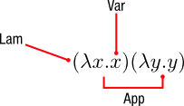
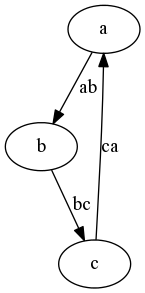
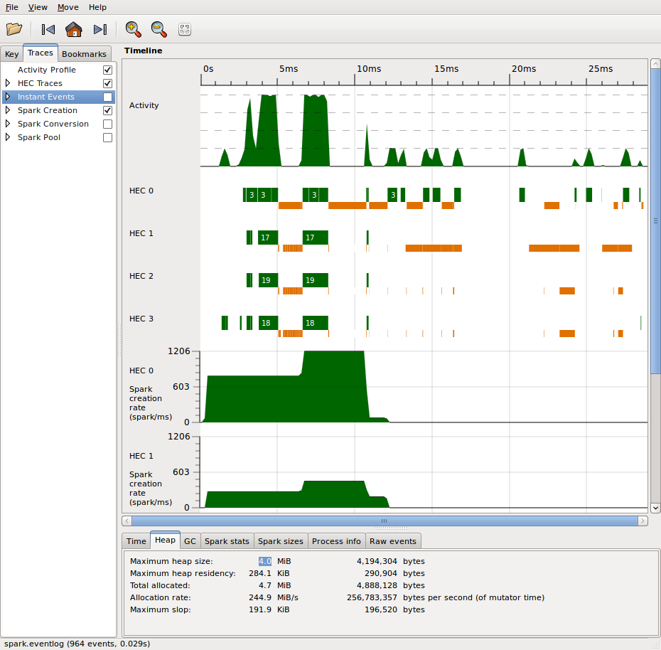

What I Wish I Knew When Learning Haskell
Version 2.5
% What I Wish I Knew When Learning Haskell (Version 2.5) % Stephen Diehl % February 2020
Version
This is the fifth major draft of this document since 2009.
Pull requests are always accepted for changes and additional content. This is a living document. The only way this document will stay up to date is through the kindness of readers like you and community patches and pull requests on Github.
If you’d like a physical copy of the text you can either print it for yourself (see Printable PDF) or purchase one online:
Author
This text is authored by Stephen Diehl.
- Web: https://www.stephendiehl.com
- Twitter: https://twitter.com/smdiehl
- Github: https://github.com/sdiehl
Special thanks for Erik Aker for copyediting assistance.
License
Copyright © 2009-2020 Stephen Diehl
This code included in the text is dedicated to the public domain. You can copy, modify, distribute and perform the code, even for commercial purposes, all without asking permission.
You may distribute this text in its full form freely, but may not reauthor or sublicense this work. Any reproductions of major portions of the text must include attribution.
The software is provided “as is”, without warranty of any kind, express or implied, including But not limited to the warranties of merchantability, fitness for a particular purpose and noninfringement. In no event shall the authors or copyright holders be liable for any claim, damages or other liability, whether in an action of contract, tort or otherwise, Arising from, out of or in connection with the software or the use or other dealings in the software.
Basics
What is Haskell?
At its heart Haskell is a lazy, functional, statically-typed programming language with advanced type system features such as higher-rank, higher-kinded parametric polymorphism, monadic effects, generalized algebraic data types, ad-hoc polymorphism through type classes, associated type families, and more. As a programming language, Haskell pushes the frontiers of programming language design more so than any other general purpose language while still remaining practical for everyday use.
Beyond language features, Haskell remains an organic, community-driven effort, run by its userbase instead of by corporate influences. While there are some Haskell companies and consultancies, most are fairly small and none have an outsized influence on the development of the language. This is in stark contrast to ecosystems like Java and Go where Oracle and Google dominate all development. In fact, the Haskell community is a synthesis between multiple disciplines of academic computer science and industrial users from large and small firms, all of whom contribute back to the language ecosystem.
Originally, Haskell was borne out of academic research. Designed as an ML dialect, it was initially inspired by an older language called Miranda. In the early 90s, a group of academics formed the GHC committee to pursue building a research vehicle for lazy programming languages as a replacement for Miranda. This was a particularly in-vogue research topic at the time and as a result the committee attracted various talented individuals who initiated the language and ultimately laid the foundation for modern Haskell.
Over the last 30 years Haskell has evolved into a mature ecosystem, with an equally mature compiler. Even so, the language is frequently reimagined by passionate contributors who may be furthering academic research goals or merely contributing out of personal interest. Although laziness was originally the major research goal, this has largely become a quirky artifact that most users of the language are generally uninterested in. In modern times the major themes of Haskell community are:
- A vehicle for type system research
- Experimentation in the design space of typed effect systems
- Algebraic structures as a method of program synthesis
- Referential transparency as a core language feature
- Embedded domain specific languages
- Experimentation toward practical dependent types
- Stronger encoding of invariants through type-level programming
- Efficient functional compiler design
- Alternative models of parallel and concurrent programming
Although these are the major research goals, Haskell is still a fully general purpose language, and it has been applied in wildly diverse settings from garbage trucks to cryptanalysis for the defense sector and everything in-between. With a thriving ecosystem of industrial applications in web development, compiler design, machine learning, financial services, FPGA development, algorithmic trading, numerical computing, cryptography research, and cybersecurity, the language has a lot to offer to any field or software practitioner.
Haskell as an ecosystem is one that is purely organic, it takes decades to evolve, makes mistakes and is not driven by any one ideology or belief about the purpose of functional programming. This makes Haskell programming simultaneously frustrating and exciting; and therein lies the fun that has been the intellectual siren song that has drawn many talented programmers to dabble in this beautiful language at some point in their lives.
See:
How to Read
This is a guide for working software engineers who have an interest in Haskell but don’t know Haskell yet. I presume you know some basics about how your operating system works, the shell, and some fundamentals of other imperative programming languages. If you are a Python or Java software engineer with no Haskell experience, this is the executive summary of Haskell theory and practice for you. We’ll delve into a little theory as needed to explain concepts but no more than necessary. If you’re looking for a purely introductory tutorial, this probably isn’t the right start for you, however this can be read as a companion to other introductory texts.
There is no particular order to this guide, other than the first chapter which describes how to get set up with Haskell and use the foundational compiler and editor tooling. After that you are free to browse the chapters in any order. Most are divided into several sections which outline different concepts, language features or libraries. However, the general arc of this guide bends toward more complex topics in later chapters.
As there is no ordering after the first chapter I will refer to concepts globally without introducing them first. If something doesn’t make sense just skip it and move on. I strongly encourage you to play around with the source code modules for yourself. Haskell cannot be learned from an armchair; instead it can only be mastered by writing a ton of code for yourself. GHC may initially seem like a cruel instructor, but in time most people grow to see it as their friend.
GHC
GHC is the Glorious Glasgow Haskell Compiler. Originally written in 1989, GHC is now the de facto standard for Haskell compilers. A few other compilers have existed along the way, but they either are quite limited or have bit rotted over the years. At this point, GHC is a massive compiler and it supports a wide variety of extensions. It’s also the only reference implementation for the Haskell language and as such, it defines what Haskell the language is by its implementation.
GHC is run at the command line with the command ghc.
$ ghc --version
The Glorious Glasgow Haskell Compilation System, version 8.8.1$ ghc Example.hs -o example
$ ghc --make Example.hsGHC’s runtime is written in C and uses machinery from GCC infrastructure for its native code generator and can also use LLVM for its native code generation. GHC is supported on the following architectures:
- Linux x86
- Linux x86_64
- Linux PowerPC
- NetBSD x86
- OpenBSD x86
- FreeBSD x86
- MacOS X Intel
- MacOS X PowerPC
- Windows x86_64
GHC itself depends on the following Linux packages.
- build-essential
- libgmp-dev
- libffi-dev
- libncurses-dev
- libtinfo5
ghcup
There are two major packages that need to be installed to use Haskell:
- ghc
- cabal-install
GHC can be installed on Linux and Mac with ghcup by running the following command:
$ curl --proto '=https' --tlsv1.2 -sSf https://get-ghcup.haskell.org | shTo start the interactive user interface, run:
$ ghcup tuiAlternatively, to use the cli to install multiple versions of GHC,
use the install command.
$ ghcup install ghc 8.6.5
$ ghcup install ghc 8.4.4To select which version of GHC is available on the PATH use the
set command.
$ ghcup set ghc 8.8.1This can also be used to install cabal.
$ ghcup install cabalTo modify your shell to include ghc and cabal.
$ source ~/.ghcup/envOr you can permanently add the following to your .bashrc
or .zshrc file:
export PATH="~/.ghcup/bin:$PATH"Package Managers
There are two major Haskell packaging tools: Cabal and Stack. Both take differing views on versioning schemes but can more or less interoperate at the package level. So, why are there two different package managers?
The simplest explanation is that Haskell is an organic ecosystem with no central authority, and as such different groups of people with different ideas and different economic interests about optimal packaging built their own solutions around two different models. The interests of an organic community don’t always result in open source convergence; however, the ecosystem has seen both package managers reach much greater levels of stability as a result of collaboration. In this article, I won’t offer a preference for which system to use: it is left up to the reader to experiment and use the system which best suits your or your company’s needs.
Project Structure
A typical Haskell project hosted on Github or Gitlab will have several executable, test and library components across several subdirectories. Each of these files will correspond to an entry in the Cabal file.
.
├── app # Executable entry-point
│ └── Main.hs # main-is file
├── src # Library entry-point
│ └── Lib.hs # Exposed module
├── test # Test entry-point
│ └── Spec.hs # Main-is file
├── ChangeLog.md # extra-source-files
├── LICENSE # extra-source-files
├── README.md # extra-source-files
├── package.yaml # hpack configuration
├── Setup.hs
├── simple.cabal # cabal configuration generated from hpack
├── stack.yaml # stack configuration
├── .hlint.yaml # hlint configuration
└── .ghci # ghci configurationMore complex projects consisting of multiple modules will include
multiple project directories like those above, but these will be nested
in subfolders with a cabal.project or
stack.yaml in the root of the repository.
.
├── lib-one # component1
├── lib-two # component2
├── lib-three # component3
├── stack.yaml # stack project configuration
└── cabal.project # cabal project configurationAn example Cabal project file, named cabal.project
above, this multi-component library repository would include these
lines.
packages: ./lib-one
./lib-two
./lib-threeBy contrast, an example Stack project stack.yaml for the
above multi-component library repository would be:
resolver: lts-14.20
packages:
- 'lib-one'
- 'lib-two'
- 'lib-three'
extra-package-dbs: []Cabal
Cabal is the build system for Haskell. Cabal is also the standard build tool for Haskell source supported by GHC. Cabal can be used simultaneously with Stack or standalone with cabal new-build.
To update the package index from Hackage, run:
$ cabal updateTo start a new Haskell project, run:
$ cabal init
$ cabal configureThis will result in a .cabal file being created with the
configuration options for our new project.
Cabal can also build dependencies in parallel by passing
-j<n> where n is the number of
concurrent builds.
$ cabal install -j4 --only-dependenciesLet’s look at an example .cabal file. There are two main
entry points that any package may provide: a library and an
executable. Multiple executables can be defined, but only
one library. In addition, there is a special form of executable entry
point Test-Suite, which defines an interface for invoking
unit tests from cabal.
For a library, the exposed-modules
field in the .cabal file indicates which modules within the
package structure will be publicly visible when the package is
installed. These modules are the user-facing APIs that we wish to expose
to downstream consumers.
For an executable, the main-is field
indicates the module that exports the main function
responsible for running the executable logic of the application. Every
module in the package must be listed in one of
other-modules, exposed-modules or
main-is fields.
name: mylibrary
version: 0.1
cabal-version: >= 1.10
author: Paul Atreides
license: MIT
license-file: LICENSE
synopsis: My example library.
category: Math
tested-with: GHC
build-type: Simple
library
exposed-modules:
Library.ExampleModule1
Library.ExampleModule2
build-depends:
base >= 4 && < 5
default-language: Haskell2010
ghc-options: -O2 -Wall -fwarn-tabs
executable "example"
build-depends:
base >= 4 && < 5,
mylibrary == 0.1
default-language: Haskell2010
main-is: Main.hs
Test-Suite test
type: exitcode-stdio-1.0
main-is: Test.hs
default-language: Haskell2010
build-depends:
base >= 4 && < 5,
mylibrary == 0.1To run an “executable” under cabal execute the
command:
$ cabal run
$ cabal run <name> # when there are several executables in a projectTo load the “library” into a GHCi shell under
cabal execute the command:
$ cabal repl
$ cabal repl <name>The <name> metavariable is either one of the
executable or library declarations in the .cabal file and
can optionally be disambiguated by the prefix
exe:<name> or lib:<name>
respectively.
To build the package locally into the ./dist/build
folder, execute the build command:
$ cabal buildTo run the tests, our package must itself be reconfigured with the
--enable-tests flag and the build-depends
options. The Test-Suite must be installed manually, if not
already present.
$ cabal install --only-dependencies --enable-tests
$ cabal configure --enable-tests
$ cabal test
$ cabal test <name>Moreover, arbitrary shell commands can be invoked with the GHC environmental variables. It
is quite common to run a new bash shell with this command such that the
ghc and ghci commands use the package
environment. This can also run any system executable with the
GHC_PACKAGE_PATH variable set to the libraries package database.
$ cabal exec
$ cabal exec bashThe haddock documentation can be generated for
the local project by executing the haddock command. The
documentation will be built to the ./dist folder.
$ cabal haddockWhen we’re finally ready to upload to Hackage ( presuming we have a Hackage account set up ), then we can build the tarball and upload with the following commands:
$ cabal sdist
$ cabal upload dist/mylibrary-0.1.tar.gzThe current state of a local build can be frozen with all current package constraints enumerated:
$ cabal freezeThis will create a file cabal.config with the constraint
set.
constraints: mtl ==2.2.1,
text ==1.1.1.3,
transformers ==0.4.1.0The cabal configuration is stored in
$HOME/.cabal/config and contains various options including
credential information for Hackage upload.
A library can also be compiled with runtime profiling information enabled. More on this is discussed in the section on Concurrency and Profiling.
library-profiling: TrueAnother common flag to enable is documentation which
forces the local build of Haddock documentation, which can be useful for
offline reference. On a Linux filesystem these are built to the
/usr/share/doc/ghc-doc/html/libraries/ directory.
documentation: TrueCabal can also be used to install packages globally to the system
PATH. For example the parsec package to your
system from Hackage, the upstream source of
Haskell packages, invoke the install command:
$ cabal install parsec --installdir=~/.local/bin # latest versionTo download the source for a package, we can use the get
command to retrieve the source from Hackage.
$ cabal get parsec # fetch source
$ cd parsec-3.1.5
$ cabal configure
$ cabal build
$ cabal installCabal New-Build
The interface for Cabal has seen an overhaul in the last few years and has moved more closely towards the Nix-style of local builds. Under the new system packages are separated into categories:
- Local Packages - Packages are built from a configuration file which specifies a path to a directory with a cabal file. These can be working projects as well as all of its local transitive dependencies.
- External Packages - External packages are packages
retrieved from either the public Hackage or a private Hackage
repository. These packages are hashed and stored locally in
~/.cabal/storeto be reused across builds.
As of Cabal 3.0 the new-build commands are the default operations for
build operations. So if you type cabal build using Cabal
3.0 you are already using the new-build system.
Historically these commands were separated into two different command
namespaces with prefixes v1- and v2-, with v1
indicating the old sandbox build system and the v2 indicating the
new-build system.
The new build commands are listed below:
new-build Compile targets within the project.
new-configure Add extra project configuration
new-repl Open an interactive session for the given component.
new-run Run an executable.
new-test Run test-suites
new-bench Run benchmarks
new-freeze Freeze dependencies.
new-haddock Build Haddock documentation
new-exec Give a command access to the store.
new-update Updates list of known packages.
new-install Install packages.
new-clean Clean the package store and remove temporary files.
new-sdist Generate a source distribution file (.tar.gz).Cabal also stores all of its build artifacts inside of a
dist-newstyle folder stored in the project working
directory. The compilation artifacts are of several categories.
.hi- Haskell interface modules which describe the type information, public exports, symbol table, and other module guts of compiled Haskell modules..hie- An extended interface file containing module symbol data..hspp- A Haskell preprocessor file..o- Compiled object files for each module. These are emitted by the native code generator assembler..s- Assembly language source file..bc- Compiled LLVM bytecode file..ll- An LLVM source file.cabal_macros.h- Contains all of the preprocessor definitions that are accessible when using the CPP extension.cache- Contains all artifacts generated by solving the constraints of packages to set up a build plan. This also contains the hash repository of all external packages.packagedb- Database of all of the cabal metadata of all external and local packages needed to build the project. See Package Databases.
These all get stored under the dist-newstyle folder
structure which is set up hierarchically under the specific CPU
architecture, GHC compiler version and finally the package version.
dist-newstyle
├── build
│ └── x86_64-linux
│ └── ghc-8.6.5
│ └── mypackage-0.1.0
│ ├── build
│ │ ├── autogen
│ │ │ ├── cabal_macros.h
│ │ │ └── Paths_mypackage.hs
│ │ ├── libHSmypackage-0.1.0-inplace.a
│ │ ├── libHSmypackage-0.1.0-inplace-ghc8.6.5.so
│ │ ├── MyPackage
│ │ │ ├── Example.dyn_hi
│ │ │ ├── Example.dyn_o
│ │ │ ├── Example.hi
│ │ │ ├── Example.o
│ │ ├── MyPackage.dyn_hi
│ │ ├── MyPackage.dyn_o
│ │ ├── MyPackage.hi
│ │ └── MyPackage.o
│ ├── cache
│ │ ├── build
│ │ ├── config
│ │ └── registration
│ ├── package.conf.inplace
│ │ ├── package.cache
│ │ └── package.cache.lock
│ └── setup-config
├── cache
│ ├── compiler
│ ├── config
│ ├── elaborated-plan
│ ├── improved-plan
│ ├── plan.json
│ ├── solver-plan
│ ├── source-hashes
│ └── up-to-date
├── packagedb
│ └── ghc-8.6.5
│ ├── package.cache
│ ├── package.cache.lock
│ └── mypackage-0.1.0-inplace.conf
└── tmpLocal Packages
Both Stack and Cabal can handle local packages built from the local filesystem, from remote tarballs, or from remote Git repositories.
Inside of the stack.yaml simply specify the git
repository remote and the hash to pull.
resolver: lts-14.20
packages:
# From Git
- git: https://github.com/sdiehl/protolude.git
commit: f5c2bf64b147716472b039d30652846069f2fc70In Cabal to add a remote create a cabal.project file and
add your remote in the source-repository-package
section.
packages: .
source-repository-package
type: git
location: https://github.com/hvr/HsYAML.git
tag: e70cf0c171c9a586b62b3f75d72f1591e4e6aaa1Version Bounds
All Haskell packages are versioned and the numerical quantities in the version are supposed to follow the Package Versioning Policy.
As packages evolve over time there are three numbers which monotonically increase depending on what has changed in the package.
- Major version number
- Minor version number
- Patch version number
-- PVP summary: +-+------- breaking API changes
-- | | +----- non-breaking API additions
-- | | | +--- code changes with no API change
version: 0.1.0.0Every library’s cabal file will have a packages dependencies section
which will specify the external packages which the library depends on.
It will also contain the allowed versions that it is known to build
against in the build-depends section. The convention is to
put the upper bound to the next major unreleased version and the lower
bound at the currently used version.
build-depends:
base >= 4.6 && <4.14,
async >= 2.0 && <2.3,
deepseq >= 1.3 && <1.5,
containers >= 0.5 && <0.7,
hashable >= 1.2 && <1.4,
transformers >= 0.2 && <0.6,
text >= 1.2 && <1.3,
bytestring >= 0.10 && <0.11,
mtl >= 2.1 && <2.3Individual lines in the version specification can be dependent on other variables in the cabal file.
if !impl(ghc >= 8.0)
Build-Depends: fail >= 4.9 && <4.10Version bounds in cabal files can be managed automatically with a
tool cabal-bounds which can automatically generate, update
and format cabal files.
$ cabal-bounds updateSee:
Stack
Stack is an alternative approach to Haskell’s package structure that emerged in 2015. Instead of using a rolling build like Cabal, Stack breaks up sets of packages into release blocks that guarantee internal compatibility between sets of packages. The package solver for Stack uses a different strategy for resolving dependencies than cabal-install has historically used and Stack combines this with a centralised build server called Stackage which continuously tests the set of packages in a resolver to ensure they build against each other.
Install
To install stack on Linux or Mac, run:
curl -sSL https://get.haskellstack.org/ | shFor other operating systems, see the official install directions.
Usage
Once stack is installed, it is possible to setup a build
environment on top of your existing project’s cabal file by
running:
stack initAn example stack.yaml file for GHC 8.8.1 would look like
this:
resolver: lts-14.20
flags: {}
extra-package-dbs: []
packages: []
extra-deps: []Most of the common libraries used in everyday development are already
in the Stackage repository. The
extra-deps field can be used to add Hackage dependencies that are not
in the Stackage repository. They are specified by the package and the
version key. For instance, the zenc package could be added
to stack build in the following way:
extra-deps:
- zenc-0.1.1The stack command can be used to install packages and
executables into either the current build environment or the global
environment. For example, the following command installs the executable
for hlint, a popular linting tool for
Haskell, and places it in the PATH:
$ stack install hlintTo check the set of dependencies, run:
$ stack ls dependenciesJust as with cabal, the build and debug process can be
orchestrated using stack commands:
$ stack build # Build a cabal target
$ stack repl # Launch ghci
$ stack ghc # Invoke the standalone compiler in stack environment
$ stack exec bash # Execute a shell command with the stack GHC environment variables
$ stack build --file-watch # Build on every filesystem changeTo visualize the dependency graph, use the dot command piped first into graphviz, then piped again into your favorite image viewer:
$ stack dot --external | dot -Tpng | feh -Hpack
Hpack is an alternative package description language that uses a
structured YAML format to generate Cabal files. Hpack succeeds in DRYing
(Don’t Repeat Yourself) several sections of cabal files that are often
quite repetitive across large projects. Hpack uses a
package.yaml file which is consumed by the command line
tool hpack. Hpack can be integrated into Stack and will
generate resulting cabal files whenever stack build is
invoked on a project using a package.yaml file. The output
cabal file contains a hash of the input yaml file for consistency
checking.
A small package.yaml file might look something like the
following:
name : example
version : 0.1.0
synopsis : My fabulous library
description : My fabulous library
maintainer : John Doe
github : john/example
category : Development
ghc-options: -Wall
dependencies:
- base >= 4.9 && < 5
- protolude
- deepseq
- directory
- filepath
- text
- containers
- unordered-containers
- aeson
- pretty-simple
library:
source-dirs: src
exposed-modules:
- Example
executable:
main: Main.hs
source-dirs: exe
dependencies:
- example
tests:
spec:
main: Test.hs
source-dirs:
- test
- src
dependencies:
- example
- tasty
- tasty-hunitBase
GHC itself ships with a variety of core libraries that are loaded
into all Haskell projects. The most foundational of these is
base which forms the foundation for all Haskell code. The
base library is split across several modules.
- Prelude - The default namespace imported in every module.
- Data - The simple data structures wired into the language
- Control - Control flow functions
- Foreign - Foreign function interface
- Numeric - Numerical tower and arithmetic operations
- System - System operations for Linux/Mac/Windows
- Text - Basic String types.
- Type - Typelevel operations
- GHC - GHC Internals
- Debug - Debug functions
- Unsafe - Unsafe “backdoor” operations
There have been several large changes to Base over the years which have resulted in breaking changes that means older versions of base are not compatible with newer versions.
- Monad Applicative Proposal (AMP)
- MonadFail Proposal (MFP)
- Semigroup Monoid Proposal (SMP)
Prelude
The Prelude is the default standard module. The Prelude is imported by default into all Haskell modules unless either there is an explicit import statement for it, or the NoImplicitPrelude extension is enabled.
The Prelude exports several hundred symbols that are the default datatypes and functions for libraries that use the GHC-issued prelude. Although the Prelude is the default import, many libraries these days do not use the standard prelude instead choosing to roll a custom one on a per-project basis or to use an off-the shelf prelude from Hackage.
The Prelude contains common datatype and classes such as List, Monad, Maybe and most associated functions for manipulating these structures. These are the most foundational programming constructs in Haskell.
Modern Haskell
There are two official language standards:
- Haskell98
- Haskell2010
And then there is what is colloquially referred to as Modern Haskell which is not an official language standard, but an ambiguous term to denote the emerging way most Haskellers program with new versions of GHC. The language features typically included in modern Haskell are not well-defined and will vary between programmers. For instance, some programmers prefer to stay quite close to the Haskell2010 standard and only include a few extensions while some go all out and attempt to do full dependent types in Haskell.
By contrast, the type of programming described by the phrase Modern Haskell typically utilizes some type-level programming, as well as flexible typeclasses, and a handful of Language Extensions.
Flags
GHC has a wide variety of flags that can be passed to configure different behavior in the compiler. Enabling GHC compiler flags grants the user more control in detecting common code errors. The most frequently used flags are:
| Flag | Description |
|---|---|
-fwarn-tabs |
Emit warnings of tabs instead of spaces in the source code |
-fwarn-unused-imports |
Warn about libraries imported without being used |
-fwarn-name-shadowing |
Warn on duplicate names in nested bindings |
-fwarn-incomplete-uni-patterns |
Emit warnings for incomplete patterns in lambdas or pattern bindings |
-fwarn-incomplete-patterns |
Warn on non-exhaustive patterns |
-fwarn-overlapping-patterns |
Warn on pattern matching branches that overlap |
-fwarn-incomplete-record-updates |
Warn when records are not instantiated with all fields |
-fdefer-type-errors |
Turn type errors into warnings |
-fwarn-missing-signatures |
Warn about toplevel missing type signatures |
-fwarn-monomorphism-restriction |
Warn when the monomorphism restriction is applied implicitly |
-fwarn-orphans |
Warn on orphan typeclass instances |
-fforce-recomp |
Force recompilation regardless of timestamp |
-fno-code |
Omit code generation, just parse and typecheck |
-fobject-code |
Generate object code |
Like most compilers, GHC takes the -Wall flag to enable
all warnings. However, a few of the enabled warnings are highly verbose.
For example, -fwarn-unused-do-bind and
-fwarn-unused-matches typically would not correspond to
errors or failures.
Any of these flags can be added to the ghc-options
section of a project’s .cabal file. For example:
ghc-options:
-fwarn-tabs
-fwarn-unused-imports
-fwarn-missing-signatures
-fwarn-name-shadowing
-fwarn-incomplete-patternsThe flags described above are simply the most useful. See the official reference for the complete set of GHC’s supported flags.
For information on debugging GHC internals, see the commentary on GHC internals.
Hackage
Hackage is the upstream source of open source Haskell packages. With Haskell’s continuing evolution, Hackage has become many things to developers, but there seem to be two dominant philosophies of uploaded libraries.
A Repository for Production Libraries
In the first philosophy, libraries exist as reliable, community-supported building blocks for constructing higher level functionality on top of a common, stable edifice. In development communities where this method is the dominant philosophy, the authors of libraries have written them as a means of packaging up their understanding of a problem domain so that others can build on their understanding and expertise.
An Experimental Playground
In contrast to the previous method of packaging, a common philosophy in the Haskell community is that Hackage is a place to upload experimental libraries as a means of getting community feedback and making the code publicly available. Library authors often rationalize putting these kinds of libraries up without documentation, often without indication of what the library actually does or how it works. This unfortunately means a lot of Hackage namespace has become polluted with dead-end, bit-rotting code. Sometimes packages are also uploaded purely for internal use within an organisation, or to accompany an academic paper. These packages are often left undocumented as well.
For developers coming to Haskell from other language ecosystems that favor the former philosophy (e.g., Python, JavaScript, Ruby), seeing thousands of libraries without the slightest hint of documentation or description of purpose can be unnerving. It is an open question whether the current cultural state of Hackage is sustainable in light of these philosophical differences.
Needless to say, there is a lot of very low-quality Haskell code and documentation out there today, so being conservative in library assessment is a necessary skill. That said, there are also quite a few phenomenal libraries on Hackage that are highly curated by many people.
As a general rule, if the Haddock documentation for the library does not have a minimal working example, it is usually safe to assume that it is an RFC-style library and probably should be avoided for production code.
There are several heuristics you can use to answer the question Should I Use this Hackage Library:
- Check the Uploaded to see if the author has updated it in the last five years.
- Check the Maintainer email address, if the author has an academic email address and has not uploaded a package in two or more years, it is safe to assume that this is a thesis project and probably should not be used industrially.
- Check the Modules to see if the author has included toplevel Haddock docstrings. If the author has not included any documentation then the library is likely of low-quality and should not be used industrially.
- Check the Dependencies for the bound on
basepackage. If it doesn’t include the latest base included with the latest version of GHC then the code is likely not actively maintained. - Check the reverse Hackage search to see if the package is used by other libraries in the ecosystem. For example: https://packdeps.haskellers.com/reverse/QuickCheck
An example of a bitrotted package:
https://hackage.haskell.org/package/numeric-quest
An example of a well maintained package:
https://hackage.haskell.org/package/QuickCheck
Stackage
Stackage is an alternative opt-in packaging repository which mirrors a subset of Hackage. Packages that are included in Stackage are built in a massive continuous integration process that checks to see that given versions link successfully against each other. This can give a higher degree of assurance that the bounds of a given resolver ensure compatibility.
Stackage releases are built nightly and there are also long-term stable (LTS) releases. Nightly resolvers have a date convention while LTS releases have a major and minor version. For example:
lts-14.22nightly-2020-01-30
See:
GHCi
GHCi is the interactive shell for the GHC compiler. GHCi is where we will spend most of our time in everyday development. Following is a table of useful GHCi commands.
| Command | Shortcut | Action |
|---|---|---|
:reload |
:r |
Code reload |
:type |
:t |
Type inspection |
:kind |
:k |
Kind inspection |
:info |
:i |
Information |
:print |
:p |
Print the expression |
:edit |
:e |
Load file in system editor |
:load |
:l |
Set the active Main module in the REPL |
:module |
:m |
Add modules to imports |
:add |
:ad |
Load a file into the REPL namespace |
:instances |
:in |
Show instances of a typeclass |
:browse |
:bro |
Browse all available symbols in the REPL namespace |
The introspection commands are an essential part of debugging and interacting with Haskell code:
λ: :type 3
3 :: Num a => aλ: :kind Either
Either :: * -> * -> *λ: :info Functor
class Functor f where
fmap :: (a -> b) -> f a -> f b
(<$) :: a -> f b -> f a
-- Defined in `GHC.Base'
...λ: :i (:)
data [] a = ... | a : [a] -- Defined in `GHC.Types'
infixr 5 :Querying the current state of the global environment in the shell is also possible. For example, to view module-level bindings and types in GHCi, run:
λ: :browse
λ: :show bindingsTo examine module-level imports, execute:
λ: :show imports
import Prelude -- implicit
import Data.Eq
import Control.MonadLanguage extensions can be set at the repl.
:set -XNoImplicitPrelude
:set -XFlexibleContexts
:set -XFlexibleInstances
:set -XOverloadedStringsTo see compiler-level flags and pragmas, use:
λ: :set
options currently set: none.
base language is: Haskell2010
with the following modifiers:
-XNoDatatypeContexts
-XNondecreasingIndentation
GHCi-specific dynamic flag settings:
other dynamic, non-language, flag settings:
-fimplicit-import-qualified
warning settings:
λ: :showi language
base language is: Haskell2010
with the following modifiers:
-XNoDatatypeContexts
-XNondecreasingIndentation
-XExtendedDefaultRulesLanguage extensions and compiler pragmas can be set at the prompt. See the Flag Reference for the vast collection of compiler flag options.
Several commands for the interactive shell have shortcuts:
| Function | |
|---|---|
+t |
Show types of evaluated expressions |
+s |
Show timing and memory usage |
+m |
Enable multi-line expression delimited by
:{ and :}. |
λ: :set +t
λ: []
[]
it :: [a]λ: :set +s
λ: foldr (+) 0 [1..25]
325
it :: Prelude.Integer
(0.02 secs, 4900952 bytes)λ: :set +m
λ: :{
λ:| let foo = do
λ:| putStrLn "hello ghci"
λ:| :}
λ: foo
"hello ghci".ghci.conf
The GHCi shell can be customized globally by defining a configure
file ghci.conf in $HOME/.ghc/ or in the
current working directory as ./.ghci.conf.
For example, we can add a command to use the Hoogle type search from
within GHCi. First, install hoogle:
# run one of these command
$ cabal install hoogle
$ stack install hoogleThen, we can enable the search functionality by adding a command to
our ghci.conf:
:set prompt "λ: "
:def hlint const . return $ ":! hlint \"src\""
:def hoogle \s -> return $ ":! hoogle --count=15 \"" ++ s ++ "\""λ: :hoogle (a -> b) -> f a -> f b
Data.Traversable fmapDefault :: Traversable t => (a -> b) -> t a -> t b
Prelude fmap :: Functor f => (a -> b) -> f a -> f bIt is common community tradition to set the prompt to a colored
λ:
:set prompt "\ESC[38;5;208m\STXλ>\ESC[m\STX "GHC can also be coerced into giving slightly better error messages:
-- Better errors
:set -ferror-spans -freverse-errors -fprint-expanded-synonymsGHCi can also use a pretty printing library to format all output,
which is often much easier to read. For example if your project is
already using the amazing pretty-simple library simply
include the following line in your ghci configuration.
:set -ignore-package pretty-simple -package pretty-simple
:def! pretty \ _ -> pure ":set -interactive-print Text.Pretty.Simple.pPrint"
:prettyAnd the default prelude can also be disabled and swapped for something more sensible:
:seti -XNoImplicitPrelude
:seti -XFlexibleContexts
:seti -XFlexibleInstances
:seti -XOverloadedStrings
import Protolude -- or any other preferred preludeGHCi Performance
For large projects, GHCi with the default flags can use quite a bit of memory and take a long time to compile. To speed compilation by keeping artifacts for compiled modules around, we can enable object code compilation instead of bytecode.
:set -fobject-codeEnabling object code compilation may complicate type inference, since
type information provided to the shell can sometimes be less informative
than source-loaded code. This underspecificity can result in breakage
with some language extensions. In that case, you can temporarily
reenable bytecode compilation on a per module basis with the
-fbyte-code flag.
:set -fbyte-code
:load MyModule.hsIf all you need is to typecheck your code in the interactive shell, then disabling code generation entirely makes reloading code almost instantaneous:
:set -fno-codeEditor Integration
Haskell has a variety of editor tools that can be used to provide interactive development feedback and functionality such as querying types of subexpressions, linting, type checking, and code completion. These are largely provided by the haskell-ide-engine which serves as an editor agnostic backend that interfaces with GHC and Cabal to query code.
Vim
Emacs
VSCode
- haskell-ide-engine - Tab completion plugin
- language-haskell - Syntax highlighting plugin
- ghcid - Interactive error reporting plugin
- hie-server - Jump to definition and tag handling plugin
- hlint - Linting and style-checking plugin
- ghcide - Interactive completion plugin
- ormolu-vscode - Code formatting plugin
Linux Packages
There are several upstream packages for Linux packages which are released by GHC development. The key ones of note for Linux are:
For scripts and operations tools, it is common to include commands to add the following apt repositories, and then use these to install the signed GHC and cabal-install binaries (if using Cabal as the primary build system).
$ sudo add-apt-repository -y ppa:hvr/ghc
$ sudo apt-get update
$ sudo apt-get install -y cabal-install-3.0 ghc-8.8.1It is not advisable to use a Linux system package manager to manage Haskell dependencies. Although this can be done, in practice it is better to use Cabal or Stack to create locally isolated builds to avoid incompatibilities.
Names
Names in Haskell exist within a specific namespace. Names are either unqualified of the form:
nubOr qualified by the module where they come from, such as:
Data.List.nubThe major namespaces are described below with their naming conventions
| Namespace | Convention |
|---|---|
| Modules | Uppercase |
| Functions | Lowercase |
| Variables | Lowercase |
| Type Variables | Lowercase |
| Datatypes | Uppercase |
| Constructors | Uppercase |
| Typeclasses | Uppercase |
| Synonyms | Uppercase |
| Type Families | Uppercase |
Modules
A module consists of a set of imports and exports and when compiled generates an interface which is linked against other Haskell modules. A module may reexport symbols from other modules.
-- A module starts with its export declarations of symbols declared in this file.
module MyModule (myExport1, myExport2) where
-- Followed by a set of imports of symbols from other files
import OtherModule (myImport1, myImport2)
-- Rest of the logic and definitions in the module follow
-- ...Modules’ dependency graphs optionally may be cyclic (i.e. they import symbols from each other) through the use of a boot file, but this is often best avoided if at all possible.
Various module import strategies exist. For instance, we may:
Import all symbols into the local namespace.
import Data.ListImport select symbols into the local namespace:
import Data.List (nub, sort)Import into the global namespace masking a symbol:
import Data.List hiding (nub)Import symbols qualified under Data.Map namespace into
the local namespace.
import qualified Data.MapImport symbols qualified and reassigned to a custom namespace
(M, in the example below):
import qualified Data.Map as MYou may also dump multiple modules into the same namespace so long as the symbols do not clash:
import qualified Data.Map as M
import qualified Data.Map.Strict as MA main module is a special module which reserves the name
Main and has a mandatory export of type IO ()
which is invoked when the executable is run.. This is the entry point
from the system into a Haskell program.
module Main where
main = print "Hello World!"Functions
Functions are the central construction in Haskell. A function
f of two arguments x and y can be
defined in a single line as the left-hand and right-hand side of an
equation:
f x y = x + yThis line defines a function named f of two arguments,
which on the right-hand side adds and yields the result. Central to the
idea of functional programming is that computational functions should
behave like mathematical functions. For instance, consider this
mathematical definition of the above Haskell function, which, aside from
the parentheses, looks the same:
f(x, y) = x + y
In Haskell, a function of two arguments need not necessarily be
applied to two arguments. The result of applying only the first argument
is to yield another function to which later the second argument can be
applied. For example, we can define an add function and
subsequently a single-argument inc function, by merely
pre-applying 1 to add:
add x y = x + y
inc = add 1λ: inc 4
5In addition to named functions Haskell also has anonymous lambda functions denoted with a backslash. For example the identity function:
id x = xIs identical to:
id = \x -> xFunctions may call themselves or other functions as arguments; a
feature known as higher-order functions. For example the
following function applies a given argument f, which is
itself a function, to a value x twice.
applyTwice f x = f (f x)Types
Typed functional programming is essential to the modern Haskell paradigm. But what are types precisely?
The syntax of a programming language is described by the constructs that define its types, and its semantics are described by the interactions among those constructs. A type system overlays additional structure on top of the syntax that imposes constraints on the formation of expressions based on the context in which they occur.
Dynamic programming languages associate types with values at evaluation, whereas statically typed languages associate types to expressions before evaluation. Dynamic languages are in a sense as statically typed as static languages, however they have a degenerate type system with only one type.
The dominant philosophy in functional programming is to “make invalid states unrepresentable” at compile-time, rather than performing massive amounts of runtime checks. To this end Haskell has developed a rich type system that is based on typed lambda calculus known as Girard’s System-F (See Rank-N Types) and has incrementally added extensions to support more type-level programming over the years.
The following ground types are quite common:
()- The unit typeChar- A single unicode character (“code point”)Text- Unicode stringsBool- Boolean valuesInt- Machine integersInteger- GMP arbitrary precision integersFloat- Machine floating point valuesDouble- Machine double floating point values
Parameterised types consist of a type and several type parameters indicated as lower case type variables. These are associated with common data structures such as lists and tuples.
[a]– Homogeneous lists with elements of typea(a,b)– Tuple with two elements of typesaandb(a,b,c)– Tuple with three elements of typesa,b, andc
The type system grows quite a bit from here, but these are the foundational types you’ll first encounter. See the later chapters for all types off advanced features that can be optionally turned on.
This tutorial will only cover a small amount of the theory of type systems. For a more thorough treatment of the subject there are two canonical texts:
- Pierce, B. C., & Benjamin, C. (2002). Types and Programming Languages. MIT Press.
- Harper, R. (2016). Practical Foundations for Programming Languages. Cambridge University Press.
Type Signatures
A toplevel Haskell function consists of two lines. The value-level definition which is a function name, followed by its arguments on the left-hand side of the equals sign, and then the function body which computes the value it yields on the right-hand side:
myFunction x y = x ^ 2 + y ^ 2
-- ^ ^ ^ ^^^^^^^^^^^^^
-- | | | |
-- | | | +-- function body
-- | | +------ second argument
-- | +-------- first argument
-- +-------------- functionThe type-level definition is the function name followed by the type of its arguments separated by arrows, and the final term is the type of the entire function body, meaning the type of value yielded by the function itself.
myFunction :: Int -> Int -> Int
-- ^ ^ ^ ^^^^^
-- | | | |
-- | | | +- return type
-- | | +------ second argument
-- | +------------ first argument
-- +----------------------- functionHere is a simple example of a function which adds two integers.
add :: Integer -> Integer -> Integer
add x y = x + yFunctions are also capable of invoking other functions inside of their function bodies:
inc :: Integer -> Integer
inc = add 1The simplest function, called the identity function, is a function which takes a single value and simply returns it back. This is an example of a polymorphic function since it can handle values of any type. The identity function works just as well over strings as over integers.
id :: a -> a
id x = xThis can alternatively be written in terms of an anonymous lambda function which is a backslash followed by a space-separated list of arguments, followed by a function body.
id :: a -> a
id = \x -> xOne of the big ideas in functional programming is that functions are
themselves first class values which can be passed to other functions as
arguments themselves. For example the applyTwice function
takes an argument f which is of type
(a -> a) and it applies that function over a given value
x twice and yields the result. applyTwice is a
higher-order function which will transform one function into another
function.
applyTwice :: (a -> a) -> a -> a
applyTwice f x = f (f x)Often to the left of a type signature you will see a big arrow
=> which denotes a set of constraints
over the type signature. Each of these constraints will be in uppercase
and will normally mention at least one of the type variables on the
right hand side of the arrow. These constraints can mean many things but
in the simplest form they denote that a type variable must have an
implementation of a type class. The
add function below operates over any two similar values
x and y, but these values must have a
numerical interface for adding them together.
add :: (Num a) => a -> a -> a
add x y = x + yType signatures can also appear at the value level in the form of explicit type signatures which are denoted in parentheses.
add1 :: Int -> Int
add1 x = x + (1 :: Int)These are sometimes needed to provide additional hints to the typechecker when specific terms are ambiguous to the typechecker, or when additional language extensions have been enabled which don’t have precise inference methods for deducing all type variables.
Currying
In other languages functions normally have an arity which prescribes the number of arguments a function can take. Some languages have fixed arity (like Fortran) others have flexible arity (like Python) where a variable of number of arguments can be passed. Haskell follows a very simple rule: all functions in Haskell take a single argument. For multi-argument functions (some of which we’ve already seen), arguments will be individually applied until the function is saturated and the function body is evaluated.
For example, the add function from above can be partially applied to produce an add1 function:
add :: Int -> Int -> Int
add x y = x + y
add1 :: Int -> Int
add1 = add 1Uncurrying is the process of taking a function which takes two arguments and transforming it into a function which takes a tuple of arguments. The Haskell prelude includes both a curry and an uncurry function for transforming functions into those that take multiple arguments from those that take a tuple of arguments and vice versa:
curry :: ((a, b) -> c) -> a -> b -> c
uncurry :: (a -> b -> c) -> (a, b) -> cFor example, uncurry applied to the add function creates a function that takes a tuple of integers:
uncurryAdd :: (Int, Int) -> Int
uncurryAdd = uncurry add
example :: Int
example = uncurryAdd (1,2)Algebraic Datatypes
Custom datatypes in Haskell are defined with the data
keyword followed by the the type name, its parameters, and then a set of
constructors. The possible constructors are either sum
types or of product types. All datatypes in Haskell can be
expressed as sums of products. A sum type is a set of options that is
delimited by a pipe.
A datatype can only ever be inhabited by a single value from a sum
type and intuitively models a set of “options” a value may take. While a
product type is a combination of a set of typed values, potentially
named by record fields. For example the following are two definitions of
a Point product type, the latter with two fields x and
y.
data Point = Point Int Int
data Point = Point { x :: Int, y :: Int }As another example: A deck of common playing cards could be modeled by the following set of product and sum types:
data Suit = Clubs | Diamonds | Hearts | Spades
data Color = Red | Black
data Value
= Two
| Three
| Four
| Five
| Six
| Seven
| Eight
| Nine
| Ten
| Jack
| Queen
| King
| Ace
deriving (Eq, Ord)A record type can use these custom datatypes to define all the parameters that define an individual playing card.
data Card = Card
{ suit :: Suit
, color :: Color
, value :: Value
}Some example values:
queenDiamonds :: Card
queenDiamonds = Card Diamonds Red Queen
-- Alternatively
queenDiamonds :: Card
queenDiamonds = Card { suit = Diamonds, color = Red, value = Queen }The problem with the definition of this datatype is that it admits
several values which are malformed. For instance it is possible to
instantiate a Card with a suit Hearts but with
color Black which is an invalid value. The convention for
preventing these kind of values in Haskell is to limit the export of
constructors in a module and only provide a limited set of functions
which the module exports, which can enforce these constraints. These are
smart constructors and an extremely common pattern in
Haskell library design. For example we can export functions for building
up specific suit cards that enforce the color invariant.
module Cards (Card, diamond, spade, heart, club) where
diamond :: Value -> Card
diamond = Card Diamonds Red
spade :: Value -> Card
spade = Card Spades Black
heart :: Value -> Card
heart = Card Hearts Red
club :: Value -> Card
club = Card Clubs BlackDatatypes may also be recursive, in the sense that they can contain themselves as fields. The most common example is a linked list which can be defined recursively as either an empty list or a value linked to a potentially nested version of itself.
data List a = Nil | List a (List a)An example value would look like:
list :: List Integer
list = List 1 (List 2 (List 3 Nil))Constructors for datatypes can also be defined as infix symbols. This
is somewhat rare, but is sometimes used in more math heavy libraries.
For example the constructor for our list type could be defined as the
infix operator :+:. When the value is printed using a Show
instance, the operator will be printed in infix form.
data List a = Nil | a :+: (List a)Lists
Linked lists or cons lists are a fundamental data structure
in functional programming. GHC has builtin syntactic sugar in the form
of list syntax which allows us to write lists that expand into explicit
invocations of the cons operator (:). The operator
is right associative and an example is shown below:
[1,2,3] = 1 : 2 : 3 : []
[1,2,3] = 1 : (2 : (3 : [])) -- with explicit parensThis syntax also extends to the typelevel where lists are represented as brackets around the type of values they contain.
myList1 :: [Int]
myList1 = [1,2,3]
myList2 :: [Bool]
myList2 = [True, True, False]The cons operator itself has the type signature which takes a head element as its first argument and a tail argument as its second.
(:) :: a -> [a] -> [a]The Data.Listmodule from the standard Prelude defines a
variety of utility functions for operations over linked lists. For
example the length function returns the integral length of
the number of elements in the linked list.
length :: [a] -> IntWhile the take function extracts a fixed number of
elements from the list.
take :: Int -> [a] -> [a]Both of these functions are pure and return a new list without modifying the underlying list passed as an argument.
Another function iterate is an example of a function
which returns an infinite list. It takes as its first argument
a function and then repeatedly applies that function to produce a new
element of the linked list.
iterate :: (a -> a) -> a -> [a]Consuming these infinite lists can be used as a control flow construct to construct loops. For example instead of writing an explicit loop, as we would in other programming languages, we instead construct a function which generates list elements. For example producing a list which produces subsequent powers of two:
powersOfTwo = iterate (2*) 1We can then use the take function to evaluate this
lazy stream to a desired depth.
λ: take 15 powersOfTwo
[1,2,4,8,16,32,64,128,256,512,1024,2048,4096,8192,16384]An equivalent loop in an imperative language would look like the following.
def powersOfTwo(n):
square_list = [1]
for i in range(1,n+1):
square_list.append(2 ** i)
return square_list
print(powersOfTwo(15))Pattern Matching
To unpack an algebraic datatype and extract its fields we’ll use a
built in language construction known as pattern matching. This
is denoted by the case syntax and scrutinizes a
specific value. A case expression will then be followed by a sequence of
matches which consist of a pattern on the left and an
arbitrary expression on the right. The left patterns will all consist of
constructors for the type of the scrutinized value and should enumerate
all possible constructors. For product type patterns that are
scrutinized a sequence of variables will bind the fields associated with
its positional location in the constructor. The types of all expressions
on the right hand side of the matches must be identical.
Pattern matches can be written in explicit case statements or in toplevel functional declarations. The latter simply expands the former in the desugaring phase of the compiler.
data Example = Example Int Int Int
example1 :: Example -> Int
example1 x = case x of
Example a b c -> a + b + c
example2 :: Example -> Int
example2 (Example a b c) = a + b +cFollowing on the playing card example in the previous section, we could use a pattern to produce a function which scores the face value of a playing card.
value :: Value -> Integer
value card = case card of
Two -> 2
Three -> 3
Four -> 4
Five -> 5
Six -> 6
Seven -> 7
Eight -> 8
Nine -> 9
Ten -> 10
Jack -> 10
Queen -> 10
King -> 10
Ace -> 1And we can use a double pattern match to produce a function which
determines which suit trumps another suit. For example we can introduce
an order of suits of cards where the ranking of cards proceeds (Clubs,
Diamonds, Hearts, Spaces). A _ underscore used inside a
pattern indicates a wildcard pattern and matches against any constructor
given. This should be the last pattern used a in match list.
suitBeats :: Suit -> Suit -> Bool
suitBeats Clubs Diamonds = True
suitBeats Clubs Hearts = True
suitBeats Clubs Spaces = True
suitBeats Diamonds Hearts = True
suitBeats Diamonds Spades = True
suitBeats Hearts Spades = True
suitBeats _ _ = FalseAnd finally we can write a function which determines if another card beats another card in terms of the two pattern matching functions above. The following pattern match brings the values of the record into the scope of the function body assigning to names specified in the pattern syntax.
beats :: Card -> Card -> Bool
beats (Card suit1 color1 value1) (Card suit2 color2 value2) =
(suitBeats suit1 suit2) && (value1 > value2)Functions may also invoke themselves. This is known as recursion. This is quite common in pattern matching definitions which recursively tear down or build up data structures. This kind of pattern is one of the defining modes of programming functionally.
The following two recursive pattern matches are desugared forms of each other:
fib :: Integer -> Integer
fib 0 = 0
fib 1 = 1
fib n = fib (n-1) + fib (n-2)fib :: Integer -> Integer
fib m = case m of
0 -> 0
1 -> 1
n -> fib (n-1) + fib(n-2)Pattern matching on lists is also an extremely common pattern. It has
special pattern syntax and the tail variable is typically pluralized. In
the following x denotes the head variable and
xs denotes the tail. For example the following function
traverses a list of integers and adds (+1) to each
value.
addOne :: [Int] -> [Int]
addOne (x : xs) = (x+1) : (addOne xs)
addOne [] = []Guards
Guard statements are expressions that evaluate to boolean values that
can be used to restrict pattern matches. These occur in a pattern match
statements at the toplevel with the pipe syntax on the left indicating
the guard condition. The special otherwise condition is
just a renaming of the boolean value True exported from
Prelude.
absolute :: Int -> Int
absolute n
| n < 0 = (-n)
| otherwise = nGuards can also occur in pattern case expressions.
absoluteJust :: Maybe Int -> Maybe Int
absoluteJust n = case n of
Nothing -> Nothing
Just n
| n < 0 -> Just (-n)
| otherwise -> Just nOperators and Sections
An operator is a function that can be applied using infix syntax or partially applied using a section. Operators can be defined to use any combination of the special ASCII symbols or any unicode symbol.
! # % &
* + . /
< = > ?
@ \ ^ |
- ~ :
The following are reserved syntax and cannot be overloaded:
.. : :: =
\ | <- ->
@ ~ =>
Operators are of one of three fixity classes.
- Infix - Place between expressions
- Prefix - Placed before expressions
- Postfix - Placed after expressions. See Postfix Operators.
Expressions involving infix operators are disambiguated by the operator’s fixity and precedence. Infix operators are either left or right associative. Associativity determines how operators of the same precedence are grouped in the absence of parentheses.
a + b + c + d = ((a + b) + c) + d -- left associative
a + b + c + d = a + (b + (c + d)) -- right associativePrecedence and associativity are denoted by fixity declarations for
the operator using either infixr infixl and
infix. The standard operators defined in the Prelude have
the following precedence table.
infixr 9 .
infixr 8 ^, ^^, **
infixl 7 *, /, `quot`, `rem`, `div`, `mod`
infixl 6 +, -
infixr 5 ++
infix 4 ==, /=, <, <=, >=, >
infixr 3 &&
infixr 2 ||
infixr 1 >>, >>=
infixr 0 $, `seq`Sections are written as ( op e ) or
( e op ). For example:
(+1) 3
(1+) 3Operators written within enclosed parens are applied like traditional functions. For example the following are equivalent:
(+) x y = x + yTuples
Tuples are heterogeneous structures which contain a fixed number of values. Some simple examples are shown below:
-- 2-tuple
tuple2 :: (Integer, String)
tuple2 = (1, "foo")
-- 3-tuple
tuple3 :: (Integer, Integer, Integer)
tuple3 = (10, 20, 30)For two-tuples there are two functions fst and
snd which extract the left and right values
respectively.
fst :: (a,b) -> a
snd :: (a,b) -> bGHC supports tuples to size 62.
Where & Let Clauses
Haskell syntax contains two different types of declaration syntax:
let and where. A let binding is an expression
and binds anywhere in its body. For example the following let binding
declares x and y in the expression
x+y.
f = let x = 1; y = 2 in (x+y)A where binding is a toplevel syntax construct (i.e. not an
expression) that binds variables at the end of a function. For example
the following binds x and y in the function
body of f which is x+y.
f = x+y where x=1; y=1Where clauses following the Haskell layout rule where definitions can be listed on newlines so long as the definitions have greater indentation than the first toplevel definition they are bound to.
f = x+y
where
x = 1
y = 1Conditionals
Haskell has builtin syntax for scrutinizing boolean expressions.
These are first class expressions known as if statements.
An if statement is of the form
if cond then trueCond else falseCond. Both the
True and False statements must be present.
absolute :: Int -> Int
absolute n =
if (n < 0)
then (-n)
else nIf statements are just syntactic sugar for case
expressions over boolean values. The following example is equivalent to
the above example.
absolute :: Int -> Int
absolute n = case (n < 0) of
True -> (-n)
False -> nFunction Composition
Functions are obviously at the heart of functional programming. In mathematics function composition is an operation which takes two functions and produces another function with the result of the first argument function applied to the result of the second function. This is written in mathematical notation as:
g ∘ f
The two functions operate over a domain. For example X, Y and Z.
f : X → Y g : Y → Z
Or in Haskell notation:
f :: X -> Y
g :: Y -> ZComposition operation results in a new function:
g ∘ f : X → Z
In Haskell this operator is given special infix operator to appear
similar to the mathematical notation. Intuitively it takes two functions
of types b -> c and a -> b and composes
them together to produce a new function. This is the canonical example
of a higher-order function.
(.) :: (b -> c) -> (a -> b) -> a -> c
f . g = \x -> f (g x)Haskell code will liberally use this operator to compose chains of
functions. For example the following composes a chain of list processing
functions sort, filter and
map:
example :: [Integer] -> [Integer]
example =
sort
. filter (<100)
. map (*10)Another common higher-order function is the flip
function which takes as its first argument a function of two arguments,
and reverses the order of these two arguments returning a new
function.
flip :: (a -> b -> c) -> b -> a -> cThe most common operator in all of Haskell is the function
application operator $. This function is right associative
and takes the entire expression on the right hand side of the operator
and applies it to a function on the left.
infixr 0 $
($) :: (a -> b) -> a -> b This is quite often used in the pattern where the left hand side is a composition of other functions applied to a single argument. This is common in point-free style of programming which attempts to minimize the number of input arguments in favour of pure higher order function composition. The flipped form of this function does the opposite and is left associative, and applies the entire left hand side expression to a function given in the second argument to the function.
infixl 1 &
(&) :: a -> (a -> b) -> b For comparison consider the use of $, &
and explicit parentheses.
ex1 = f1 . f2 . f3 . f4 $ input -- with ($)
ex1 = input & f1 . f2 . f3 . f4 -- with (&)
ex1 = (f1 . f2 . f3 . f4) input -- with explicit parensThe on function takes a function b and
yields the result of applying unary function u to two
arguments x and y. This is a higher order
function that transforms two inputs and combines the outputs.
on :: (b -> b -> c) -> (a -> b) -> a -> a -> c This is used quite often in sort functions. For example we can write a custom sort function which sorts a list of lists based on length.
λ: import Data.List
λ: sortSize = sortBy (compare `on` length)
λ: sortSize [[1,2], [1,2,3], [1]]
[[1],[1,2],[1,2,3]]List Comprehensions
List comprehensions are a syntactic construct that first originated in the Haskell language and has now spread to other programming languages. List comprehensions provide a simple way of working with lists and sequences of values that follow patterns. List comprehension syntax consists of three components:
- Generators - Expressions which evaluate a list of values which are iteratively added to the result.
- Let bindings - Expressions which generate a constant value which is scoped on each iteration.
- Guards - Expressions which generate a boolean expression which determine whether an iteration is added to the result.
The simplest generator is simply a list itself. The following example produces a list of integral values, each element multiplied by two.
λ: [2*x | x <- [1,2,3,4,5]]
-- ^^^^^^^^^^^^^^^^
-- Generator
[2,4,6,8,10]We can extend this by adding a let statement which generalizes the
multiplier on each step and binds it to a variable n.
λ: [n*x | x <- [1,2,3,4,5], let n = 3]
-- ^^^^^^^^^
-- Let binding
[3,6,9,12,15]And we can also restrict the set of resulting values to only the
subset of values of x that meet a condition. In this case
we restrict to only values of x which are odd.
λ: [n*x | x <- [1,2,3,4,5], let n = 3, odd x]
-- ^^^^^
-- Guard
[3,9,15]Comprehensions with multiple generators will combine each generator pairwise to produce the cartesian product of all results.
λ: [(x,y) | x <- [1,2,3], y <- [10,20,30]]
[(1,10),(1,20),(1,30),(2,10),(2,20),(2,30),(3,10),(3,20),(3,30)]
λ: [(x,y,z) | x <- [1,2], y <- [10,20], z <- [100,200]]
[(1,10,100),(1,10,200),(1,20,100),(1,20,200),(2,10,100),(2,10,200),(2,20,100),(2,20,200)]Haskell has builtin comprehension syntax which is syntactic sugar for
specific methods of the Enum typeclass.
| Syntax Sugar | Enum Class Method |
|---|---|
[ e1.. ] |
enumFrom e1 |
[ e1,e2.. ] |
enumFromThen e1 e2 |
[ e1..e3 ] |
enumFromTo e1 e3 |
[ e1,e2..e3 ] |
enumFromThenTo e1 e2 e3 |
There is an Enum instance for Integer and
Char types and so we can write list comprehensions for
both, which generate ranges of values.
λ: [1 .. 15]
[1,2,3,4,5,6,7,8,9,10,11,12,13,14,15]
λ: ['a' .. 'z']
"abcdefghijklmnopqrstuvwxyz"
λ: [1,3 .. 15]
[1,3,5,7,9,11,13,15]
λ: [0,50..500]
[0,50,100,150,200,250,300,350,400,450,500]These comprehensions can be used inside of function definitions and
reference locally bound variables. For example the
factorial function (written as n!) is defined as the product of all
positive integers up to a given value.
factorial :: Integer -> Integer
factorial n = product [1..n]As a more complex example consider a naive prime number sieve:
primes :: [Integer]
primes = sieve [2..]
where
sieve (p:xs) = p : sieve [ n | n <- xs, n `mod` p > 0 ]And a more complex example, consider the classic FizzBuzz interview question. This makes use of iteration and guard statements.
fizzbuzz :: [String]
fizzbuzz = [fb x| x <- [1..100]]
where fb y
| y `mod` 15 == 0 = "FizzBuzz"
| y `mod` 3 == 0 = "Fizz"
| y `mod` 5 == 0 = "Buzz"
| otherwise = show yComments
Single line comments begin with double dashes --:
-- Everything should be built top-down, except the first time.Multiline comments begin with {- and end with
-}.
{-
The goal of computation is the emulation of our synthetic abilities, not the
understanding of our analytic ones.
-}Comments may also add additional structure in the form of Haddock docstrings. These comments will begin with a pipe.
{-|
Great ambition without contribution is without significance.
-}Modules may also have a comment convention which describes the individual authors, copyright and stability information in the following form:
{-|
Module : MyEnterpriseModule
Description : Make it so.
Copyright : (c) Jean Luc Picard
License : MIT
Maintainer : jl@enterprise.com
Stability : experimental
Portability : POSIX
Description of module structure in Haddock markup style.
-}Typeclasses
Typeclasses are one of the core abstractions in Haskell. Just as we
wrote polymorphic functions above which operate over all given types
(the id function is one example), we can use typeclasses to
provide a form of bounded polymorphism which constrains type variables
to a subset of those types that implement a given class.
For example we can define an equality class which allows us to define an overloaded notion of equality depending on the data structure provided.
class Equal a where
equal :: a -> a -> BoolThen we can define this typeclass over several different types. These
definitions are called typeclass instances. For example
for the Bool type the equality typeclass would be defined
as:
instance Equal Bool where
equal True True = True
equal False False = True
equal True False = False
equal False True = FalseOver the unit type, where only a single value exists, the instance is trivial:
instance Equal () where
equal () () = TrueFor the Ordering type, defined as:
data Ordering = LT | EQ | GTWe would have the following Equal instance:
instance Equal Ordering where
equal LT LT = True
equal EQ EQ = True
equal GT GT = True
equal _ _ = FalseAn Equal instance for a more complex data structure like the list
type relies upon the fact that the type of the elements in the list must
also have a notion of equality, so we include this as a constraint in
the typeclass context, which is written to the left of the fat arrow
=>. With this constraint in place, we can write this
instance recursively by pattern matching on the list elements and
checking for equality all the way down the spine of the list:
instance (Equal a) => Equal [a] where
equal [] [] = True -- Empty lists are equal
equal [] ys = False -- Lists of unequal size are not equal
equal xs [] = False
-- equal x y is only allowed here due to the constraint (Equal a)
equal (x:xs) (y:ys) = equal x y && equal xs ysIn the above definition, we know that we can check for equality between individual list elements if those list elements satisfy the Equal constraint. Knowing that they do, we can then check for equality between two complete lists.
For tuples, we will also include the Equal constraint for their
elements, and we can then check each element for equality respectively.
Note that this instance includes two constraints in the context of the
typeclass, requiring that both type variables a and
b must also have an Equal instance.
instance (Equal a, Equal b) => Equal (a,b) where
equal (x0, x1) (y0, y1) = equal x0 y0 && equal x1 y1The default prelude comes with a variety of typeclasses that are used frequently and defined over many prelude types:
- Num - Provides a basic numerical interface for values with addition, multiplication, subtraction, and negation.
- Eq - Provides an interface for values that can be tested for equality.
- Ord - Provides an interface for values that have a total ordering.
- Read - Provides an interface for values that can be read from a string.
- Show - Provides an interface for values that can be printed to a string.
- Enum - Provides an interface for values that are enumerable to integers.
- Semigroup - Provides an algebraic semigroup interface.
- Functor - Provides an algebraic functor interface. See Functors.
- Monad - Provides an algebraic monad interface. See Monads.
- Category - Provides an algebraic category interface. See Categories.
- Bounded - Provides an interface for enumerable values with bounds.
- Integral - Provides an interface for integral-like quantities.
- Real - Provides an interface for real-like quantities.
- Fractional - Provides an interface for rational-like quantities.
- Floating - Provides an interface for defining transcendental functions over real values.
- RealFrac - Provides an interface for rounding real values.
- RealFloat - Provides an interface for working with IEE754 operations.
To see the implementation for any of these typeclasses you can run the GHCi info command to see the methods and all instances in scope. For example:
λ: :info Num
class (Eq a, Show a) => Num a where
(+) :: a -> a -> a
(*) :: a -> a -> a
(-) :: a -> a -> a
negate :: a -> a
abs :: a -> a
signum :: a -> a
fromInteger :: Integer -> a
-- Imported from GHC.Num
instance Num Float -- Imported from GHC.Float
instance Num Double -- Imported from GHC.Float
instance Num Integer -- Imported from GHC.Num
instance Num Int -- Imported from GHC.NumMany of the default classes have instances that can be derived
automatically. After the definition of a datatype you can add a
deriving clause which will generate the instances for this
datatype automatically. This does not work universally but for many
instances which have boilerplate definitions, GHC is quite clever and
can save you from writing quite a bit of code by hand.
For example for a custom list type.
data List a
= Cons a (List a)
| Nil
deriving (Eq, Ord, Show)Side Effects
Contrary to a common misconception, side effects are an integral part of Haskell programming. Probably the most interesting thing about Haskell’s approach to side effects is that they are encoded in the type system. This is certainly a different approach to effectful programming, and the language has various models for modeling these effects within the type system. These models range from using Monads to building algebraic models of effects that draw clear lines between effectful code and pure code. The idea of reasoning about where effects can and cannot exist is one of the key ideas of Haskell, but this certainly does not mean trying to avoid side effects altogether!
Indeed, a Hello World program in Haskell is quite simple:
main :: IO ()
main = print "Hello World"Other side effects can include reading from the terminal and prompting the user for input, such as in the complete program below:
main :: IO ()
main = do
print "Enter a number"
n <- getLine
print ("You entered: " ++ n)Records
Records in Haskell are fundamentally broken for several reasons:
- The syntax is unconventional.
Most programming languages use dot or arrow syntax for field accessors like the following:
person.name
person->nameHaskell however uses function application syntax since record accessors are simply just functions. Instead or creating a privileged class of names and syntax for field accessors, Haskell instead choose to implement the simplest model and expands accessors to function during compilation.
name person
person {name="foo"}- Incomplete pattern matches are implicitly generated for sums of products.
data Example = Ex1 { a :: Int } | Ex2 { b :: Int }The functions generated for a or b in both
of these cases are partial. See Exhaustiveness checking.
- Lack of Namespacing
Given two records defined in the same module (or imported) GHC is
unable to (by default) disambiguate which field accessor to assign at a
callsite that uses a.
data Example1 = Ex1 { a :: Int }
data Example2 = Ex2 { a :: Int }This can be routed around with the language extension
DisambiguateRecordFields but only to a certain extent. If
we want to write maximally polymorphic functions which operate over
arbitrary records which have a field a, then the GHC
typesystem is not able to express this without some much higher-level
magic.
Pragmas
At the beginning of a module there is special syntax for pragmas which direct the compiler to compile the current module in a specific way. The most common is a language extension pragma denoted like the following:
{-# LANGUAGE FlexibleInstances #-}These flags alter the semantics and syntax of the module in a variety of ways. See Language Extensions for more details on all of these options.
Additionally we can pass specific GHC flags which alter the compilation behavior, enabling or disabling specific bespoke features based on our needs. These include compiler warnings, optimisation flags and extension flags.
{-# OPTIONS_GHC -fwarn-incomplete-patterns #-}Warning flags allow you to inform users at compile-time with a custom error message. Additionally you can mark a module as deprecated with a specific replacement message.
module Widget {-# DEPRECATED "This module is deprecated." #-}
module Widget {-# WARNING "This module is dangerous." #-}Newtypes
Newtypes are a form of zero-cost abstraction that allows developers to specify compile-time names for types for which the developer wishes to expose a more restrictive interface. They’re zero-cost because these newtypes end up with the same underlying representation as the things they differentiate. This allows the compiler to distinguish between different types which are representationally identical but semantically different.
For instance velocity can be represented as a scalar quantity represented as a double but the user may not want to mix doubles with other vector quantities. Newtypes allow us to distinguish between scalars and vectors at compile time so that no accidental calculations can occur.
newtype Velocity = Velocity DoubleMost importantly these newtypes disappear during compilation and the velocity type will be represented as simply just a machine double with no overhead.
See also the section on Newtype Deriving for a further discussion of tricks involved with handling newtypes.
Bottoms
The bottom is a singular value that inhabits every type. When this value is evaluated, the semantics of Haskell no longer yield a meaningful value. In other words, further operations on the value cannot be defined in Haskell. A bottom value is usually written as the symbol ⊥, ( i.e. the compiler flipping you off ). Several ways exist to express bottoms in Haskell code.
For instance, undefined is an easily called example of a
bottom value. This function has type a but lacks any type
constraints in its type signature. Thus, undefined is able
to stand in for any type in a function body, allowing type checking to
succeed, even if the function is incomplete or lacking a definition
entirely. The undefined function is extremely practical for
debugging or to accommodate writing incomplete programs.
undefined :: a
mean :: Num a => Vector a -> a
mean nums = (total / count) where -- Partially defined function
total = undefined
count = undefined
addThreeNums :: Num a => a -> a -> a -> a
addThreeNums n m j = undefined -- No function body declared at all
f :: a -> Complicated Type
f = undefined -- Write tomorrow, typecheck today!
-- Arbitrarily complicated types
-- welcome!Another example of a bottom value comes from the evaluation of the
error function, which takes a String and
returns something that can be of any type. This property is quite
similar to undefined, which also can also stand in for any
type.
Calling error in a function causes the compiler to throw
an exception, halt the program, and print the specified error
message.
error :: String -> a -- Takes an error message of type
-- String and returns whatever type
-- is neededIn the divByY function below, passing the function
0 as the divisor results in this function returning such an
exception.
-- Annotated code that features use of the error function.
divByY:: (Num a, Eq a, Fractional a) => a -> a -> a
divByY _ 0 = error "Divide by zero error" -- Dividing by 0 causes an error
divByY dividend divisor = dividend / divisor -- Handles defined division
A third type way to express a bottom is with an infinitely looping term:
f :: a
f = let x = x in xExamples of actual Haskell code that use this looping syntax lives in the source code of the GHC.Prim module. These bottoms exist because the operations cannot be defined in native Haskell. Such operations are baked into the compiler at a very low level. However, this module exists so that Haddock can generate documentation for these primitive operations, while the looping syntax serves as a placeholder for the actual implementation of the primops.
Perhaps the most common introduction to bottoms is writing a partial
function that does not have exhaustive
pattern matching defined. For example, the following code has
non-exhaustive pattern matching because the case
expression, lacks a definition of what to do with a B:
data F = A | B
case x of
A -> ()The code snippet above is translated into the following GHC Core output where the compiler will insert an exception to account for the non-exhaustive patterns:
case x of _ {
A -> ();
B -> patError "<interactive>:3:11-31|case"
}GHC can be made more vocal about incomplete patterns using the
-fwarn-incomplete-patterns and
-fwarn-incomplete-uni-patterns flags.
A similar situation can arise with records. Although constructing a record with missing fields is rarely useful, it is still possible.
data Foo = Foo { example1 :: Int }
f = Foo {} -- Record defined with a missing fieldWhen the developer omits a field’s definition, the compiler inserts an exception in the GHC Core representation:
Foo (recConError "<interactive>:4:9-12|a")Fortunately, GHC will warn us by default about missing record fields.
Bottoms are used extensively throughout the Prelude, although this fact may not be immediately apparent. The reasons for including bottoms are either practical or historical.
The canonical example is the head function which has
type [a] -> a. This function could not be well-typed
without the bottom.
-- | Extract the first element of a list, which must be non-empty.
head :: [a] -> a
head (x:_) = x
head [] = error "Prelude.head: empty list"Some further examples of bottoms:
import GHC.Err
import Prelude hiding (head, (!!), undefined)
-- degenerate functions
undefined :: a
undefined = error "Prelude.undefined"
head :: [a] -> a
head (x:_) = x
head [] = error "Prelude.head: empty list"
(!!) :: [a] -> Int -> a
xs !! n | n < 0 = error "Prelude.!!: negative index"
[] !! _ = error "Prelude.!!: index too large"
(x:_) !! 0 = x
(_:xs) !! n = xs !! (n-1)It is rare to see these partial functions thrown around carelessly in
production code because they cause the program to halt. The preferred
method for handling exceptions is to combine the use of safe variants
provided in Data.Maybe with the functions
maybe and either.
Another method is to use pattern matching, as shown in
listToMaybe, a safer version of head described
below:
listToMaybe :: [a] -> Maybe a
listToMaybe [] = Nothing -- An empty list returns Nothing
listToMaybe (a:_) = Just a -- A non-empty list returns the first element
-- wrapped in the Just context.Invoking a bottom defined in terms of error typically
will not generate any position information. However,
assert, which is used to provide assertions, can be
short-circuited to generate position information in place of either
undefined or error calls.
import GHC.Base
foo :: a
foo = undefined
-- *** Exception: Prelude.undefined
bar :: a
bar = assert False undefined
-- *** Exception: src/fail.hs:8:7-12: Assertion failedSee: Avoiding Partial Functions
Exhaustiveness
Pattern matching in Haskell allows for the possibility of
non-exhaustive patterns. For example, passing Nothing to
unsafe will cause the program to crash at runtime. However,
this function is an otherwise valid, type-checked program.
unsafe :: Num a => Maybe a -> Maybe a
unsafe (Just x) = Just $ x + 1Since unsafe takes a Maybe a value as its
argument, two possible values are valid input: Nothing and
Just a. Since the case of a Nothing was not
defined in unsafe, we say that the pattern matching within
that function is non-exhaustive. In other words, the function
does not implement appropriate handling of all valid inputs. Instead of
yielding a value, such a function will halt from an incomplete
match.
Partial functions from non-exhaustivity are a controversial subject, and frequent use of non-exhaustive patterns is considered a dangerous code smell. However, the complete removal of non-exhaustive patterns from the language would itself be too restrictive and forbid too many valid programs.
Several flags exist that we can pass to the compiler to warn us about such patterns or forbid them entirely, either locally or globally.
$ ghc -c -Wall -Werror A.hs
A.hs:3:1:
Warning: Pattern match(es) are non-exhaustive
In an equation for `unsafe': Patterns not matched: NothingThe -Wall or -fwarn-incomplete-patterns
flag can also be added on a per-module basis by using the
OPTIONS_GHC pragma.
{-# OPTIONS_GHC -Wall #-}
{-# OPTIONS_GHC -fwarn-incomplete-patterns #-}A more subtle case of non-exhaustivity is the use of implicit pattern
matching with a single uni-pattern in a lambda expression. In a
manner similar to the unsafe function above, a uni-pattern
cannot handle all types of valid input. For instance, the function
boom will fail when given a Nothing, even though the type
of the lambda expression’s argument is a Maybe a.
boom = \(Just a) -> somethingNon-exhaustivity arising from uni-patterns in lambda expressions
occurs frequently in let or do-blocks after
desugaring, because such code is translated into lambda expressions
similar to boom.
boom2 = let
Just a = something
boom3 = do
Just a <- somethingGHC can warn about these cases of non-exhaustivity with the
-fwarn-incomplete-uni-patterns flag.
Generally speaking, any non-trivial program will use some measure of partial functions. It is simply a fact. Thus, there exist obligations for the programmer that cannot be manifested in the Haskell type system.
Debugger
Since GHC version 6.8.1, a built-in debugger has been available,
although its use is somewhat rare. Debugging uncaught exceptions is in a
similar style to debugging segfaults with gdb. Breakpoints can be set
with :break and the call stack stepped through with
:forward and :back.
λ: :set -fbreak-on-exception -- Sets option for evaluation to stop on exception
λ: :break 2 15 -- Sets a break point at line 2, column 15
λ: :trace main -- Run a function to generate a sequence of evaluation steps
λ: :hist -- Step back from a breakpoint through previous evaluation steps
λ: :back -- Step backwards a single step at a time through the history
λ: :forward -- Step forward a single step at a time through the historyStack Traces
With runtime profiling enabled, GHC can also print a stack trace when a diverging bottom term (error, undefined) is hit. This action, though, requires a special flag and profiling to be enabled, both of which are disabled by default. So, for example:
import Control.Exception
f x = g x
g x = error (show x)
main = try (evaluate (f ())) :: IO (Either SomeException ())$ ghc -O0 -rtsopts=all -prof -auto-all --make stacktrace.hs
./stacktrace +RTS -xcAnd indeed, the runtime tells us that the exception occurred in the
function g and enumerates the call stack.
*** Exception (reporting due to +RTS -xc): (THUNK_2_0), stack trace:
Main.g,
called from Main.f,
called from Main.main,
called from Main.CAF
--> evaluated by: Main.main,
called from Main.CAFIt is best to run this code without optimizations applied
-O0 so as to preserve the original call stack as
represented in the source. With optimizations applied, GHC will
rearrange the program in rather drastic ways, resulting in what may be
an entirely different call stack.
Printf Tracing
Since Haskell is a pure language it has the unique property that most
code is introspectable on its own. As such, using printf to display the
state of the program at critical times throughout execution is often
unnecessary because we can simply open GHCi and test
the function. Nevertheless, Haskell does come with an unsafe
trace function which can be used to perform arbitrary print
statements outside of the IO monad. You can place these statements
wherever you like in your code without without IO restrictions.
import Debug.Trace
example1 :: Int
example1 = trace "impure print" 1
example2 :: Int
example2 = traceShow "tracing" 2
example3 :: [Int]
example3 = [trace "will not be called" 3]
main :: IO ()
main = do
print example1
print example2
print $ length example3
-- impure print
-- 1
-- "tracing"
-- 2
-- 1Trace uses unsafePerformIO under the hood and should
not be used in production code.
In addition to the trace function, several monadic
trace variants are quite common.
import Text.Printf
import Debug.Trace
traceM :: (Monad m) => String -> m ()
traceM string = trace string $ return ()
traceShowM :: (Show a, Monad m) => a -> m ()
traceShowM = traceM . show
tracePrintfM :: (Monad m, PrintfArg a) => String -> a -> m ()
tracePrintfM s = traceM . printf sType Inference
While inference in Haskell is usually complete, there are cases where the principal type cannot be inferred. Three common cases are:
- Reduced polymorphism due to mutually recursive binding groups
- Undecidability due to polymorphic recursion
- Reduced polymorphism due to the monomorphism restriction
In each of these cases, Haskell needs a hint from the programmer, which may be provided by adding explicit type signatures.
Mutually Recursive Binding Groups
f x = const x g
g y = f 'A'In this case, the inferred type signatures are correct in their usage, but they don’t represent the most general signatures. When GHC analyzes the module it analyzes the dependencies of expressions on each other, groups them together, and applies substitutions from unification across mutually defined groups. As such the inferred types may not be the most general types possible, and an explicit signature may be desired.
-- Inferred types
f :: Char -> Char
g :: t -> Char
-- Most general types
f :: a -> a
g :: a -> CharPolymorphic recursion
data Tree a = Leaf | Bin a (Tree (a, a))
size Leaf = 0
size (Bin _ t) = 1 + 2 * size tIn the second case, recursion is polymorphic because the inferred
type variable a in size spans two possible
types (a and (a,a)). These two types won’t
pass the occurs-check of the typechecker and it yields an incorrect
inferred type:
Occurs check: cannot construct the infinite type: t0 = (t0, t0)
Expected type: Tree t0
Actual type: Tree (t0, t0)
In the first argument of `size', namely `t'
In the second argument of `(*)', namely `size t'
In the second argument of `(+)', namely `2 * size t'Simply adding an explicit type signature corrects this. Type inference using polymorphic recursion is undecidable in the general case.
size :: Tree a -> Int
size Leaf = 0
size (Bin _ t) = 1 + 2 * size tSee: Static Semantics of Function and Pattern Bindings
Monomorphism Restriction
Finally Monomorphism restriction is a builtin typing rule.
By default, it is turned on when compiling and off in GHCi. The
practical effect of this rule is that types inferred for functions
without explicit type signatures may be more specific than expected.
This is because GHC will sometimes reduce a general type, such as
Num to a default type, such as Double. This
can be seen in the following example in GHCi:
λ: :set +t
λ: 3
3
it :: Num a => a
λ: default (Double)
λ: 3
3.0
it :: Num a => aThis rule may be deactivated with the
NoMonomorphicRestriction extension, see below.
See:
Type Holes
Since the release of GHC 7.8, type holes allow underscores as stand-ins for actual values. They may be used either in declarations or in type signatures.
Type holes are useful in debugging incomplete programs. By placing an underscore on any value on the right hand-side of a declaration, GHC will throw an error during type-checking. The error message describes which values may legally fill the type hole.
head' = head _typedhole.hs:3:14: error:
• Found hole: _ :: [a]
Where: ‘a’ is a rigid type variable bound by
the inferred type of head' :: a at typedhole.hs:3:1
• In the first argument of ‘head’, namely ‘_’
In the expression: head _
In an equation for ‘head'’: head' = head _
• Relevant bindings include head' :: a (bound at typedhole.hs:3:1)GHC has rightly suggested that the expression needed to finish the
program is xs :: [a].
The same hole technique can be applied at the toplevel for signatures:
const' :: _
const' x y = xtypedhole.hs:5:11: error:
• Found type wildcard ‘_’ standing for ‘t -> t1 -> t’
Where: ‘t1’ is a rigid type variable bound by
the inferred type of const' :: t -> t1 -> t at typedhole.hs:6:1
‘t’ is a rigid type variable bound by
the inferred type of const' :: t -> t1 -> t at typedhole.hs:6:1
To use the inferred type, enable PartialTypeSignatures
• In the type signature:
const' :: _
• Relevant bindings include
const' :: t -> t1 -> t (bound at typedhole.hs:6:1)Pattern wildcards can also be given explicit names so that GHC will use the names when reporting the inferred type in the resulting message.
foo :: _a -> _a
foo _ = Falsetypedhole.hs:9:9: error:
• Couldn't match expected type ‘_a’ with actual type ‘Bool’
‘_a’ is a rigid type variable bound by
the type signature for:
foo :: forall _a. _a -> _a
at typedhole.hs:8:8
• In the expression: False
In an equation for ‘foo’: foo _ = False
• Relevant bindings include
foo :: _a -> _a (bound at typedhole.hs:9:1)The same wildcards can be used in type contexts to dump out inferred type class constraints:
succ' :: _ => a -> a
succ' x = x + 1typedhole.hs:11:10: error:
Found constraint wildcard ‘_’ standing for ‘Num a’
To use the inferred type, enable PartialTypeSignatures
In the type signature:
succ' :: _ => a -> aWhen the flag -XPartialTypeSignatures is passed to GHC
and the inferred type is unambiguous, GHC will let us leave the holes in
place and the compilation will proceed with a warning instead of an
error.
typedhole.hs:3:10: Warning:
Found hole ‘_’ with type: w_
Where: ‘w_’ is a rigid type variable bound by
the inferred type of succ' :: w_ -> w_1 -> w_ at foo.hs:4:1
In the type signature for ‘succ'’: _ -> _ -> _Deferred Type Errors
Since the release of version 7.8, GHC supports the option of
treating type errors as runtime errors. With this option enabled,
programs will run, but they will fail when a mistyped expression is
evaluated. This feature is enabled with the
-fdefer-type-errors flag in three ways: at the module
level, when compiled from the command line, or inside of a GHCi interactive session.
For instance, the program below will compile:
{-# OPTIONS_GHC -fdefer-type-errors #-} -- Enable deferred type
-- errors at module level
x :: ()
x = print 3
y :: Char
y = 0
z :: Int
z = 0 + "foo"
main :: IO ()
main = do
print xHowever, when a pathological term is evaluated at runtime, we’ll see a message like this:
defer: defer.hs:4:5:
Couldn't match expected type ‘()’ with actual type ‘IO ()’
In the expression: print 3
In an equation for ‘x’: x = print 3
(deferred type error)This error tells us that while x has a declared type of
(), the body of the function print 3 has a
type of IO (). However, if the term is never evaluated, GHC
will not throw an exception.
Name Conventions
Haskell uses short variable names as a convention. This is offputting at first but after you read enough Haskell, it ceases to be a problem. In addition there are several ad-hoc conventions that are typically adopted
| Variable | Convention |
|---|---|
a,b,c.. |
Type level variable |
x,y,z.. |
Value variables |
f,g,h.. |
Higher order function values |
x,y |
List head values |
xs,ys |
List tail values |
m |
Monadic type variable |
t |
Monad transformer variable |
e |
Exception value |
s |
Monad state value |
r |
Monad reader value |
t |
Foldable or Traversable type variable |
f |
Functor or applicative type variable |
mX |
Maybe variable |
Functions that end with a tick (like fold') are
typically strict variants of a default lazy function.
foldl' :: (b -> a -> b) -> b -> t a -> bFunctions that end with a _ (like map_) are typically
variants of a function which discards the output and returns void.
mapM_ :: (Foldable t, Monad m) => (a -> m b) -> t a -> m ()Variables that are pluralized xs, ys
typically refer to list tails.
(++) [] ys = ys
(++) (x:xs) ys = x : xs ++ ysRecords that do not export their accessors will sometimes prefix them with underscores. These are sometimes interpreted by Template Haskell logic to produce derived field accessors.
data Point = Point
{ _x :: Int
, _y :: Int
}Predicates will often prefix their function names with
is, as in isPositive.
isPositive = (>0)Functions which result in an Applicative or Monad type will often suffix their name with a A for Applicative or M for Monad. For example:
liftM :: Monad m => (a -> r) -> m a -> m r
liftA :: Applicative f => (a -> b) -> f a -> f bFunctions which have chirality in which they traverse a data structure (i.e. left-to-right or right-to-left) will often suffix the name with L or R for their iteration pattern. This is useful because often times these type signatures are identical.
mapAccumL :: Traversable t => (a -> b -> (a, c)) -> a -> t b -> (a, t c)
mapAccumR :: Traversable t => (a -> b -> (a, c)) -> a -> t b -> (a, t c)Functions working with mutable structures or monadic state will often adopt the following naming conventions:
newX -- Create a new mutable X structure
writeX -- Write to an existing mutable X structure
setX -- Set the value of an existing mutable X structure
modifyX -- Apply a function over existing mutable X structureFunctions that are prefixed with with typically take a
value as their first argument and a function as their second argument
returning the value with the function applied over some substructure as
the result.
withBool :: String -> (Bool -> Parser a) -> Value -> Parser aghcid
ghcid is a
lightweight IDE hook that allows continuous feedback whenever code is
updated. It can be run from the command line in the root of the
cabal project directory by specifying a command to run
(e.g. ghci, cabal repl, or
stack repl).
ghcid --command="cabal repl" # Run cabal repl under ghcid
ghcid --command="stack repl" # Run stack repl under ghcid
ghcid --command="ghci baz.hs" # Open baz.hs under ghcidWhen a Haskell module is loaded into ghcid, the code is
evaluated in order to provide the user with any errors or warnings that
would happen at compile time. When the developer edits and saves code
loaded into ghcid, the program automatically reloads and
evaluates the code for errors and warnings.
HLint
HLint is a source linter for Haskell that provides a variety of hints
on code improvements. It can be customised and configured with custom
rules, on a per-project basis. HLint is configured through a
hlint.yaml file placed in the root of a project. To
generate the default configuration run:
hlint --default > .hlint.yamlCustom errors can be added to this file in order to match and suggest custom changes of code from the left hand side match to the right hand side replacement:
error: {lhs: "foo x", rhs: bar x}HLint’s default is to warn on all possible failures. These can be disabled globally by adding ignore pragmas.
ignore: {name: Use let}Or within specific modules by specifying the within
option.
ignore: {name: Use let, within: MyModule}See:
Docker Images
Haskell has stable Docker images that are widely used for deployments across Kubernetes and Docker environments. The two Dockerhub repositories of note are:
To import the official Haskell images with ghc and
cabal-install include the following preamble in your
Dockerfile with your desired GHC version.
FROM haskell:8.8.1To import the stack images include the following preamble in your Dockerfile with your desired Stack resolver replaced.
FROM fpco/stack-build:lts-14.0Continuous Integration
These days it is quite common to use cloud hosted continuous integration systems to test code from version control systems. There are many community contributed build scripts for different service providers, including the following:
- Travis CI for Cabal
- Travis CI for Stack
- Circle CI for Cabal & Stack
- Github Actions for Cabal & Stack
See also the official CI repository:
Ormolu
Ormolu is an opinionated Haskell source formatter that produces a
canonical way of rendering the Haskell abstract syntax tree to text.
This ensures that code shared amongst teams and checked into version
control conforms to a single universal standard for whitespace and
lexeme placing. This is similar to tools in other languages such as
go fmt.
For example running ormolu example.hs --inplace on the
following module:
module Unformatted
(a,b)
where
a :: Int
a = 42
b :: Int
b = a+ aWill rerender the file as:
module Unformatted
( a,
b,
)
where
a :: Int
a = 42
b :: Int
b = a + aOrmolu can be installed via a variety of mechanisms.
$ stack install ormolu --resolver=lts-14.14 # via stack
$ cabal new-install ormolu --installdir=/home/user/.local/bin # via cabal
$ nix-build -A ormolu # via nixSee:
Haddock
Haddock is
the automatic documentation generation tool for Haskell source code, and
it integrates with the usual cabal toolchain. In this
section, we will explore how to document code so that Haddock can
generate documentation successfully.
Several frequent comment patterns are used to document code for
Haddock. The first of these methods uses -- | to delineate
the beginning of a comment:
-- | Documentation for f
f :: a -> a
f = ...Multiline comments are also possible:
-- | Multiline documentation for the function
-- f with multiple arguments.
fmap :: Functor f
=> (a -> b) -- ^ function
-> f a -- ^ input
-> f b -- ^ output-- ^ is used to comment Constructors or Record
fields:
data T a b
= A a -- ^ Documentation for A
| B b -- ^ Documentation for B
data R a b = R
{ f1 :: a -- ^ Documentation for the field f1
, f2 :: b -- ^ Documentation for the field f2
}Elements within a module (i.e. values, types, classes) can be hyperlinked by enclosing the identifier in single quotes:
data T a b
= A a -- ^ Documentation for 'A'
| B b -- ^ Documentation for 'B'Modules themselves can be referenced by enclosing them in double quotes:
-- | Here we use the "Data.Text" library and import
-- the 'Data.Text.pack' function.haddock also allows the user to include blocks of code
within the generated documentation. Two methods of demarcating the code
blocks exist in haddock. For example, enclosing a code
snippet in @ symbols marks it as a code block:
-- | An example of a code block.
--
-- @
-- f x = f (f x)
-- @Similarly, it is possible to use bird tracks (>) in a
comment line to set off a code block.
-- | A similar code block example that uses bird tracks (i.e. '>')
-- > f x = f (f x)Snippets of interactive shell sessions can also be included in
haddock documentation. In order to denote the beginning of
code intended to be run in a REPL, the >>> symbol
is used:
-- | Example of an interactive shell session embedded within documentation
--
-- >>> factorial 5
-- 120Headers for specific blocks can be added by prefacing the comment in
the module block with a *:
module Foo (
-- * My Header
example1,
example2
)Sections can also be delineated by $ blocks that pertain
to references in the body of the module:
module Foo (
-- $section1
example1,
example2
)
-- $section1
-- Here is the documentation section that describes the symbols
-- 'example1' and 'example2'.Links can be added with the following syntax:
<url text>Images can also be included, so long as the path is either absolute
or relative to the directory in which haddock is run.
<<diagram.png title>>haddock options can also be specified with pragmas in
the source, either at the module or project level.
{-# OPTIONS_HADDOCK show-extensions, ignore-exports #-}| Option | Description |
|---|---|
| ignore-exports | Ignores the export list and includes all signatures in scope. |
| not-home | Module will not be considered in the root documentation. |
| show-extensions | Annotates the documentation with the language extensions used. |
| hide | Forces the module to be hidden from Haddock. |
| prune | Omits definitions with no annotations. |
Unsafe Functions
As everyone eventually finds out there are several functions within
the implementation of GHC (not the Haskell language) that can be used to
subvert the type-system; these functions are marked with the prefix
unsafe. Unsafe functions exist only for when one can
manually prove the soundness of an expression but can’t express this
property in the type-system, or externalities to Haskell.
unsafeCoerce :: a -> b -- Unsafely coerce anything into anything
unsafePerformIO :: IO a -> a -- Unsafely run IO action outside of IOUsing these functions to subvert the Haskell typesystem will cause all measure of undefined behavior with unimaginable pain and suffering, and so they are strongly discouraged. When initially starting out with Haskell there are no legitimate reasons to use these functions at all.
Monads
Monads form one of the core components for constructing Haskell programs. In their most general form monads are an algebraic building block that can give rise to ways of structuring control flow, handling data structures and orchestrating logic. Monads are a very general algebraic way of structuring code and have a certain reputation for being confusing. However their power and flexibility have become foundational to the way modern Haskell programs are structured.
There is a singular truth to keep in mind when learning monads.
A monad is just its algebraic laws. Nothing more, nothing less.
Eightfold Path to Monad Satori
Much ink has been spilled waxing lyrical about the supposed mystique of monads. Instead, I suggest a path to enlightenment:
- Don’t read the monad tutorials.
- No really, don’t read the monad tutorials.
- Learn about the Haskell typesystem.
- Learn what a typeclass is.
- Read the Typeclassopedia.
- Read the monad definitions.
- Use monads in real code.
- Don’t write monad-analogy tutorials.
In other words, the only path to understanding monads is to read the fine source, fire up GHC, and write some code. Analogies and metaphors will not lead to understanding.
Monad Myths
The following are all false:
- Monads are impure.
- Monads are about effects.
- Monads are about state.
- Monads are about imperative sequencing.
- Monads are about IO.
- Monads are dependent on laziness.
- Monads are a “back-door” in the language to perform side-effects.
- Monads are an embedded imperative language inside Haskell.
- Monads require knowing abstract mathematics.
- Monads are unique to Haskell.
Monad Methods
Monads are not complicated. They are implemented as a typeclass with
two methods, return and (>>=)
(pronounced “bind”). In order to implement a Monad instance, these two
functions must be defined:
class Monad m where
return :: a -> m a -- N.B. 'm' refers to a type constructor
-- (e.g., Maybe, Either, etc.) that
-- implements the Monad typeclass
(>>=) :: m a -> (a -> m b) -> m bThe first type signature in the Monad class definition is for
return. Any preconceptions one might have for the word
“return” should be discarded. It has an entirely different meaning in
the context of Haskell and acts very differently than in languages such
as C, Python, or Java. Instead of being the final arbiter of what value
a function produces, return in Haskell injects a value of
type a into a monadic context (e.g., Maybe, Either, etc.),
which is denoted as m a.
The other function essential to implementing a Monad instance is
(>>=). This infix function takes two arguments. On
its left side is a value with type m a, while on the right
side is a function with type (a -> m b). The bind
operation results in a final value of type m b.
A third, auxiliary function ((>>)) is defined in
terms of the bind operation that discards its argument.
(>>) :: Monad m => m a -> m b -> m b
m >> k = m >>= \_ -> kThis definition says that (>>) has a left and right argument
which are monadic with types m a and m b
respectively, while the infix function yields a value of type
m b. The actual implementation of (>>) says that when
m is passed to (>>) with k
on the right, the value k will always be yielded.
Monad Laws
In addition to specific implementations of (>>=)
and return, all monad instances must satisfy three
laws.
Law 1
The first law says that when return a is passed through
(>>=) into a function f, this expression
is exactly equivalent to f a.
return a >>= f ≡ f a -- N.B. 'a' refers to a value, not a typeIn discussing the next two laws, we’ll refer to a value
m. This notation is shorthand for a value wrapped in a
monadic context. Such a value has type m a, and could be
represented more concretely by values like Nothing,
Just x, or Right x. It is important to note
that some of these concrete instantiations of the value m
have multiple components. In discussing the second and third monad laws,
we’ll see some examples of how this plays out.
Law 2
The second law states that a monadic value m passed
through (>>=) into return is exactly
equivalent to itself. In other words, using bind to pass a monadic value
to return does not change the initial value.
m >>= return ≡ m -- 'm' here refers to a value that has type 'm a'A more explicit way to write the second Monad law exists. In this following example code, the first expression shows how the second law applies to values represented by non-nullary type constructors. The second snippet shows how a value represented by a nullary type constructor works within the context of the second law.
(SomeMonad val) >>= return ≡ SomeMonad val -- 'SomeMonad val' has type 'm a' just
-- like 'm' from the first example of the
-- second law
NullaryMonadType >>= return ≡ NullaryMonadTypeLaw 3
While the first two laws are relatively clear, the third law may be
more difficult to understand. This law states that when a monadic value
m is passed through (>>=) to the
function f and then the result of that expression is passed
to >>= g, the entire expression is exactly equivalent
to passing m to a lambda expression that takes one
parameter x and outputs the function f applied
to x. By the definition of bind, f x
must return a value wrapped in the same monad. Because
of this property, the resultant value of that expression can be passed
through (>>=) to the function g, which
also returns a monadic value.
(m >>= f) >>= g ≡ m >>= (\x -> f x >>= g) -- Like in the last law, 'm' has
-- has type 'm a'. The functions 'f'
-- and 'g' have types '(a -> m b)'
-- and '(b -> m c)' respectivelyAgain, it is possible to write this law with more explicit code. Like
in the explicit examples for law 2, m has been replaced by
SomeMonad val in order to be make it clear that there can
be multiple components to a monadic value. Although little has changed
in the code, it is easier to see that value –namely, val–
corresponds to the x in the lambda expression. After
SomeMonad val is passed through (>>=) to
f, the function f operates on val
and returns a result still wrapped in the SomeMonad type
constructor. We can call this new value SomeMonad newVal.
Since it is still wrapped in the monadic context,
SomeMonad newVal can thus be passed through the bind
operation into the function g.
((SomeMonad val) >>= f) >>= g ≡ (SomeMonad val) >>= (\x -> f x >>= g)Monad law summary: Law 1 and 2 are identity laws (left and right identity respectively) and law 3 is the associativity law. Together they ensure that Monads can be composed and ‘do the right thing’.
See:
Do Notation
Monadic syntax in Haskell is written in a sugared form, known as
do notation. The advantages of this special syntax are that
it is easier to write and often easier to read, and it is entirely
equivalent to simply applying the monad operations. The desugaring is
defined recursively by the rules:
do { a <- f ; m } ≡ f >>= \a -> do { m } -- bind 'f' to a, proceed to desugar
-- 'm'
do { f ; m } ≡ f >> do { m } -- evaluate 'f', then proceed to
-- desugar m
do { m } ≡ mThus, through the application of the desugaring rules, the following expressions are equivalent:
do
a <- f -- f, g, and h are bound to the names a,
b <- g -- b, and c. These names are then passed
c <- h -- to 'return' to ensure that all values
return (a, b, c) -- are wrapped in the appropriate monadic
-- context
do { -- N.B. '{}' and ';' characters are
a <- f; -- rarely used in do-notation
b <- g;
c <- h;
return (a, b, c)
}
f >>= \a ->
g >>= \b ->
h >>= \c ->
return (a, b, c)If one were to write the bind operator as an uncurried function (which is not how Haskell uses it) the same desugaring might look something like the following chain of nested binds with lambdas.
bindMonad(f, lambda a:
bindMonad(g, lambda b:
bindMonad(h, lambda c:
returnMonad (a,b,c))))In the do-notation, the monad laws from above are equivalently written:
Law 1
do y <- return x
f y
= do f xLaw 2
do x <- m
return x
= do mLaw 3
do b <- do a <- m
f a
g b
= do a <- m
b <- f a
g b
= do a <- m
do b <- f a
g bSee:
Maybe Monad
The Maybe monad is the simplest first example of a monad instance. The Maybe monad models a computation which may fail to yield a value at any point during computation.
The Maybe type has two value constructors. The first,
Just, is a unary constructor representing a successful
computation, while the second, Nothing, is a nullary
constructor that represents failure.
data Maybe a = Nothing | Just aThe monad instance describes the implementation of
(>>=) for Maybe by pattern matching on
the possible inputs that could be passed to the bind operation (i.e.,
Nothing or Just x). The instance declaration
also provides an implementation of return, which in this
case is simply Just.
instance Monad Maybe where
(Just x) >>= k = k x -- 'k' is a function with type (a -> Maybe b)
Nothing >>= k = Nothing
return = Just -- Just's type signature is (a -> Maybe a), in
-- other words, extremely similar to the
-- type of 'return' in the typeclass
-- declaration above.The following code shows some simple operations to do within the Maybe monad.
(Just 3) >>= (\x -> return (x + 1))
-- Just 4In the above example, the value Just 3 is passed via
(>>=) to the lambda function
\x -> return (x + 1). x refers to the
Int portion of Just 3, and we can use
x in the second half of the lambda expression,
return (x + 1) which evaluates to Just 4,
indicating a successful computation.
In the second example, the value Nothing is passed via
(>>=) to the same lambda function as in the previous
example. However, according to the Maybe Monad instance,
whenever Nothing is bound to a function, the expression’s
result will be Nothing.
Nothing >>= (\x -> return (x + 1))
-- NothingHere, return is applied to 4 and results in
Just 4.
return 4 :: Maybe Int
-- Just 4The next code examples show the use of do notation
within the Maybe monad to do addition that might fail. Desugared
examples are provided as well.
example1 :: Maybe Int
example1 = do
a <- Just 3 -- Bind 3 to name a
b <- Just 4 -- Bind 4 to name b
return $ a + b -- Evaluate (a + b), then use 'return' to ensure
-- the result is in the Maybe monad in order to
-- satisfy the type signature
-- Just 7
desugared1 :: Maybe Int
desugared1 = Just 3 >>= \a -> -- This example is the desugared
Just 4 >>= \b -> -- equivalent to example1
return $ a + b
-- Just 7
example2 :: Maybe Int
example2 = do
a <- Just 3 -- Bind 3 to name a
b <- Nothing -- Bind Nothing to name b
return $ a + b
-- Nothing
-- This result might be somewhat surprising, since
-- addition within the Maybe monad can actually
-- return 'Nothing'. This result occurs because one
-- of the values, Nothing, indicates computational
-- failure. Since the computation failed at one
-- step within the process, the whole computation
-- fails, leaving us with 'Nothing' as the final
-- result.
desugared2 :: Maybe Int
desugared2 = Just 3 >>= \a -> -- This example is the desugared
Nothing >>= \b -> -- equivalent to example2
return $ a + b
-- NothingList Monad
The List monad is the second simplest example of a monad
instance. As always, this monad implements both (>>=)
and return.
instance Monad [] where
m >>= f = concat (map f m) -- 'm' is a list
return x = [x]The definition of bind says that when the list m is
bound to a function f, the result is a concatenation of
map f over the list m. The return
method simply takes a single value x and injects into a
singleton list [x].
In order to demonstrate the List monad’s methods, we
will define two values: m and f.
m is a simple list, while f is a function that
takes a single Int and returns a two element list
[1, 0].
m :: [Int]
m = [1,2,3,4]
f :: Int -> [Int]
f = \x -> [1,0] -- 'f' always returns [1, 0]When applied to bind, evaluation proceeds as follows:
m >>= f
==> [1,2,3,4] >>= \x -> [1,0]
==> concat (map (\x -> [1,0]) [1,2,3,4])
==> concat ([[1,0],[1,0],[1,0],[1,0]])
==> [1,0,1,0,1,0,1,0]The list comprehension syntax in Haskell can be implemented in terms
of the list monad. List comprehensions can be considered syntactic sugar
for more obviously monadic implementations. Examples a and
b illustrate these use cases.
The first example (a) illustrates how to write a list
comprehension. Although the syntax looks strange at first, there are
elements of it that may look familiar. For instance, the use of
<- is just like bind in a do notation: It
binds an element of a list to a name. However, one major difference is
apparent: a seems to lack a call to return.
Not to worry, though, the [] fills this role. This syntax
can be easily desugared by the compiler to an explicit invocation of
return. Furthermore, it serves to remind the user that the
computation takes place in the List monad.
a = [
f x y | -- Corresponds to 'f x y' in example b
x <- xs,
y <- ys,
x == y -- Corresponds to 'guard $ x == y' in example b
]The second example (b) shows the list comprehension
above rewritten with do notation:
-- Identical to `a`
b = do
x <- xs
y <- ys
guard $ x == y -- Corresponds to 'x == y' in example a
return $ f x y -- Corresponds to the '[]' and 'f x y' in example aThe final examples are further illustrations of the List monad. The
functions below each return a list of 3-tuples which contain the
possible combinations of the three lists that get bound the names
a, b, and c. N.B.: Only values in
the list bound to a can be used in a position
of the tuple; the same fact holds true for the lists bound to
b and c.
example :: [(Int, Int, Int)]
example = do
a <- [1,2]
b <- [10,20]
c <- [100,200]
return (a,b,c)
-- [(1,10,100),(1,10,200),(1,20,100),(1,20,200),(2,10,100),(2,10,200),(2,20,100),(2,20,200)]
desugared :: [(Int, Int, Int)]
desugared = [1, 2] >>= \a ->
[10, 20] >>= \b ->
[100, 200] >>= \c ->
return (a, b, c)
-- [(1,10,100),(1,10,200),(1,20,100),(1,20,200),(2,10,100),(2,10,200),(2,20,100),(2,20,200)]IO Monad
Perhaps the most (in)famous example in Haskell of a type that forms a
monad is IO. A value of type IO a is a
computation which, when performed, does some I/O before returning a
value of type a. These computations are called actions.
IO actions executed in main are the means by which a
program can operate on or access information from the external world. IO
actions allow the program to do many things, including, but not limited
to:
- Print a
Stringto the terminal - Read and parse input from the terminal
- Read from or write to a file on the system
- Establish an
sshconnection to a remote computer - Take input from a radio antenna for signal processing
- Launch the missiles.
Conceptualizing I/O as a monad enables the developer to access
information from outside the program, but also to use pure functions to
operate on that information as data. The following examples will show
how we can use IO actions and IO values to receive input
from stdin and print to stdout.
Perhaps the most immediately useful function for doing I/O in Haskell
is putStrLn. This function takes a String and
returns an IO (). Calling it from main will
result in the String being printed to stdout followed by a
newline character.
putStrLn :: String -> IO ()Here is some code that prints a couple of lines to the terminal. The
first invocation of putStrLn is executed, causing the
String to be printed to stdout. The result is bound to a
lambda expression that discards its argument, and then the next
putStrLn is executed.
main :: IO ()
main = putStrLn "Vesihiisi sihisi hississäään." >>=
\_ -> putStrLn "Or in English: 'The water devil was hissing in her elevator'."
-- Sugared code, written with do notation
main :: IO ()
main = do putStrLn "Vesihiisi sihisi hississäään."
putStrLn "Or in English: 'The water devil was hissing in her elevator'."Another useful function is getLine which has type
IO String. This function gets a line of input from stdin.
The developer can then bind this line to a name in order to operate on
the value within the program.
getLine :: IO StringThe code below demonstrates a simple combination of these two
functions as well as desugaring IO code. First,
putStrLn prints a String to stdout to ask the
user to supply their name, with the result being bound to a lambda that
discards it argument. Then, getLine is executed, supplying
a prompt to the user for entering their name. Next, the resultant
IO String is bound to name and passed to
putStrLn. Finally, the program prints the name to the
terminal.
main :: IO ()
main = do putStrLn "What is your name: "
name <- getLine
putStrLn nameThe next code block is the desugared equivalent of the
previous example where the uses of (>>=) are made
explicit.
main :: IO ()
main = putStrLn "What is your name:" >>=
\_ -> getLine >>=
\name -> putStrLn nameOur final example executes in the same way as the previous two
examples. This example, though, uses the special (>>)
operator to take the place of binding a
result to the lambda that discards its argument.
main :: IO ()
main = putStrLn "What is your name: " >> (getLine >>= (\name -> putStrLn name))See:
What’s the point?
Although it is difficult, if not impossible, to touch, see, or otherwise physically interact with a monad, this construct has some very interesting implications for programmers. For instance, consider the non-intuitive fact that we now have a uniform interface for talking about three very different, but foundational ideas for programming: Failure, Collections and Effects.
Let’s write down a new function called sequence which
folds a function mcons over a list of monadic computations.
We can think of mcons as analogous to the list constructor
(i.e. (a : b : [])) except it pulls the two list elements
out of two monadic values (p,q) by means of
bind. The bound values are then joined with the list constructor
:, before finally being rewrapped in the appropriate
monadic context with return.
sequence :: Monad m => [m a] -> m [a]
sequence = foldr mcons (return [])
mcons :: Monad m => m t -> m [t] -> m [t]
mcons p q = do
x <- p -- 'x' refers to a singleton value
y <- q -- 'y' refers to a list. Because of this fact, 'x' can be
return (x:y) -- prepended to itWhat does this function mean in terms of each of the monads discussed above?
Maybe
For the Maybe monad, sequencing a list of values within the
Maybe context allows us to collect the
results of a series of computations which can possibly fail. However,
sequence yields the aggregated values only if each
computation succeeds. In other words, if even one of the
Maybe values in the initial list passed to
sequenceis a Nothing, the result of evaluating
sequence for the whole list will also be
Nothing.
sequence :: [Maybe a] -> Maybe [a]sequence [Just 3, Just 4]
-- Just [3,4]
sequence [Just 3, Just 4, Nothing] -- Since one of the results is Nothing,
-- Nothing -- the whole computation failsList
The bind operation for the list monad forms the
pairwise list of elements from the two operands. Thus, folding the binds
contained in mcons over a list of lists with
sequence implements the general Cartesian product for an
arbitrary number of lists.
sequence :: [[a]] -> [[a]]sequence [[1,2,3],[10,20,30]]
-- [[1,10],[1,20],[1,30],[2,10],[2,20],[2,30],[3,10],[3,20],[3,30]]IO
Applying sequence within the IO
context results in still a different result. The function takes a
list of IO actions, performs them sequentially, and then gives back the
list of resulting values in the order sequenced.
sequence :: [IO a] -> IO [a]sequence [getLine, getLine, getLine]
-- a -- a, b, and 9 are the inputs given by the
-- b -- user at the prompt
-- 9
-- ["a", "b", "9"] -- All inputs are returned in a list as
-- an IO [String].So there we have it, three fundamental concepts of computation that are normally defined independently of each other actually all share this similar structure. This unifying pattern can be abstracted out and reused to build higher abstractions that work for all current and future implementations. If you want a motivating reason for understanding monads, this is it! These insights are the essence of what I wish I knew about monads looking back.
See:
Reader Monad
The reader monad lets us access shared immutable state within a monadic context.
ask :: Reader r r
asks :: (r -> a) -> Reader r a
local :: (r -> r) -> Reader r a -> Reader r a
runReader :: Reader r a -> r -> aimport Control.Monad.Reader
data MyContext = MyContext
{ foo :: String
, bar :: Int
} deriving (Show)
computation :: Reader MyContext (Maybe String)
computation = do
n <- asks bar
x <- asks foo
if n > 0
then return (Just x)
else return Nothing
ex1 :: Maybe String
ex1 = runReader computation $ MyContext "hello" 1
ex2 :: Maybe String
ex2 = runReader computation $ MyContext "haskell" 0A simple implementation of the Reader monad:
newtype Reader r a = Reader { runReader :: r -> a }
instance Monad (Reader r) where
return a = Reader $ \_ -> a
m >>= k = Reader $ \r -> runReader (k (runReader m r)) r
ask :: Reader a a
ask = Reader id
asks :: (r -> a) -> Reader r a
asks f = Reader f
local :: (r -> r) -> Reader r a -> Reader r a
local f m = Reader $ runReader m . fWriter Monad
The writer monad lets us emit a lazy stream of values from within a monadic context.
tell :: w -> Writer w ()
execWriter :: Writer w a -> w
runWriter :: Writer w a -> (a, w)import Control.Monad.Writer
type MyWriter = Writer [Int] String
example :: MyWriter
example = do
tell [1..3]
tell [3..5]
return "foo"
output :: (String, [Int])
output = runWriter example
-- ("foo", [1, 2, 3, 3, 4, 5])A simple implementation of the Writer monad:
import Data.Monoid
newtype Writer w a = Writer { runWriter :: (a, w) }
instance Monoid w => Monad (Writer w) where
return a = Writer (a, mempty)
m >>= k = Writer $ let
(a, w) = runWriter m
(b, w') = runWriter (k a)
in (b, w `mappend` w')
execWriter :: Writer w a -> w
execWriter m = snd (runWriter m)
tell :: w -> Writer w ()
tell w = Writer ((), w)This implementation is lazy, so some care must be taken that one actually wants to only generate a stream of thunks. Most often the lazy writer is not suitable for use, instead implement the equivalent structure by embedding some monomial object inside a StateT monad, or using the strict version.
import Control.Monad.Writer.StrictState Monad
The state monad allows functions within a stateful monadic context to access and modify shared state.
runState :: State s a -> s -> (a, s)
evalState :: State s a -> s -> a
execState :: State s a -> s -> simport Control.Monad.State
test :: State Int Int
test = do
put 3
modify (+1)
get
main :: IO ()
main = print $ execState test 0The state monad is often mistakenly described as being impure, but it is in fact entirely pure and the same effect could be achieved by explicitly passing state. A simple implementation of the State monad takes only a few lines:
newtype State s a = State { runState :: s -> (a,s) }
instance Monad (State s) where
return a = State $ \s -> (a, s)
State act >>= k = State $ \s ->
let (a, s') = act s
in runState (k a) s'
get :: State s s
get = State $ \s -> (s, s)
put :: s -> State s ()
put s = State $ \_ -> ((), s)
modify :: (s -> s) -> State s ()
modify f = get >>= \x -> put (f x)
evalState :: State s a -> s -> a
evalState act = fst . runState act
execState :: State s a -> s -> s
execState act = snd . runState actWhy are monads confusing?
So many monad tutorials have been written that it begs the question: what makes monads so difficult when first learning Haskell? I hypothesize there are three aspects to why this is so:
- There are several levels of indirection with desugaring.
A lot of the Haskell we write is radically rearranged and transformed into an entirely new form under the hood.
Most monad tutorials will not manually expand out the do-sugar. This leaves the beginner thinking that monads are a way of dropping into a pseudo-imperative language inside of pure code and further fuels the misconception that specific instances like IO describe monads in their full generality. When in fact the IO monad is only one among many instances.
main = do
x <- getLine
putStrLn x
return ()Being able to manually desugar is crucial to understanding.
main =
getLine >>= \x ->
putStrLn x >>= \_ ->
return ()- Infix operators for higher order functions are not common in other languages.
(>>=) :: Monad m => m a -> (a -> m b) -> m bOn the left hand side of the operator we have an m a and
on the right we have a -> m b. Thus, this operator is
asymmetric, utilizing a monadic value on the left and a higher order
function on the right. Although some languages do have infix operators
that are themselves higher order functions, it is still a rather rare
occurrence.
Thus, with a function desugared, it can be confusing that
(>>=) operator is in fact building up a much larger
function by composing functions together.
main =
getLine >>= \x ->
putStrLn x >>= \_ ->
return ()Written in prefix form, it becomes a little bit more digestible.
main =
(>>=) getLine (\x ->
(>>=) (putStrLn x) (\_ ->
return ()
)
)Perhaps even removing the operator entirely might be more intuitive coming from other languages.
main = bind getLine (\x -> bind (putStrLn x) (\_ -> return ()))
where
bind x y = x >>= y- Ad-hoc polymorphism is not commonplace in other languages.
Haskell’s implementation of overloading can be unintuitive if one is not familiar with type inference. Indeed, newcomers to Haskell often believe they can gain an intuition for monads in a way that will unify their understanding of all monads. This is a fallacy, however, because any particular monad instance is merely an instantiation of the monad typeclass functions implemented for that particular type.
This is all abstracted away from the user, but the
(>>=) or bind function is really a
function of 3 arguments with the extra typeclass dictionary argument
($dMonad) implicitly threaded around.
main $dMonad = bind $dMonad getLine (\x -> bind $dMonad (putStrLn x) (\_ -> return $dMonad ()))In general, this is true for all typeclasses in Haskell and it’s true here as well, except in the case where the parameter of the monad class is unified (through inference) with a concrete class instance.
Now, all of these transformations are trivial once we understand them, they’re just typically not discussed. In my opinion the fundamental fallacy of monad tutorials is not that intuition for monads is hard to convey (nor are metaphors required!), but that novices often come to monads with an incomplete understanding of points (1), (2), and (3) and then trip on the simple fact that monads are the first example of a Haskell construct that is the confluence of all three.
Thus we make monads more difficult than they need to be. At the end of the day they are simple algebraic critters.
Monad Transformers
mtl / transformers
The descriptions of Monads in the previous chapter are a bit of a white lie. Modern Haskell monad libraries typically use a more general form of these, written in terms of monad transformers which allow us to compose monads together to form composite monads.
Imagine if you had an application that wanted to deal with a Maybe monad wrapped inside a State Monad, all wrapped inside the IO monad. This is the problem that monad transformers solve, a problem of composing different monads. At their core, monad transformers allow us to nest monadic computations in a stack with an interface to exchange values between the levels, called lift:
lift :: (Monad m, MonadTrans t) => m a -> t m aIn production code, the monads mentioned previously may actually be
their more general transformer form composed with the
Identity monad.
type State s = StateT s Identity
type Writer w = WriterT w Identity
type Reader r = ReaderT r IdentityThe following table shows the relationships between these forms:
| Monad | Transformer | Type | Transformed Type |
|---|---|---|---|
| Maybe | MaybeT | Maybe a |
m (Maybe a) |
| Reader | ReaderT | r -> a |
r -> m a |
| Writer | WriterT | (a,w) |
m (a,w) |
| State | StateT | s -> (a,s) |
s -> m (a,s) |
Just as the base monad class has laws, monad transformers also have several laws:
Law #1
lift . return = returnLaw #2
lift (m >>= f) = lift m >>= (lift . f)Or equivalently:
Law #1
lift (return x)
= return xLaw #2
do x <- lift m
lift (f x)
= lift $ do x <- m
f xIt’s useful to remember that transformers compose outside-in but are unrolled inside out.
Transformers
The lift definition provided above comes from the
transformers library along with an IO-specialized form
called liftIO:
lift :: (Monad m, MonadTrans t) => m a -> t m a
liftIO :: MonadIO m => IO a -> m aThese definitions rely on the following typeclass definitions, which describe composing one monad with another monad (the “t” is the transformed second monad):
class MonadTrans t where
lift :: Monad m => m a -> t m a
class (Monad m) => MonadIO m where
liftIO :: IO a -> m a
instance MonadIO IO where
liftIO = idBasics
The most basic use requires us to use the T-variants for each of the
monad transformers in the outer layers and to explicitly
lift and return values between the layers.
Monads have kind (* -> *), so monad transformers which
take monads to monads have
((* -> *) -> * -> *):
Monad (m :: * -> *)
MonadTrans (t :: (* -> *) -> * -> *)For example, if we wanted to form a composite computation using both
the Reader and Maybe monads, using MonadTrans we could use
Maybe inside of a ReaderT to form
ReaderT t Maybe a.
import Control.Monad.Reader
type Env = [(String, Int)]
type Eval a = ReaderT Env Maybe a
data Expr
= Val Int
| Add Expr Expr
| Var String
deriving (Show)
eval :: Expr -> Eval Int
eval ex = case ex of
Val n -> return n
Add x y -> do
a <- eval x
b <- eval y
return (a+b)
Var x -> do
env <- ask
val <- lift (lookup x env)
return val
env :: Env
env = [("x", 2), ("y", 5)]
ex1 :: Eval Int
ex1 = eval (Add (Val 2) (Add (Val 1) (Var "x")))
example1, example2 :: Maybe Int
example1 = runReaderT ex1 env
example2 = runReaderT ex1 []The fundamental limitation of this approach is that we find ourselves
lift.lift.lifting and return.return.returning
a lot.
mtl
The mtl library is the most commonly used interface for these monad tranformers, but mtl depends on the transformers library from which it generalizes the “basic” monads described above into more general transformers, such as the following:
instance Monad m => MonadState s (StateT s m)
instance Monad m => MonadReader r (ReaderT r m)
instance (Monoid w, Monad m) => MonadWriter w (WriterT w m)This solves the “lift.lift.lifting” problem introduced by transformers.
ReaderT
By way of an example there exist three possible forms of the Reader monad. The first is the primitive version which no longer exists, but which is useful for understanding the underlying ideas. The other two are the transformers and mtl variants.
Reader
newtype Reader r a = Reader { runReader :: r -> a }
instance MonadReader r (Reader r) where
ask = Reader id
local f m = Reader (runReader m . f)ReaderT
newtype ReaderT r m a = ReaderT { runReaderT :: r -> m a }
instance (Monad m) => Monad (ReaderT r m) where
return a = ReaderT $ \_ -> return a
m >>= k = ReaderT $ \r -> do
a <- runReaderT m r
runReaderT (k a) r
instance MonadTrans (ReaderT r) where
lift m = ReaderT $ \_ -> mMonadReader
class (Monad m) => MonadReader r m | m -> r where
ask :: m r
local :: (r -> r) -> m a -> m a
instance (Monad m) => MonadReader r (ReaderT r m) where
ask = ReaderT return
local f m = ReaderT $ \r -> runReaderT m (f r)So, hypothetically the three variants of ask would be:
ask :: Reader r r
ask :: Monad m => ReaderT r m r
ask :: MonadReader r m => m rIn practice the mtl variant is the one commonly used in
Modern Haskell.
Newtype Deriving
Newtype deriving is a common technique used in combination with the
mtl library and as such we will discuss its use for
transformers in this section.
As discussed in the newtypes section, newtypes let us reference a data type with a single constructor as a new distinct type, with no runtime overhead from boxing, unlike an algebraic datatype with a single constructor. Newtype wrappers around strings and numeric types can often drastically reduce accidental errors.
Consider the case of using a newtype to distinguish between two different text blobs with different semantics. Both have the same runtime representation as a text object, but are distinguished statically, so that plaintext can not be accidentally interchanged with encrypted text.
newtype Plaintext = Plaintext Text
newtype Cryptotext = Cryptotext Text
encrypt :: Key -> Plaintext -> Cryptotext
decrypt :: Key -> Cryptotext -> PlaintextThis is a surprisingly powerful tool as the Haskell compiler will refuse to compile any function which treats Cryptotext as Plaintext or vice versa!
The other common use case is using newtypes to derive logic for
deriving custom monad transformers in our business logic. Using
-XGeneralizedNewtypeDeriving we can recover the
functionality of instances of the underlying types composed in our
transformer stack.
{-# LANGUAGE GeneralizedNewtypeDeriving #-}
newtype Quantity v a = Quantity a
deriving (Eq, Ord, Num, Show)
data Haskeller
type Haskellers = Quantity Haskeller Int
a = Quantity 2 :: Haskellers
b = Quantity 6 :: Haskellers
totalHaskellers :: Haskellers
totalHaskellers = a + b
newtype Velocity = Velocity { unVelocity :: Double }
deriving (Eq, Ord)
v :: Velocity
v = Velocity 2.718
x :: Double
x = 2.718
-- Type error is caught at compile time even though
-- they are the same value at runtime!
err = v + xCouldn't match type `Double' with `Velocity'
Expected type: Velocity
Actual type: Double
In the second argument of `(+)', namely `x'
In the expression: v + xUsing newtype deriving with the mtl library typeclasses we can produce flattened transformer types that don’t require explicit lifting in the transform stack. For example, here is a little stack machine involving the Reader, Writer and State monads.
{-# LANGUAGE GeneralizedNewtypeDeriving #-}
import Control.Monad.Reader
import Control.Monad.Writer
import Control.Monad.State
type Stack = [Int]
type Output = [Int]
type Program = [Instr]
type VM a = ReaderT Program (WriterT Output (State Stack)) a
newtype Comp a = Comp { unComp :: VM a }
deriving (Functor, Applicative, Monad, MonadReader Program, MonadWriter Output, MonadState Stack)
data Instr = Push Int | Pop | Puts
evalInstr :: Instr -> Comp ()
evalInstr instr = case instr of
Pop -> modify tail
Push n -> modify (n:)
Puts -> do
tos <- gets head
tell [tos]
eval :: Comp ()
eval = do
instr <- ask
case instr of
[] -> return ()
(i:is) -> evalInstr i >> local (const is) eval
execVM :: Program -> Output
execVM = flip evalState [] . execWriterT . runReaderT (unComp eval)
program :: Program
program = [
Push 42,
Push 27,
Puts,
Pop,
Puts,
Pop
]
main :: IO ()
main = mapM_ print $ execVM programPattern matching on a newtype constructor compiles into nothing. For
example theextractB function below does not scrutinize the
MkB constructor like extractA does, because
MkB does not exist at runtime; it is purely a compile-time
construct.
data A = MkA Int
newtype B = MkB Int
extractA :: A -> Int
extractA (MkA x) = x
extractB :: B -> Int
extractB (MkB x) = xEfficiency
The second monad transformer law guarantees that sequencing consecutive lift operations is semantically equivalent to lifting the results into the outer monad.
do x <- lift m == lift $ do x <- m
lift (f x) f xAlthough they are guaranteed to yield the same result, the operation of lifting the results between the monad levels is not without cost and crops up frequently when working with the monad traversal and looping functions. For example, all three of the functions on the left below are less efficient than the right hand side which performs the bind in the base monad instead of lifting on each iteration.
-- Less Efficient More Efficient
forever (lift m) == lift (forever m)
mapM_ (lift . f) xs == lift (mapM_ f xs)
forM_ xs (lift . f) == lift (forM_ xs f)Monad Morphisms
Although the base monad transformer package provides a
MonadTrans class for lifting to another monad:
lift :: Monad m => m a -> t m aBut oftentimes we need to work with and manipulate our monad
transformer stack to either produce new transformers, modify existing
ones or extend an upstream library with new layers. The
mmorph library provides the capacity to compose monad
morphism transformation directly on transformer stacks. This is achieved
primarily by use of the hoist function which maps a
function from a base monad into a function over a transformed monad.
hoist :: Monad m => (forall a. m a -> n a) -> t m b -> t n bHoist takes a monad morphism (a mapping from a
m a to a n a) and applies in on the inner
value monad of a transformer stack, transforming the value under the
outer layer.
The monad morphism generalize takes an Identity monad
into any another monad m.
generalize :: Monad m => Identity a -> m aFor example, it generalizes State s a (which is
StateT s Identity a) to StateT s m a.
So we can generalize an existing transformer to lift an IO layer onto it.
import Control.Monad.State
import Control.Monad.Morph
type Eval a = State [Int] a
runEval :: [Int] -> Eval a -> a
runEval = flip evalState
pop :: Eval Int
pop = do
top <- gets head
modify tail
return top
push :: Int -> Eval ()
push x = modify (x:)
ev1 :: Eval Int
ev1 = do
push 3
push 4
pop
pop
ev2 :: StateT [Int] IO ()
ev2 = do
result <- hoist generalize ev1
liftIO $ putStrLn $ "Result: " ++ show resultSee:
Effect Systems
The mtl model has several properties which make it suboptimal from a theoretical perspective. Although it is used widely in production Haskell we will discuss its shortcomings and some future models called effect systems.
Extensibility
When you add a new custom transformer inside of our business logic
we’ll typically have to derive a large number of boilerplate instances
to compose it inside of existing mtl transformer stack. For example
adding MonadReader instance for n number of undecidable instances
that do nothing but mostly lifts. You can see this massive boilerplate
all over the design of the mtl library and its transitive
dependencies.
instance MonadReader r m => MonadReader r (ExceptT e m) where
ask = lift ask
local = mapExceptT . local
reader = lift . reader
instance MonadReader r m => MonadReader r (IdentityT m) where
ask = lift ask
local = mapIdentityT . local
reader = lift . reader
-- Same for ListT, MaybeT, ...
...This is called the n2 instance problem or the instance boilerplate problem and remains an open problem of mtl.
Composing Transformers
Effects don’t generally commute from a theoretical perspective and as
such monad transformer composition is not in general commutative. For
example stacking State and Except is not
commutative:
stateExcept :: StateT s (Except e) a -> s -> Either e (a, s)
stateExcept m s = runExcept (runStateT m s)
exceptState :: ExceptT e (State s) a -> s -> (Either e a, s)
exceptState m s = runState (runExceptT m) sIn addition, the standard method of deriving mtl classes for a
transformer stack breaks down when using transformer stacks with the
same monad at different layers of the stack. For example stacking
multiple State transformers is a pattern that shows up
quite frequently.
newtype Example = StateT Int (State String)
deriving (MonadState Int)In order to get around this you would have to handwrite the instances for this transformer stack and manually lift anytime you perform a State action. This is a suboptimal design and difficult to route around without massive boilerplate.
While these problems exist, most users of mtl don’t implement new
transformers at all and can get by. However in recent years there have
been written many other libraries that have explored the design space of
alternative effect modeling systems. These systems are still quite early
compared to the mtl but some are able to avoid some of the
shortcomings of mtl in favour of newer algebraic models of
effects. The two most commonly used libraries are:
polysemyfused-effects
Polysemy
Polysemy is a new effect system library based on the free-monad
approach to modeling effects. The library uses modern type system
features to model effects on top of a Sem monad. The monad
will have a members constraint type which constrains a parameter
r by a type-level list of effects in the given unit of
computation.
Members [ .. effects .. ] => Sem r aFor example we seamlessly mix and match error handling, tracing, and stateful updates inside of one computation without the need to create a layered monad. This would look something like the following:
Members '[Trace, State Example, Error MyError] r => Sem r ()These effects can then be evaluated using an interpreter function
which unrolls and potentially evaluates the effects of the
Sem free monad. Some of these interpreters for tracing,
state and error are similar to the evaluations for monad transformers
but evaluate one layer of type-level list of the effect
stack.
runError :: Sem (Error e ': r) a -> Sem r (Either e a)
runState :: s -> Sem (State s ': r) a -> Sem r (s, a)
runTraceList :: Sem (Trace ': r) a -> Sem r ([String], a)The resulting Sem monad with a single field can then be
lowered into a single resulting monad such as IO or Either.
runFinal :: Monad m => Sem '[Final m] a -> m a
embedToFinal :: (Member (Final m) r, Functor m) => Sem (Embed m ': r) a -> Sem r aThe library provides rich set of of effects that can replace many uses of monad transformers.
Polysemy.Async- Asynchronous computationsPolysemy.AtomicState- Atomic operationsPolysemy.Error- Error handlingPolysemy.Fail- Computations that failPolysemy.IO- Monadic IOPolysemy.Input- Input effectsPolysemy.Output- Output effectsPolysemy.NonDet- Non-determinism effectPolysemy.Reader- Contextual state a la Reader monadPolysemy.Resource- Resources with finalizersPolysemy.State- Stateful effectsPolysemy.Trace- Tracing effectPolysemy.Writer- Accumulation effect a la Writer monad
For example for a simple stateful computation with only a single effect.
data Example = Example { x :: Int, y :: Int }
deriving (Show)
-- Stateful update to Example datastructure.
example1 :: Member (State Example) r => Sem r ()
example1 = do
modify $ \s -> s {x = 1}
pure ()
runExample1 :: IO ()
runExample1 = do
(result, _) <-
runFinal
$ embedToFinal @IO
$ runState (Example 0 0) example1
print resultAnd a more complex example which combines multiple effects:
import Polysemy
import Polysemy.Error
import Polysemy.State
import Polysemy.Trace
data MyError = MyError
deriving (Show)
-- Stateful update to Example datastructure, with errors and tracing.
example2 :: Members '[Trace, State Example, Error MyError] r => Sem r ()
example2 = do
modify $ \s -> s {x = 1, y = 2}
trace "foo"
throw MyError
pure ()
runExample2 :: IO ()
runExample2 = do
result <-
runFinal
$ embedToFinal @IO
$ errorToIOFinal @MyError
$ runState (Example 0 0)
$ traceToIO example2
print resultPolysemy will require the following language extensions to operate:
{-# LANGUAGE DataKinds #-}
{-# LANGUAGE FlexibleContexts #-}
{-# LANGUAGE FlexibleInstances #-}
{-# LANGUAGE GADTs #-}
{-# LANGUAGE PolyKinds #-}
{-# LANGUAGE TypeApplications #-}
{-# LANGUAGE TypeFamilies #-}
{-# LANGUAGE TypeOperators #-}The use of free-monads is not entirely without cost, and there are experimental GHC plugins which can abstract away some of the overhead from the effect stack. Code thats makes use of polysemy should enable the following GHC flags to enable aggressive typeclass specialisation:
-flate-specialise-fspecialise-aggressively
Fused Effects
Fused-effects is an alternative approach to effect systems based on an algebraic effects model. Unlike polysemy, fused-effects does not use a free monad as an intermediate form. Fused-effects has competitive performance compared with mtl and doesn’t require additional GHC plugins or extension compiler fusion rules to optimise away the abstraction overhead.
The fused-effects library exposes a constraint kind
called Has which annotates a type signature that contains
effectful logic. In this signature m is called the
carrier for the sig effect
signature containing the eff effect.
type Has eff sig m = (Members eff sig, Algebra sig m)For example the traditional State effect is modeled by the following
datatype with three parameters. The s parameter is the
state object, the m is the effect parameter. This exposes
the same interface as Control.Monad.State except for the
Has constraint instead.
data State s m k
= Get (s -> m k)
| Put s (m k)
deriving (Functor)
get :: Has (State s) sig m => m s
put :: Has (State s) sig m => s -> m ()The Carrier for the State effect is defined as
StateC and the evaluators for the state carrier are defined
in the same interface as mtl except they evaluate into a
result containing the effect parameter m.
newtype StateC s m a = StateC (s -> m (s, a))
deriving (Functor)
runState :: s -> StateC s m a -> m (s, a)The evaluators for the effect lift monadic actions from an effectful computation.
runM :: LiftC m a -> m a
run :: Identity a -> aFused-effects requires the following language extensions to operate.
{-# LANGUAGE ConstraintKinds #-}
{-# LANGUAGE FlexibleInstances #-}
{-# LANGUAGE MultiParamTypeClasses #-}
{-# LANGUAGE UndecidableInstances #-}Minimal Example
A minimal example using the State effect to track
stateful updates to a single integral value.
example1 :: Has (State Integer) sig m => m Integer
example1 = do
modify (+ 1)
modify (* 10)
getThe evaluation of this monadic state block results in a
m Integer with the Algebra and Effect context. This can
then be evaluated into either Identity or IO
using run.
ex1 :: (Algebra sig m, Effect sig) => m Integer
ex1 = evalState (1 :: Integer) example1
run1 :: Identity Integer
run1 = runM ex1
run2 :: IO Integer
run2 = runM ex1Composite Effects
Consider a more complex example which combines exceptions with
Throw effect with State. Importantly note that
functions runThrow and evalState cannot infer
the state type from the signature alone and thus require additional
annotations. This differs from mtl which typically has more
optimal inference.
example2 ::
( Has (State (Double, Double)) sig m,
Has (Throw ArithException) sig m
) =>
m Double
example2 = do
(a, b) <- get
if b == 0
then throwError DivideByZero
else pure (a / b)
ex2 :: (Algebra sig m, Effect sig) => m (Either ArithException Double)
ex2 = runThrow $ evalState (1 :: Double, 2 :: Double) example2
ex3 :: (Algebra sig m, Effect sig) => m (Either ArithException Double)
ex3 = evalState (1 :: Double, 0 :: Double) (runThrow example2)Language Extensions
Philosophy
Haskell takes a drastically different approach to language design than most other languages as a result of being the synthesis of input from industrial and academic users. GHC allows the core language itself to be extended with a vast range of opt-in flags which change the semantics of the language on a per-module or per-project basis. While this does add a lot of complexity at first, it also adds a level of power and flexibility for the language to evolve at a pace that is unrivaled in the broader space of programming language design.
Classes
It’s important to distinguish between different classes of GHC language extensions: general and specialized.
The inherent problem with classifying extensions into general and specialized categories is that it is a subjective classification. Haskellers who do theorem proving research will have a very different interpretation of Haskell than people who do web programming. Thus, we will use the following classifications:
- Benign implies both that importing the extension won’t change the semantics of the module if not used and that enabling it makes it no easier to shoot yourself in the foot.
- Historical implies that one shouldn’t use this extension, it is in GHC purely for backwards compatibility. Sometimes these are dangerous to enable.
- Steals syntax means that enabling this extension causes
certain code, that is valid in vanilla Haskell, to be no longer be
accepted. For example,
f $(a)is the same asf $ (a)in Haskell98, butTemplateHaskellwill interpret$(a)as a splice.
| Benign | Historical | Steals Syntax | Use | Use | GHC Reference | Reference | |
| AllowAmbiguousTypes | Specialized | Typelevel Programming | Ref | ||||
| Arrows | ✓ | Specialized | Syntax Extension | Ref | Arrows | ||
| AutoDeriveTypeable | ✓ | Specialized | Deriving | Ref | |||
| BangPatterns | ✓ | ✓ | General | Strictness Annotation | Ref | Strictness Annotations | |
| ApplicativeDo | Specialized | FFI | Ref | Applicative Do | |||
| CApiFFI | Specialized | FFI | Ref | ||||
| ConstrainedClassMethods | ✓ | Specialized | Typelevel Programming | Ref | |||
| ConstraintKinds | ✓ | Specialized | Typelevel Programming | Ref | Constraint Kinds | ||
| CPP | ✓ | General | Preprocessor | Ref | Cpp | ||
| DataKinds | ✓ | Specialized | Typelevel Programming | Ref | Data Kinds | ||
| DatatypeContexts | ✓ | Deprecated | Deprecated | Ref | |||
| DefaultSignatures | ✓ | Specialized | Generic Programming | Ref | Generic | ||
| DeriveAnyClass | ✓ | General | Deriving | Ref | |||
| DeriveDataTypeable | ✓ | General | Deriving | Ref | Typeable | ||
| DeriveFoldable | ✓ | General | Deriving | Ref | Foldable / Traversable | ||
| DeriveFunctor | ✓ | General | Deriving | Ref | |||
| DeriveGeneric | ✓ | General | Deriving | Ref | Generic | ||
| DeriveLift | ✓ | General | Deriving | Ref | Template Haskell | ||
| DeriveTraversable | ✓ | General | Deriving | Ref | |||
| DisambiguateRecordFields | ✓ | ✓ | Specialized | Syntax Extension | Ref | ||
| DuplicateRecordFields | ✓ | ✓ | Specialized | Syntax Extension | Ref | DuplicateRecordFields | |
| DoRec | ✓ | ✓ | Specialized | Syntax Extension | Ref | Recursive Do | |
| EmptyCase | ✓ | Specialized | Syntax Extension | Ref | EmptyCase | ||
| EmptyDataDecls | ✓ | General | Syntax Extension | Ref | Void | ||
| ExistentialQuantification | ✓ | Specialized | Typelevel Programming | Ref | Existential Quantification | ||
| ExplicitForAll | Specialized | Typelevel Programming | Ref | Universal Quantification | |||
| ExplicitNamespaces | ✓ | ✓ | Specialized | Syntax Disambiguation | Ref | ||
| ExtendedDefaultRules | Specialized | Type Disambiguation | Ref | ||||
| FlexibleContexts | ✓ | General | Typeclass Extension | Ref | Flexible Contexts | ||
| FlexibleInstances | ✓ | General | Typeclass Extension | Ref | Flexible Instances | ||
| ForeignFunctionInterface | ✓ | General | FFI | Ref | FFI | ||
| FunctionalDependencies | ✓ | General | Typeclass Extension | Ref | Multiparam Typeclasses | ||
| GADTs | ✓ | General | Typelevel Programming | Ref | GADTs | ||
| GADTSyntax | ✓ | General | Syntax Extension | Ref | GADTs | ||
| GeneralizedNewtypeDeriving | ✓ | General | Typeclass Extension | Ref | Newtype Deriving | ||
| GHCForeignImportPrim | Specialized | FFI | Ref | Cmm | |||
| ImplicitParams | ✓ | Specialized | Typelevel Programming | Ref | |||
| ImpredicativeTypes | ✓ | Specialized | Typelevel Programming | Ref | Impredicative Types | ||
| IncoherentInstances | Specialized | Typelevel Programming | Ref | Incoherent Instances | |||
| InstanceSigs | ✓ | Specialized | Typelevel Programming | Ref | |||
| InterruptibleFFI | Specialized | FFI | Ref | FFI | |||
| KindSignatures | ✓ | Specialized | Typelevel Programming | Ref | Kind Signatures | ||
| LambdaCase | ✓ | General | Syntax Extension | Ref | Lambda Case | ||
| LiberalTypeSynonyms | ✓ | Specialized | Typeclass Extension | Ref | |||
| MagicHash | ✓ | Specialized | GHC Internals | Ref | Unboxed Types | ||
| MonadComprehensions | ✓ | Specialized | Syntax Extension | Ref | |||
| MonoLocalBinds | General | Type Disambiguation | Ref | ||||
| MonoPatBinds | Specialized | Type Disambiguation | Ref | ||||
| MultiParamTypeClasses | ✓ | General | Typeclass Extension | Ref | Multiparam Typeclasses | ||
| MultiWayIf | ✓ | Specialized | Syntax Extension | Ref | MultiWawyIf | ||
| NamedFieldPuns | ✓ | Specialized | Syntax Extension | Ref | Named Field Puns | ||
| NegativeLiterals | General | Type Disambiguation | Ref | ||||
| NoImplicitPrelude | Specialized | Import Disambiguation | Ref | Custom Prelude | |||
| NoMonomorphismRestriction | General | Type Disambiguation | Ref | Monomorphism Restriction | |||
| NPlusKPatterns | ✓ | ✓ | Deprecated | Deprecated | Ref | ||
| NullaryTypeClasses | Specialized | Typeclass Extension | Ref | Multiparam Typeclasses | |||
| NumDecimals | General | Type Disambiguation | Ref | NumDecimals | |||
| OverlappingInstances | Specialized | Typeclass Extension | Ref | Overlapping Instances | |||
| OverloadedLabels | ✓ | General | Type Disambiguation | Ref | Overloaded Labels | ||
| OverloadedRecordFields | ✓ | General | Syntax Extension | Ref | Overloaded Labels | ||
| OverloadedLists | General | Syntax Extension | Ref | Overloaded Lists | |||
| OverloadedStrings | General | Syntax Extension | Ref | Overloaded Strings | |||
| PackageImports | ✓ | General | Import Disambiguation | Ref | Package Imports | ||
| ParallelArrays | Specialized | Data Parallel Haskell | Ref | ||||
| ParallelListComp | ✓ | ✓ | General | Syntax Extension | Ref | ||
| PartialTypeSignatures | ✓ | General | Interactive Typing | Ref | Partial Type Signatures | ||
| PatternGuards | ✓ | ✓ | General | Syntax Extension | Ref | Pattern Guards | |
| PatternSynonyms | ✓ | ✓ | General | Syntax Extension | Ref | Pattern Synonyms | |
| PolyKinds | Specialized | Typelevel Programming | Ref | Kind Polymorphism | |||
| PolymorphicComponents | ✓ | Specialized | Deprecated | Ref | |||
| PostfixOperators | ✓ | ✓ | Specialized | Syntax Extension | Ref | ||
| QuasiQuotes | ✓ | Specialized | Metaprogramming | Ref | QuasiQuotation | ||
| Rank2Types | ✓ | Specialized | Historical Artifact | Ref | Rank N Types | ||
| RankNTypes | ✓ | Specialized | Typelevel Programming | Ref | Rank N Types | ||
| RebindableSyntax | ✓ | Specialized | Metaprogramming | Ref | Indexed Monads | ||
| RecordWildCards | ✓ | ✓ | General | Syntax Extension | Ref | Record Wildcards | |
| RecursiveDo | ✓ | Specialized | Syntax Extension | Ref | MonadFix | ||
| RelaxedPolyRec | Specialized | Type Disambiguation | Ref | ||||
| RoleAnnotations | ✓ | Specialized | Type Disambiguation | Ref | Roles | ||
| Safe | Specialized | Security Auditing | Ref | Safe Haskell | |||
| SafeImports | Specialized | Security Auditing | Ref | Safe Haskell | |||
| ScopedTypeVariables | ✓ | Specialized | Typelevel Programming | Ref | Scoped Type Variables | ||
| StandaloneDeriving | ✓ | ✓ | General | Typeclass Extension | Ref | ||
| StaticPointers | ✓ | ✓ | General | Distributed Programming | Ref | ||
| Strict | General | Strictness Annotations | Ref | Strict Haskell | |||
| StrictData | General | Strictness Annotations | Ref | Strict Haskell | |||
| TemplateHaskell | ✓ | ✓ | Specialized | Metaprogramming | Ref | Template Haskell | |
| TraditionalRecordSyntax | ✓ | ✓ | Specialized | Historical Artifact | Ref | Historical Extensions | |
| TransformListComp | ✓ | Specialized | Syntax Extension | Ref | |||
| Trustworthy | Specialized | Security Auditing | Ref | Safe Haskell | |||
| TupleSections | ✓ | General | Syntax Extension | Ref | Tuple Sections | ||
| TypeApplications | ✓ | ✓ | Specialized | Typelevel Programming | Ref | ||
| TypeFamilies | ✓ | Specialized | Typelevel Programming | Ref | Type Families | ||
| TypeHoles | ✓ | General | Interactive Typing | Ref | Type Holes | ||
| TypeInType | Specialized | Typelevel Programming | Ref | ||||
| TypeOperators | ✓ | Specialized | Typelevel Programming | Ref | Manual Proofs | ||
| TypeSynonymInstances | ✓ | General | Typeclass Extension | Ref | Type Synonym Instances | ||
| UnboxedTuples | ✓ | ✓ | Specialized | FFI | Ref | ||
| UndecidableInstances | Specialized | Typelevel Programming | Ref | Multiparam Typeclasses | |||
| UnicodeSyntax | ✓ | Specialized | Syntax Extension | Ref | |||
| UnliftedFFITypes | Specialized | FFI | Ref | Cmm | |||
| Unsafe | Specialized | Security Auditing | Ref | Safe Haskell | |||
| ViewPatterns | ✓ | ✓ | General | Syntax Extension | Ref | View Patterns |
The golden source of truth for language extensions is the official GHC user’s guide which contains a plethora of information on the details of these extensions.
Extension Dependencies
Some language extensions will implicitly enable other language extensions for their operation. The table below shows the dependencies between various extensions and which sets are implied.
| Extension | Implies |
|---|---|
| TypeFamilyDependencies | TypeFamilies |
| TypeInType | PolyKinds, DataKinds, KindSignatures |
| PolyKinds | KindSignatures |
| ScopedTypeVariables | ExplicitForAll |
| RankNTypes | ExplicitForAll |
| ImpredicativeTypes | RankNTypes |
| TemplateHaskell | TemplateHaskellQuotes |
| Strict | StrictData |
| RebindableSyntax | NoImplicitPrelude |
| TypeOperators | ExplicitNamespaces |
| LiberalTypeSynonyms | ExplicitForAll |
| ExistentialQuantification | ExplicitForAll |
| GADTs | MonoLocalBinds, GADTSyntax |
| DuplicateRecordFields | DisambiguateRecordFields |
| RecordWildCards | DisambiguateRecordFields |
| DeriveTraversable | DeriveFoldable, DeriveFunctor |
| MultiParamTypeClasses | ConstrainedClassMethods |
| DerivingVia | DerivingStrategies |
| FunctionalDependencies | MultiParamTypeClasses |
| FlexibleInstances | TypeSynonymInstances |
| TypeFamilies | MonoLocalBinds, KindSignatures, ExplicitNamespaces |
| IncoherentInstances | OverlappingInstances |
The Benign
It’s not obvious which extensions are the most common but it’s fairly safe to say that these extensions are benign and are safely used extensively:
- NoImplicitPrelude
- OverloadedStrings
- LambdaCase
- FlexibleContexts
- FlexibleInstances
- GeneralizedNewtypeDeriving
- TypeSynonymInstances
- MultiParamTypeClasses
- FunctionalDependencies
- NoMonomorphismRestriction
- GADTs
- BangPatterns
- DeriveGeneric
- DeriveAnyClass
- DerivingStrategies
- ScopedTypeVariables
The Advanced
These extensions are typically used by advanced projects that push the limits of what is possible with Haskell to enforce complex invariants and very type-safe APIs.
- PolyKinds
- DataKinds
- DerivingVia
- GADTs
- RankNTypes
- ExistentialQuantification
- TypeFamilies
- TypeOperators
- TypeApplications
- UndecidableInstances
The Lowlevel
These extensions are typically used by low-level libraries that are striving for optimal performance or need to integrate with foreign functions and native code. Most of these are used to manipulate base machine types and interface directly with the low-level byte representations of data structures.
- CPP
- BangPatterns
- CApiFFI
- Strict
- StrictData
- RoleAnnotations
- ForeignFunctionInterface
- InterruptibleFFI
- UnliftedFFITypes
- MagicHash
- UnboxedSums
- UnboxedTuples
The Dangerous
GHC’s typechecker sometimes casually tells us to enable language extensions when it can’t solve certain problems. Unless you know what you’re doing, these extensions almost always indicate a design flaw and shouldn’t be turned on to remedy the error at hand, as much as GHC might suggest otherwise!
- AllowAmbiguousTypes
- DatatypeContexts
- OverlappingInstances
- IncoherentInstances
- ImpredicativeTypes
NoMonomorphismRestriction
The NoMonomorphismRestriction allows us to disable the monomorphism restriction typing rule GHC uses by default. See monomorphism restriction.
For example, if we load the following module into GHCi
module Bad (foo,bar) where
foo x y = x + y
bar = foo 1And then we attempt to call the function bar with a
Double, we get a type error:
λ: bar 1.1
<interactive>:2:5: error:
• No instance for (Fractional Integer)
arising from the literal ‘1.1’
• In the first argument of ‘bar’, namely ‘1.1’
In the expression: bar 1.1
In an equation for ‘it’: it = bar 1.1The problem is that GHC has inferred an overly specific type:
λ: :t bar
bar :: Integer -> IntegerWe can prevent GHC from specializing the type with this extension:
{-# LANGUAGE NoMonomorphismRestriction #-}
module Good (foo,bar) where
foo x y = x + y
bar = foo 1Now everything will work as expected:
λ: :t bar
bar :: Num a => a -> aExtendedDefaultRules
In the absence of explicit type signatures, Haskell normally resolves ambiguous literals using several defaulting rules. When an ambiguous literal is typechecked, if at least one of its typeclass constraints is numeric and all of its classes are standard library classes, the module’s default list is consulted, and the first type from the list that will satisfy the context of the type variable is instantiated. For instance, given the following default rules
default (C1 a,...,Cn a)The following set of heuristics is used to determine what to instantiate the ambiguous type variable to.
- The type variable
aappears in no other constraints - All the classes
Ciare standard. - At least one of the classes
Ciis numerical.
The standard default definition is implicitly defined as
(Integer, Double)
This is normally fine, but sometimes we’d like more granular control
over defaulting. The -XExtendedDefaultRules loosens the
restriction that we’re constrained with working on Numerical typeclasses
and the constraint that we can only work with standard library classes.
For example, if we’d like to have our string literals (using
-XOverloadedStrings) automatically default to the more
efficient Text implementation instead of
String we can twiddle the flag and GHC will perform the
right substitution without the need for an explicit annotation on every
string literal.
{-# LANGUAGE OverloadedStrings #-}
{-# LANGUAGE ExtendedDefaultRules #-}
import qualified Data.Text as T
default (T.Text)
example = "foo"For code typed at the GHCi prompt, the
-XExtendedDefaultRules flag is always on, and cannot be
switched off.
Safe Haskell
The Safe Haskell language extensions allow us to restrict the use of
unsafe language features using -XSafe which restricts the
import of modules which are themselves marked as Safe. It also forbids
the use of certain language extensions (-XTemplateHaskell)
which can be used to produce unsafe code. The primary use case of these
extensions is security auditing of codebases for compliance
purposes.
{-# LANGUAGE Safe #-}
{-# LANGUAGE Trustworthy #-}{-# LANGUAGE Safe #-}
import Unsafe.Coerce
import System.IO.Unsafe
bad1 :: String
bad1 = unsafePerformIO getLine
bad2 :: a
bad2 = unsafeCoerce 3.14 ()Unsafe.Coerce: Can't be safely imported!
The module itself isn't safe.See: Safe Haskell
PartialTypeSignatures
Normally a function is either given a full explicit type signature or none at all. The partial type signature extension allows something in between.
Partial types may be used to avoid writing uninteresting pieces of the signature, which can be convenient in development:
{-# LANGUAGE PartialTypeSignatures #-}
triple :: Int -> _
triple i = (i,i,i)If the -Wpartial-type-signatures GHC option is set,
partial types will still trigger warnings.
See:
RecursiveDo
Recursive do notation allows for the use of self-reference expressions on both sides of a monadic bind. For instance the following example uses lazy evaluation to generate an infinite list. This is sometimes used to instantiate a cyclic datatype inside a monadic context where the datatype needs to hold a reference to itself.
{-# LANGUAGE RecursiveDo #-}
justOnes :: Maybe [Int]
justOnes = do
rec xs <- Just (1:xs)
return (map negate xs)ApplicativeDo
By default GHC desugars do-notation to use implicit invocations of bind and return. With normal monad sugar the following…
test :: Monad m => m (a, b, c)
test = do
a <- f
b <- g
c <- h
return (a, b, c)… desugars into:
test :: Monad m => m (a, b, c)
test =
f >>= \a ->
g >>= \b ->
h >>= \c ->
return (a, b, c)With ApplicativeDo this instead desugars into use of
applicative combinators and a laxer Applicative constraint.
test :: Applicative m => m (a, b, c)
test = do
a <- f
b <- g
c <- h
return (a, b, c)Which is equivalent to the traditional notation.
test :: Applicative m => m (a, b, c)
test = (,,) <$> f <*> g <*> hPatternGuards
Pattern guards are an extension to the pattern matching syntax. Given
a <- pattern qualifier, the right hand side is evaluated
and matched against the pattern on the left. If the match fails then the
whole guard fails and the next equation is tried. If it succeeds, then
the appropriate binding takes place, and the next qualifier is
matched.
{-# LANGUAGE PatternGuards #-}
combine env x y
| Just a <- lookup x env
, Just b <- lookup y env
= Just $ a + b
| otherwise = NothingViewPatterns
View patterns are like pattern guards that can be nested inside of other patterns. They are a convenient way of pattern-matching against values of algebraic data types.
{-# LANGUAGE ViewPatterns #-}
{-# LANGUAGE NoMonomorphismRestriction #-}
import Safe
lookupDefault :: Eq a => a -> b -> [(a,b)] -> b
lookupDefault k _ (lookup k -> Just s) = s
lookupDefault _ d _ = d
headTup :: (a, [t]) -> [t]
headTup (headMay . snd -> Just n) = [n]
headTup _ = []
headNil :: [a] -> [a]
headNil (headMay -> Just x) = [x]
headNil _ = []TupleSections
The TupleSections syntax extension allows tuples to be constructed similar to how operator sections. With this extension enabled, tuples of arbitrary size can be “partially” specified with commas and values given for specific positions in the tuple. For example for a 2-tuple:
{-# LANGUAGE TupleSections #-}
first :: a -> (a, Bool)
first = (,True)
second :: a -> (Bool, a)
second = (True,)An example for a 7-tuple where three values are specified in the section.
f :: t -> t1 -> t2 -> t3 -> (t, (), t1, (), (), t2, t3)
f = (,(),,(),(),,)Postfix Operators
The postfix operators extensions allows user-defined operators that are placed after expressions. For example, using this extension, we could define a postfix factorial function.
{-# LANGUAGE PostfixOperators #-}
(!) :: Integer -> Integer
(!) n = product [1..n]
example :: Integer
example = (52!)MultiWayIf
Multi-way if expands traditional if statements to allow pattern match conditions that are equivalent to a chain of if-then-else statements. This allows us to write “pattern matching predicates” on a value. This alters the syntax of Haskell language.
{-# LANGUAGE MultiWayIf #-}
bmiTell :: Float -> Text
bmiTell bmi = if
| bmi <= 18.5 -> "Underweight."
| bmi <= 25.0 -> "Average weight."
| bmi <= 30.0 -> "Overweight."
| otherwise -> "Clinically overweight."EmptyCase
GHC normally requires at least one pattern branch in a case
statement; this restriction can be relaxed with the
EmptyCase language extension. The case statement then
immediately yields a Non-exhaustive patterns in case if
evaluated. For example, the following will compile using this language
pragma:
test = case ofLambdaCase
For case statements, the language extension LambdaCase
allows the elimination of redundant free variables introduced purely for
the case of pattern matching on.
Without LambdaCase:
\temp -> case temp of
p1 -> 32
p2 -> 32With LambdaCase:
\case
p1 -> 32
p2 -> 32{-# LANGUAGE LambdaCase #-}
data Exp a
= Lam a (Exp a)
| Var a
| App (Exp a) (Exp a)
example :: Exp a -> a
example = \case
Lam a b -> a
Var a -> a
App a b -> example aNumDecimals
The extension NumDecimals allows the use of exponential
notation for integral literals that are not necessarily floats. Without
it, any use of exponential notation induces a Fractional class
constraint.
googol :: Fractional a => a
googol = 1e100{-# LANGUAGE NumDecimals #-}
googol :: Num a => a
googol = 1e100PackageImports
The syntax language extension PackageImports allows us
to disambiguate hierarchical package names by their respective package
key. This is useful in the case where you have two imported packages
that expose the same module. In practice most of the common libraries
have taken care to avoid conflicts in the namespace and this is not
usually a problem in most modern Haskell.
For example we could explicitly ask GHC to resolve that
Control.Monad.Error package be drawn from the
mtl library.
import qualified "mtl" Control.Monad.Error as Error
import qualified "mtl" Control.Monad.State as State
import qualified "mtl" Control.Monad.Reader as ReaderRecordWildCards
Record wild cards allow us to expand out the names of a record as
variables scoped as the labels of the record implicitly. The extension
can be used to extract variables names into a scope and/or to assign to
variables in a record drawing(?), aligning the record’s
labels with the variables in scope for the assignment. The syntax
introduced is the {..} pattern selector as in the following
example:
{-# LANGUAGE RecordWildCards #-}
{-# LANGUAGE OverloadedStrings #-}
import Data.Text
data Example = Example
{ e1 :: Int
, e2 :: Text
, e3 :: Text
} deriving (Show)
-- Extracting from a record using wildcards.
scope :: Example -> (Int, Text, Text)
scope Example {..} = (e1, e2, e3)
-- Assign to a record using wildcards.
assign :: Example
assign = Example {..}
where
(e1, e2, e3) = (1, "Kirk", "Picard")NamedFieldPuns
NamedFieldPuns provides alternative syntax for accessing
record fields in a pattern match.
data D = D {a :: Int, b :: Int}
f :: D -> Int
f D {a, b} = a - b
-- Order doesn't matter
g :: D -> Int
g D {b, a} = a - bPatternSynonyms
Suppose we were writing a typechecker, and we needed to parse type
signatures. One common solution would to include a TArr to
pattern match on type function signatures. Even though, technically it
could be written in terms of more basic application of the
(->) constructor.
data Type
= TVar TVar
| TCon TyCon
| TApp Type Type
| TArr Type Type
deriving (Show, Eq, Ord)With pattern synonyms we can eliminate the extraneous constructor
without losing the convenience of pattern matching on arrow types. We
introduce a new pattern using the pattern keyword.
{-# LANGUAGE PatternSynonyms #-}
pattern TArr t1 t2 = TApp (TApp (TCon "(->)") t1) t2So now we can write a deconstructor and constructor for the arrow type very naturally.
{-# LANGUAGE PatternSynonyms #-}
import Data.List (foldl1')
type Name = String
type TVar = String
type TyCon = String
data Type
= TVar TVar
| TCon TyCon
| TApp Type Type
deriving (Show, Eq, Ord)
pattern TArr t1 t2 = TApp (TApp (TCon "(->)") t1) t2
tapp :: TyCon -> [Type] -> Type
tapp tcon args = foldl TApp (TCon tcon) args
arr :: [Type] -> Type
arr ts = foldl1' (\t1 t2 -> tapp "(->)" [t1, t2]) ts
elimTArr :: Type -> [Type]
elimTArr (TArr (TArr t1 t2) t3) = t1 : t2 : elimTArr t3
elimTArr (TArr t1 t2) = t1 : elimTArr t2
elimTArr t = [t]
-- (->) a ((->) b a)
-- a -> b -> a
to :: Type
to = arr [TVar "a", TVar "b", TVar "a"]
from :: [Type]
from = elimTArr toPattern synonyms can be exported from a module like any other
definition by prefixing them with the prefix pattern.
module MyModule (
pattern Elt
) where
pattern Elt = [a]DeriveFunctor
Many instances of functors over datatypes with parameters and trivial
constructors are the result of trivially applying a function over the
single constructor’s argument. GHC can derive this boilerplate
automatically in deriving clauses if DeriveFunctor is
enabled.
{-# LANGUAGE DeriveFunctor #-}
data Tree a = Node a [Tree a]
deriving (Show, Functor)
tree :: Tree Int
tree = fmap (+1) (Node 1 [Node 2 [], Node 3 []])DeriveFoldable
Similar to how Functors can be automatically derived, many instances
of Foldable for types of kind * -> * have instances that
derive the functions:
foldMapfoldrnull
For instance if we have a custom rose tree and binary tree implementation we can automatically derive the fold functions for these datatypes automatically for us.
{-# LANGUAGE DeriveFoldable #-}
data RoseTree a
= RoseTree a [RoseTree a]
deriving (Foldable)
data Tree a
= Leaf a
| Branch (Tree a) (Tree a)
deriving (Foldable)These will generate the following instances:
instance Foldable RoseTree where
foldr f z (RoseTree a1 a2)
= f a1 ((\ b3 b4 -> foldr (\ b1 b2 -> foldr f b2 b1) b4 b3) a2 z)
foldMap f (RoseTree a1 a2)
= mappend (f a1) (foldMap (foldMap f) a2)
null (RoseTree _ _) = False
instance Foldable Tree where
foldr f z (Leaf a1) = f a1 z
foldr f z (Branch a1 a2)
= (\ b1 b2 -> foldr f b2 b1) a1 ((\ b3 b4 -> foldr f b4 b3) a2 z)
foldMap f (Leaf a1) = f a1
foldMap f (Branch a1 a2) = mappend (foldMap f a1) (foldMap f a2)
null (Leaf _) = False
null (Branch a1 a2) = (&&) (null a1) (null a2)DeriveTraversable
Just as with Functor and Foldable, many Traversable
instances for single-paramater datatypes of kind * -> *
have trivial implementations of the traverse function which
can also be derived automatically. By enabling
DeriveTraversable we can use stock deriving to derive these
instances for us.
{-# LANGUAGE DeriveTraversable #-}
{-# LANGUAGE PartialTypeSignatures #-}
data Tree a = Node a [Tree a]
deriving (Show, Functor, Foldable, Traversable)
tree :: Maybe [Int]
tree = foldMap go (Node [1] [Node [2] [], Node [3,4] []])
where
go [] = Nothing
go xs = Just xsDeriveGeneric
Data types in Haskell can derived by GHC with the DeriveGenerics extension which is able to define the entire structure of the Generic instance and associated type families. See Generics for more details on what these types mean.
For example the simple custom List type deriving Generic:
{-# LANGUAGE DeriveGeneric #-}
import GHC.Generics
data List a
= Cons a (List a)
| Nil deriving
(Generic)Will generate the following Generic instance:
instance Generic (List a) where
type
Rep (List a) =
D1
('MetaData "List" "Ghci3" "MyModule" 'False)
( C1
('MetaCons "Cons" 'PrefixI 'False)
( S1
( 'MetaSel
'Nothing
'NoSourceUnpackedness
'NoSourceStrictness
'DecidedLazy
)
(Rec0 a)
:*: S1
( 'MetaSel
'Nothing
'NoSourceUnpackedness
'NoSourceStrictness
'DecidedLazy
)
(Rec0 (List a))
)
:+: C1 ('MetaCons "Nil" 'PrefixI 'False) U1
)
from x = M1
( case x of
Cons g1 g2 -> L1 (M1 ((:*:) (M1 (K1 g1)) (M1 (K1 g2))))
Nil -> R1 (M1 U1)
)
to (M1 x) = case x of
(L1 (M1 ((:*:) (M1 (K1 g1)) (M1 (K1 g2))))) -> Cons g1 g2
(R1 (M1 U1)) -> NilDeriveAnyClass
With -XDeriveAnyClass we can derive any class. The
deriving logic generates an instance declaration for the type with no
explicitly-defined methods or with all instances having a specific
default implementation given. These are used extensively with Generics when instances provide empty Minimal Annotations which are all
derived from generic logic.
A contrived example of a class with an empty minimal set might be the following:
{-# LANGUAGE DefaultSignatures #-}
{-# LANGUAGE DeriveAnyClass #-}
class MinimalClass a where
const1 :: a -> Int
default const1 :: a -> Int
const1 _ = 1
const2 :: a -> Int
default const2 :: a -> Int
const2 _ = 2
data Example = Example
deriving (MinimalClass)
main :: IO ()
main = do
print (const1 Example)
print (const2 Example)DuplicateRecordFields
GHC 8.0 introduced the DuplicateRecordFields extensions
which loosens GHC’s restriction on records in the same module with
identical accessors. The precise type that is being projected into is
now deferred to the callsite.
{-# LANGUAGE DuplicateRecordFields #-}
data Person = Person { id :: Int }
data Animal = Animal { id :: Int }
data Vegetable = Vegetable { id :: Int }
test :: (Person, Animal, Vegetable)
test = (Person {id = 1}, Animal {id = 2}, Vegetable {id = 3})Using just DuplicateRecordFields, projection is still
not supported so the following will not work.
test :: (Int, Int, Int)
test = (id (Person 1), id (Animal 2), id (Animal 3))OverloadedLabels
GHC 8.0 also introduced the OverloadedLabels extension
which allows a limited form of polymorphism over labels that share the
same name.
To work with overloaded label types we also need to enable several language extensions that allow us to use the promoted strings and multiparam typeclasses that underlay its implementation.
extract :: IsLabel "id" t => t
extract = #id{-# LANGUAGE OverloadedLabels #-}
{-# LANGUAGE FlexibleInstances #-}
{-# LANGUAGE MultiParamTypeClasses #-}
{-# LANGUAGE DuplicateRecordFields #-}
{-# LANGUAGE ExistentialQuantification #-}
import GHC.Records (HasField(..)) -- Since base 4.10.0.0
import GHC.OverloadedLabels (IsLabel(..))
data S = MkS { foo :: Int }
data T x y z = forall b . MkT { foo :: y, bar :: b }
instance HasField x r a => IsLabel x (r -> a) where
fromLabel = getField
main :: IO ()
main = do
print (#foo (MkS 42))
print (#foo (MkT True False))This is used in more advanced libraries like Selda which do object relational mapping between Haskell datatype fields and database columns.
See:
CPP
The C++ preprocessor is the fallback whenever we really need to separate out logic that has to span multiple versions of GHC and language changes while maintaining backwards compatibility. It can dispatch on the version of GHC being used to compile a module.
{-# LANGUAGE CPP #-}
#if (__GLASGOW_HASKELL__ > 710)
-- Imports for GHC 7.10.x
#else
-- Imports for other GHC
#endifIt can also demarcate code based on the operating system compiled on.
{-# LANGUAGE CPP #-}
#ifdef OS_Linux
-- Linux specific logic
#else
# ifdef OS_Win32
-- Windows specific logic
# else
# ifdef OS_Mac
-- Mac specific logic
# else
-- Other operating systems
# endif
# endif
#endifFor another example, it can distinguish the version of the base library used.
#if !MIN_VERSION_base(4,6,0)
-- Base specific logic
#endifOne can also use the CPP extension to emit Haskell source at compile-time. This is used in some libraries which have massive boilerplate obligations. Of course, this can be abused quite easily and doing this sort of compile-time string-munging should be a last resort.
TypeApplications
The type system extension TypeApplications allows you to
use explicit annotations for subexpressions. For example if you have a
subexpression which has the inferred type a -> b -> a
you can name the types of a and b by
explicitly stating @Int @Bool to assign a to
Int and b to Bool. This is
particularly useful when working with typeclasses where type inference
cannot deduce the types of all subexpressions from the toplevel
signature and results in an overly specific default. This is quite
common when working with roundtrips of read and
show. For example:
{-# LANGUAGE TypeApplications #-}
import Data.Proxy
a :: Proxy Int
a = Proxy @Int
b :: String
b = show (read @Int "42")DerivingVia
DerivingVia is an extension of
GeneralizedNewtypeDeriving. Just as newtype deriving allows
us to derive instances in terms of instances for the underlying
representation of the newtype, DerivingVia allows deriving instances by
specifying a custom type which has a runtime representation equal to the
desired behavior we’re deriving the instance for. The derived instance
can then be coerced to behave as if it were operating over
the given type. This is a powerful new mechanism that allows us to
derive many typeclasses in terms of other typeclasses.
{-# LANGUAGE DeriveFunctor #-}
{-# LANGUAGE DerivingVia #-}
{-# LANGUAGE GeneralizedNewtypeDeriving #-}
{-# LANGUAGE KindSignatures #-}
import Control.Applicative
import Data.Functor.Const (Const (..))
import GHC.Exts (Any)
-- Deriving Eq in terms of Const functor
newtype Age = MkAge Int
deriving
(Eq)
via Const Int Any
-- Deriving Num across a nested functor
newtype FNum f a = FNum (f a)
deriving stock (Functor)
deriving newtype (Applicative)
instance (Applicative f, Num a) => Num (FNum f a) where
(+) = liftA2 (+)
(-) = liftA2 (-)
(*) = liftA2 (*)
abs = fmap abs
signum = fmap signum
fromInteger = FNum . pure . fromInteger
newtype Example a b = Example (Either a b)
deriving stock (Show, Functor)
deriving newtype (Applicative)
deriving (Num) via FNum (Either a) b
a :: Example Integer Integer
a = Example (Left 1)
b :: Example Integer Integer
b = Example (Right 1)
example :: IO ()
example = do
print (a + a)
print (a + b)
print (b + b)DerivingStrategies
Deriving has proven a powerful mechanism to add typeclass instances
and as such there have been a variety of bifurcations in its use. Since
GHC 8.2 there are now four different algorithms that can be used to
derive typeclass instances. These are enabled by different extensions
and now have specific syntax for invoking each algorithm specifically.
Turning on DerivingStrategies allows you to disambiguate
which algorithm GHC should use for individual class derivations.
stock- Standard GHC builtin deriving (i.e.Eq,Ord,Show)anyclass- Deriving via minimal annotations with DeriveAnyClass.newtype- Deriving with [GeneralizedNewtypeDeriving].via- Deriving with DerivingVia.
These can be stacked and combined on top of a data or newtype declaration.
newtype Example = Example Int
deriving stock (Read, Show)
deriving newtype (Num, Floating)
deriving anyclass (ToJSON, FromJSON, ToSQL, FromSQL)
deriving (Eq) via (Const Int Any)Historical Extensions
Several language extensions have either been absorbed into the core language or become deprecated in favor of others. Others are just considered misfeatures.
Rank2Types- Rank2Types has been subsumed byRankNTypesXPolymorphicComponents- Was an implementation detail of higher-rank polymorphism that no longer exists.NPlusKPatterns- These were largely considered an ugly edge-case of pattern matching language that was best removed.TraditionalRecordSyntax- Traditional record syntax was an extension to the Haskell 98 specification for what we now consider standard record syntax.OverlappingInstances- Subsumed by explicitOVERLAPPINGpragmas.IncoherentInstances- Subsumed by explicitINCOHERENTpragmas.NullaryTypeClasses- Subsumed by explicit Multiparameter Typeclasses with no parameters.TypeInType- Is deprecated in favour of the combination ofPolyKindsandDataKindsand extensions to the GHC typesystem after GHC 8.0.
Type Class Extensions
Typeclasses are the bread and butter of abstractions in Haskell, and even out of the box in Haskell 98 they are quite powerful. However classes have grown quite a few extensions, additional syntax and enhancements over the years to augment their utility.
-- +-----+------------------ Typeclass Context
-- | | +------ Typeclass Head
-- | | |
-- ^^^^^^^^^^^^^^^ ^^^^^^^^^^^
class (Ctx1 a, Ctx2 b) => MyClass a b where
method1 :: a -> b
-- |
-- +------------------------ Typeclass MethodStandard Hierarchy
In the course of writing Haskell there are seven core instances you will use and derive most frequently. Each of them are lawful classes with several equations associated with their methods.
SemigroupMonoidFunctorApplicativeMonadFoldableTraversable
Instance Search
Whenever a typeclass method is invoked at a callsite, GHC will perform an instance search over all available instances defined for the given typeclass associated with the method. This instance search is quite similar to backward chaining in logic programming languages. The search is performed during compilation after all types in all modules are known and is performed globally across all modules and all packages available to be linked. The instance search can either result in no instances, a single instance or multiple instances which satisfy the conditions of the call site.
Orphan Instances
Normally typeclass definitions are restricted to be defined in one of two places:
- In the same module as the declaration of the datatype in the instance head.
- In the same module as the class declaration.
These two restrictions restrict the instance search space to a system where a solution (if it exists) can always be found. If we allowed instances to be defined in any modules then we could potentially have multiple class instances defined in multiple modules and the search would be ambiguous.
This restriction can however be disabled with the
-fno-warn-orphans flag.
{-# OPTIONS_GHC -fno-warn-orphans #-}This will allow you to define orphan instances in the current module. But beware this will make the instance search contingent on your import list and may result in clashes in your codebase where the linker will fail because there are multiple modules which define the same instance head.
When used appropriately this can be the way to route around the fact that upstream modules may define datatypes that you use, but they have not defined the instances for other downstream libraries that you also use. You can then write these instances for your codebase without modifying either upstream library.
Minimal Annotations
In the presence of default implementations for typeclass methods, there may be several ways to implement a typeclass. For instance Eq is entirely defined by either defining when two values are equal or not equal by implying taking the negation of the other. We can define equality in terms of non-equality and vice-versa.
class Eq a where
(==), (/=) :: a -> a -> Bool
x == y = not (x /= y)
x /= y = not (x == y)Before 7.6.1 there was no way to specify what was the “minimal” definition required to implement a typeclass
class Eq a where
(==), (/=) :: a -> a -> Bool
x == y = not (x /= y)
x /= y = not (x == y)
{-# MINIMAL (==) #-}
{-# MINIMAL (/=) #-}Minimal pragmas are boolean expressions. For instance, with
| as logical OR, either definition of
the above functions must be defined. Comma indicates logical
AND where both definitions must be defined.
{-# MINIMAL (==) | (/=) #-} -- Either (==) or (/=)
{-# MINIMAL (==) , (/=) #-} -- Both (==) and (/=)Compiling the -Wmissing-methods will warn when an
instance is defined that does not meet the minimal criterion.
TypeSynonymInstances
Normally type class definitions are restricted to being defined only over fully expanded types with all type synonym indirections removed. Type synonyms introduce a “naming indirection” that can be included in the instance search to allow you to write synonym instances for multiple synonyms which expand to concrete types.
This is used quite often in modern Haskell.
{-# LANGUAGE TypeSynonymInstances #-}
{-# LANGUAGE FlexibleInstances #-}
type IntList = [Int]
class MyClass a
-- Without type synonym instances, we're forced to manually expand out type
-- synonyms in the typeclass head.
instance MyClass [Int]
-- With it GHC will do this for us automatically. Type synonyms still need to
-- be fully applied.
instance MyClass IntListFlexibleInstances
Normally the head of a typeclass instance must contain only a type
constructor applied to any number of type variables. There can be no
nesting of other constructors or non-type variables in the head. The
FlexibleInstances extension loosens this restriction to
allow arbitrary nesting and non-type variables to be mentioned in the
head definition. This extension also implicitly enables
TypeSynonymInstances.
{-# LANGUAGE FlexibleInstances #-}
class MyClass a
-- Without flexible instances, all instance heads must be type variable. The
-- following would be legal.
instance MyClass (Maybe a)
-- With flexible instances, typeclass heads can be arbitrary nested types. The
-- following would be forbidden without it.
instance MyClass (Maybe Int)FlexibleContexts
Just as with instances, contexts normally are also constrained to
consist entirely of constraints where a class is applied to just type
variables. The FlexibleContexts extension lifts this
restriction and allows any type of type variable and nesting to occur
the class constraint head. There is however still a global restriction
that all class hierarchies must not contain cycles.
{-# LANGUAGE FlexibleContexts #-}
class MyClass a
-- Without flexible contexts, all contexts must be type variable. The
-- following would be legal.
instance (MyClass a) => MyClass (Either a b)
-- With flexible contexts, typeclass contexts can be arbitrary nested types. The
-- following would be forbidden without it.
instance (MyClass (Maybe a)) => MyClass (Either a b)OverlappingInstances
Typeclasses are normally globally coherent, there is only ever one instance that can be resolved for a type unambiguously at any call site in the program. There are however extensions to loosen this restriction and perform more manual direction of the instance search.
Overlapping instances loosens the coherent condition (there can be multiple instances) but introduces a criterion that it will resolve to the most specific one.
{-# LANGUAGE FlexibleInstances #-}
{-# LANGUAGE OverlappingInstances #-}
{-# LANGUAGE MultiParamTypeClasses #-}
class MyClass a b where
fn :: (a,b)
instance MyClass Int b where
fn = error "b"
instance MyClass a Int where
fn = error "a"
instance MyClass Int Int where
fn = error "c"
example :: (Int, Int)
example = fnHistorically enabling on the module-level was not the best idea,
since generally we define multiple classes in a module only a subset of
which may be incoherent. As of GHC 7.10 we now have the capacity to just
annotate instances with the OVERLAPPING and
INCOHERENT inline pragmas.
{-# LANGUAGE FlexibleInstances #-}
{-# LANGUAGE MultiParamTypeClasses #-}
class MyClass a b where
fn :: (a,b)
instance {-# OVERLAPPING #-} MyClass Int b where
fn = error "b"
instance {-# OVERLAPPING #-} MyClass a Int where
fn = error "a"
instance {-# OVERLAPPING #-} MyClass Int Int where
fn = error "c"
example :: (Int, Int)
example = fnIncoherentInstances
Incoherent instances loosens the restriction that there be only one
specific instance, it will be chosen based on a more complex search
procedure which tries to identify a prime instance based on
information incorporated form OVERLAPPING pragmas on
instances in the search tree. Unless one is doing very advanced
type-level programming use class constraints, this is usually a poor
design decision and a sign to rethink the class hierarchy.
{-# LANGUAGE FlexibleInstances #-}
{-# LANGUAGE IncoherentInstances #-}
{-# LANGUAGE MultiParamTypeClasses #-}
class MyClass a b where
fn :: (a,b)
instance MyClass Int b where
fn = error "a"
instance MyClass a Int where
fn = error "b"
example :: (Int, Int)
example = fnAn example with INCOHERENT annotations:
{-# LANGUAGE FlexibleInstances #-}
{-# LANGUAGE MultiParamTypeClasses #-}
class MyClass a b where
fn :: (a,b)
instance {-# INCOHERENT #-} MyClass a Int where
fn = error "general"
instance {-# INCOHERENT #-} MyClass Int Int where
fn = error "specific"
example :: (Int, Int)
example = fnLaziness
Haskell is a unique language that explores an alternative evaluation model called lazy evaluation. Lazy evaluation implies that expressions will be evaluated only when needed. In truth, this evaluation may even be indefinitely deferred. Consider the example in Haskell of defining an infinite list:
λ> mkInfinite n = n : mkInfinite n
λ> take 5 $ mkInfinite 4
[4,4,4,4,4]The primary advantage of lazy evaluation in the large is that algorithms that operate over both unbounded and bounded data structures can inhabit the same type signatures and be composed without any additional need to restructure their logic or force intermediate computations.
Still, it’s important to recognize that this is another subject on which much ink has been spilled. In fact, there is an ongoing discussion in the land of Haskell about the compromises between lazy and strict evaluation, and there are nuanced arguments for having either paradigm be the default.
Haskell takes a hybrid approach where it allows strict evaluation when needed while it uses laziness by default. Needless to say, we can always find examples where strict evaluation exhibits worse behavior than lazy evaluation and vice versa. These days Haskell can be both as lazy or as strict as you like, giving you options for however you prefer to program.
Languages that attempt to bolt laziness on to a strict evaluation model often bifurcate classes of algorithms into ones that are hand-adjusted to consume unbounded structures and those which operate over bounded structures. In strict languages, mixing and matching between lazy vs. strict processing often necessitates manifesting large intermediate structures in memory when such composition would “just work” in a lazy language.
By virtue of Haskell being the only language to actually explore this point in the design space, knowledge about lazy evaluation is not widely absorbed into the collective programmer consciousness and can often be non-intuitive to the novice. Some time is often needed to fully grok how lazy evaluation works
Strictness
For a more strict definition of strictnees, consider that there are several evaluation models for the lambda calculus:
- Strict - Evaluation is said to be strict if all arguments are evaluated before the body of a function.
- Non-strict - Evaluation is non-strict if the arguments are not necessarily evaluated before entering the body of a function.
These ideas give rise to several models, Haskell itself uses the call-by-need model.
| Model | Strictness | Description |
|---|---|---|
| Call-by-value | Strict | Arguments evaluated before function entered |
| Call-by-name | Non-strict | Arguments passed unevaluated |
| Call-by-need | Non-strict | Arguments passed unevaluated but an expression is only evaluated once |
Seq and WHNF
On the subject of laziness and evaluation, we have names for how fully evaluated an expression is. A term is said to be in weak head normal-form if the outermost constructor or lambda expression cannot be reduced further. A term is said to be in normal form if it is fully evaluated and all sub-expressions and thunks contained within are evaluated.
-- In Normal Form
42
(2, "foo")
\x -> x + 1
-- Not in Normal Form
1 + 2
(\x -> x + 1) 2
"foo" ++ "bar"
(1 + 1, "foo")
-- In Weak Head Normal Form
(1 + 1, "foo")
\x -> 2 + 2
'f' : ("oo" ++ "bar")
-- Not In Weak Head Normal Form
1 + 1
(\x -> x + 1) 2
"foo" ++ "bar"In Haskell, normal evaluation only occurs at the outer constructor of case-statements in Core. If we pattern match on a list, we don’t implicitly force all values in the list. An element in a data structure is only evaluated up to the outermost constructor. For example, to evaluate the length of a list we need only scrutinize the outer Cons constructors without regard for their inner values:
λ: length [undefined, 1]
2
λ: head [undefined, 1]
Prelude.undefined
λ: snd (undefined, 1)
1
λ: fst (undefined, 1)
Prelude.undefinedFor example, in a lazy language the following program terminates even though it contains diverging terms.
ignore :: a -> Int
ignore x = 0
loop :: a
loop = loop
main :: IO ()
main = print $ ignore loopIn a strict language like OCaml (ignoring its suspensions for the moment), the same program diverges.
let ignore x = 0;;
let rec loop a = loop a;;
print_int (ignore (loop ()));Thunks
In Haskell a thunk is created to stand for an unevaluated computation. Evaluation of a thunk is called forcing the thunk. The result is an update, a referentially transparent effect, which replaces the memory representation of the thunk with the computed value. The fundamental idea is that a thunk is only updated once (although it may be forced simultaneously in a multi-threaded environment) and its resulting value is shared when referenced subsequently.
The GHCi command :sprint can be used to introspect the
state of unevaluated thunks inside an expression without forcing
evaluation. For instance:
λ: let a = [1..] :: [Integer]
λ: let b = map (+ 1) a
λ: :sprint a
a = _
λ: :sprint b
b = _
λ: a !! 4
5
λ: :sprint a
a = 1 : 2 : 3 : 4 : 5 : _
λ: b !! 10
12
λ: :sprint a
a = 1 : 2 : 3 : 4 : 5 : 6 : 7 : 8 : 9 : 10 : 11 : _
λ: :sprint b
b = _ : _ : _ : _ : _ : _ : _ : _ : _ : _ : 12 : _While a thunk is being computed its memory representation is replaced with a special form known as blackhole which indicates that computation is ongoing and allows for a short circuit when a computation might depend on itself to complete.
The seq function introduces an artificial dependence on
the evaluation of order of two terms by requiring that the first
argument be evaluated to WHNF before the evaluation of the second. The
implementation of the seq function is an implementation
detail of GHC.
seq :: a -> b -> b
⊥ `seq` a = ⊥
a `seq` b = bFor one example where laziness can bite you, the infamous foldl is well-known to leak space when used carelessly and without several compiler optimizations applied. The strict foldl’ variant uses seq to overcome this.
foldl :: (a -> b -> a) -> a -> [b] -> a
foldl f z [] = z
foldl f z (x:xs) = foldl f (f z x) xsfoldl' :: (a -> b -> a) -> a -> [b] -> a
foldl' _ z [] = z
foldl' f z (x:xs) = let z' = f z x in z' `seq` foldl' f z' xsIn practice, a combination between the strictness analyzer and the
inliner on -O2 will ensure that the strict variant of
foldl is used whenever the function is inlinable at call
site so manually using foldl' is most often not
required.
Of important note is that GHCi runs without any optimizations applied so the same program that performs poorly in GHCi may not have the same performance characteristics when compiled with GHC.
BangPatterns
The extension BangPatterns allows an alternative syntax
to force arguments to functions to be wrapped in seq. A bang operator on
an argument forces its evaluation to weak head normal form before
performing the pattern match. This can be used to keep specific
arguments evaluated throughout recursion instead of creating a giant
chain of thunks.
{-# LANGUAGE BangPatterns #-}
sum :: Num a => [a] -> a
sum = go 0
where
go !acc (x:xs) = go (acc + x) xs
go acc [] = accThis is desugared into code effectively equivalent to the following:
sum :: Num a => [a] -> a
sum = go 0
where
go acc _ | acc `seq` False = undefined
go acc (x:xs) = go (acc + x) xs
go acc [] = accFunction application to seq’d arguments is common enough that it has a special operator.
($!) :: (a -> b) -> a -> b
f $! x = let !vx = x in f vxStrictData
As of GHC 8.0 strictness annotations can be applied to all definitions in a module automatically. In previous versions to make definitions strict it was necessary to use explicit syntactic annotations at call sites.
Enabling StrictData makes constructor fields strict by default on any module where the pragma is enabled:
{-# LANGUAGE StrictData #-}
data Employee = Employee
{ name :: T.Text
, age :: Int
}Is equivalent to:
data Employee = Employee
{ name :: !T.Text
, age :: !Int
}Strict
Strict implies -XStrictData and extends strictness
annotations to all arguments of functions.
f x y = x + yIs equivalent to the following function declaration with explicit bang patterns:
f !x !y = x + yOn a module-level this effectively makes Haskell a call-by-value language with some caveats. All arguments to functions are now explicitly evaluated and all data in constructors within this module are in head normal form by construction.
Deepseq
There are often times when for performance reasons we need to deeply
evaluate a data structure to normal form leaving no terms unevaluated.
The deepseq library performs this task.
The typeclass NFData (Normal Form Data) allows us to seq
all elements of a structure across any subtypes which themselves
implement NFData.
class NFData a where
rnf :: a -> ()
rnf a = a `seq` ()
deepseq :: NFData a => a -> b -> b
($!!) :: (NFData a) => (a -> b) -> a -> binstance NFData Int
instance NFData (a -> b)
instance NFData a => NFData (Maybe a) where
rnf Nothing = ()
rnf (Just x) = rnf x
instance NFData a => NFData [a] where
rnf [] = ()
rnf (x:xs) = rnf x `seq` rnf xs[1, undefined] `seq` ()
-- ()
[1, undefined] `deepseq` ()
-- Prelude.undefinedTo force a data structure itself to be fully evaluated we share the same argument in both positions of deepseq.
force :: NFData a => a -> a
force x = x `deepseq` xIrrefutable Patterns
A lazy pattern doesn’t require a match on the outer constructor, instead it lazily calls the accessors of the values as needed. In the presence of a bottom, we fail at the usage site instead of the outer pattern match.
f :: (a, b) -> Int
f (a,b) = const 1 a
g :: (a, b) -> Int
g ~(a,b) = const 1 a
-- λ: f undefined
-- *** Exception: Prelude.undefined
-- λ: g undefined
-- 1
j :: Maybe t -> t
j ~(Just x) = x
k :: Maybe t -> t
k (Just x) = x
-- λ: j Nothing
-- *** Exception: src/05-laziness/lazy_patterns.hs:15:1-15: Irrefutable pattern failed for pattern (Just x)
--
-- λ: k Nothing
-- *** Exception: src/05-laziness/lazy_patterns.hs:18:1-14: Non-exhaustive patterns in function kThe Debate
Laziness is a controversial design decision in Haskell. It is difficult to write production Haskell code that operates in constant memory without some insight into the evaluation model and the runtime. A lot of industrial codebases have a policy of marking all constructors as strict by default or enabling StrictData to prevent space leaks. If Haskell were being designed from scratch it probably would not choose laziness as the default model. Future implementations of Haskell compilers would not choose this point in the design space if given the option of breaking with the language specification.
There is a lot of fear, uncertainty and doubt spread about lazy evaluation that unfortunately loses the forest for the trees and ignores 30 years of advanced research on the type system. In industrial programming a lot of software is sold on the meme of being of fast instead of being correct, and lazy evaluation is an intellectually easy talking point about these upside-down priorities. Nevertheless the colloquial perception of laziness being “evil” is a meme that will continue to persist regardless of any underlying reality because software is intrinsically a social process.
Prelude
What to Avoid?
Haskell being a 30 year old language has witnessed several revolutions in the way we structure and compose functional programs. Yet as a result several portions of the Prelude still reflect old schools of thought that simply can’t be removed without breaking significant parts of the ecosystem.
Currently it really only exists in folklore which parts to use and which not to use, although this is a topic that almost all introductory books don’t mention and instead make extensive use of the Prelude for simplicity’s sake.
The short version of the advice on the Prelude is:
- Avoid String.
- Use
fmapinstead ofmap. - Use Foldable and Traversable instead of the Control.Monad, and Data.List versions of traversals.
- Avoid partial functions like
headandreador use their total variants. - Avoid exceptions, use ExceptT or Either instead.
- Avoid boolean blind functions.
The instances of Foldable for the list type often conflict with the monomorphic versions in the Prelude which are left in for historical reasons. So oftentimes it is desirable to explicitly mask these functions from implicit import and force the use of Foldable and Traversable instead.
Of course oftentimes one wishes to only use the Prelude explicitly and one can explicitly import it qualified and use the pieces as desired without the implicit import of the whole namespace.
import qualified Prelude as PWhat Should be in Prelude
To get work done on industrial projects you probably need the following libraries:
textcontainersunordered-containersmtltransformersvectorfilepathdirectoryprocessbytestringoptparse-applicativeunixaeson
Custom Preludes
The default Prelude can be disabled in its entirety by twiddling the
-XNoImplicitPrelude flag which allows us to replace the
default import entirely with a custom prelude. Many industrial projects
will roll their own Prologue.hs module which replaces the
legacy prelude.
{-# LANGUAGE NoImplicitPrelude #-}For example if we wanted to build up a custom project prelude we
could construct a Prologue module and dump the relevant namespaces we
want from base into our custom export list. Using the
module reexport feature allows us to create an Exports
namespace which contains our Prelude’s symbols. Every subsequent module
in our project will then have import Prologue as the first
import.
module Prologue (
module Exports,
) where
import Data.Int as Exports
import Data.Tuple as Exports
import Data.Maybe as Exports
import Data.String as Exports
import Data.Foldable as Exports
import Data.Traversable as Exports
import Control.Monad.Trans.Except
as Exports
(ExceptT(ExceptT), Except, except, runExcept, runExceptT,
mapExcept, mapExceptT, withExcept, withExceptT)Preludes
There are many approaches to custom preludes. The most widely used ones are all available on Hackage.
Different preludes take different approaches to defining what the Haskell standard library should be. Some are interoperable with existing code and others require an “all-in” approach that creates an ecosystem around it. Some projects are more community efforts and others are developed by consulting companies or industrial users wishing to standardise their commercial code.
In Modern Haskell there are many different perspectives on Prelude design and the degree to which more advanced ideas should be used. Which one is right for you is a matter of personal preference and constraints in your company.
Protolude
Protolude is a minimalist Prelude which provides many sensible defaults for writing modern Haskell and is compatible with existing code.
{-# LANGUAGE NoImplicitPrelude #-}
import ProtoludeProtolude is one of the more conservative preludes and is developed by the author of this document.
See:
Partial Functions
A partial function is a function which doesn’t terminate and yield a value for all given inputs. Conversely a total function terminates and is always defined for all inputs. As mentioned previously, certain historical parts of the Prelude are full of partial functions.
The difference between partial and total functions is the compiler can’t reason about the runtime safety of partial functions purely from the information specified in the language and as such the proof of safety is left to the user to guarantee. They are safe to use in the case where the user can guarantee that invalid inputs cannot occur, but like any unchecked property its safety or not-safety is going to depend on the diligence of the programmer. This very much goes against the overall philosophy of Haskell and as such they are discouraged when not necessary.
head :: [a] -> a
read :: Read a => String -> a
(!!) :: [a] -> Int -> aA list of partial functions in the default prelude:
Partial for all inputs
errorundefinedfail– ForMonad IO
Partial for empty lists
headinittaillastfoldr1foldl1cyclemaximumminimum
Partial for Nothing
fromJust
Partial for invalid strings lists
read
Partial for infinite lists
sumproductreverse
Partial for negative or unbounded numbers
(!)(!!)toEnumgenericIndex
Replacing Partiality
The Prelude has total variants of the historical partial functions
(e.g. Text.Read.readMaybe) in some cases, but often these
are found in the various replacement preludes
The total versions provided fall into three cases:
May- return Nothing when the function is not defined for the inputsDef- provide a default value when the function is not defined for the inputsNote- callerrorwith a custom error message when the function is not defined for the inputs. This is not safe, but slightly easier to debug!
-- Total
headMay :: [a] -> Maybe a
readMay :: Read a => String -> Maybe a
atMay :: [a] -> Int -> Maybe a
-- Total
headDef :: a -> [a] -> a
readDef :: Read a => a -> String -> a
atDef :: a -> [a] -> Int -> a
-- Partial
headNote :: String -> [a] -> a
readNote :: Read a => String -> String -> a
atNote :: String -> [a] -> Int -> aBoolean Blindness
Boolean blindness is a common problem found in many programming languages. Consider the following two definitions which deconstruct a Maybe value into a boolean. Is there anything wrong with the definitions and below and why is this not caught in the type system?
data Bool = True | False
isNotJust :: Maybe a -> Bool
isNotJust (Just x) = True -- ???
isNotJust Nothing = False
isJust :: Maybe a -> Bool
isJust (Just x) = True
isJust Nothing = FalseThe problem with the Bool type is that there is
effectively no difference between True and False at the type level. A
proposition taking a value to a Bool takes any information given and
destroys it. To reason about the behavior we have to trace the
provenance of the proposition we’re getting the boolean answer from, and
this introduces a whole slew of possibilities for misinterpretation. In
the worst case, the only way to reason about safe and unsafe use of a
function is by trusting that a predicate’s lexical name reflects its
provenance!
For instance, testing some proposition over a Bool value representing whether the branch can perform the computation safely in the presence of a null is subject to accidental interchange. Consider that in a language like C or Python testing whether a value is null is indistinguishable to the language from testing whether the value is not null. Which of these programs encodes safe usage and which segfaults?
# This one?
if p(x):
# use x
elif not p(x):
# don't use x
# Or this one?
if p(x):
# don't use x
elif not p(x):
# use xFrom inspection we can’t tell without knowing how p is defined, the compiler can’t distinguish the two either and thus the language won’t save us if we happen to mix them up. Instead of making invalid states unrepresentable we’ve made the invalid state indistinguishable from the valid one!
The more desirable practice is to match on terms which explicitly witness the proposition as a type (often in a sum type) and won’t typecheck otherwise.
case x of
Just a -> use x
Nothing -> don't use x
-- not ideal
case p x of
True -> use x
False -> don't use x
-- not ideal
if p x
then use x
else don't use xTo be fair though, many popular languages completely lack the notion of sum types (the source of many woes in my opinion) and only have product types, so this type of reasoning sometimes has no direct equivalence for those not familiar with ML family languages.
In Haskell, the Prelude provides functions like isJust
and fromJust both of which can be used to subvert this kind
of reasoning and make it easy to introduce bugs and should often be
avoided.
Foldable / Traversable
If coming from an imperative background retraining oneself to think about iteration over lists in terms of maps, folds, and scans can be challenging.
Prelude.foldl :: (a -> b -> a) -> a -> [b] -> a
Prelude.foldr :: (a -> b -> b) -> b -> [a] -> b
-- pseudocode
foldr f z [a...] = f a (f b ( ... (f y z) ... ))
foldl f z [a...] = f ... (f (f z a) b) ... yFor a concrete example consider the simple arithmetic sequence over
the binary operator (+):
-- foldr (+) 1 [2..]
(2 + (3 + (4 + (5 + ...))))-- foldl (+) 1 [2..]
((((1 + 2) + 3) + 4) + ...)Foldable and Traversable are the general interface for all traversals and folds of any data structure which is parameterized over its element type ( List, Map, Set, Maybe, …). These two classes are used everywhere in modern Haskell and are extremely important.
class Foldable t where
fold :: Monoid m => t m -> m
foldMap :: Monoid m => (a -> m) -> t a -> m
foldr :: (a -> b -> b) -> b -> t a -> b
foldr' :: (a -> b -> b) -> b -> t a -> b
foldl :: (b -> a -> b) -> b -> t a -> b
foldl' :: (b -> a -> b) -> b -> t a -> b
foldr1 :: (a -> a -> a) -> t a -> a
foldl1 :: (a -> a -> a) -> t a -> a
toList :: t a -> [a]
null :: t a -> Bool
length :: t a -> Int
elem :: Eq a => a -> t a -> Bool
maximum :: Ord a => t a -> a
minimum :: Ord a => t a -> a
sum :: Num a => t a -> a
product :: Num a => t a -> aA foldable instance allows us to apply functions to data types of
monoidal values that collapse the structure using some logic over
mappend.
A traversable instance allows us to apply functions to data types that walk the structure left-to-right within an applicative context.
class (Functor f, Foldable f) => Traversable f where
traverse :: Applicative g => (a -> g b) -> f a -> g (f b)
class Foldable f where
foldMap :: Monoid m => (a -> m) -> f a -> mThe foldMap function is extremely general and
non-intuitively many of the monomorphic list folds can themselves be
written in terms of this single polymorphic function.
foldMap takes a function of values to a monoidal
quantity, a functor over the values and collapses the functor into the
monoid. For instance for the trivial Sum monoid:
λ: foldMap Sum [1..10]
Sum {getSum = 55}For instance if we wanted to map a list of some abstract element types into a hashtable of elements based on pattern matching we could use it.
import Data.Foldable
import qualified Data.Map as Map
data Elt
= Elt Int Double
| Nil
foo :: [Elt] -> Map.Map Int Double
foo = foldMap go
where
go (Elt x y) = Map.singleton x y
go Nil = Map.emptyThe full Foldable class (with all default implementations) contains a
variety of derived functions which themselves can be written in terms of
foldMap and Endo.
newtype Endo a = Endo {appEndo :: a -> a}
instance Monoid (Endo a) where
mempty = Endo id
Endo f `mappend` Endo g = Endo (f . g)For example:
foldr :: (a -> b -> b) -> b -> t a -> b
foldr f z t = appEndo (foldMap (Endo . f) t) zMost of the operations over lists can be generalized in terms of combinations of Foldable and Traversable to derive more general functions that work over all data structures implementing Foldable.
Data.Foldable.elem :: (Eq a, Foldable t) => a -> t a -> Bool
Data.Foldable.sum :: (Num a, Foldable t) => t a -> a
Data.Foldable.minimum :: (Ord a, Foldable t) => t a -> a
Data.Traversable.mapM :: (Monad m, Traversable t) => (a -> m b) -> t a -> m (t b)Unfortunately for historical reasons the names exported by Foldable quite often conflict with ones defined in the Prelude, either import them qualified or just disable the Prelude. The operations in the Foldable class all specialize to the same and behave the same as the ones in Prelude for List types.
import Control.Applicative
import Control.Monad.Identity (runIdentity)
import Data.Foldable
import Data.Monoid
import Data.Traversable
import Prelude hiding (foldr, mapM_)
-- Rose Tree
data Tree a = Node a [Tree a] deriving (Show)
instance Functor Tree where
fmap f (Node x ts) = Node (f x) (fmap (fmap f) ts)
instance Traversable Tree where
traverse f (Node x ts) = Node <$> f x <*> traverse (traverse f) ts
instance Foldable Tree where
foldMap f (Node x ts) = f x `mappend` foldMap (foldMap f) ts
tree :: Tree Integer
tree = Node 1 [Node 1 [], Node 2 [], Node 3 []]
example1 :: IO ()
example1 = mapM_ print tree
example2 :: Integer
example2 = foldr (+) 0 tree
example3 :: Maybe (Tree Integer)
example3 = traverse (\x -> if x > 2 then Just x else Nothing) tree
example4 :: Tree Integer
example4 = runIdentity $ traverse (\x -> pure (x + 1)) treeThe instances we defined above can also be automatically derived by GHC using several language extensions. The automatic instances are identical to the hand-written versions above.
{-# LANGUAGE DeriveFunctor #-}
{-# LANGUAGE DeriveFoldable #-}
{-# LANGUAGE DeriveTraversable #-}
data Tree a = Node a [Tree a]
deriving (Show, Functor, Foldable, Traversable)Strings
The string situation in Haskell is a sad affair. The default String type is defined as linked list of pointers to characters which is an extremely pathological and inefficient way of representing textual data. Unfortunately for historical reasons large portions of GHC and Base depend on String.
The String problem is intrinsically linked to the fact that the
default GHC Prelude provides a set of broken defaults that are difficult
to change because GHC and the entire ecosystem historically depend on
it. There are however high performance string libraries that can swapped
in for the broken String type and we will discuss some ways
of working with high-performance and memory efficient replacements.
String
The default Haskell string type is implemented as a naive linked list of characters, this is hilariously terrible for most purposes but no one knows how to fix it without rewriting large portions of all code that exists, and simply nobody wants to commit the time to fix it. So it remains broken, likely forever.
type String = [Char]However, fear not as there are are two replacement libraries for
processing textual data: text and
bytestring.
text- Used for handling unicode data.bytestring- Used for handling ASCII data that needs to interchange with C code or network protocols.
For each of these there are two variants for both text and bytestring.
- lazy - Lazy text objects are encoded as lazy lists of strict chunks of bytes.
- strict - Byte vectors are encoded as strict Word8 arrays of bytes or code points
Giving rise to the Cartesian product of the four common string types:
| Variant | Module |
|---|---|
| strict text | Data.Text |
| lazy text | Data.Text.Lazy |
| strict bytestring | Data.ByteString |
| lazy bytestring | Data.ByteString.Lazy |
String Conversions
Conversions between strings types are done with several functions across the bytestring and text libraries. The mapping between text and bytestring is inherently lossy so there is some degree of freedom in choosing the encoding. We’ll just consider utf-8 for simplicity.
| Data.Text | Data.Text.Lazy | Data.ByteString | Data.ByteString.Lazy | |
|---|---|---|---|---|
| Data.Text | id | fromStrict | encodeUtf8 | encodeUtf8 |
| Data.Text.Lazy | toStrict | id | encodeUtf8 | encodeUtf8 |
| Data.ByteString | decodeUtf8 | decodeUtf8 | id | fromStrict |
| Data.ByteString.Lazy | decodeUtf8 | decodeUtf8 | toStrict | id |
Be careful with the functions (decodeUtf8,
decodeUtf16LE, etc.) as they are partial and will throw
errors if the byte array given does not contain unicode code points.
Instead use one of the following functions which will allow you to
explicitly handle the error case:
decodeUtf8' :: ByteString -> Either UnicodeException Text
decodeUtf8With :: OnDecodeError -> ByteString -> TextOverloadedStrings
With the -XOverloadedStrings extension string literals
can be overloaded without the need for explicit packing and can be
written as string literals in the Haskell source and overloaded via the
typeclass IsString. Sometimes this is desirable.
class IsString a where
fromString :: String -> aFor instance:
λ: :type "foo"
"foo" :: [Char]
λ: :set -XOverloadedStrings
λ: :type "foo"
"foo" :: IsString a => aWe can also derive IsString for newtypes using
GeneralizedNewtypeDeriving, although much of the safety of
the newtype is then lost if it is used interchangeable with other
strings.
newtype Cat = Cat Text
deriving (IsString)
fluffy :: Cat
fluffy = "Fluffy"Import Conventions
Since there are so many modules that provide string datatypes, and these modules are used ubiquitously, some conventions are often adopted to import these modules as specific agreed-upon qualified names. In many Haskell projects you will see the following social conventions used for distinguish text types.
For datatypes:
import qualified Data.Text as T
import qualified Data.Text.Lazy as TL
import qualified Data.ByteString as BS
import qualified Data.ByteString.Lazy as BL
import qualified Data.ByteString.Char8 as C
import qualified Data.ByteString.Lazy.Char8 as CLFor IO operations:
import qualified Data.Text.IO as TIO
import qualified Data.Text.Lazy.IO as TLIOFor encoding operations:
import qualified Data.Text.Encoding as TE
import qualified Data.Text.Lazy.Encoding as TLEIn addition many libraries and alternative preludes will define the following type synonyms:
type LText = TL.Text
type LByteString = BL.ByteStringText
The Text type is a packed blob of Unicode
characters.
pack :: String -> Text
unpack :: Text -> String{-# LANGUAGE OverloadedStrings #-}
import qualified Data.Text as T
-- From pack
myTStr1 :: T.Text
myTStr1 = T.pack ("foo" :: String)
-- From overloaded string literal.
myTStr2 :: T.Text
myTStr2 = "bar"See: Text
Text.Builder
toLazyText :: Builder -> Data.Text.Lazy.Internal.Text
fromLazyText :: Data.Text.Lazy.Internal.Text -> BuilderThe Text.Builder allows the efficient monoidal construction of lazy Text types without having to go through inefficient forms like String or List types as intermediates.
{-# LANGUAGE OverloadedStrings #-}
import Data.Monoid (mconcat, (<>))
import Data.Text.Lazy.Builder (Builder, toLazyText)
import Data.Text.Lazy.Builder.Int (decimal)
import qualified Data.Text.Lazy.IO as L
beer :: Int -> Builder
beer n = decimal n <> " bottles of beer on the wall.\n"
wall :: Builder
wall = mconcat $ fmap beer [1..1000]
main :: IO ()
main = L.putStrLn $ toLazyText wallByteString
ByteStrings are arrays of unboxed characters with either strict or lazy evaluation.
pack :: String -> ByteString
unpack :: ByteString -> String{-# LANGUAGE OverloadedStrings #-}
import qualified Data.ByteString as S
import qualified Data.ByteString.Char8 as S8
-- From pack
bstr1 :: S.ByteString
bstr1 = S.pack [102, 111, 111] -- ascii encoding of foo as [Word8]
-- From overloaded string literal.
bstr2 :: S.ByteString
bstr2 = "bar"Printf
Haskell also has a variadic printf function in the style
of C.
import Data.Text
import Text.Printf
a :: Int
a = 3
b :: Double
b = 3.14159
c :: String
c = "haskell"
example :: String
example = printf "(%i, %f, %s)" a b c
-- "(3, 3.14159, haskell)"Overloaded Lists
It is ubiquitous for data structure libraries to expose
toList and fromList functions to construct
various structures out of lists. As of GHC 7.8 we now have the ability
to overload the list syntax in the surface language with the typeclass
IsList.
class IsList l where
type Item l
fromList :: [Item l] -> l
fromListN :: Int -> [Item l] -> l
toList :: l -> [Item l]
instance IsList [a] where
type Item [a] = a
fromList = id
toList = idλ: :seti -XOverloadedLists
λ: :type [1,2,3]
[1,2,3] :: (Num (GHC.Exts.Item l), GHC.Exts.IsList l) => lFor example we could write an overloaded list instance for hash
tables that simply converts to the hash table using
fromList. Some math libraries that use vector-like
structures will use overloaded lists in this fashion.
{-# LANGUAGE OverloadedLists #-}
{-# LANGUAGE TypeFamilies #-}
import qualified Data.Map as Map
import GHC.Exts (IsList (..))
instance (Ord k) => IsList (Map.Map k v) where
type Item (Map.Map k v) = (k, v)
fromList = Map.fromList
toList = Map.toList
example1 :: Map.Map String Int
example1 = [("a", 1), ("b", 2)]Regex
regex-tdfa implements POSIX extended regular
expressions. These can operate over any of the major string types and
with OverloadedStrings enabled allows you to write well-typed regex
expressions as strings.
{-# LANGUAGE OverloadedStrings #-}
import Data.Text
import Text.Regex.TDFA
-- | Verify url address
url :: Text -> Bool
url input = input =~ urlRegex
where
urlRegex :: Text
urlRegex = "https?:\\/\\/(www\\.)?[-a-zA-Z0-9@:%._\\+~#=]{1,256}\\.[a-zA-Z0-9()]{1,6}\\b([-a-zA-Z0-9()@:%_\\+.~#?&//=]*)"
-- | Verify email address
email :: Text -> Bool
email input = input =~ emailRegex
where
emailRegex :: Text
emailRegex = "[a-zA-Z0-9+._-]+@[a-zA-Z-]+\\.[a-z]+"Escaping Text
Haskell uses C-style single-character escape codes
| Escape | Unicode | Character |
|---|---|---|
| \n | U+000A | newline |
| \0 | U+0000 | null character |
| \& | n/a | empty string |
| \’ | U+0027 | single quote |
| \\ | U+005C | backslash |
| \a | U+0007 | alert |
| \b | U+0008 | backspace |
| \f | U+000C | form feed |
| \r | U+000D | carriage return |
| \t | U+0009 | horizontal tab |
| \v | U+000B | vertical tab |
| \” | U+0022 | double quote |
String Splitting
The split package provides a variety of missing functions for splitting list and string types.
import Data.List.Split
example1 :: [String]
example1 = splitOn "." "foo.bar.baz"
-- ["foo","bar","baz"]
example2 :: [String]
example2 = chunksOf 10 "To be or not to be that is the question."
-- ["To be or n","ot to be t","hat is the"," question."]Applicatives
Like monads Applicatives are an abstract structure for a wide class of computations that sit between functors and monads in terms of generality.
pure :: Applicative f => a -> f a
(<$>) :: Functor f => (a -> b) -> f a -> f b
(<*>) :: f (a -> b) -> f a -> f bAs of GHC 7.6, Applicative is defined as:
class Functor f => Applicative f where
pure :: a -> f a
(<*>) :: f (a -> b) -> f a -> f b
(<$>) :: Functor f => (a -> b) -> f a -> f b
(<$>) = fmapWith the following laws:
pure id <*> v = v
pure f <*> pure x = pure (f x)
u <*> pure y = pure ($ y) <*> u
u <*> (v <*> w) = pure (.) <*> u <*> v <*> wAs an example, consider the instance for Maybe:
instance Applicative Maybe where
pure = Just
Nothing <*> _ = Nothing
_ <*> Nothing = Nothing
Just f <*> Just x = Just (f x)As a rule of thumb, whenever we would use
m >>= return . f what we probably want is an
applicative functor, and not a monad.
import Control.Applicative ((<$>), (<*>))
import Network.HTTP
example1 :: Maybe Integer
example1 = (+) <$> m1 <*> m2
where
m1 = Just 3
m2 = Nothing
-- Nothing
example2 :: [(Int, Int, Int)]
example2 = (,,) <$> m1 <*> m2 <*> m3
where
m1 = [1, 2]
m2 = [10, 20]
m3 = [100, 200]
-- [(1,10,100),(1,10,200),(1,20,100),(1,20,200),(2,10,100),(2,10,200),(2,20,100),(2,20,200)]
example3 :: IO String
example3 = (++) <$> fetch1 <*> fetch2
where
fetch1 = simpleHTTP (getRequest "http://www.python.org/") >>= getResponseBody
fetch2 = simpleHTTP (getRequest "http://www.haskell.org/") >>= getResponseBodyThe pattern f <$> a <*> b ... shows up so
frequently that there is a family of functions to lift applicatives of a
fixed number arguments. This pattern also shows up frequently with
monads (liftM, liftM2,
liftM3).
liftA :: Applicative f => (a -> b) -> f a -> f b
liftA f a = pure f <*> a
liftA2 :: Applicative f => (a -> b -> c) -> f a -> f b -> f c
liftA2 f a b = f <$> a <*> b
liftA3 :: Applicative f => (a -> b -> c -> d) -> f a -> f b -> f c -> f d
liftA3 f a b c = f <$> a <*> b <*> cApplicative also has functions *> and
<* that sequence applicative actions while discarding
the value of one of the arguments. The operator *>
discards the left while <* discards the right. For
example in a monadic parser combinator library the *>
would parse with first parser argument but return the second.
The Applicative functions <$> and
<*> are generalized by liftM and
ap for monads.
import Control.Monad
import Control.Applicative
data C a b = C a b
mnd :: Monad m => m a -> m b -> m (C a b)
mnd a b = C `liftM` a `ap` b
apl :: Applicative f => f a -> f b -> f (C a b)
apl a b = C <$> a <*> bSee: Applicative Programming with Effects
Alternative
Alternative is an extension of the Applicative class with a zero element and an associative binary operation respecting the zero.
class Applicative f => Alternative f where
-- | The identity of '<|>'
empty :: f a
-- | An associative binary operation
(<|>) :: f a -> f a -> f a
-- | One or more.
some :: f a -> f [a]
-- | Zero or more.
many :: f a -> f [a]
optional :: Alternative f => f a -> f (Maybe a)
when :: (Alternative f) => Bool -> f () -> f ()
when p s = if p then s else return ()
guard :: (Alternative f) => Bool -> f ()
guard True = pure ()
guard False = mzeroinstance Alternative Maybe where
empty = Nothing
Nothing <|> r = r
l <|> _ = l
instance Alternative [] where
empty = []
(<|>) = (++)λ: foldl1 (<|>) [Nothing, Just 5, Just 3]
Just 5These instances show up very frequently in parsers where the alternative operator can model alternative parse branches.
Arrows
A category is an algebraic structure that includes a notion of an identity and a composition operation that is associative and preserves identities. In practice arrows are not often used in modern Haskell and are often considered a code smell.
class Category cat where
id :: cat a a
(.) :: cat b c -> cat a b -> cat a cinstance Category (->) where
id = Prelude.id
(.) = (Prelude..)(<<<) :: Category cat => cat b c -> cat a b -> cat a c
(<<<) = (.)
(>>>) :: Category cat => cat a b -> cat b c -> cat a c
f >>> g = g . fArrows are an extension of categories with the notion of products.
class Category a => Arrow a where
arr :: (b -> c) -> a b c
first :: a b c -> a (b,d) (c,d)
second :: a b c -> a (d,b) (d,c)
(***) :: a b c -> a b' c' -> a (b,b') (c,c')
(&&&) :: a b c -> a b c' -> a b (c,c')The canonical example is for functions.
instance Arrow (->) where
arr f = f
first f = f *** id
second f = id *** f
(***) f g ~(x,y) = (f x, g y)In this form, functions of multiple arguments can be threaded around using the arrow combinators in a much more pointfree form. For instance a histogram function has a nice one-liner.
import Data.List (group, sort)
histogram :: Ord a => [a] -> [(a, Int)]
histogram = map (head &&& length) . group . sortλ: histogram "Hello world"
[(' ',1),('H',1),('d',1),('e',1),('l',3),('o',2),('r',1),('w',1)]Arrow notation
GHC has builtin syntax for composing arrows using proc
notation. The following are equivalent after desugaring:
{-# LANGUAGE Arrows #-}
addA :: Arrow a => a b Int -> a b Int -> a b Int
addA f g = proc x -> do
y <- f -< x
z <- g -< x
returnA -< y + zaddA f g = arr (\ x -> (x, x)) >>>
first f >>> arr (\ (y, x) -> (x, y)) >>>
first g >>> arr (\ (z, y) -> y + z)addA f g = f &&& g >>> arr (\ (y, z) -> y + z)In practice this notation is not often used and may become deprecated in the future.
See: Arrow Notation
Bifunctors
Bifunctors are a generalization of functors to include types parameterized by two parameters and include two map functions for each parameter.
class Bifunctor p where
bimap :: (a -> b) -> (c -> d) -> p a c -> p b d
first :: (a -> b) -> p a c -> p b c
second :: (b -> c) -> p a b -> p a cThe bifunctor laws are a natural generalization of the usual functor laws. Namely they respect identities and composition in the usual way:
bimap id id ≡ id
first id ≡ id
second id ≡ idbimap f g ≡ first f . second gThe canonical example is for 2-tuples.
λ: first (+1) (1,2)
(2,2)
λ: second (+1) (1,2)
(1,3)
λ: bimap (+1) (+1) (1,2)
(2,3)
λ: first (+1) (Left 3)
Left 4
λ: second (+1) (Left 3)
Left 3
λ: second (+1) (Right 3)
Right 4Polyvariadic Functions
One surprising application of typeclasses is the ability to construct functions which take an arbitrary number of arguments by defining instances over function types. The arguments may be of arbitrary type, but the resulting collected arguments must either be converted into a single type or unpacked into a sum type.
{-# LANGUAGE FlexibleInstances #-}
class Arg a where
collect' :: [String] -> a
-- extract to IO
instance Arg (IO ()) where
collect' acc = mapM_ putStrLn acc
-- extract to [String]
instance Arg [String] where
collect' acc = acc
instance (Show a, Arg r) => Arg (a -> r) where
collect' acc = \x -> collect' (acc ++ [show x])
collect :: Arg t => t
collect = collect' []
example1 :: [String]
example1 = collect 'a' 2 3.0
example2 :: IO ()
example2 = collect () "foo" [1,2,3]Error Handling
There are a plethora of ways of handling errors in Haskell. While Haskell’s runtime supports throwing and handling exceptions, it is important to use the right method in the right context.
Either Monad
In keeping with the Haskell tradition it is always preferable to use
pure logic when possible. In many simple cases error handling can be
done quite simply by using the Monad instance of Either.
Monadic bind simply threads a Right value through the monad
and “short-circuits” evaluation when a Left is introduced.
This is simple enough error handling which privileges the
Left constructor to hold the error. Many simple functions
which can fail can simply use the Either Error a in the
result type to encode simple error handling.
The downside to this is that it forces every consumer of the function
to pattern match on the result to handle the error case. It also assumes
that all Error types can be encoded inside of the sum type
holding the possible failures.
saveDiv -> Float -> Float -> Either DivError Float
safeDiv x 0 = Left NoDivZero
safeDiv x y = Right (x `div` y)ExceptT
When using the transformers style effect stacks it is
quite common to need to have a layer of the stack which can fail. When
using the style of composing effects a monad transformer (which is a
wrapper around Either monad) can be added which lifts the error handling
into an ExceptT effect layer.
As of mtl 2.2 or higher, the ErrorT class has been
replaced by ExceptT at the transformers level.
newtype ExceptT e m a = ExceptT (m (Either e a))
runExceptT :: ExceptT e m a -> m (Either e a)
runExceptT (ExceptT m) = m
instance (Monad m) => Monad (ExceptT e m) where
return a = ExceptT $ return (Right a)
m >>= k = ExceptT $ do
a <- runExceptT m
case a of
Left e -> return (Left e)
Right x -> runExceptT (k x)
fail = ExceptT . fail
throwE :: (Monad m) => e -> ExceptT e m a
throwE = ExceptT . return . Left
catchE :: (Monad m) =>
ExceptT e m a -- ^ the inner computation
-> (e -> ExceptT e' m a) -- ^ a handler for exceptions in the inner
-- computation
-> ExceptT e' m a
m `catchE` h = ExceptT $ do
a <- runExceptT m
case a of
Left l -> runExceptT (h l)
Right r -> return (Right r)And also this can be extended to the mtl MonadError
instance for which we can write instances for IO and Either
themselves:
instance MonadTrans (ExceptT e) where
lift = ExceptT . liftM Right
class (Monad m) => MonadError e m | m -> e where
throwError :: e -> m a
catchError :: m a -> (e -> m a) -> m a
instance MonadError IOException IO where
throwError = ioError
catchError = catch
instance MonadError e (Either e) where
throwError = Left
Left l `catchError` h = h l
Right r `catchError` _ = Right rSee:
Control.Exception
GHC has a builtin system for propagating errors up at the runtime
level, below the business logic level. These are used internally for all
sorts of concurrency and system interfaces. The runtime provides builtin
operations throw and catch functions which
allow us to throw exceptions in pure code and catch the resulting
exception within IO. Note that the return value of throw
inhabits all types.
throw :: Exception e => e -> a
catch :: Exception e => IO a -> (e -> IO a) -> IO a
try :: Exception e => IO a -> IO (Either e a)
evaluate :: a -> IO a{-# LANGUAGE DeriveDataTypeable #-}
import Data.Typeable
import Control.Exception
data MyException = MyException
deriving (Show, Typeable)
instance Exception MyException
evil :: [Int]
evil = [throw MyException]
example1 :: Int
example1 = head evil
example2 :: Int
example2 = length evil
main :: IO ()
main = do
a <- try (evaluate example1) :: IO (Either MyException Int)
print a
b <- try (return example2) :: IO (Either MyException Int)
print bBecause a value will not be evaluated unless needed, if one desires
to know for sure that an exception is either caught or not it can be
deeply forced into head normal form before invoking catch. The
strictCatch is not provided by the standard library but has
a simple implementation in terms of deepseq.
strictCatch :: (NFData a, Exception e) => IO a -> (e -> IO a) -> IO a
strictCatch = catch . (toNF =<<)Exceptions
The problem with the previous approach is having to rely on GHC’s
asynchronous exception handling inside of IO to handle basic operations
and the bifurcation of APIs which need to expose different APIs for any
monad that has failure (IO, STM,
ExceptT, etc.).
The exceptions package provides the same API as
Control.Exception but loosens the dependency on IO. It
instead provides a granular set of typeclasses which can operate over
different monads which require a precise subset of error handling
methods.
MonadThrow- Monads which expose an interface for throwing exceptions.MonadCatch- Monads which expose an interface for handling exceptions.MonadMask- Monads which expose an interface for masking asynchronous exceptions.
There are three core primitives that are used in handling runtime exceptions:
finally- For handling guaranteed finalisation of code in the presence of exceptions.onException- For handing exception case only if an exception is thrown.bracket- For implementing resource handling with custom acquisition and finalizer logic, in the presence of exceptions.
finally takes an IO action to run as a
computation and a secondary function to run after the evaluation of the
first.
finally :: IO a -- ^ computation to run first
-> IO b -- ^ computation to run afterward (even if an exception was raised)
-> IO a -- returns the value from the first computationonException has a similar signature but the second
function is run only if an exception is raised.
onException :: IO a -> IO b -> IO aThe bracket function takes two functions, an acquisition
function and a finalizer function which “bracket” the evaluation of the
third. The finaliser will be run if the computation throwns an exception
and unwinds.
bracket
:: IO a -- ^ computation to run first
-> (a -> IO b) -- ^ computation to run last
-> (a -> IO c) -- ^ computation to run in-between
-> IO c -- returns the value from the in-between computationA simple example of usage is bracket logic that handles file
descriptors which need to be explicitly closed after evaluation is done.
The initialiser in this case will return a file descriptor to the body
and then run hClose on the file descriptor after the body
is done with evaluation.
bracket
(openFile "myfile" ReadMode) -- acquisition
(hClose) -- finaliser
(\fileHandle -> ... ) -- bodyIn addition the exceptions library exposes several
functions for explicitly handling a variety of exceptions of various
forms. Toplevel handlers that need to “catch em’ all” should use
catchAny for wildcard error handling.
catch :: (MonadCatch m, Exception e) => m a -> (e -> m a) -> m a
catchIO :: MonadCatch m => m a -> (IOException -> m a) -> m a
catchAny :: MonadCatch m => m a -> (SomeException -> m a) -> m a
catchAsync :: (MonadCatch m, Exception e) => m a -> (e -> m a) -> m aA simple example of usage:
{-# LANGUAGE DeriveDataTypeable #-}
import Data.Typeable
import Control.Monad.Catch
import Control.Monad.Identity
data MyException = MyException
deriving (Show, Typeable)
instance Exception MyException
example :: MonadCatch m => Int -> Int -> m Int
example x y | y == 0 = throwM MyException
| otherwise = return $ x `div` y
pure :: MonadCatch m => m (Either MyException Int)
pure = do
a <- try (example 1 2)
b <- try (example 1 0)
return (a >> b)See: exceptions
Spoon
Sometimes you’ll be forced to deal with seemingly pure functions that
can throw up at any point. There are many functions in the standard
library like this, and many more on Hackage. You’d like to handle this
logic purely as if it were returning a proper Maybe a but
to catch the logic you’d need to install an IO handler inside IO to
catch it. Spoon allows us to safely (and “purely”, although it uses a
referentially transparent invocation of unsafePerformIO) to catch these
exceptions and put them in Maybe where they belong.
The spoon function evaluates its argument to head normal
form, while teaspoon evaluates to weak head normal form.
import Control.Spoon
goBoom :: Int -> Int -> Int
goBoom x y = x `div` y
-- evaluate to normal form
test1 :: Maybe [Int]
test1 = spoon [1, 2, undefined]
-- evaluate to weak head normal form
test2 :: Maybe [Int]
test2 = teaspoon [1, 2, undefined]
main :: IO ()
main = do
maybe (putStrLn "Nothing") (print . length) test1
maybe (putStrLn "Nothing") (print . length) test2Advanced Monads
When working with the wider library you will find there a variety of “advanced monads” which are higher-level constructions on top of of the monadic interface which enrich the structure with additional rules or build APIs for combining different types of monads. Some of the most-used cases are mentioned in this section.
Function Monad
If one writes Haskell long enough one might eventually encounter the
curious beast that is the ((->) r) monad instance. It
generally tends to be non-intuitive to work with, but is quite simple
when one considers it as an unwrapped Reader monad.
instance Functor ((->) r) where
fmap = (.)
instance Monad ((->) r) where
return = const
f >>= k = \r -> k (f r) rThis just uses a prefix form of the arrow type operator.
import Control.Monad
id' :: (->) a a
id' = id
const' :: (->) a ((->) b a)
const' = const
-- Monad m => a -> m a
fret :: a -> b -> a
fret = return
-- Monad m => m a -> (a -> m b) -> m b
fbind :: (r -> a) -> (a -> (r -> b)) -> (r -> b)
fbind f k = f >>= k
-- Monad m => m (m a) -> m a
fjoin :: (r -> (r -> a)) -> (r -> a)
fjoin = join
fid :: a -> a
fid = const >>= id
-- Functor f => (a -> b) -> f a -> f b
fcompose :: (a -> b) -> (r -> a) -> (r -> b)
fcompose = (.)type Reader r = (->) r -- pseudocode
instance Monad (Reader r) where
return a = \_ -> a
f >>= k = \r -> k (f r) r
ask' :: r -> r
ask' = id
asks' :: (r -> a) -> (r -> a)
asks' f = id . f
runReader' :: (r -> a) -> r -> a
runReader' = idRWS Monad
The RWS monad combines the functionality of the three monads
discussed above, the Reader, Writer,
and State. There is also a RWST
transformer.
runReader :: Reader r a -> r -> a
runWriter :: Writer w a -> (a, w)
runState :: State s a -> s -> (a, s)These three eval functions are now combined into the following functions:
runRWS :: RWS r w s a -> r -> s -> (a, s, w)
execRWS :: RWS r w s a -> r -> s -> (s, w)
evalRWS :: RWS r w s a -> r -> s -> (a, w)import Control.Monad.RWS
type R = Int
type W = [Int]
type S = Int
computation :: RWS R W S ()
computation = do
e <- ask
a <- get
let b = a + e
put b
tell [b]
example = runRWS computation 2 3The usual caveat about Writer laziness also applies to RWS.
Cont
runCont :: Cont r a -> (a -> r) -> r
callCC :: MonadCont m => ((a -> m b) -> m a) -> m a
cont :: ((a -> r) -> r) -> Cont r aIn continuation passing style, composite computations are built up from sequences of nested computations which are terminated by a final continuation which yields the result of the full computation by passing a function into the continuation chain.
add :: Int -> Int -> Int
add x y = x + y
add :: Int -> Int -> (Int -> r) -> r
add x y k = k (x + y)import Control.Monad
import Control.Monad.Cont
add :: Int -> Int -> Cont k Int
add x y = return $ x + y
mult :: Int -> Int -> Cont k Int
mult x y = return $ x * y
contt :: ContT () IO ()
contt = do
k <- do
callCC $ \exit -> do
lift $ putStrLn "Entry"
exit $ \_ -> do
putStrLn "Exit"
lift $ putStrLn "Inside"
lift $ k ()
callcc :: Cont String Integer
callcc = do
a <- return 1
b <- callCC (\k -> k 2)
return $ a+b
ex1 :: IO ()
ex1 = print $ runCont (f >>= g) id
where
f = add 1 2
g = mult 3
-- 9
ex2 :: IO ()
ex2 = print $ runCont callcc show
-- "3"
ex3 :: IO ()
ex3 = runContT contt print
-- Entry
-- Inside
-- Exit
main :: IO ()
main = do
ex1
ex2
ex3newtype Cont r a = Cont { runCont :: ((a -> r) -> r) }
instance Monad (Cont r) where
return a = Cont $ \k -> k a
(Cont c) >>= f = Cont $ \k -> c (\a -> runCont (f a) k)
class (Monad m) => MonadCont m where
callCC :: ((a -> m b) -> m a) -> m a
instance MonadCont (Cont r) where
callCC f = Cont $ \k -> runCont (f (\a -> Cont $ \_ -> k a)) kMonadPlus
Choice and failure.
class (Alternative m, Monad m) => MonadPlus m where
mzero :: m a
mplus :: m a -> m a -> m a
instance MonadPlus [] where
mzero = []
mplus = (++)
instance MonadPlus Maybe where
mzero = Nothing
Nothing `mplus` ys = ys
xs `mplus` _ys = xsMonadPlus forms a monoid with
mzero `mplus` a = a
a `mplus` mzero = a
(a `mplus` b) `mplus` c = a `mplus` (b `mplus` c)asum :: (Foldable t, Alternative f) => t (f a) -> f a
asum = foldr (<|>) empty
msum :: (Foldable t, MonadPlus m) => t (m a) -> m a
msum = asumimport Safe
import Control.Monad
list1 :: [(Int,Int)]
list1 = [(a,b) | a <- [1..25], b <- [1..25], a < b]
list2 :: [(Int,Int)]
list2 = do
a <- [1..25]
b <- [1..25]
guard (a < b)
return $ (a,b)
maybe1 :: String -> String -> Maybe Double
maybe1 a b = do
a' <- readMay a
b' <- readMay b
guard (b' /= 0.0)
return $ a'/b'
maybe2 :: Maybe Int
maybe2 = msum [Nothing, Nothing, Just 3, Just 4]MonadFail
Before the great awakening, Monads used to be defined as the following class.
class Monad m where
(>>=) :: m a -> (a -> m b) -> m b
(>>) :: m a -> m b -> m b
return :: a -> m a
fail :: String -> m a
m >> k = m >>= \_ -> k
fail s = error sThis was eventually deemed not to be an great design and in
particular the fail function was a misplaced lawless entity
that would generate bottoms. It was also necessary to define
fail for all monads, even those without a notion of
failure. This was considered quite ugly and eventually a breaking change
to base (landed in 4.9) was added which split out MonadFail
into a separate class where it belonged.
class Monad m => MonadFail m where
fail :: String -> m aSome of the common instances of MonadFail are shown below:
instance MonadFail Maybe where
fail _ = Nothing
instance MonadFail [] where
{-# INLINE fail #-}
fail _ = []
instance MonadFail IO where
fail = failIOMonadFix
The fixed point of a monadic computation. mfix f
executes the action f only once, with the eventual output
fed back as the input.
fix :: (a -> a) -> a
fix f = let x = f x in x
mfix :: (a -> m a) -> m aclass Monad m => MonadFix m where
mfix :: (a -> m a) -> m a
instance MonadFix Maybe where
mfix f = let a = f (unJust a) in a
where unJust (Just x) = x
unJust Nothing = error "mfix Maybe: Nothing"The regular do-notation can also be extended with
-XRecursiveDo to accommodate recursive monadic
bindings.
{-# LANGUAGE RecursiveDo #-}
import Control.Applicative
import Control.Monad.Fix
stream1 :: Maybe [Int]
stream1 = do
rec xs <- Just (1:xs)
return (map negate xs)
stream2 :: Maybe [Int]
stream2 = mfix $ \xs -> do
xs' <- Just (1:xs)
return (map negate xs')ST Monad
The ST monad models “threads” of stateful computations which can
manipulate mutable references but are restricted to only return pure
values when evaluated and are statically confined to the ST monad of a
s thread.
runST :: (forall s. ST s a) -> a
newSTRef :: a -> ST s (STRef s a)
readSTRef :: STRef s a -> ST s a
writeSTRef :: STRef s a -> a -> ST s ()import Control.Monad
import Control.Monad.ST
import Control.Monad.State.Strict
import Data.STRef
example1 :: Int
example1 = runST $ do
x <- newSTRef 0
forM_ [1 .. 1000] $ \j -> do
writeSTRef x j
readSTRef x
example2 :: Int
example2 = runST $ do
count <- newSTRef 0
replicateM_ (10 ^ 6) $ modifySTRef' count (+ 1)
readSTRef count
example3 :: Int
example3 = flip evalState 0 $ do
replicateM_ (10 ^ 6) $ modify' (+ 1)
getUsing the ST monad we can create a class of efficient purely functional data structures that use mutable references in a referentially transparent way.
Free Monads
Pure :: a -> Free f a
Free :: f (Free f a) -> Free f a
liftF :: (Functor f, MonadFree f m) => f a -> m a
retract :: Monad f => Free f a -> f aFree monads are monads which instead of having a join
operation that combines computations, instead forms composite
computations from application of a functor.
join :: Monad m => m (m a) -> m a
wrap :: MonadFree f m => f (m a) -> m aOne of the best examples is the Partiality monad which models
computations which can diverge. Haskell allows unbounded recursion, but
for example we can create a free monad from the Maybe
functor which can be used to fix the call-depth of, for example the Ackermann
function.
import Control.Monad.Fix
import Control.Monad.Free
type Partiality a = Free Maybe a
-- Non-termination.
never :: Partiality a
never = fix (Free . Just)
fromMaybe :: Maybe a -> Partiality a
fromMaybe (Just x) = Pure x
fromMaybe Nothing = Free Nothing
runPartiality :: Int -> Partiality a -> Maybe a
runPartiality 0 _ = Nothing
runPartiality _ (Pure a) = Just a
runPartiality _ (Free Nothing) = Nothing
runPartiality n (Free (Just a)) = runPartiality (n-1) a
ack :: Int -> Int -> Partiality Int
ack 0 n = Pure $ n + 1
ack m 0 = Free $ Just $ ack (m-1) 1
ack m n = Free $ Just $ ack m (n-1) >>= ack (m-1)
main :: IO ()
main = do
let diverge = never :: Partiality ()
print $ runPartiality 1000 diverge
print $ runPartiality 1000 (ack 3 4)
print $ runPartiality 5500 (ack 3 4)The other common use for free monads is to build embedded domain-specific languages to describe computations. We can model a subset of the IO monad by building up a pure description of the computation inside of the IOFree monad and then using the free monad to encode the translation to an effectful IO computation.
{-# LANGUAGE DeriveFunctor #-}
import Control.Monad.Free
import System.Exit
data Interaction x
= Puts String x
| Gets (Char -> x)
| Exit
deriving (Functor)
type IOFree a = Free Interaction a
puts :: String -> IOFree ()
puts s = liftF $ Puts s ()
get :: IOFree Char
get = liftF $ Gets id
exit :: IOFree r
exit = liftF Exit
gets :: IOFree String
gets = do
c <- get
if c == '\n'
then return ""
else gets >>= \line -> return (c : line)
-- Collapse our IOFree DSL into IO monad actions.
interp :: IOFree a -> IO a
interp (Pure r) = return r
interp (Free x) = case x of
Puts s t -> putStrLn s >> interp t
Gets f -> getChar >>= interp . f
Exit -> exitSuccess
echo :: IOFree ()
echo = do
puts "Enter your name:"
str <- gets
puts str
if length str > 10
then puts "You have a long name."
else puts "You have a short name."
exit
main :: IO ()
main = interp echoAn implementation such as the one found in free might look like the following:
{-# LANGUAGE FlexibleInstances #-}
{-# LANGUAGE MultiParamTypeClasses #-}
data Free f a
= Pure a
| Free (f (Free f a))
instance Functor f => Functor (Free f) where
fmap f (Pure a) = Pure (f a)
fmap f x = go x
where
go (Free fa) = Free (go <$> fa)
instance Applicative f => Applicative (Free f) where
pure = Pure
Pure a <*> Pure b = Pure $ a b
Pure a <*> Free mb = Free $ fmap a <$> mb
Free ma <*> Pure b = Free $ fmap ($ b) <$> ma
Free ma <*> Free mb = Free $ fmap (<*>) ma <*> mb
instance Applicative f => Monad (Free f) where
return = Pure
Pure a >>= f = f a
Free f >>= g = Free (fmap (>>= g) f)
class Monad m => MonadFree f m where
wrap :: f (m a) -> m a
instance Applicative f => MonadFree f (Free f) where
wrap = Free
liftF :: (Functor f, MonadFree f m) => f a -> m a
liftF = wrap . fmap return
iter :: Functor f => (f a -> a) -> Free f a -> a
iter _ (Pure a) = a
iter phi (Free m) = phi (iter phi <$> m)
retract :: Monad f => Free f a -> f a
retract (Pure a) = return a
retract (Free as) = as >>= retractIndexed Monads
Indexed monads are a generalisation of monads that adds an additional type parameter to the class that carries information about the computation or structure of the monadic implementation.
class IxMonad md where
return :: a -> md i i a
(>>=) :: md i m a -> (a -> md m o b) -> md i o bThe canonical use-case is a variant of the vanilla State which allows type-changing on the state for intermediate steps inside of the monad. This indeed turns out to be very useful for handling a class of problems involving resource management since the extra index parameter gives us space to statically enforce the sequence of monadic actions by allowing and restricting certain state transitions on the index parameter at compile-time.
To make this more usable we’ll use the somewhat esoteric
-XRebindableSyntax allowing us to overload the do-notation
and if-then-else syntax by providing alternative definitions local to
the module.
{-# LANGUAGE RebindableSyntax #-}
{-# LANGUAGE ScopedTypeVariables #-}
{-# LANGUAGE NoMonomorphismRestriction #-}
import Data.IORef
import Data.Char
import Prelude hiding (fmap, (>>=), (>>), return)
import Control.Applicative
newtype IState i o a = IState { runIState :: i -> (a, o) }
evalIState :: IState i o a -> i -> a
evalIState st i = fst $ runIState st i
execIState :: IState i o a -> i -> o
execIState st i = snd $ runIState st i
ifThenElse :: Bool -> a -> a -> a
ifThenElse b i j = case b of
True -> i
False -> j
return :: a -> IState s s a
return a = IState $ \s -> (a, s)
fmap :: (a -> b) -> IState i o a -> IState i o b
fmap f v = IState $ \i -> let (a, o) = runIState v i
in (f a, o)
join :: IState i m (IState m o a) -> IState i o a
join v = IState $ \i -> let (w, m) = runIState v i
in runIState w m
(>>=) :: IState i m a -> (a -> IState m o b) -> IState i o b
v >>= f = IState $ \i -> let (a, m) = runIState v i
in runIState (f a) m
(>>) :: IState i m a -> IState m o b -> IState i o b
v >> w = v >>= \_ -> w
get :: IState s s s
get = IState $ \s -> (s, s)
gets :: (a -> o) -> IState a o a
gets f = IState $ \s -> (s, f s)
put :: o -> IState i o ()
put o = IState $ \_ -> ((), o)
modify :: (i -> o) -> IState i o ()
modify f = IState $ \i -> ((), f i)
data Locked = Locked
data Unlocked = Unlocked
type Stateful a = IState a Unlocked a
acquire :: IState i Locked ()
acquire = put Locked
-- Can only release the lock if it's held, try release the lock
-- that's not held is a now a type error.
release :: IState Locked Unlocked ()
release = put Unlocked
-- Statically forbids improper handling of resources.
lockExample :: Stateful a
lockExample = do
ptr <- get :: IState a a a
acquire :: IState a Locked ()
-- ...
release :: IState Locked Unlocked ()
return ptr
-- Couldn't match type `Locked' with `Unlocked'
-- In a stmt of a 'do' block: return ptr
failure1 :: Stateful a
failure1 = do
ptr <- get
acquire
return ptr -- didn't release
-- Couldn't match type `a' with `Locked'
-- In a stmt of a 'do' block: release
failure2 :: Stateful a
failure2 = do
ptr <- get
release -- didn't acquire
return ptr
-- Evaluate the resulting state, statically ensuring that the
-- lock is released when finished.
evalReleased :: IState i Unlocked a -> i -> a
evalReleased f st = evalIState f st
example :: IO (IORef Integer)
example = evalReleased <$> pure lockExample <*> newIORef 0Lifted Base
The default prelude predates a lot of the work on monad transformers
and as such many of the common functions for handling errors and
interacting with IO are bound strictly to the IO monad and not to
functions implementing stacks on top of IO or ST. The lifted-base
provides generic control operations such as catch can be
lifted from IO or any other base monad.
monad-base
Monad base provides an abstraction over liftIO and other
functions to explicitly lift into a “privileged” layer of the
transformer stack. It’s implemented as a multiparameter typeclass with
the “base” monad as the parameter b.
-- | Lift a computation from the base monad
class (Applicative b, Applicative m, Monad b, Monad m)
=> MonadBase b m | m -> b where
liftBase ∷ b a -> m amonad-control
Monad control builds on top of monad-base to extended lifting
operation to control operations like catch and
bracket can be written generically in terms of any
transformer with a base layer supporting these operations. Generic
operations can then be expressed in terms of a
MonadBaseControl and written in terms of the combinator
control which handles the bracket and automatic handler
lifting.
control :: MonadBaseControl b m => (RunInBase m b -> b (StM m a)) -> m aFor example the function catch provided by
Control.Exception is normally locked into IO.
catch :: Exception e => IO a -> (e -> IO a) -> IO aBy composing it in terms of control we can construct a generic
version which automatically lifts inside of any combination of the usual
transformer stacks that has MonadBaseControl instance.
catch
:: (MonadBaseControl IO m, Exception e)
=> m a -- ^ Computation
-> (e -> m a) -- ^ Handler
-> m a
catch a handler = control $ \runInIO ->
E.catch (runInIO a)
(\e -> runInIO $ handler e)Quantification
In logic a predicate is a statement about a subject. For instance the statement: Socrates is a man, can be written as:
Man(Socrates)A predicate assigned to a variable Man(x) has a truth value if the predicate holds for the subject. The domain of a variable is the set of all variables that may be assigned to the variable. A quantifier turns predicates into propositions by assigning values to all variables. For example the statement: All men are mortal. This is an example of a universal quantifier which describe a predicate that holds forall inhabitants of the domain of variables.
Forall x. If Man(x) then Mortal(x)The truth value that that Socrates is mortal can be derived from above relation. Programming with quantifiers in Haskell follows this same kind of logical convention except we will be working with types and constraints on types.
Universal Quantification
Universal quantification the primary mechanism of encoding
polymorphism in Haskell. The essence of universal quantification is that
we can express functions which operate the same way for a set of types
and whose function behavior is entirely determined only by the
behavior of all types in this span. These are represented at the
type-level by in the introduction of a universal quantifier
(forall or ∀) over a set of the type variables
in the signature.
{-# LANGUAGE ExplicitForAll #-}
-- ∀a. [a]
example1 :: forall a. [a]
example1 = []
-- ∀a. [a]
example2 :: forall a. [a]
example2 = [undefined]
-- ∀a. ∀b. (a → b) → [a] → [b]
map' :: forall a. forall b. (a -> b) -> [a] -> [b]
map' f = foldr ((:) . f) []
-- ∀a. [a] → [a]
reverse' :: forall a. [a] -> [a]
reverse' = foldl (flip (:)) []Normally quantifiers are omitted in type signatures since in Haskell’s vanilla surface language it is unambiguous to assume to that free type variables are universally quantified. So the following two are equivalent:
id :: forall a. a -> a
id :: a -> aFree Theorems
A universally quantified type-variable actually implies quite a few rather deep properties about the implementation of a function that can be deduced from its type signature. For instance the identity function in Haskell is guaranteed to only have one implementation since the only information that the information that can present in the body:
id :: forall a. a -> a
id x = xThese so called free theorems are properties that hold for any well-typed inhabitant of a universally quantified signature.
fmap :: Functor f => (a -> b) -> f a -> f bFor example a free theorem of fmap is that every
implementation of functor can only ever have the property that
composition of maps of functions is the same as maps of the functions
composed together.
forall f g. fmap f . fmap g = fmap (f . g)Type Systems
Hindley-Milner type system
The Hindley-Milner type system is historically important as one of the first typed lambda calculi that admitted both polymorphism and a variety of inference techniques that could always decide principal types.
e : x
| λx:t.e -- value abstraction
| e1 e2 -- application
| let x = e1 in e2 -- let
t : t -> t -- function types
| a -- type variables
σ : ∀ a . t -- type schemeIn an type checker implementation, a generalize function converts all type variables within the type into polymorphic type variables yielding a type scheme. While a instantiate function maps a scheme to a type, but with any polymorphic variables converted into unbound type variables.
Rank-N Types
System-F is the type system that underlies Haskell. System-F subsumes the HM type system in the sense that every type expressible in HM can be expressed within System-F. System-F is sometimes referred to in texts as the Girald-Reynolds polymorphic lambda calculus or second-order lambda calculus.
t : t -> t -- function types
| a -- type variables
| ∀ a . t -- forall
e : x -- variables
| λ(x:t).e -- value abstraction
| e1 e2 -- value application
| Λa.e -- type abstraction
| e_t -- type applicationAn example with equivalents of GHC Core in comments:
id : ∀ t. t -> t
id = Λt. λx:t. x
-- id :: forall t. t -> t
-- id = \ (@ t) (x :: t) -> x
tr : ∀ a. ∀ b. a -> b -> a
tr = Λa. Λb. λx:a. λy:b. x
-- tr :: forall a b. a -> b -> a
-- tr = \ (@ a) (@ b) (x :: a) (y :: b) -> x
fl : ∀ a. ∀ b. a -> b -> b
fl = Λa. Λb. λx:a. λy:b. y
-- fl :: forall a b. a -> b -> b
-- fl = \ (@ a) (@ b) (x :: a) (y :: b) -> y
nil : ∀ a. [a]
nil = Λa. Λb. λz:b. λf:(a -> b -> b). z
-- nil :: forall a. [a]
-- nil = \ (@ a) (@ b) (z :: b) (f :: a -> b -> b) -> z
cons : ∀ a. a -> [a] -> [a]
cons = Λa. λx:a. λxs:(∀ b. b -> (a -> b -> b) -> b).
Λb. λz:b. λf : (a -> b -> b). f x (xs_b z f)
-- cons :: forall a. a -> [a] -> [a]
-- cons = \ (@ a) (x :: a) (xs :: forall b. b -> (a -> b -> b) -> b)
-- (@ b) (z :: b) (f :: a -> b -> b) -> f x (xs @ b z f)Normally when Haskell’s typechecker infers a type signature it places all quantifiers of type variables at the outermost position such that no quantifiers appear within the body of the type expression, called the prenex restriction. This restricts an entire class of type signatures that would otherwise be expressible within System-F, but has the benefit of making inference much easier.
-XRankNTypes loosens the prenex restriction such that we
may explicitly place quantifiers within the body of the type. The bad
news is that the general problem of inference in this relaxed system is
undecidable in general, so we’re required to explicitly annotate
functions which use RankNTypes or they are otherwise inferred as rank 1
and may not typecheck at all.
{-# LANGUAGE RankNTypes #-}
-- Can't unify ( Bool ~ Char )
rank1 :: forall a. (a -> a) -> (Bool, Char)
rank1 f = (f True, f 'a')
rank2 :: (forall a. a -> a) -> (Bool, Char)
rank2 f = (f True, f 'a')
auto :: (forall a. a -> a) -> (forall b. b -> b)
auto x = x
xauto :: forall a. (forall b. b -> b) -> a -> a
xauto f = fMonomorphic Rank 0: t
Polymorphic Rank 1: forall a. a -> t
Polymorphic Rank 2: (forall a. a -> t) -> t
Polymorphic Rank 3: ((forall a. a -> t) -> t) -> tOf important note is that the type variables bound by an explicit quantifier in a higher ranked type may not escape their enclosing scope. The typechecker will explicitly enforce this by enforcing that variables bound inside of rank-n types (called skolem constants) will not unify with free meta type variables inferred by the inference engine.
{-# LANGUAGE RankNTypes #-}
escape :: (forall a. a -> a) -> Int
escape f = f 0
g x = escape (\a -> x)In this example in order for the expression to be well typed,
f would necessarily have (Int -> Int) which
implies that a ~ Int over the whole type, but since
a is bound under the quantifier it must not be unified with
Int and so the typechecker must fail with a skolem capture
error.
Couldn't match expected type `a' with actual type `t'
`a' is a rigid type variable bound by a type expected by the context: a -> a
`t' is a rigid type variable bound by the inferred type of g :: t -> Int
In the expression: x In the first argument of `escape', namely `(\ a -> x)'
In the expression: escape (\ a -> x)This can actually be used for our advantage to enforce several types
of invariants about scope and use of specific type variables. For
example the ST monad uses a second rank type to prevent the capture of
references between ST monads with separate state threads where the
s type variable is bound within a rank-2 type and cannot
escape, statically guaranteeing that the implementation details of the
ST internals can’t leak out and thus ensuring its referential
transparency.
Existential Quantification
An existential type is a pair of a type and a term with a special set of packing and unpacking semantics. The type of the value encoded in the existential is known by the producer but not by the consumer of the existential value.
{-# LANGUAGE ExistentialQuantification #-}
{-# LANGUAGE RankNTypes #-}
-- ∃ t. (t, t → t, t → String)
data Box = forall a. Box
{ value :: a
, update :: a -> a
, print :: a -> String
}
boxa :: Box
boxa = Box 1 negate show
boxb :: Box
boxb = Box "foo" reverse show
apply :: Box -> String
apply (Box x f p) = p (f x)
-- ∃ t. Show t => t
data SBox = forall a. Show a => SBox a
boxes :: [SBox]
boxes = [SBox (), SBox 2, SBox "foo"]
showBox :: SBox -> String
showBox (SBox a) = show a
main :: IO ()
main = mapM_ (putStrLn . showBox) boxes
-- ()
-- 2
-- "foo"The existential over SBox gathers a collection of values
defined purely in terms of their Show interface and an opaque pointer,
no other information is available about the values and they can’t be
accessed or unpacked in any other way.
Passing around existential types allows us to hide information from consumers of data types and restrict the behavior that functions can use. Passing records around with existential variables allows a type to be “bundled” with a fixed set of functions that operate over its hidden internals.
Impredicative Types
Although extremely brittle, GHC also has limited support for impredicative polymorphism which allows instantiating type variable with a polymorphic type. Implied is that this loosens the restriction that quantifiers must precede arrow types and now they may be placed inside of type-constructors.
-- Can't unify ( Int ~ Char )
revUni :: forall a. Maybe ([a] -> [a]) -> Maybe ([Int], [Char])
revUni (Just g) = Just (g [3], g "hello")
revUni Nothing = Nothing{-# LANGUAGE ImpredicativeTypes #-}
-- Uses higher-ranked polymorphism.
f :: (forall a. [a] -> a) -> (Int, Char)
f get = (get [1,2], get ['a', 'b', 'c'])
-- Uses impredicative polymorphism.
g :: Maybe (forall a. [a] -> a) -> (Int, Char)
g Nothing = (0, '0')
g (Just get) = (get [1,2], get ['a','b','c'])Use of this extension is very rare, and there is some consideration
that -XImpredicativeTypes is fundamentally broken. Although
GHC is very liberal about telling us to enable it when one accidentally
makes a typo in a type signature!
Some notable trivia, the ($) operator is wired into GHC
in a very special way as to allow impredicative instantiation of
runST to be applied via ($) by special-casing
the ($) operator only when used for the ST monad.
For example if we define a function apply which should
behave identically to ($) we’ll get an error about
polymorphic instantiation even though they are defined identically!
{-# LANGUAGE RankNTypes #-}
import Control.Monad.ST
f `apply` x = f x
foo :: (forall s. ST s a) -> a
foo st = runST $ st
bar :: (forall s. ST s a) -> a
bar st = runST `apply` st Couldn't match expected type `forall s. ST s a'
with actual type `ST s0 a'
In the second argument of `apply', namely `st'
In the expression: runST `apply` st
In an equation for `bar': bar st = runST `apply` stSee:
Scoped Type Variables
Normally the type variables used within the toplevel signature for a
function are only scoped to the type-signature and not the body of the
function and its rigid signatures over terms and let/where clauses.
Enabling -XScopedTypeVariables loosens this restriction
allowing the type variables mentioned in the toplevel to be scoped
within the value-level body of a function and all signatures contained
therein.
{-# LANGUAGE ExplicitForAll #-}
{-# LANGUAGE ScopedTypeVariables #-}
poly :: forall a b c. a -> b -> c -> (a, a)
poly x y z = (f x y, f x z)
where
-- second argument is universally quantified from inference
-- f :: forall t0 t1. t0 -> t1 -> t0
f x' _ = x'
mono :: forall a b c. a -> b -> c -> (a, a)
mono x y z = (f x y, f x z)
where
-- b is not implicitly universally quantified because it is in scope
f :: a -> b -> a
f x' _ = x'
example :: IO ()
example = do
x :: [Int] <- readLn
print xGADTs
Generalized Algebraic Data types (GADTs) are an extension to algebraic datatypes that allow us to qualify the constructors to datatypes with type equality constraints, allowing a class of types that are not expressible using vanilla ADTs.
-XGADTs implicitly enables an alternative syntax for
datatype declarations ( -XGADTSyntax ) such that the
following declarations are equivalent:
-- Vanilla
data List a
= Empty
| Cons a (List a)
-- GADTSyntax
data List a where
Empty :: List a
Cons :: a -> List a -> List aFor an example use consider the data type Term, we have
a term in which we Succ which takes a Term
parameterized by a which spans all types. Problems arise
between the clash whether (a ~ Bool) or
(a ~ Int) when trying to write the evaluator.
data Term a
= Lit a
| Succ (Term a)
| IsZero (Term a)
-- can't be well-typed :(
eval (Lit i) = i
eval (Succ t) = 1 + eval t
eval (IsZero i) = eval i == 0And we admit the construction of meaningless terms which forces more error handling cases.
-- This is a valid type.
failure = Succ ( Lit True )Using a GADT we can express the type invariants for our language (i.e. only type-safe expressions are representable). Pattern matching on this GADT then carries type equality constraints without the need for explicit tags.
{-# Language GADTs #-}
data Term a where
Lit :: a -> Term a
Succ :: Term Int -> Term Int
IsZero :: Term Int -> Term Bool
If :: Term Bool -> Term a -> Term a -> Term a
eval :: Term a -> a
eval (Lit i) = i -- Term a
eval (Succ t) = 1 + eval t -- Term (a ~ Int)
eval (IsZero i) = eval i == 0 -- Term (a ~ Int)
eval (If b e1 e2) = if eval b then eval e1 else eval e2 -- Term (a ~ Bool)
example :: Int
example = eval (Succ (Succ (Lit 3)))This time around:
-- This is rejected at compile-time.
failure = Succ ( Lit True )Explicit equality constraints (a ~ b) can be added to a
function’s context. For example the following expand out to the same
types.
f :: a -> a -> (a, a)
f :: (a ~ b) => a -> b -> (a,b)(Int ~ Int) => ...
(a ~ Int) => ...
(Int ~ a) => ...
(a ~ b) => ...
(Int ~ Bool) => ... -- Will not typecheck.This is effectively the implementation detail of what GHC is doing behind the scenes to implement GADTs ( implicitly passing and threading equality terms around ). If we wanted we could do the same setup that GHC does just using equality constraints and existential quantification. Indeed, the internal representation of GADTs is as regular algebraic datatypes that carry coercion evidence as arguments.
{-# LANGUAGE GADTs #-}
{-# LANGUAGE ExistentialQuantification #-}
-- Using Constraints
data Exp a
= (a ~ Int) => LitInt a
| (a ~ Bool) => LitBool a
| forall b. (b ~ Bool) => If (Exp b) (Exp a) (Exp a)
-- Using GADTs
-- data Exp a where
-- LitInt :: Int -> Exp Int
-- LitBool :: Bool -> Exp Bool
-- If :: Exp Bool -> Exp a -> Exp a -> Exp a
eval :: Exp a -> a
eval e = case e of
LitInt i -> i
LitBool b -> b
If b tr fl -> if eval b then eval tr else eval flIn the presence of GADTs inference becomes intractable in many cases,
often requiring an explicit annotation. For example f can
either have T a -> [a] or T a -> [Int]
and neither is principal.
data T :: * -> * where
T1 :: Int -> T Int
T2 :: T a
f (T1 n) = [n]
f T2 = []Kind Signatures
Haskell’s kind system (i.e. the “type of the types”) is a system
consisting the single kind * and an arrow kind
->.
κ : *
| κ -> κInt :: *
Maybe :: * -> *
Either :: * -> * -> *There are in fact some extensions to this system that will be covered later ( see: PolyKinds and Unboxed types in later sections ) but most kinds in everyday code are simply either stars or arrows.
With the KindSignatures extension enabled we can now annotate top level type signatures with their explicit kinds, bypassing the normal kind inference procedures.
{-# LANGUAGE KindSignatures #-}
id :: forall (a :: *). a -> a
id x = xOn top of default GADT declaration we can also constrain the parameters of the GADT to specific kinds. For basic usage Haskell’s kind inference can deduce this reasonably well, but combined with some other type system extensions that extend the kind system this becomes essential.
{-# Language GADTs #-}
{-# LANGUAGE KindSignatures #-}
data Term a :: * where
Lit :: a -> Term a
Succ :: Term Int -> Term Int
IsZero :: Term Int -> Term Bool
If :: Term Bool -> Term a -> Term a -> Term a
data Vec :: * -> * -> * where
Nil :: Vec n a
Cons :: a -> Vec n a -> Vec n a
data Fix :: (* -> *) -> * where
In :: f (Fix f) -> Fix fVoid
The Void type is the type with no inhabitants. It unifies only with itself.
Using a newtype wrapper we can create a type where recursion makes it impossible to construct an inhabitant.
-- Void :: Void -> Void
newtype Void = Void VoidOr using -XEmptyDataDecls we can also construct the
uninhabited type equivalently as a data declaration with no
constructors.
data VoidThe only inhabitant of both of these types is a diverging term like
(undefined).
Phantom Types
Phantom types are parameters that appear on the left hand side of a type declaration but which are not constrained by the values of the types inhabitants. They are effectively slots for us to encode additional information at the type-level.
import Data.Void
data Foo tag a = Foo a
combine :: Num a => Foo tag a -> Foo tag a -> Foo tag a
combine (Foo a) (Foo b) = Foo (a+b)
-- All identical at the value level, but differ at the type level.
a :: Foo () Int
a = Foo 1
b :: Foo t Int
b = Foo 1
c :: Foo Void Int
c = Foo 1
-- () ~ ()
example1 :: Foo () Int
example1 = combine a a
-- t ~ ()
example2 :: Foo () Int
example2 = combine a b
-- t0 ~ t1
example3 :: Foo t Int
example3 = combine b b
-- Couldn't match type `t' with `Void'
example4 :: Foo t Int
example4 = combine b cNotice the type variable tag does not appear in the
right hand side of the declaration. Using this allows us to express
invariants at the type-level that need not manifest at the value-level.
We’re effectively programming by adding extra information at the
type-level.
Consider the case of using newtypes to statically distinguish between plaintext and cryptotext.
newtype Plaintext = Plaintext Text
newtype Cryptotext = Cryptotext Text
encrypt :: Key -> Plaintext -> Cryptotext
decrypt :: Key -> Cryptotext -> PlaintextUsing phantom types we use an extra parameter.
import Data.Text
data Cryptotext
data Plaintext
data Msg a = Msg Text
encrypt :: Msg Plaintext -> Msg Cryptotext
encrypt = undefined
decrypt :: Msg Cryptotext -> Msg Plaintext
decrypt = undefinedUsing -XEmptyDataDecls can be a powerful combination
with phantom types that contain no value inhabitants and are “anonymous
types”.
{-# LANGUAGE EmptyDataDecls #-}
data Token aThe tagged
library defines a similar Tagged newtype wrapper.
Typelevel Operations
With a richer language for datatypes we can express terms that witness the relationship between terms in the constructors, for example we can now express a term which expresses propositional equality between two types.
The type Eql a b is a proof that types a
and b are equal, by pattern matching on the single
Refl constructor we introduce the equality constraint into
the body of the pattern match.
{-# LANGUAGE GADTs #-}
{-# LANGUAGE ExplicitForAll #-}
-- a ≡ b
data Eql a b where
Refl :: Eql a a
-- Congruence
-- (f : A → B) {x y} → x ≡ y → f x ≡ f y
cong :: Eql a b -> Eql (f a) (f b)
cong Refl = Refl
-- Symmetry
-- {a b : A} → a ≡ b → a ≡ b
sym :: Eql a b -> Eql b a
sym Refl = Refl
-- Transitivity
-- {a b c : A} → a ≡ b → b ≡ c → a ≡ c
trans :: Eql a b -> Eql b c -> Eql a c
trans Refl Refl = Refl
-- Coerce one type to another given a proof of their equality.
-- {a b : A} → a ≡ b → a → b
castWith :: Eql a b -> a -> b
castWith Refl = id
-- Trivial cases
a :: forall n. Eql n n
a = Refl
b :: forall. Eql () ()
b = ReflAs of GHC 7.8 these constructors and functions are included in the Prelude in the Data.Type.Equality module.
Interpreters
The lambda calculus forms the theoretical and practical foundation for many languages. At the heart of every calculus is three components:
- Var - A variable
- Lam - A lambda abstraction
- App - An application

There are many different ways of modeling these constructions and data structure representations, but they all more or less contain these three elements. For example, a lambda calculus that uses String names on lambda binders and variables might be written like the following:
type Name = String
data Exp
= Var Name
| Lam Name Exp
| App Exp ExpA lambda expression in which all variables that appear in the body of the expression are referenced in an outer lambda binder is said to be closed while an expression with unbound free variables is open.
HOAS
Higher Order Abstract Syntax (HOAS) is a technique for implementing the lambda calculus in a language where the binders of the lambda expression map directly onto lambda binders of the host language ( i.e. Haskell ) to give us substitution machinery in our custom language by exploiting Haskell’s implementation.
{-# LANGUAGE GADTs #-}
data Expr a where
Con :: a -> Expr a
Lam :: (Expr a -> Expr b) -> Expr (a -> b)
App :: Expr (a -> b) -> Expr a -> Expr b
i :: Expr (a -> a)
i = Lam (\x -> x)
k :: Expr (a -> b -> a)
k = Lam (\x -> Lam (\y -> x))
s :: Expr ((a -> b -> c) -> (a -> b) -> (a -> c))
s = Lam (\x -> Lam (\y -> Lam (\z -> App (App x z) (App y z))))
eval :: Expr a -> a
eval (Con v) = v
eval (Lam f) = \x -> eval (f (Con x))
eval (App e1 e2) = (eval e1) (eval e2)
skk :: Expr (a -> a)
skk = App (App s k) k
example :: Integer
example = eval skk 1
-- 1Pretty printing HOAS terms can also be quite complicated since the body of the function is under a Haskell lambda binder.
PHOAS
A slightly different form of HOAS called PHOAS uses lambda datatype parameterized over the binder type. In this form evaluation requires unpacking into a separate Value type to wrap the lambda expression.
{-# LANGUAGE RankNTypes #-}
data ExprP a
= VarP a
| AppP (ExprP a) (ExprP a)
| LamP (a -> ExprP a)
| LitP Integer
data Value
= VLit Integer
| VFun (Value -> Value)
fromVFun :: Value -> (Value -> Value)
fromVFun val = case val of
VFun f -> f
_ -> error "not a function"
fromVLit :: Value -> Integer
fromVLit val = case val of
VLit n -> n
_ -> error "not an integer"
newtype Expr = Expr { unExpr :: forall a . ExprP a }
eval :: Expr -> Value
eval e = ev (unExpr e) where
ev (LamP f) = VFun(ev . f)
ev (VarP v) = v
ev (AppP e1 e2) = fromVFun (ev e1) (ev e2)
ev (LitP n) = VLit n
i :: ExprP a
i = LamP (\a -> VarP a)
k :: ExprP a
k = LamP (\x -> LamP (\y -> VarP x))
s :: ExprP a
s = LamP (\x -> LamP (\y -> LamP (\z -> AppP (AppP (VarP x) (VarP z)) (AppP (VarP y) (VarP z)))))
skk :: ExprP a
skk = AppP (AppP s k) k
example :: Integer
example = fromVLit $ eval $ Expr (AppP skk (LitP 3))See:
Final Interpreters
Using typeclasses we can implement a final interpreter which models a set of extensible terms using functions bound to typeclasses rather than data constructors. Instances of the typeclass form interpreters over these terms.
For example we can write a small language that includes basic arithmetic, and then retroactively extend our expression language with a multiplication operator without changing the base. At the same time our interpreter logic remains invariant under extension with new expressions.
{-# LANGUAGE FlexibleInstances #-}
{-# LANGUAGE FlexibleContexts #-}
{-# LANGUAGE TypeSynonymInstances #-}
{-# LANGUAGE NoMonomorphismRestriction #-}
class Expr repr where
lit :: Int -> repr
neg :: repr -> repr
add :: repr -> repr -> repr
mul :: repr -> repr -> repr
instance Expr Int where
lit n = n
neg a = -a
add a b = a + b
mul a b = a * b
instance Expr String where
lit n = show n
neg a = "(-" ++ a ++ ")"
add a b = "(" ++ a ++ " + " ++ b ++ ")"
mul a b = "(" ++ a ++ " * " ++ b ++ ")"
class BoolExpr repr where
eq :: repr -> repr -> repr
tr :: repr
fl :: repr
instance BoolExpr Int where
eq a b = if a == b then tr else fl
tr = 1
fl = 0
instance BoolExpr String where
eq a b = "(" ++ a ++ " == " ++ b ++ ")"
tr = "true"
fl = "false"
eval :: Int -> Int
eval = id
render :: String -> String
render = id
expr :: (BoolExpr repr, Expr repr) => repr
expr = eq (add (lit 1) (lit 2)) (lit 3)
result :: Int
result = eval expr
-- 1
string :: String
string = render expr
-- "((1 + 2) == 3)"Finally Tagless
Writing an evaluator for the lambda calculus can likewise also be modeled with a final interpreter and a Identity functor.
import Prelude hiding (id)
class Expr rep where
lam :: (rep a -> rep b) -> rep (a -> b)
app :: rep (a -> b) -> (rep a -> rep b)
lit :: a -> rep a
newtype Interpret a = R { reify :: a }
instance Expr Interpret where
lam f = R $ reify . f . R
app f a = R $ reify f $ reify a
lit = R
eval :: Interpret a -> a
eval e = reify e
e1 :: Expr rep => rep Int
e1 = app (lam (\x -> x)) (lit 3)
e2 :: Expr rep => rep Int
e2 = app (lam (\x -> lit 4)) (lam $ \x -> lam $ \y -> y)
example1 :: Int
example1 = eval e1
-- 3
example2 :: Int
example2 = eval e2
-- 4See: Typed Tagless Interpretations and Typed Compilation
Datatypes
The usual hand-wavy way of describing algebraic datatypes is to indicate the how natural correspondence between sum types, product types, and polynomial expressions arises.
data Void -- 0
data Unit = Unit -- 1
data Sum a b = Inl a | Inr b -- a + b
data Prod a b = Prod a b -- a * b
type (->) a b = a -> b -- b ^ aIntuitively it follows the notion that the cardinality of set of inhabitants of a type can always be given as a function of the number of its holes. A product type admits a number of inhabitants as a function of the product (i.e. cardinality of the Cartesian product), a sum type as the sum of its holes and a function type as the exponential of the span of the domain and codomain.
-- 1 + A
data Maybe a = Nothing | Just aRecursive types correspond to infinite series of these terms.
-- pseudocode
-- μX. 1 + X
data Nat a = Z | S Nat
Nat a = μ a. 1 + a
= 1 + (1 + (1 + ...))
-- μX. 1 + A * X
data List a = Nil | Cons a (List a)
List a = μ a. 1 + a * (List a)
= 1 + a + a^2 + a^3 + a^4 ...
-- μX. A + A*X*X
data Tree a f = Leaf a | Tree a f f
Tree a = μ a. 1 + a * (List a)
= 1 + a^2 + a^4 + a^6 + a^8 ...F-Algebras
The initial algebra approach differs from the final interpreter approach in that we now represent our terms as algebraic datatypes and the interpreter implements recursion and evaluation occurs through pattern matching.
type Algebra f a = f a -> a
type Coalgebra f a = a -> f a
newtype Fix f = Fix { unFix :: f (Fix f) }
cata :: Functor f => Algebra f a -> Fix f -> a
ana :: Functor f => Coalgebra f a -> a -> Fix f
hylo :: Functor f => Algebra f b -> Coalgebra f a -> a -> bIn Haskell a F-algebra is a functor f a together with a
function f a -> a. A coalgebra reverses the function.
For a functor f we can form its recursive unrolling using
the recursive Fix newtype wrapper.
newtype Fix f = Fix { unFix :: f (Fix f) }
Fix :: f (Fix f) -> Fix f
unFix :: Fix f -> f (Fix f)Fix f = f (f (f (f (f (f ( ... ))))))
newtype T b a = T (a -> b)
Fix (T a)
Fix T -> a
(Fix T -> a) -> a
(Fix T -> a) -> a -> a
...In this form we can write down a generalized fold/unfold function that are datatype generic and written purely in terms of the recursing under the functor.
cata :: Functor f => Algebra f a -> Fix f -> a
cata alg = alg . fmap (cata alg) . unFix
ana :: Functor f => Coalgebra f a -> a -> Fix f
ana coalg = Fix . fmap (ana coalg) . coalgWe call these functions catamorphisms and
anamorphisms. Notice especially that the types of these two
functions simply reverse the direction of arrows. Interpreted in another
way they transform an algebra/coalgebra which defines a flat
structure-preserving mapping between Fix f f
into a function which either rolls or unrolls the fixpoint. What is
particularly nice about this approach is that the recursion is
abstracted away inside the functor definition and we are free to just
implement the flat transformation logic!
For example a construction of the natural numbers in this form:
{-# LANGUAGE DeriveFunctor #-}
{-# LANGUAGE FlexibleInstances #-}
{-# LANGUAGE StandaloneDeriving #-}
{-# LANGUAGE TypeOperators #-}
{-# LANGUAGE UndecidableInstances #-}
type Algebra f a = f a -> a
type Coalgebra f a = a -> f a
newtype Fix f = Fix {unFix :: f (Fix f)}
-- catamorphism
cata :: Functor f => Algebra f a -> Fix f -> a
cata alg = alg . fmap (cata alg) . unFix
-- anamorphism
ana :: Functor f => Coalgebra f a -> a -> Fix f
ana coalg = Fix . fmap (ana coalg) . coalg
-- hylomorphism
hylo :: Functor f => Algebra f b -> Coalgebra f a -> a -> b
hylo f g = cata f . ana g
type Nat = Fix NatF
data NatF a = S a | Z deriving (Eq, Show)
instance Functor NatF where
fmap f Z = Z
fmap f (S x) = S (f x)
plus :: Nat -> Nat -> Nat
plus n = cata phi
where
phi Z = n
phi (S m) = s m
times :: Nat -> Nat -> Nat
times n = cata phi
where
phi Z = z
phi (S m) = plus n m
int :: Nat -> Int
int = cata phi
where
phi Z = 0
phi (S f) = 1 + f
nat :: Integer -> Nat
nat = ana (psi Z S)
where
psi f _ 0 = f
psi _ f n = f (n -1)
z :: Nat
z = Fix Z
s :: Nat -> Nat
s = Fix . S
type Str = Fix StrF
data StrF x = Cons Char x | Nil
instance Functor StrF where
fmap f (Cons a as) = Cons a (f as)
fmap f Nil = Nil
nil :: Str
nil = Fix Nil
cons :: Char -> Str -> Str
cons x xs = Fix (Cons x xs)
str :: Str -> String
str = cata phi
where
phi Nil = []
phi (Cons x xs) = x : xs
str' :: String -> Str
str' = ana (psi Nil Cons)
where
psi f _ [] = f
psi _ f (a : as) = f a as
map' :: (Char -> Char) -> Str -> Str
map' f = hylo g unFix
where
g Nil = Fix Nil
g (Cons a x) = Fix $ Cons (f a) x
type Tree a = Fix (TreeF a)
data TreeF a f = Leaf a | Tree a f f deriving (Show)
instance Functor (TreeF a) where
fmap f (Leaf a) = Leaf a
fmap f (Tree a b c) = Tree a (f b) (f c)
depth :: Tree a -> Int
depth = cata phi
where
phi (Leaf _) = 0
phi (Tree _ l r) = 1 + max l r
example1 :: Int
example1 = int (plus (nat 125) (nat 25))
-- 150Or for example an interpreter for a small expression language that depends on a scoping dictionary.
{-# LANGUAGE GADTs #-}
{-# LANGUAGE DeriveFunctor #-}
{-# LANGUAGE StandaloneDeriving #-}
{-# LANGUAGE FlexibleInstances #-}
{-# LANGUAGE UndecidableInstances #-}
import Control.Applicative
import qualified Data.Map as M
type Algebra f a = f a -> a
type Coalgebra f a = a -> f a
newtype Fix f = Fix { unFix :: f (Fix f) }
cata :: Functor f => Algebra f a -> Fix f -> a
cata alg = alg . fmap (cata alg) . unFix
ana :: Functor f => Coalgebra f a -> a -> Fix f
ana coalg = Fix . fmap (ana coalg) . coalg
hylo :: Functor f => Algebra f b -> Coalgebra f a -> a -> b
hylo f g = cata f . ana g
type Id = String
type Env = M.Map Id Int
type Expr = Fix ExprF
data ExprF a
= Lit Int
| Var Id
| Add a a
| Mul a a
deriving (Show, Eq, Ord, Functor)
deriving instance Eq (f (Fix f)) => Eq (Fix f)
deriving instance Ord (f (Fix f)) => Ord (Fix f)
deriving instance Show (f (Fix f)) => Show (Fix f)
eval :: M.Map Id Int -> Fix ExprF -> Maybe Int
eval env = cata phi where
phi ex = case ex of
Lit c -> pure c
Var i -> M.lookup i env
Add x y -> liftA2 (+) x y
Mul x y -> liftA2 (*) x y
expr :: Expr
expr = Fix (Mul n (Fix (Add x y)))
where
n = Fix (Lit 10)
x = Fix (Var "x")
y = Fix (Var "y")
env :: M.Map Id Int
env = M.fromList [("x", 1), ("y", 2)]
compose :: (f (Fix f) -> c) -> (a -> Fix f) -> a -> c
compose x y = x . unFix . y
example :: Maybe Int
example = eval env expr
-- Just 30What is especially elegant about this approach is how naturally catamorphisms compose into efficient composite transformations.
compose :: Functor f => (f (Fix f) -> c) -> (a -> Fix f) -> a -> c
compose f g = f . unFix . gRecursion Schemes & The Morphism Zoo
Recursion schemes are a generally way of classifying a families of traversal algorithms that modify data structures recursively. Recursion schemes give rise to a rich set of algebraic structures which can be composed to devise all sorts of elaborate term rewrite systems. Most applications of recursion schemes occur in the context of graph rewriting or abstract syntax tree manipulation.
Several basic recursion schemes form the foundation of these rules. Grossly, a anamorphism is an unfolding of a data structure into a list of terms, while a catamorphism is a is the refolding of a data structure from a list of terms.
| Name | Type Signature |
|---|---|
| Catamorphism | cata :: (a -> b -> b) -> b -> [a] -> b |
| Anamorphism | ana :: (b -> Maybe (a, b)) -> b -> [a] |
| Paramorphism | para :: (a -> ([a], b) -> b) -> b -> [a] -> b |
| Apomorphism | apo :: (b -> (a, Either [a] b)) -> b -> [a] |
| Hylomorphism | hylo :: Functor f => (f b -> b) -> (a -> f a) -> a -> b |
For a Fix point type over a type with a Functor instance
for the parameter f we can write down the recursion schemes
as the following definitions:
-- | A fix-point type.
newtype Fix f = Fix { unFix :: f (Fix f) }
-- | Catamorphism or generic function fold.
cata :: Functor f => (f a -> a) -> (Fix f -> a)
cata f = f . fmap (cata f) . unFix
-- | Anamorphism or generic function unfold.
ana :: Functor f => (a -> f a) -> (a -> Fix f)
ana f = Fix . fmap (ana f) . f
-- | Hylomorphism
hylo :: Functor f => (f b -> b) -> (a -> f a) -> a -> b
hylo f g = h where h = f . fmap h . g
-- Paramorphism
para :: Functor f => (f (Fix f, t) -> t) -> Fix f -> t
para f (Fix x) = psi (fmap l x) where
l x = (x, para f x)One can also construct monadic versions of these functions which have a result type inside of a monad. Instead of using function composition we use Kleisi composition.
-- Monadic catamorphism
cataM :: (Traversable f, Monad m) => (f a -> m a) -> Fix f -> m a
cataM f = f <=< traverse (cataM f) . unfixThe library recursion-schemes implements these basic
recursion schemes as well as whole family of higher-order combinators
off the shelf. These are implemented in terms of two typeclases
Recursive and Corecursive which extend an
instance of Functor with default methods for catamorphisms and
anamorphisms. For the Fix type above these functions expand
into the following definitions:
class Functor t => Recursive t where
project :: t -> t t
cata :: (t a -> a) -> t -> a
cata f = c where c = f . fmap c . project
class Functor t => Corecursive t where
embed :: t -> t t
ana :: (a -> t a) -> a -> t
ana g = a where a = embed . fmap a . g
-- Additional ListF helper
data ListF a b = Nil | Cons a bThe canonical example of a catamorphism is the factorial function
which is a composition of a coalgebra which creates a list from
n to 1 and an algebra which multiplies the
resulting list to a single result:
import Data.Functor.Foldable
factorial :: Int -> Int
factorial = hylo alg coalg
where
coalg :: Int -> ListF Int Int
coalg m
| m <= 1 = Nil
| otherwise = Cons m (m - 1)
alg :: ListF Int Int -> Int
alg Nil = 1
alg (Cons a x) = a * xAnother example is unfolding of lambda calculus to perform a substitution over a variable. We can define a catamoprhism for traversing over the AST.
{-# LANGUAGE DeriveFunctor #-}
{-# LANGUAGE FlexibleInstances #-}
{-# LANGUAGE KindSignatures #-}
{-# LANGUAGE TypeSynonymInstances #-}
import Control.Monad hiding (forM_, mapM, sequence)
import qualified Data.Map as M
import Data.Traversable
import Prelude hiding (mapM)
newtype Fix (f :: * -> *) = Fix {outF :: f (Fix f)}
-- Catamorphism
cata :: Functor f => (f a -> a) -> Fix f -> a
cata f = f . fmap (cata f) . outF
-- Monadic catamorphism
cataM :: (Traversable f, Monad m) => (f a -> m a) -> Fix f -> m a
cataM f = f <=< mapM (cataM f) . outF
data ExprF r
= EVar String
| EApp r r
| ELam r r
deriving (Show, Eq, Ord, Functor)
type Expr = Fix ExprF
instance Show (Fix ExprF) where
show (Fix f) = show f
instance Eq (Fix ExprF) where
Fix x == Fix y = x == y
instance Ord (Fix ExprF) where
compare (Fix x) (Fix y) = compare x y
mkApp :: Fix ExprF -> Fix ExprF -> Fix ExprF
mkApp x y = Fix (EApp x y)
mkVar :: String -> Fix ExprF
mkVar x = Fix (EVar x)
mkLam :: Fix ExprF -> Fix ExprF -> Fix ExprF
mkLam x y = Fix (ELam x y)
i :: Fix ExprF
i = mkLam (mkVar "x") (mkVar "x")
k :: Fix ExprF
k = mkLam (mkVar "x") $ mkLam (mkVar "y") $ (mkVar "x")
subst :: M.Map String (ExprF Expr) -> Expr -> Expr
subst env = cata alg
where
alg (EVar x) | Just e <- M.lookup x env = Fix e
alg e = Fix eAnother use case would be to collect the free variables inside of the
AST. This example use the recursion-schemes library.
{-# LANGUAGE DeriveFunctor #-}
{-# LANGUAGE TypeFamilies #-}
import Data.Functor.Foldable
type Var = String
data Exp
= Var Var
| App Exp Exp
| Lam [Var] Exp
deriving (Show)
data ExpF a
= VarF Var
| AppF a a
| LamF [Var] a
deriving (Functor)
type instance Base Exp = ExpF
instance Recursive Exp where
project (Var a) = VarF a
project (App a b) = AppF a b
project (Lam a b) = LamF a b
instance Corecursive Exp where
embed (VarF a) = Var a
embed (AppF a b) = App a b
embed (LamF a b) = Lam a b
fvs :: Exp -> [Var]
fvs = cata phi
where
phi (VarF a) = [a]
phi (AppF a b) = a ++ b
phi (LamF a b) = foldr (filter . (/=)) a bSee:
Hint and Mueval
GHC itself can actually interpret arbitrary Haskell source on the fly by hooking into the GHC’s bytecode interpreter ( the same used for GHCi ). The hint package allows us to parse, typecheck, and evaluate arbitrary strings into arbitrary Haskell programs and evaluate them.
import Language.Haskell.Interpreter
foo :: Interpreter String
foo = eval "(\\x -> x) 1"
example :: IO (Either InterpreterError String)
example = runInterpreter fooThis is generally not a wise thing to build a library around, unless of course the purpose of the program is itself to evaluate arbitrary Haskell code ( something like an online Haskell shell or the likes ).
Both hint and mueval do effectively the same task, designed around slightly different internals of the GHC Api.
See:
Testing
Unit testing frameworks are an important component in the Haskell ecosystem. Program correctness is a central philosophical concept and unit testing forms the third part of the ecosystem that includes strong type system and property testing. Generally speaking unit tests tend to be of less importance in Haskell since the type system makes an enormous amount of invalid programs completely inexpressible by construction. Unit tests tend to be written later in the development lifecycle and generally tend to be about the core logic of the program and not the intermediate plumbing.
A prominent school of thought on Haskell library design tends to favor constructing programs built around strong equational laws which guarantee strong invariants about program behavior under composition. Many of the testing tools are built around this style of design.
QuickCheck
Probably the most famous Haskell library, QuickCheck is a testing framework. This is a framework for generating large random tests for arbitrary functions automatically based on the types of their arguments.
quickCheck :: Testable prop => prop -> IO ()
(==>) :: Testable prop => Bool -> prop -> Property
forAll :: (Show a, Testable prop) => Gen a -> (a -> prop) -> Property
choose :: Random a => (a, a) -> Gen aimport Test.QuickCheck
qsort :: [Int] -> [Int]
qsort [] = []
qsort (x:xs) = qsort lhs ++ [x] ++ qsort rhs
where lhs = filter (< x) xs
rhs = filter (>= x) xs
prop_maximum :: [Int] -> Property
prop_maximum xs = not (null xs) ==>
last (qsort xs) == maximum xs
main :: IO ()
main = quickCheck prop_maximum$ runhaskell qcheck.hs
*** Failed! Falsifiable (after 3 tests and 4 shrinks):
[0]
[1]
$ runhaskell qcheck.hs
+++ OK, passed 1000 tests.The test data generator can be extended with custom types and refined with predicates that restrict the domain of cases to test.
import Test.QuickCheck
data Color = Red | Green | Blue deriving Show
instance Arbitrary Color where
arbitrary = do
n <- choose (0,2) :: Gen Int
return $ case n of
0 -> Red
1 -> Green
2 -> Blue
example1 :: IO [Color]
example1 = sample' arbitrary
-- [Red,Green,Red,Blue,Red,Red,Red,Blue,Green,Red,Red]See: QuickCheck: An Automatic Testing Tool for Haskell
SmallCheck
Like QuickCheck, SmallCheck is a property testing system but instead of producing random arbitrary test data it instead enumerates a deterministic series of test data to a fixed depth.
smallCheck :: Testable IO a => Depth -> a -> IO ()
list :: Depth -> Series Identity a -> [a]
sample' :: Gen a -> IO [a]λ: list 3 series :: [Int]
[0,1,-1,2,-2,3,-3]
λ: list 3 series :: [Double]
[0.0,1.0,-1.0,2.0,0.5,-2.0,4.0,0.25,-0.5,-4.0,-0.25]
λ: list 3 series :: [(Int, String)]
[(0,""),(1,""),(0,"a"),(-1,""),(0,"b"),(1,"a"),(2,""),(1,"b"),(-1,"a"),(-2,""),(-1,"b"),(2,"a"),(-2,"a"),(2,"b"),(-2,"b")]It is useful to generate test cases over all possible inputs of a program up to some depth.
import Test.SmallCheck
distrib :: Int -> Int -> Int -> Bool
distrib a b c = a * (b + c) == a * b + a * c
cauchy :: [Double] -> [Double] -> Bool
cauchy xs ys = (abs (dot xs ys))^2 <= (dot xs xs) * (dot ys ys)
failure :: [Double] -> [Double] -> Bool
failure xs ys = abs (dot xs ys) <= (dot xs xs) * (dot ys ys)
dot :: Num a => [a] -> [a] -> a
dot xs ys = sum (zipWith (*) xs ys)
main :: IO ()
main = do
putStrLn "Testing distributivity..."
smallCheck 25 distrib
putStrLn "Testing Cauchy-Schwarz..."
smallCheck 4 cauchy
putStrLn "Testing invalid Cauchy-Schwarz..."
smallCheck 4 failure$ runhaskell smallcheck.hs
Testing distributivity...
Completed 132651 tests without failure.
Testing Cauchy-Schwarz...
Completed 27556 tests without failure.
Testing invalid Cauchy-Schwarz...
Failed test no. 349.
there exist [1.0] [0.5] such that
condition is falseJust like for QuickCheck we can implement series instances for our custom datatypes. For example there is no default instance for Vector, so let’s implement one:
{-# LANGUAGE FlexibleInstances #-}
{-# LANGUAGE MultiParamTypeClasses #-}
import Test.SmallCheck
import Test.SmallCheck.Series
import Control.Applicative
import qualified Data.Vector as V
dot :: Num a => V.Vector a -> V.Vector a -> a
dot xs ys = V.sum (V.zipWith (*) xs ys)
cauchy :: V.Vector Double -> V.Vector Double -> Bool
cauchy xs ys = (abs (dot xs ys))^2 <= (dot xs xs) * (dot ys ys)
instance (Serial m a, Monad m) => Serial m (V.Vector a) where
series = V.fromList <$> series
main :: IO ()
main = smallCheck 4 cauchySmallCheck can also use Generics to derive Serial instances, for example to enumerate all trees of a certain depth we might use:
{-# LANGUAGE FlexibleInstances #-}
{-# LANGUAGE MultiParamTypeClasses #-}
{-# LANGUAGE DeriveGeneric #-}
import GHC.Generics
import Test.SmallCheck.Series
data Tree a = Null | Fork (Tree a) a (Tree a)
deriving (Show, Generic)
instance Serial m a => Serial m (Tree a)
example :: [Tree ()]
example = list 3 series
main = print exampleQuickSpec
Using the QuickCheck arbitrary machinery we can also rather remarkably enumerate a large number of combinations of functions to try and deduce algebraic laws from trying out inputs for small cases. Of course the fundamental limitation of this approach is that a function may not exhibit any interesting properties for small cases or for simple function compositions. So in general case this approach won’t work, but practically it still quite useful.
{-# LANGUAGE ConstraintKinds #-}
{-# LANGUAGE ScopedTypeVariables #-}
{-# LANGUAGE TypeOperators #-}
import Data.List
import Data.Typeable
import QuickSpec hiding (arith, bools, lists)
import Test.QuickCheck.Arbitrary
type Var k a = (Typeable a, Arbitrary a, CoArbitrary a, k a)
listCons :: forall a. Var Ord a => a -> Sig
listCons a =
background
[ "[]" `fun0` ([] :: [a]),
":" `fun2` ((:) :: a -> [a] -> [a])
]
lists :: forall a. Var Ord a => a -> [Sig]
lists a =
[ -- Names to print arbitrary variables
funs',
funvars',
vars',
-- Ambient definitions
listCons a,
-- Expressions to deduce properties of
"sort" `fun1` (sort :: [a] -> [a]),
"map" `fun2` (map :: (a -> a) -> [a] -> [a]),
"id" `fun1` (id :: [a] -> [a]),
"reverse" `fun1` (reverse :: [a] -> [a]),
"minimum" `fun1` (minimum :: [a] -> a),
"length" `fun1` (length :: [a] -> Int),
"++" `fun2` ((++) :: [a] -> [a] -> [a])
]
where
funs' = funs (undefined :: a)
funvars' = vars ["f", "g", "h"] (undefined :: a -> a)
vars' = ["xs", "ys", "zs"] `vars` (undefined :: [a])
tvar :: A
tvar = undefined
main :: IO ()
main = quickSpec (lists tvar)Running this we rather see it is able to deduce most of the laws for list functions.
$ runhaskell src/quickspec.hs
-- background functions --
id :: A -> A
(:) :: A -> [A] -> [A]
(.) :: (A -> A) -> (A -> A) -> A -> A
[] :: [A]
-- variables --
f, g, h :: A -> A
xs, ys, zs :: [A]
== Equations about map ==
1: map f [] == []
2: map id xs == xs
3: map (f.g) xs == map f (map g xs)
== Equations about minimum ==
4: minimum [] == undefined
== Equations about (++) ==
5: xs++[] == xs
6: []++xs == xs
7: (xs++ys)++zs == xs++(ys++zs)
== Equations about sort ==
8: sort [] == []
9: sort (sort xs) == sort xs
== Equations about id ==
10: id xs == xs
== Equations about reverse ==
11: reverse [] == []
12: reverse (reverse xs) == xs
== Equations about several functions ==
13: minimum (xs++ys) == minimum (ys++xs)
14: length (map f xs) == length xs
15: length (xs++ys) == length (ys++xs)
16: sort (xs++ys) == sort (ys++xs)
17: map f (reverse xs) == reverse (map f xs)
18: minimum (sort xs) == minimum xs
19: minimum (reverse xs) == minimum xs
20: minimum (xs++xs) == minimum xs
21: length (sort xs) == length xs
22: length (reverse xs) == length xs
23: sort (reverse xs) == sort xs
24: map f xs++map f ys == map f (xs++ys)
25: reverse xs++reverse ys == reverse (ys++xs)Keep in mind the rather remarkable fact that this is all deduced automatically from the types alone!
Tasty
Tasty is the commonly used unit testing framework. It combines all of the testing frameworks (Quickcheck, SmallCheck, HUnit) into a common API for forming runnable batches of tests and collecting the results.
import Test.Tasty
import Test.Tasty.HUnit
import Test.Tasty.QuickCheck
import qualified Test.Tasty.SmallCheck as SC
arith :: Integer -> Integer -> Property
arith x y = (x > 0) && (y > 0) ==> (x+y)^2 > x^2 + y^2
negation :: Integer -> Bool
negation x = abs (x^2) >= x
suite :: TestTree
suite = testGroup "Test Suite" [
testGroup "Units"
[ testCase "Equality" $ True @=? True
, testCase "Assertion" $ assert $ (length [1,2,3]) == 3
],
testGroup "QuickCheck tests"
[ testProperty "Quickcheck test" arith
],
testGroup "SmallCheck tests"
[ SC.testProperty "Negation" negation
]
]
main :: IO ()
main = defaultMain suite$ runhaskell TestSuite.hs
Unit tests
Units
Equality: OK
Assertion: OK
QuickCheck tests
Quickcheck test: OK
+++ OK, passed 100 tests.
SmallCheck tests
Negation: OK
11 tests completedSilently
Often in the process of testing IO heavy code we’ll need to redirect
stdout to compare it some known quantity. The silently
package allows us to capture anything done to stdout across any library
inside of IO block and return the result to the test runner.
capture :: IO a -> IO (String, a)import Test.Tasty
import Test.Tasty.HUnit
import System.IO.Silently
test :: Int -> IO ()
test n = print (n * n)
testCapture n = do
(stdout, result) <- capture (test n)
assert (stdout == show (n*n) ++ "\n")
suite :: TestTree
suite = testGroup "Test Suite" [
testGroup "Units"
[ testCase "Equality" $ testCapture 10
]
]
main :: IO ()
main = defaultMain suiteType Families
Type families are a powerful extension the Haskell type system, developed in 2005, that provide type-indexed data types and named functions on types. This allows a whole new level of computation to occur at compile-time and opens an entire arena of type-level abstractions that were previously impossible to express. Type families proved to be nearly as fruitful as typeclasses and indeed, many previous approaches to type-level programming using classes are achieved much more simply with type families.
MultiParam Typeclasses
Resolution of vanilla Haskell 98 typeclasses proceeds via very simple context reduction that minimizes interdependency between predicates, resolves superclasses, and reduces the types to head normal form. For example:
(Eq [a], Ord [a]) => [a]
==> Ord a => [a]If a single parameter typeclass expresses a property of a type ( i.e. whether it’s in a class or not in class ) then a multiparameter typeclass expresses relationships between types. For example if we wanted to express the relation that a type can be converted to another type we might use a class like:
{-# LANGUAGE MultiParamTypeClasses #-}
import Data.Char
class Convertible a b where
convert :: a -> b
instance Convertible Int Integer where
convert = toInteger
instance Convertible Int Char where
convert = chr
instance Convertible Char Int where
convert = ordOf course now our instances for Convertible Int are not
unique anymore, so there no longer exists a nice procedure for
determining the inferred type of b from just
a. To remedy this let’s add a functional dependency
a -> b, which tells GHC that an instance a
uniquely determines the instance that b can be. So we’ll see that our
two instances relating Int to both Integer and
Char conflict.
{-# LANGUAGE MultiParamTypeClasses #-}
{-# LANGUAGE FunctionalDependencies #-}
import Data.Char
class Convertible a b | a -> b where
convert :: a -> b
instance Convertible Int Char where
convert = chr
instance Convertible Char Int where
convert = ordFunctional dependencies conflict between instance declarations:
instance Convertible Int Integer
instance Convertible Int CharNow there’s a simpler procedure for determining instances uniquely
and multiparameter typeclasses become more usable and inferable again.
Effectively a functional dependency | a -> b says that
we can’t define multiple multiparamater typeclass instances with the
same a but different b.
λ: convert (42 :: Int)
'*'
λ: convert '*'
42Now let’s make things not so simple. Turning on
UndecidableInstances loosens the constraint on context
reduction that can only allow constraints of the class to become
structural smaller than its head. As a result implicit computation can
now occur within in the type class instance search. Combined
with a type-level representation of Peano numbers we find that we can
encode basic arithmetic at the type-level.
{-# LANGUAGE FlexibleContexts #-}
{-# LANGUAGE FlexibleInstances #-}
{-# LANGUAGE MultiParamTypeClasses #-}
{-# LANGUAGE FunctionalDependencies #-}
{-# LANGUAGE UndecidableInstances #-}
data Z
data S n
type Zero = Z
type One = S Zero
type Two = S One
type Three = S Two
type Four = S Three
zero :: Zero
zero = undefined
one :: One
one = undefined
two :: Two
two = undefined
three :: Three
three = undefined
four :: Four
four = undefined
class Eval a where
eval :: a -> Int
instance Eval Zero where
eval _ = 0
instance Eval n => Eval (S n) where
eval m = 1 + eval (prev m)
class Pred a b | a -> b where
prev :: a -> b
instance Pred Zero Zero where
prev = undefined
instance Pred (S n) n where
prev = undefined
class Add a b c | a b -> c where
add :: a -> b -> c
instance Add Zero a a where
add = undefined
instance Add a b c => Add (S a) b (S c) where
add = undefined
f :: Three
f = add one two
g :: S (S (S (S Z)))
g = add two two
h :: Int
h = eval (add three four)If the typeclass contexts look similar to Prolog you’re not wrong, if
one reads the contexts qualifier (=>) backwards as
turnstiles :- then it’s precisely the same equations.
add(0, A, A).
add(s(A), B, s(C)) :- add(A, B, C).
pred(0, 0).
pred(S(A), A).This is kind of abusing typeclasses and if used carelessly it can
fail to terminate or overflow at compile-time.
UndecidableInstances shouldn’t be turned on without careful
forethought about what it implies.
<interactive>:1:1:
Context reduction stack overflow; size = 201Type Families
Type families allows us to write functions in the type domain which take types as arguments which can yield either types or values indexed on their arguments which are evaluated at compile-time in during typechecking. Type families come in two varieties: data families and type synonym families.
- type families are named function on types
- data families are type-indexed data types
First let’s look at type synonym families, there are two equivalent syntactic ways of constructing them. Either as associated type families declared within a typeclass or as standalone declarations at the toplevel. The following forms are semantically equivalent, although the unassociated form is strictly more general:
-- (1) Unassociated form
type family Rep a
type instance Rep Int = Char
type instance Rep Char = Int
class Convertible a where
convert :: a -> Rep a
instance Convertible Int where
convert = chr
instance Convertible Char where
convert = ord
-- (2) Associated form
class Convertible a where
type Rep a
convert :: a -> Rep a
instance Convertible Int where
type Rep Int = Char
convert = chr
instance Convertible Char where
type Rep Char = Int
convert = ordUsing the same example we used for multiparameter + functional dependencies illustration we see that there is a direct translation between the type family approach and functional dependencies. These two approaches have the same expressive power.
An associated type family can be queried using the
:kind! command in GHCi.
λ: :kind! Rep Int
Rep Int :: *
= Char
λ: :kind! Rep Char
Rep Char :: *
= IntData families on the other hand allow us to create new type parameterized data constructors. Normally we can only define typeclasses functions whose behavior results in a uniform result which is purely a result of the typeclasses arguments. With data families we can allow specialized behavior indexed on the type.
For example if we wanted to create more complicated vector structures ( bit-masked vectors, vectors of tuples, … ) that exposed a uniform API but internally handled the differences in their data layout we can use data families to accomplish this:
{-# LANGUAGE TypeFamilies #-}
import qualified Data.Vector.Unboxed as V
data family Array a
data instance Array Int = IArray (V.Vector Int)
data instance Array Bool = BArray (V.Vector Bool)
data instance Array (a,b) = PArray (Array a) (Array b)
data instance Array (Maybe a) = MArray (V.Vector Bool) (Array a)
class IArray a where
index :: Array a -> Int -> a
instance IArray Int where
index (IArray xs) i = xs V.! i
instance IArray Bool where
index (BArray xs) i = xs V.! i
-- Vector of pairs
instance (IArray a, IArray b) => IArray (a, b) where
index (PArray xs ys) i = (index xs i, index ys i)
-- Vector of missing values
instance (IArray a) => IArray (Maybe a) where
index (MArray bm xs) i =
case bm V.! i of
True -> Nothing
False -> Just $ index xs iInjectivity
The type level functions defined by type-families are not necessarily injective, the function may map two distinct input types to the same output type. This differs from the behavior of type constructors ( which are also type-level functions ) which are injective.
For example for the constructor Maybe,
Maybe t1 = Maybe t2 implies that t1 = t2.
data Maybe a = Nothing | Just a
-- Maybe a ~ Maybe b implies a ~ b
type instance F Int = Bool
type instance F Char = Bool
-- F a ~ F b does not imply a ~ b, in generalRoles
Roles are a further level of specification for type variables parameters of datatypes.
nominalrepresentationalphantom
They were added to the language to address a rather nasty and long-standing bug around the correspondence between a newtype and its runtime representation. The fundamental distinction that roles introduce is there are two notions of type equality. Two types are nominally equal when they have the same name. This is the usual equality in Haskell or Core. Two types are representationally equal when they have the same representation. (If a type is higher-kinded, all nominally equal instantiations lead to representationally equal types.)
nominal- Two types are the same.representational- Two types have the same runtime representation.
{-# LANGUAGE GeneralizedNewtypeDeriving #-}
{-# LANGUAGE StandaloneDeriving #-}
{-# LANGUAGE TypeFamilies #-}
newtype Age = MkAge {unAge :: Int}
type family Inspect x
type instance Inspect Age = Int
type instance Inspect Int = Bool
class Boom a where
boom :: a -> Inspect a
instance Boom Int where
boom = (== 0)
deriving instance Boom Age
-- GHC 7.6.3 exhibits undefined behavior
failure = boom (MkAge 3)
-- -6341068275333450897Roles are normally inferred automatically, but with the
RoleAnnotations extension they can be manually annotated.
Except in rare cases this should not be necessary although it is helpful
to know what is going on under the hood.
{-# LANGUAGE GADTs #-}
{-# LANGUAGE PolyKinds #-}
{-# LANGUAGE DataKinds #-}
{-# LANGUAGE KindSignatures #-}
{-# LANGUAGE RoleAnnotations #-}
data Nat = Zero | Suc Nat
type role Vec nominal representational
data Vec :: Nat -> * -> * where
Nil :: Vec Zero a
(:*) :: a -> Vec n a -> Vec (Suc n) a
type role App representational nominal
data App (f :: k -> *) (a :: k) = App (f a)
type role Mu nominal nominal
data Mu (f :: (k -> *) -> k -> *) (a :: k) = Roll (f (Mu f) a)
type role Proxy phantom
data Proxy (a :: k) = ProxyWith:
coerce :: Coercible * a b => a -> b
class (~R#) k k a b => Coercible k a bSee:
NonEmpty
Rather than having degenerate (and often partial) cases of many of the Prelude functions to accommodate the null case of lists, it is sometimes preferable to statically enforce empty lists from even being constructed as an inhabitant of a type.
infixr 5 :|, <|
data NonEmpty a = a :| [a]
head :: NonEmpty a -> a
toList :: NonEmpty a -> [a]
fromList :: [a] -> NonEmpty ahead :: NonEmpty a -> a
head ~(a :| _) = aimport Data.List.NonEmpty
import Prelude hiding (head, tail, foldl1)
import Data.Foldable (foldl1)
a :: NonEmpty Integer
a = fromList [1,2,3]
-- 1 :| [2,3]
b :: NonEmpty Integer
b = 1 :| [2,3]
-- 1 :| [2,3]
c :: NonEmpty Integer
c = fromList []
-- *** Exception: NonEmpty.fromList: empty list
d :: Integer
d = foldl1 (+) $ fromList [1..100]
-- 5050Manual Proofs
One of most deep results in computer science, the Curry–Howard correspondence, is the relation that logical propositions can be modeled by types and instantiating those types constitute proofs of these propositions. Programs are proofs and proofs are programs.
| Types | Logic |
|---|---|
A |
proposition |
a : A |
proof |
B(x) |
predicate |
Void |
⊥ |
Unit |
⊤ |
A + B |
A ∨ B |
A × B |
A ∧ B |
A -> B |
A ⇒ B |
In dependently typed languages we can exploit this result to its full extent, in Haskell we don’t have the strength that dependent types provide but can still prove trivial results. For example, now we can model a type level function for addition and provide a small proof that zero is an additive identity.
P 0 [ base step ]
∀n. P n → P (1+n) [ inductive step ]
-------------------
∀n. P(n)Axiom 1: a + 0 = a
Axiom 2: a + suc b = suc (a + b)
0 + suc a
= suc (0 + a) [by Axiom 2]
= suc a [Induction hypothesis]
∎Translated into Haskell our axioms are simply type definitions and recursing over the inductive datatype constitutes the inductive step of our proof.
{-# LANGUAGE GADTs #-}
{-# LANGUAGE TypeFamilies #-}
{-# LANGUAGE ExplicitForAll #-}
{-# LANGUAGE TypeOperators #-}
data Z
data S n
data SNat n where
Zero :: SNat Z
Succ :: SNat n -> SNat (S n)
data Eql a b where
Refl :: Eql a a
type family Add m n
type instance Add Z n = n
type instance Add (S m) n = S (Add m n)
add :: SNat n -> SNat m -> SNat (Add n m)
add Zero m = m
add (Succ n) m = Succ (add n m)
cong :: Eql a b -> Eql (f a) (f b)
cong Refl = Refl
-- ∀n. 0 + suc n = suc n
plus_suc :: forall n. SNat n
-> Eql (Add Z (S n)) (S n)
plus_suc Zero = Refl
plus_suc (Succ n) = cong (plus_suc n)
-- ∀n. 0 + n = n
plus_zero :: forall n. SNat n
-> Eql (Add Z n) n
plus_zero Zero = Refl
plus_zero (Succ n) = cong (plus_zero n)Using the TypeOperators extension we can also use infix
notation at the type-level.
data a :=: b where
Refl :: a :=: a
cong :: a :=: b -> (f a) :=: (f b)
cong Refl = Refl
type family (n :: Nat) :+ (m :: Nat) :: Nat
type instance Zero :+ m = m
type instance (Succ n) :+ m = Succ (n :+ m)
plus_suc :: forall n m. SNat n -> SNat m -> (n :+ (S m)) :=: (S (n :+ m))
plus_suc Zero m = Refl
plus_suc (Succ n) m = cong (plus_suc n m)Constraint Kinds
GHC’s implementation also exposes the predicates that bound
quantifiers in Haskell as types themselves, with the
-XConstraintKinds extension enabled. Using this extension
we work with constraints as first class types.
Num :: * -> Constraint
Odd :: * -> Constrainttype T1 a = (Num a, Ord a)The empty constraint set is indicated by
() :: Constraint.
For a contrived example if we wanted to create a generic
Sized class that carried with it constraints on the
elements of the container in question we could achieve this quite simply
using type families.
{-# LANGUAGE ConstrainedClassMethods #-}
{-# LANGUAGE ConstraintKinds #-}
{-# LANGUAGE TypeFamilies #-}
import Data.HashSet
import Data.Hashable
import GHC.Exts (Constraint)
type family Con a :: Constraint
type instance Con [a] = (Ord a, Eq a)
type instance Con (HashSet a) = (Hashable a)
class Sized a where
gsize :: Con a => a -> Int
instance Sized [a] where
gsize = length
instance Sized (HashSet a) where
gsize = sizeOne use-case of this is to capture the typeclass dictionary constrained by a function and reify it as a value.
{-# LANGUAGE GADTs #-}
{-# LANGUAGE ConstraintKinds #-}
{-# LANGUAGE KindSignatures #-}
import GHC.Exts (Constraint)
data Dict :: Constraint -> * where
Dict :: (c) => Dict c
dShow :: Dict (Show a) -> a -> String
dShow Dict x = show x
dEqNum :: Dict (Eq a, Num a) -> a -> Bool
dEqNum Dict x = x == 0
fShow :: String
fShow = dShow Dict 10
fEqual :: Bool
fEqual = dEqNum Dict 0TypeFamilyDependencies
Type families historically have not been injective, i.e. they are not guaranteed to maps distinct elements of its arguments to the same element of its result. The syntax is similar to the multiparmater typeclass functional dependencies in that the resulting type is uniquely determined by a set of the type families parameters.
{-# LANGUAGE XTypeFamilyDependencies #-}
type family F a b c = (result :: k) | result -> a b c
type instance F Int Char Bool = Bool
type instance F Char Bool Int = Int
type instance F Bool Int Char = CharSee:
Promotion
Higher Kinded Types
What are higher kinded types?
The kind system in Haskell is unique by contrast with most other languages in that it allows datatypes to be constructed which take types and type constructor to other types. Such a system is said to support higher kinded types.
All kind annotations in Haskell necessarily result in a kind
* although any terms to the left may be higher-kinded
(* -> *).
The common example is the Monad which has kind
* -> *. But we have also seen this higher-kindedness in
free monads.
data Free f a where
Pure :: a -> Free f a
Free :: f (Free f a) -> Free f a
data Cofree f a where
Cofree :: a -> f (Cofree f a) -> Cofree f aFree :: (* -> *) -> * -> *
Cofree :: (* -> *) -> * -> *For instance Cofree Maybe a for some monokinded type
a models a non-empty list with
Maybe :: * -> *.
-- Cofree Maybe a is a non-empty list
testCofree :: Cofree Maybe Int
testCofree = (Cofree 1 (Just (Cofree 2 Nothing)))Kind Polymorphism
The regular value level function which takes a function and applies it to an argument is universally generalized over in the usual Hindley-Milner way.
app :: forall a b. (a -> b) -> a -> b
app f a = f aBut when we do the same thing at the type-level we see we lose information about the polymorphism of the constructor applied.
-- TApp :: (* -> *) -> * -> *
data TApp f a = MkTApp (f a)Turning on -XPolyKinds allows polymorphic variables at
the kind level as well.
-- Default: (* -> *) -> * -> *
-- PolyKinds: (k -> *) -> k -> *
data TApp f a = MkTApp (f a)
-- Default: ((* -> *) -> (* -> *)) -> (* -> *)
-- PolyKinds: ((k -> *) -> (k -> *)) -> (k -> *)
data Mu f a = Roll (f (Mu f) a)
-- Default: * -> *
-- PolyKinds: k -> *
data Proxy a = ProxyUsing the polykinded Proxy type allows us to write down
type class functions over constructors of arbitrary kind arity.
{-# LANGUAGE PolyKinds #-}
{-# LANGUAGE GADTs #-}
{-# LANGUAGE KindSignatures #-}
data Proxy a = Proxy
data Rep = Rep
class PolyClass a where
foo :: Proxy a -> Rep
foo = const Rep
-- () :: *
-- [] :: * -> *
-- Either :: * -> * -> *
instance PolyClass ()
instance PolyClass []
instance PolyClass EitherFor example we can write down the polymorphic S
K combinators at the type level now.
{-# LANGUAGE PolyKinds #-}
newtype I (a :: *) = I a
newtype K (a :: *) (b :: k) = K a
newtype Flip (f :: k1 -> k2 -> *) (x :: k2) (y :: k1) = Flip (f y x)
unI :: I a -> a
unI (I x) = x
unK :: K a b -> a
unK (K x) = x
unFlip :: Flip f x y -> f y x
unFlip (Flip x) = xData Kinds
The -XDataKinds extension allows us to refer to
constructors at the value level and the type level. Consider a simple
sum type:
data S a b = L a | R b
-- S :: * -> * -> *
-- L :: a -> S a b
-- R :: b -> S a bWith the extension enabled we see that our type constructors are now
automatically promoted so that L or R can be
viewed as both a data constructor of the type S or as the
type L with kind S.
{-# LANGUAGE DataKinds #-}
data S a b = L a | R b
-- S :: * -> * -> *
-- L :: * -> S * *
-- R :: * -> S * *Promoted data constructors can referred to in type signatures by prefixing them with a single quote. Also of importance is that these promoted constructors are not exported with a module by default, but type synonym instances can be created for the ticked promoted types and exported directly.
data Foo = Bar | Baz
type Bar = 'Bar
type Baz = 'BazCombining this with type families we see we can write meaningful, type-level functions by lifting types to the kind level.
{-# LANGUAGE TypeFamilies #-}
{-# LANGUAGE DataKinds #-}
import Prelude hiding (Bool(..))
data Bool = False | True
type family Not (a :: Bool) :: Bool
type instance Not True = False
type instance Not False = True
false :: Not True ~ False => a
false = undefined
true :: Not False ~ True => a
true = undefined
-- Fails at compile time.
-- Couldn't match type 'False with 'True
invalid :: Not True ~ True => a
invalid = undefinedSize-Indexed Vectors
Using this new structure we can create a Vec type which
is parameterized by its length as well as its element type now that we
have a kind language rich enough to encode the successor type in the
kind signature of the generalized algebraic datatype.
{-# LANGUAGE GADTs #-}
{-# LANGUAGE DataKinds #-}
{-# LANGUAGE KindSignatures #-}
{-# LANGUAGE FlexibleInstances #-}
{-# LANGUAGE FlexibleContexts #-}
data Nat = Z | S Nat deriving (Eq, Show)
type Zero = Z
type One = S Zero
type Two = S One
type Three = S Two
type Four = S Three
type Five = S Four
data Vec :: Nat -> * -> * where
Nil :: Vec Z a
Cons :: a -> Vec n a -> Vec (S n) a
instance Show a => Show (Vec n a) where
show Nil = "Nil"
show (Cons x xs) = "Cons " ++ show x ++ " (" ++ show xs ++ ")"
class FromList n where
fromList :: [a] -> Vec n a
instance FromList Z where
fromList [] = Nil
instance FromList n => FromList (S n) where
fromList (x:xs) = Cons x $ fromList xs
lengthVec :: Vec n a -> Nat
lengthVec Nil = Z
lengthVec (Cons x xs) = S (lengthVec xs)
zipVec :: Vec n a -> Vec n b -> Vec n (a,b)
zipVec Nil Nil = Nil
zipVec (Cons x xs) (Cons y ys) = Cons (x,y) (zipVec xs ys)
vec4 :: Vec Four Int
vec4 = fromList [0, 1, 2, 3]
vec5 :: Vec Five Int
vec5 = fromList [0, 1, 2, 3, 4]
example1 :: Nat
example1 = lengthVec vec4
-- S (S (S (S Z)))
example2 :: Vec Four (Int, Int)
example2 = zipVec vec4 vec4
-- Cons (0,0) (Cons (1,1) (Cons (2,2) (Cons (3,3) (Nil))))So now if we try to zip two Vec types with the wrong
shape then we get an error at compile-time about the off-by-one
error.
example2 = zipVec vec4 vec5
-- Couldn't match type 'S 'Z with 'Z
-- Expected type: Vec Four Int
-- Actual type: Vec Five IntThe same technique we can use to create a container which is statically indexed by an empty or non-empty flag, such that if we try to take the head of an empty list we’ll get a compile-time error, or stated equivalently we have an obligation to prove to the compiler that the argument we hand to the head function is non-empty.
{-# LANGUAGE DataKinds #-}
{-# LANGUAGE FlexibleContexts #-}
{-# LANGUAGE FlexibleInstances #-}
{-# LANGUAGE GADTs #-}
{-# LANGUAGE KindSignatures #-}
data Size = Empty | NonEmpty
data List a b where
Nil :: List Empty a
Cons :: a -> List b a -> List NonEmpty a
head' :: List NonEmpty a -> a
head' (Cons x _) = x
example1 :: Int
example1 = head' (1 `Cons` (2 `Cons` Nil))
-- Cannot match type Empty with NonEmpty
example2 :: Int
example2 = head' NilCouldn't match type None with Many
Expected type: List NonEmpty Int
Actual type: List Empty IntSee:
Typelevel Numbers
GHC’s type literals can also be used in place of explicit Peano arithmetic.
GHC 7.6 is very conservative about performing reduction, GHC 7.8 is much less so and will can solve many typelevel constraints involving natural numbers but sometimes still needs a little coaxing.
{-# LANGUAGE GADTs #-}
{-# LANGUAGE DataKinds #-}
{-# LANGUAGE KindSignatures #-}
{-# LANGUAGE TypeOperators #-}
import GHC.TypeLits
data Vec :: Nat -> * -> * where
Nil :: Vec 0 a
Cons :: a -> Vec n a -> Vec (1 + n) a
-- GHC 7.6 will not reduce
-- vec3 :: Vec (1 + (1 + (1 + 0))) Int
vec3 :: Vec 3 Int
vec3 = 0 `Cons` (1 `Cons` (2 `Cons` Nil)){-# LANGUAGE GADTs #-}
{-# LANGUAGE DataKinds #-}
{-# LANGUAGE KindSignatures #-}
{-# LANGUAGE TypeOperators #-}
{-# LANGUAGE FlexibleContexts #-}
import GHC.TypeLits
import Data.Type.Equality
data Foo :: Nat -> * where
Small :: (n <= 2) => Foo n
Big :: (3 <= n) => Foo n
Empty :: ((n == 0) ~ True) => Foo n
NonEmpty :: ((n == 0) ~ False) => Foo n
big :: Foo 10
big = Big
small :: Foo 2
small = Small
empty :: Foo 0
empty = Empty
nonempty :: Foo 3
nonempty = NonEmptySee: Type-Level Literals
Typelevel Strings
Since GHC 8.0 we have been able to work with typelevel strings values
represented at the typelevel as Symbol with kind
Symbol. The GHC.TypeLits module defines a set
of a typeclases for lifting these values to and from the value level and
comparing and computing over the values at typelevel.
symbolVal :: forall n proxy. KnownSymbol n => proxy n -> String
type family AppendSymbol (m :: Symbol) (n :: Symbol) :: Symbol
type family CmpSymbol (m :: Symbol) (n :: Symbol) :: Ordering
sameSymbol :: (KnownSymbol a, KnownSymbol b) => Proxy a -> Proxy b -> Maybe (a :~: b)These can be used to tag specific data at the typelevel with compile-time information encoded in the strings. For example we can construct a simple unit system which allows us to attach units to numerical quantities and perform basic dimensional analysis.
{-# LANGUAGE DataKinds #-}
{-# LANGUAGE PolyKinds #-}
{-# LANGUAGE TypeFamilies #-}
{-# LANGUAGE TypeOperators #-}
import GHC.TypeLits
data Tagged (l :: Symbol) a = Tag a
deriving (Show)
m :: Tagged "m" Double
m = Tag 10.0
s :: Tagged "s" Double
s = Tag 20.0
divUnits ::
Fractional a =>
Tagged u1 a ->
Tagged u2 a ->
Tagged (u1 `AppendSymbol` u2) a
divUnits (Tag x) (Tag y) = Tag (x / y)
addUnits ::
(Num a, u1 `CmpSymbol` u2 ~ 'EQ) =>
Tagged u1 a ->
Tagged u2 a ->
Tagged u1 a
addUnits (Tag x) (Tag y) = Tag (x + y)Custom Errors
As of GHC 8.0 we have the capacity to provide custom type error using
type families. The messages themselves hook into GHC and are expressed
using the small datatype found in GHC.TypeLits
data ErrorMessage where
Text :: Symbol -> ErrorMessage
ShowType :: t -> ErrorMessage
-- Put two messages next to each other
(:<>:) :: ErrorMessage -> ErrorMessage -> ErrorMessage
-- Put two messages on top of each other
(:$$:) :: ErrorMessage -> ErrorMessage -> ErrorMessageIf one of these expressions is found in the signature of an expression GHC reports an error message of the form:
example.hs:1:1: error:
• My custom error message line 1.
• My custom error message line 2.
• In the expression: example
In an equation for ‘foo’: foo = ECoerce (EFloat 3) (EInt 4){-# LANGUAGE DataKinds #-}
{-# LANGUAGE TypeOperators #-}
{-# LANGUAGE UndecidableInstances #-}
import GHC.TypeLits
instance-- Error Message
TypeError
( Text "Equality is not defined for functions"
:$$: (ShowType a :<>: Text " -> " :<>: ShowType b)
) =>
-- Instance head
Eq (a -> b)
where
(==) = undefined
-- Fail when we try to equate two functions
example = id == idA less contrived example would be creating a type-safe embedded DSL that enforces invariants about the semantics at the type-level. We’ve been able to do this sort of thing using GADTs and type-families for a while but the error reporting has been horrible. With 8.0 we can have type-families that emit useful type errors that reflect what actually goes wrong and integrate this inside of GHC.
{-# LANGUAGE GADTs #-}
{-# LANGUAGE DataKinds #-}
{-# LANGUAGE TypeFamilies #-}
{-# LANGUAGE TypeOperators #-}
{-# LANGUAGE UndecidableInstances #-}
import GHC.TypeLits
type family Coerce a b where
Coerce Int Int = Int
Coerce Float Float = Float
Coerce Int Float = Float
Coerce Float Int = TypeError (Text "Cannot cast to smaller type")
data Expr a where
EInt :: Int -> Expr Int
EFloat :: Float -> Expr Float
ECoerce :: Expr b -> Expr c -> Expr (Coerce b c)
foo :: Expr Int
foo = ECoerce (EFloat 3) (EInt 4)Type Equality
Continuing with the theme of building more elaborate proofs in
Haskell, GHC 7.8 recently shipped with the
Data.Type.Equality module which provides us with an
extended set of type-level operations for expressing the equality of
types as values, constraints, and promoted booleans.
(~) :: k -> k -> Constraint
(==) :: k -> k -> Bool
(<=) :: Nat -> Nat -> Constraint
(<=?) :: Nat -> Nat -> Bool
(+) :: Nat -> Nat -> Nat
(-) :: Nat -> Nat -> Nat
(*) :: Nat -> Nat -> Nat
(^) :: Nat -> Nat -> Nat(:~:) :: k -> k -> *
Refl :: a1 :~: a1
sym :: (a :~: b) -> b :~: a
trans :: (a :~: b) -> (b :~: c) -> a :~: c
castWith :: (a :~: b) -> a -> b
gcastWith :: (a :~: b) -> (a ~ b => r) -> rWith this we have a much stronger language for writing restrictions that can be checked at a compile-time, and a mechanism that will later allow us to write more advanced proofs.
{-# LANGUAGE GADTs #-}
{-# LANGUAGE DataKinds #-}
{-# LANGUAGE TypeOperators #-}
{-# LANGUAGE ConstraintKinds #-}
import GHC.TypeLits
import Data.Type.Equality
type Not a b = ((b == a) ~ False)
restrictUnit :: Not () a => a -> a
restrictUnit = id
restrictChar :: Not Char a => a -> a
restrictChar = idProxies
Using kind polymorphism with phantom types allows us to express the Proxy type which is inhabited by a single constructor with no arguments but with a polykinded phantom type variable which carries an arbitrary type.
{-# LANGUAGE PolyKinds #-}
-- | A concrete, poly-kinded proxy type
data Proxy t = Proxyimport Data.Proxy
a :: Proxy ()
a = Proxy
b :: Proxy 3
b = Proxy
c :: Proxy "symbol"
c = Proxy
d :: Proxy Maybe
d = Proxy
e :: Proxy (Maybe ())
e = ProxyIn cases where we’d normally pass around a undefined as
a witness of a typeclass dictionary, we can instead pass a Proxy object
which carries the phantom type without the need for the bottom. Using
scoped type variables we can then operate with the phantom parameter and
manipulate wherever is needed.
t1 :: a
t1 = (undefined :: a)
t2 :: Proxy a
t2 Proxy :: Proxy aPromoted Syntax
We’ve seen constructors promoted using DataKinds, but just like at
the value-level GHC also allows us some syntactic sugar for list and
tuples instead of explicit cons’ing and pair’ing. This is enabled with
the -XTypeOperators extension, which introduces list syntax
and tuples of arbitrary arity at the type-level.
data HList :: [*] -> * where
HNil :: HList '[]
HCons :: a -> HList t -> HList (a ': t)
data Tuple :: (*,*) -> * where
Tuple :: a -> b -> Tuple '(a,b)Using this we can construct all variety of composite type-level objects.
λ: :kind 1
1 :: Nat
λ: :kind "foo"
"foo" :: Symbol
λ: :kind [1,2,3]
[1,2,3] :: [Nat]
λ: :kind [Int, Bool, Char]
[Int, Bool, Char] :: [*]
λ: :kind Just [Int, Bool, Char]
Just [Int, Bool, Char] :: Maybe [*]
λ: :kind '("a", Int)
(,) Symbol *
λ: :kind [ '("a", Int), '("b", Bool) ]
[ '("a", Int), '("b", Bool) ] :: [(,) Symbol *]Singleton Types
A singleton type is a type with a single value inhabitant. Singleton types can be constructed in a variety of ways using GADTs or with data families.
data instance Sing (a :: Nat) where
SZ :: Sing 'Z
SS :: Sing n -> Sing ('S n)
data instance Sing (a :: Maybe k) where
SNothing :: Sing 'Nothing
SJust :: Sing x -> Sing ('Just x)
data instance Sing (a :: Bool) where
STrue :: Sing True
SFalse :: Sing FalsePromoted Naturals
| Value-level | Type-level | Models |
|---|---|---|
SZ |
Sing 'Z |
0 |
SS SZ |
Sing ('S 'Z) |
1 |
SS (SS SZ) |
Sing ('S ('S 'Z)) |
2 |
Promoted Booleans
| Value-level | Type-level | Models |
|---|---|---|
SFalse |
Sing 'False |
False |
STrue |
Sing 'True |
True |
Promoted Maybe
| Value-level | Type-level | Models |
|---|---|---|
SJust a |
Sing (SJust 'a) |
Just a |
SNothing |
Sing Nothing |
Nothing |
Singleton types are an integral part of the small cottage industry of faking dependent types in Haskell, i.e. constructing types with terms predicated upon values. Singleton types are a way of “cheating” by modeling the map between types and values as a structural property of the type.
{-# LANGUAGE GADTs #-}
{-# LANGUAGE RankNTypes #-}
{-# LANGUAGE DataKinds #-}
{-# LANGUAGE PolyKinds #-}
{-# LANGUAGE KindSignatures #-}
{-# LANGUAGE TypeFamilies #-}
{-# LANGUAGE TypeOperators #-}
{-# LANGUAGE StandaloneDeriving #-}
{-# LANGUAGE TypeSynonymInstances #-}
{-# LANGUAGE FlexibleContexts #-}
{-# LANGUAGE FlexibleInstances #-}
{-# LANGUAGE UndecidableInstances #-}
import Data.Proxy
import GHC.Exts (Any)
import Prelude hiding (succ)
data Nat = Z | S Nat
-- kind-indexed data family
data family Sing (a :: k)
data instance Sing (a :: Nat) where
SZ :: Sing 'Z
SS :: Sing n -> Sing ('S n)
data instance Sing (a :: Maybe k) where
SNothing :: Sing 'Nothing
SJust :: Sing x -> Sing ('Just x)
data instance Sing (a :: Bool) where
STrue :: Sing True
SFalse :: Sing False
data Fin (n :: Nat) where
FZ :: Fin (S n)
FS :: Fin n -> Fin (S n)
data Vec a n where
Nil :: Vec a Z
Cons :: a -> Vec a n -> Vec a (S n)
class SingI (a :: k) where
sing :: Sing a
instance SingI Z where
sing = SZ
instance SingI n => SingI (S n) where
sing = SS sing
deriving instance Show Nat
deriving instance Show (SNat a)
deriving instance Show (SBool a)
deriving instance Show (Fin a)
deriving instance Show a => Show (Vec a n)
type family (m :: Nat) :+ (n :: Nat) :: Nat where
Z :+ n = n
S m :+ n = S (m :+ n)
type SNat (k :: Nat) = Sing k
type SBool (k :: Bool) = Sing k
type SMaybe (b :: a) (k :: Maybe a) = Sing k
size :: Vec a n -> SNat n
size Nil = SZ
size (Cons x xs) = SS (size xs)
forget :: SNat n -> Nat
forget SZ = Z
forget (SS n) = S (forget n)
natToInt :: Integral n => Nat -> n
natToInt Z = 0
natToInt (S n) = natToInt n + 1
intToNat :: (Integral a, Ord a) => a -> Nat
intToNat 0 = Z
intToNat n = S $ intToNat (n - 1)
sNatToInt :: Num n => SNat x -> n
sNatToInt SZ = 0
sNatToInt (SS n) = sNatToInt n + 1
index :: Fin n -> Vec a n -> a
index FZ (Cons x _) = x
index (FS n) (Cons _ xs) = index n xs
test1 :: Fin (S (S (S Z)))
test1 = FS (FS FZ)
test2 :: Int
test2 = index FZ (1 `Cons` (2 `Cons` Nil))
test3 :: Sing ('Just ('S ('S Z)))
test3 = SJust (SS (SS SZ))
test4 :: Sing ('S ('S Z))
test4 = SS (SS SZ)
-- polymorphic constructor SingI
test5 :: Sing ('S ('S Z))
test5 = singThe builtin singleton types provided in GHC.TypeLits
have the useful implementation that type-level values can be reflected
to the value-level and back up to the type-level, albeit under an
existential.
someNatVal :: Integer -> Maybe SomeNat
someSymbolVal :: String -> SomeSymbol
natVal :: KnownNat n => proxy n -> Integer
symbolVal :: KnownSymbol n => proxy n -> String{-# LANGUAGE PolyKinds #-}
{-# LANGUAGE DataKinds #-}
{-# LANGUAGE TypeOperators #-}
import Data.Proxy
import GHC.TypeLits
a :: Integer
a = natVal (Proxy :: Proxy 1)
-- 1
b :: String
b = symbolVal (Proxy :: Proxy "foo")
-- "foo"
c :: Integer
c = natVal (Proxy :: Proxy (2 + 3))
-- 5Closed Type Families
In the type families we’ve used so far (called open type families) there is no notion of ordering of the equations involved in the type-level function. The type family can be extended at any point in the code resolution simply proceeds sequentially through the available definitions. Closed type-families allow an alternative declaration that allows for a base case for the resolution allowing us to actually write recursive functions over types.
For example consider if we wanted to write a function which counts the arguments in the type of a function and reifies at the value-level.
{-# LANGUAGE TypeFamilies #-}
{-# LANGUAGE DataKinds #-}
{-# LANGUAGE TypeOperators #-}
{-# LANGUAGE UndecidableInstances #-}
import Data.Proxy
import GHC.TypeLits
type family Count (f :: *) :: Nat where
Count (a -> b) = 1 + (Count b)
Count x = 1
type Fn1 = Int -> Int
type Fn2 = Int -> Int -> Int -> Int
fn1 :: Integer
fn1 = natVal (Proxy :: Proxy (Count Fn1))
-- 2
fn2 :: Integer
fn2 = natVal (Proxy :: Proxy (Count Fn2))
-- 4The variety of functions we can now write down are rather remarkable, allowing us to write meaningful logic at the type level.
{-# LANGUAGE DataKinds #-}
{-# LANGUAGE PolyKinds #-}
{-# LANGUAGE TypeFamilies #-}
{-# LANGUAGE TypeOperators #-}
{-# LANGUAGE ScopedTypeVariables #-}
{-# LANGUAGE UndecidableInstances #-}
import GHC.TypeLits
import Data.Proxy
import Data.Type.Equality
-- Type-level functions over type-level lists.
type family Reverse (xs :: [k]) :: [k] where
Reverse '[] = '[]
Reverse xs = Rev xs '[]
type family Rev (xs :: [k]) (ys :: [k]) :: [k] where
Rev '[] i = i
Rev (x ': xs) i = Rev xs (x ': i)
type family Length (as :: [k]) :: Nat where
Length '[] = 0
Length (x ': xs) = 1 + Length xs
type family If (p :: Bool) (a :: k) (b :: k) :: k where
If True a b = a
If False a b = b
type family Concat (as :: [k]) (bs :: [k]) :: [k] where
Concat a '[] = a
Concat '[] b = b
Concat (a ': as) bs = a ': Concat as bs
type family Map (f :: a -> b) (as :: [a]) :: [b] where
Map f '[] = '[]
Map f (x ': xs) = f x ': Map f xs
type family Sum (xs :: [Nat]) :: Nat where
Sum '[] = 0
Sum (x ': xs) = x + Sum xs
ex1 :: Reverse [1,2,3] ~ [3,2,1] => Proxy a
ex1 = Proxy
ex2 :: Length [1,2,3] ~ 3 => Proxy a
ex2 = Proxy
ex3 :: (Length [1,2,3]) ~ (Length (Reverse [1,2,3])) => Proxy a
ex3 = Proxy
-- Reflecting type level computations back to the value level.
ex4 :: Integer
ex4 = natVal (Proxy :: Proxy (Length (Concat [1,2,3] [4,5,6])))
-- 6
ex5 :: Integer
ex5 = natVal (Proxy :: Proxy (Sum [1,2,3]))
-- 6
-- Couldn't match type ‘2’ with ‘1’
ex6 :: Reverse [1,2,3] ~ [3,1,2] => Proxy a
ex6 = ProxyThe results of type family functions need not necessarily be kinded
as (*) either. For example using Nat or Constraint is
permitted.
type family Elem (a :: k) (bs :: [k]) :: Constraint where
Elem a (a ': bs) = (() :: Constraint)
Elem a (b ': bs) = a `Elem` bs
type family Sum (ns :: [Nat]) :: Nat where
Sum '[] = 0
Sum (n ': ns) = n + Sum nsKind Indexed Type Families
Just as typeclasses are normally indexed on types, type families can also be indexed on kinds with the kinds given as explicit kind signatures on type variables.
type family (a :: k) == (b :: k) :: Bool
type instance a == b = EqStar a b
type instance a == b = EqArrow a b
type instance a == b = EqBool a b
type family EqStar (a :: *) (b :: *) where
EqStar a a = True
EqStar a b = False
type family EqArrow (a :: k1 -> k2) (b :: k1 -> k2) where
EqArrow a a = True
EqArrow a b = False
type family EqBool a b where
EqBool True True = True
EqBool False False = True
EqBool a b = False
type family EqList a b where
EqList '[] '[] = True
EqList (h1 ': t1) (h2 ': t2) = (h1 == h2) && (t1 == t2)
EqList a b = False
type family a && b where
True && True = True
a && a = FalseHLists
A heterogeneous list is a cons list whose type statically encodes the ordered types of its values.
{-# LANGUAGE DataKinds #-}
{-# LANGUAGE GADTs #-}
{-# LANGUAGE TypeOperators #-}
{-# LANGUAGE KindSignatures #-}
infixr 5 :::
data HList (ts :: [ * ]) where
Nil :: HList '[]
(:::) :: t -> HList ts -> HList (t ': ts)
-- Take the head of a non-empty list with the first value as Bool type.
headBool :: HList (Bool ': xs) -> Bool
headBool hlist = case hlist of
(a ::: _) -> a
hlength :: HList x -> Int
hlength Nil = 0
hlength (_ ::: b) = 1 + (hlength b)
tuple :: (Bool, (String, (Double, ())))
tuple = (True, ("foo", (3.14, ())))
hlist :: HList '[Bool, String , Double , ()]
hlist = True ::: "foo" ::: 3.14 ::: () ::: NilOf course this immediately begs the question of how to print such a list out to a string in the presence of type-heterogeneity. In this case we can use type-families combined with constraint kinds to apply the Show over the HLists parameters to generate the aggregate constraint that all types in the HList are Showable, and then derive the Show instance.
{-# LANGUAGE GADTs #-}
{-# LANGUAGE TypeFamilies #-}
{-# LANGUAGE TypeOperators #-}
{-# LANGUAGE DataKinds #-}
{-# LANGUAGE PolyKinds #-}
{-# LANGUAGE KindSignatures #-}
{-# LANGUAGE ConstraintKinds #-}
{-# LANGUAGE UndecidableInstances #-}
import GHC.Exts (Constraint)
infixr 5 :::
data HList (ts :: [ * ]) where
Nil :: HList '[]
(:::) :: t -> HList ts -> HList (t ': ts)
type family Map (f :: a -> b) (xs :: [a]) :: [b]
type instance Map f '[] = '[]
type instance Map f (x ': xs) = f x ': Map f xs
type family Constraints (cs :: [Constraint]) :: Constraint
type instance Constraints '[] = ()
type instance Constraints (c ': cs) = (c, Constraints cs)
type AllHave (c :: k -> Constraint) (xs :: [k]) = Constraints (Map c xs)
showHList :: AllHave Show xs => HList xs -> [String]
showHList Nil = []
showHList (x ::: xs) = (show x) : showHList xs
instance AllHave Show xs => Show (HList xs) where
show = show . showHList
example1 :: HList '[Bool, String , Double , ()]
example1 = True ::: "foo" ::: 3.14 ::: () ::: Nil
-- ["True","\"foo\"","3.14","()"]Typelevel Dictionaries
Much of this discussion of promotion begs the question whether we can create data structures at the type-level to store information at compile-time. For example a type-level association list can be used to model a map between type-level symbols and any other promotable types. Together with type-families we can write down type-level traversal and lookup functions.
{-# LANGUAGE GADTs #-}
{-# LANGUAGE DataKinds #-}
{-# LANGUAGE PolyKinds #-}
{-# LANGUAGE RankNTypes #-}
{-# LANGUAGE TypeOperators #-}
{-# LANGUAGE TypeFamilies #-}
{-# LANGUAGE KindSignatures #-}
{-# LANGUAGE ConstraintKinds #-}
{-# LANGUAGE UndecidableInstances #-}
import GHC.TypeLits
import Data.Proxy
import Data.Type.Equality
type family If (p :: Bool) (a :: k) (b :: k) :: k where
If True a b = a
If False a b = b
type family Lookup (k :: a) (ls :: [(a, b)]) :: Maybe b where
Lookup k '[] = 'Nothing
Lookup k ('(a, b) ': xs) = If (a == k) ('Just b) (Lookup k xs)
type M = [
'("a", 1)
, '("b", 2)
, '("c", 3)
, '("d", 4)
]
type K = "a"
type (!!) m (k :: Symbol) a = (Lookup k m) ~ Just a
value :: Integer
value = natVal ( Proxy :: (M !! "a") a => Proxy a )If we ask GHC to expand out the type signature we can view the explicit implementation of the type-level map lookup function.
(!!)
:: If
(GHC.TypeLits.EqSymbol "a" k)
('Just 1)
(If
(GHC.TypeLits.EqSymbol "b" k)
('Just 2)
(If
(GHC.TypeLits.EqSymbol "c" k)
('Just 3)
(If (GHC.TypeLits.EqSymbol "d" k) ('Just 4) 'Nothing)))
~ 'Just v =>
Proxy k -> Proxy vAdvanced Proofs
Now that we have the length-indexed vector let’s go write the reverse function, how hard could it be?
So we go and write down something like this:
reverseNaive :: forall n a. Vec a n -> Vec a n
reverseNaive xs = go Nil xs -- Error: n + 0 != n
where
go :: Vec a m -> Vec a n -> Vec a (n :+ m)
go acc Nil = acc
go acc (Cons x xs) = go (Cons x acc) xs -- Error: n + succ m != succ (n + m)Running this we find that GHC is unhappy about two lines in the code:
Couldn't match type ‘n’ with ‘n :+ 'Z’
Expected type: Vec a n
Actual type: Vec a (n :+ 'Z)
Could not deduce ((n1 :+ 'S m) ~ 'S (n1 :+ m))
Expected type: Vec a1 (k :+ m)
Actual type: Vec a1 (n1 :+ 'S m)As we unfold elements out of the vector we’ll end up doing a lot of
type-level arithmetic over indices as we combine the subparts of the
vector backwards, but as a consequence we find that GHC will run into
some unification errors because it doesn’t know about basic arithmetic
properties of the natural numbers. Namely that
forall n. n + 0 = 0 and
forall n m. n + (1 + m) = 1 + (n + m). Which of course it
really shouldn’t be given that we’ve constructed a system at the
type-level which intuitively models arithmetic but GHC is just
a dumb compiler, it can’t automatically deduce the isomorphism between
natural numbers and Peano numbers.
So at each of these call sites we now have a proof obligation to construct proof terms. Recall from our discussion of propositional equality from GADTs that we actually have such machinery to construct this now.
{-# LANGUAGE GADTs #-}
{-# LANGUAGE PolyKinds #-}
{-# LANGUAGE DataKinds #-}
{-# LANGUAGE TypeFamilies #-}
{-# LANGUAGE TypeOperators #-}
{-# LANGUAGE KindSignatures #-}
{-# LANGUAGE ExplicitForAll #-}
import Data.Type.Equality
data Nat = Z | S Nat
data SNat n where
Zero :: SNat Z
Succ :: SNat n -> SNat (S n)
data Vec :: * -> Nat -> * where
Nil :: Vec a Z
Cons :: a -> Vec a n -> Vec a (S n)
instance Show a => Show (Vec a n) where
show Nil = "Nil"
show (Cons x xs) = "Cons " ++ show x ++ " (" ++ show xs ++ ")"
type family (m :: Nat) :+ (n :: Nat) :: Nat where
Z :+ n = n
S m :+ n = S (m :+ n)
-- (a ~ b) implies (f a ~ f b)
cong :: a :~: b -> f a :~: f b
cong Refl = Refl
-- (a ~ b) implies (f a) implies (f b)
subst :: a :~: b -> f a -> f b
subst Refl = id
plus_zero :: forall n. SNat n -> (n :+ Z) :~: n
plus_zero Zero = Refl
plus_zero (Succ n) = cong (plus_zero n)
plus_suc :: forall n m. SNat n -> SNat m -> (n :+ (S m)) :~: (S (n :+ m))
plus_suc Zero m = Refl
plus_suc (Succ n) m = cong (plus_suc n m)
size :: Vec a n -> SNat n
size Nil = Zero
size (Cons _ xs) = Succ $ size xs
reverse :: forall n a. Vec a n -> Vec a n
reverse xs = subst (plus_zero (size xs)) $ go Nil xs
where
go :: Vec a m -> Vec a k -> Vec a (k :+ m)
go acc Nil = acc
go acc (Cons x xs) = subst (plus_suc (size xs) (size acc)) $ go (Cons x acc) xs
append :: Vec a n -> Vec a m -> Vec a (n :+ m)
append (Cons x xs) ys = Cons x (append xs ys)
append Nil ys = ys
vec :: Vec Int (S (S (S Z)))
vec = 1 `Cons` (2 `Cons` (3 `Cons` Nil))
test :: Vec Int (S (S (S Z)))
test = Main.reverse vecOne might consider whether we could avoid using the singleton trick and just use type-level natural numbers, and technically this approach should be feasible although it seems that the natural number solver in GHC 7.8 can decide some properties but not the ones needed to complete the natural number proofs for the reverse functions.
{-# LANGUAGE DataKinds #-}
{-# LANGUAGE ExplicitForAll #-}
{-# LANGUAGE TypeFamilies #-}
{-# LANGUAGE TypeOperators #-}
{-# LANGUAGE UndecidableInstances #-}
import Prelude hiding (Eq)
import GHC.TypeLits
import Data.Type.Equality
type Z = 0
type family S (n :: Nat) :: Nat where
S n = n + 1
-- Yes!
eq_zero :: Z :~: Z
eq_zero = Refl
-- Yes!
zero_plus_one :: (Z + 1) :~: (1 + Z)
zero_plus_one = Refl
-- Yes!
plus_zero :: forall n. (n + Z) :~: n
plus_zero = Refl
-- Yes!
plus_one :: forall n. (n + S Z) :~: S n
plus_one = Refl
-- No.
plus_suc :: forall n m. (n + (S m)) :~: (S (n + m))
plus_suc = ReflCaveat should be that there might be a way to do this in GHC 7.6 that I’m not aware of. In GHC 7.10 there are some planned changes to solver that should be able to resolve these issues. In particular there are plans to allow pluggable type system extensions that could outsource these kind of problems to third party SMT solvers which can solve these kind of numeric relations and return this information back to GHC’s typechecker.
As an aside this is a direct transliteration of the equivalent proof in Agda, which is accomplished via the same method but without the song and dance to get around the lack of dependent types.
module Vector where
infixr 10 _∷_
data ℕ : Set where
zero : ℕ
suc : ℕ → ℕ
{-# BUILTIN NATURAL ℕ #-}
{-# BUILTIN ZERO zero #-}
{-# BUILTIN SUC suc #-}
infixl 6 _+_
_+_ : ℕ → ℕ → ℕ
0 + n = n
suc m + n = suc (m + n)
data Vec (A : Set) : ℕ → Set where
[] : Vec A 0
_∷_ : ∀ {n} → A → Vec A n → Vec A (suc n)
_++_ : ∀ {A n m} → Vec A n → Vec A m → Vec A (n + m)
[] ++ ys = ys
(x ∷ xs) ++ ys = x ∷ (xs ++ ys)
infix 4 _≡_
data _≡_ {A : Set} (x : A) : A → Set where
refl : x ≡ x
subst : {A : Set} → (P : A → Set) → ∀{x y} → x ≡ y → P x → P y
subst P refl p = p
cong : {A B : Set} (f : A → B) → {x y : A} → x ≡ y → f x ≡ f y
cong f refl = refl
vec : ∀ {A} (k : ℕ) → Set
vec {A} k = Vec A k
plus_zero : {n : ℕ} → n + 0 ≡ n
plus_zero {zero} = refl
plus_zero {suc n} = cong suc plus_zero
plus_suc : {n : ℕ} → n + (suc 0) ≡ suc n
plus_suc {zero} = refl
plus_suc {suc n} = cong suc (plus_suc {n})
reverse : ∀ {A n} → Vec A n → Vec A n
reverse [] = []
reverse {A} {suc n} (x ∷ xs) = subst vec (plus_suc {n}) (reverse xs ++ (x ∷ []))Liquid Haskell
LiquidHaskell is an extension to GHC’s typesystem that adds the
capacity for refinement types using the annotation syntax. The type
signatures of functions can be checked by the external for richer type
semantics than default GHC provides, including non-exhaustive patterns
and complex arithmetic properties that require external SMT solvers to
verify. For instance LiquidHaskell can statically verify that a function
that operates over a Maybe a is always given a
Just or that an arithmetic function always yields an Int
that is an even positive number.
LiquidHaskell analyses the modules and discharges proof obligations to an SMT solver to see if the conditions are satisfiable. This allows us to prove the absence of a family of errors around memory safety, arithmetic exceptions and information flow.
You will need either the Microsoft Research Z3 SMT solver or Stanford CVC4 SMT solver.
For Linux:
sudo apt install z3 # z3
sudo apt install cvc4 # cvc4For Mac:
brew tap z3 # z3
brew tap cvc4/cvc4 # cvc4
brew install cvc4/cvc4/cvc4Then install LiquidHaskell either with Cabal or Stack:
# Run one of the following
cabal install liquidhaskell
stack install liquidhaskellThen with the LiquidHaskell framework installed you can annotate your
Haskell modules with refinement types and run the
liquid
import Prelude hiding (mod, gcd)
{-@ mod :: a:Nat -> b:{v:Nat| 0 < v} -> {v:Nat | v < b} @-}
mod :: Int -> Int -> Int
mod a b
| a < b = a
| otherwise = mod (a - b) b
{-@ gcd :: a:Nat -> b:{v:Nat | v < a} -> Int @-}
gcd :: Int -> Int -> Int
gcd a 0 = a
gcd a b = gcd b (a `mod` b)The module can be run through the solver using the
liquid command line tool.
$ liquid example.hs
Done solving.
**** DONE: solve **************************************************************
**** DONE: annotate ***********************************************************
**** RESULT: SAFE **************************************************************To run Liquid Haskell over a Cabal project you can include the cabal
directory by passing cabaldir flag and then including the
source directory which contains your application code. You can specify
additional specification for external modules by including a
spec folder containing special LH modules with
definitions.
An example specification module.
module spec MySpec where
import GHC.Base
import GHC.Integer
import Data.Foldable
assume length :: Data.Foldable.Foldable f => xs:f a -> {v:Nat | v = len xs}To run the checker over your project:
$ liquid -f --cabaldir -i src -i spec src/*.hsFor more extensive documentation and further use cases see the official documentation:
Generics
Haskell has several techniques for automatic generation of type classes for a variety of tasks that consist largely of boilerplate code generation such as:
- Pretty Printing
- Equality
- Serialization
- Ordering
- Traversals
Generic
The most modern method of doing generic programming uses type
families to achieve a better method of deriving the structural
properties of arbitrary type classes. Generic implements a typeclass
with an associated type Rep ( Representation ) together
with a pair of functions that form a 2-sided inverse ( isomorphism ) for
converting to and from the associated type and the derived type in
question.
class Generic a where
type Rep a
from :: a -> Rep a
to :: Rep a -> a
class Datatype d where
datatypeName :: t d f a -> String
moduleName :: t d f a -> String
class Constructor c where
conName :: t c f a -> StringGHC.Generics defines a set of named types for modeling the various structural properties of types in available in Haskell.
-- | Sums: encode choice between constructors
infixr 5 :+:
data (:+:) f g p = L1 (f p) | R1 (g p)
-- | Products: encode multiple arguments to constructors
infixr 6 :*:
data (:*:) f g p = f p :*: g p
-- | Tag for M1: datatype
data D
-- | Tag for M1: constructor
data C
-- | Constants, additional parameters and recursion of kind *
newtype K1 i c p = K1 { unK1 :: c }
-- | Meta-information (constructor names, etc.)
newtype M1 i c f p = M1 { unM1 :: f p }
-- | Type synonym for encoding meta-information for datatypes
type D1 = M1 D
-- | Type synonym for encoding meta-information for constructors
type C1 = M1 CUsing the deriving mechanics GHC can generate this Generic instance for us mechanically, if we were to write it by hand for a simple type it might look like this:
{-# LANGUAGE DataKinds #-}
{-# LANGUAGE TypeFamilies #-}
{-# LANGUAGE TypeOperators #-}
import GHC.Generics
data Animal
= Dog
| Cat
instance Generic Animal where
type
Rep Animal =
D1 ( 'MetaData "Animal" "Main" "main" 'False )
( C1 ( 'MetaCons "Dog" 'PrefixI 'False)
U1 :+: C1 ( 'MetaCons "Cat" 'PrefixI 'False) U1
)
from Dog = M1 (L1 (M1 U1))
from Cat = M1 (R1 (M1 U1))
to (M1 (L1 (M1 U1))) = Dog
to (M1 (R1 (M1 U1))) = Cat
data T_Animal -- Animal type
data C_Dog -- Dog Constructor
data C_Cat -- Cat Constructor
instance Datatype T_Animal where
datatypeName _ = "Animal"
moduleName _ = "Main"
packageName _ = "main"
instance Constructor C_Dog where
conName _ = "Dog"
instance Constructor C_Cat where
conName _ = "Cat"Use kind! in GHCi we can look at the type family
Rep associated with a Generic instance.
λ: :kind! Rep Animal
Rep Animal :: * -> *
= M1 D T_Animal (M1 C C_Dog U1 :+: M1 C C_Cat U1)
λ: :kind! Rep ()
Rep () :: * -> *
= M1 D GHC.Generics.D1() (M1 C GHC.Generics.C1_0() U1)
λ: :kind! Rep [()]
Rep [()] :: * -> *
= M1
D
GHC.Generics.D1[]
(M1 C GHC.Generics.C1_0[] U1
:+: M1
C
GHC.Generics.C1_1[]
(M1 S NoSelector (K1 R ()) :*: M1 S NoSelector (K1 R [()])))Now the clever bit, instead writing our generic function over the
datatype we instead write it over the Rep and then reify the result
using from. So for an equivalent version of Haskell’s
default Eq that instead uses generic deriving we could
write:
class GEq' f where
geq' :: f a -> f a -> Bool
instance GEq' U1 where
geq' _ _ = True
instance (GEq c) => GEq' (K1 i c) where
geq' (K1 a) (K1 b) = geq a b
instance (GEq' a) => GEq' (M1 i c a) where
geq' (M1 a) (M1 b) = geq' a b
-- Equality for sums.
instance (GEq' a, GEq' b) => GEq' (a :+: b) where
geq' (L1 a) (L1 b) = geq' a b
geq' (R1 a) (R1 b) = geq' a b
geq' _ _ = False
-- Equality for products.
instance (GEq' a, GEq' b) => GEq' (a :*: b) where
geq' (a1 :*: b1) (a2 :*: b2) = geq' a1 a2 && geq' b1 b2To accommodate the two methods of writing classes (generic-deriving
or custom implementations) we can use the DefaultSignatures
extension to allow the user to leave typeclass functions blank and defer
to Generic or to define their own.
{-# LANGUAGE DefaultSignatures #-}
class GEq a where
geq :: a -> a -> Bool
default geq :: (Generic a, GEq' (Rep a)) => a -> a -> Bool
geq x y = geq' (from x) (from y)Now anyone using our library need only derive Generic and create an
empty instance of our typeclass instance without writing any boilerplate
for GEq.
Here is a complete example for deriving equality generics:
{-# LANGUAGE TypeOperators #-}
{-# LANGUAGE FlexibleContexts #-}
{-# LANGUAGE DefaultSignatures #-}
import GHC.Generics
-- Auxiliary class
class GEq' f where
geq' :: f a -> f a -> Bool
instance GEq' U1 where
geq' _ _ = True
instance (GEq c) => GEq' (K1 i c) where
geq' (K1 a) (K1 b) = geq a b
instance (GEq' a) => GEq' (M1 i c a) where
geq' (M1 a) (M1 b) = geq' a b
instance (GEq' a, GEq' b) => GEq' (a :+: b) where
geq' (L1 a) (L1 b) = geq' a b
geq' (R1 a) (R1 b) = geq' a b
geq' _ _ = False
instance (GEq' a, GEq' b) => GEq' (a :*: b) where
geq' (a1 :*: b1) (a2 :*: b2) = geq' a1 a2 && geq' b1 b2
--
class GEq a where
geq :: a -> a -> Bool
default geq :: (Generic a, GEq' (Rep a)) => a -> a -> Bool
geq x y = geq' (from x) (from y)
-- Base equalities
instance GEq Char where geq = (==)
instance GEq Int where geq = (==)
instance GEq Float where geq = (==)
-- Equalities derived from structure of (:+:) and (:*:)
instance GEq a => GEq (Maybe a)
instance (GEq a, GEq b) => GEq (a,b)
main :: IO ()
main = do
print $ geq 2 (3 :: Int)
print $ geq 'a' 'b'
print $ geq (Just 'a') (Just 'a')
print $ geq ('a','b') ('a', 'b')See:
- Cooking Classes with Datatype Generic Programming
- Datatype-generic Programming in Haskell
- generic-deriving
Generic Deriving
Using Generics many common libraries provide a mechanisms to derive common typeclass instances. Some real world examples:
The hashable library allows us to derive hashing functions.
{-# LANGUAGE DeriveGeneric #-}
import GHC.Generics (Generic)
import Data.Hashable
data Color = Red | Green | Blue deriving (Generic, Show)
instance Hashable Color where
example1 :: Int
example1 = hash Red
-- 839657738087498284
example2 :: Int
example2 = hashWithSalt 0xDEADBEEF Red
-- 62679985974121021The cereal library allows us to automatically derive a binary representation.
{-# LANGUAGE DeriveGeneric #-}
import Data.Word
import Data.ByteString
import Data.Serialize
import GHC.Generics
data Val = A [Val] | B [(Val, Val)] | C
deriving (Generic, Show)
instance Serialize Val where
encoded :: ByteString
encoded = encode (A [B [(C, C)]])
-- "\NUL\NUL\NUL\NUL\NUL\NUL\NUL\NUL\SOH\SOH\NUL\NUL\NUL\NUL\NUL\NUL\NUL\SOH\STX\STX"
bytes :: [Word8]
bytes = unpack encoded
-- [0,0,0,0,0,0,0,0,1,1,0,0,0,0,0,0,0,1,2,2]
decoded :: Either String Val
decoded = decode encodedThe aeson library allows us to derive JSON representations for JSON instances.
{-# LANGUAGE DeriveGeneric #-}
{-# LANGUAGE OverloadedStrings #-}
import Data.Aeson
import GHC.Generics
data Point = Point { _x :: Double, _y :: Double }
deriving (Show, Generic)
instance FromJSON Point
instance ToJSON Point
example1 :: Maybe Point
example1 = decode "{\"x\":3.0,\"y\":-1.0}"
example2 = encode $ Point 123.4 20See: A Generic Deriving Mechanism for Haskell
Higher Kinded Generics
Using the same interface GHC.Generics provides a separate typeclass for higher-kinded generics.
class Generic1 f where
type Rep1 f :: * -> *
from1 :: f a -> (Rep1 f) a
to1 :: (Rep1 f) a -> f aSo for instance Maybe has Rep1 of the
form:
type instance Rep1 Maybe
= D1
GHC.Generics.D1Maybe
(C1 C1_0Maybe U1
:+: C1 C1_1Maybe (S1 NoSelector Par1))Typeable
The Typeable class be used to create runtime type
information for arbitrary types.
typeOf :: Typeable a => a -> TypeRep{-# LANGUAGE DeriveDataTypeable #-}
import Data.Typeable
data Animal = Cat | Dog deriving Typeable
data Zoo a = Zoo [a] deriving Typeable
equal :: (Typeable a, Typeable b) => a -> b -> Bool
equal a b = typeOf a == typeOf b
example1 :: TypeRep
example1 = typeOf Cat
-- Animal
example2 :: TypeRep
example2 = typeOf (Zoo [Cat, Dog])
-- Zoo Animal
example3 :: TypeRep
example3 = typeOf ((1, 6.636e-34, "foo") :: (Int, Double, String))
-- (Int,Double,[Char])
example4 :: Bool
example4 = equal False ()
-- FalseUsing the Typeable instance allows us to write down a type safe cast
function which can safely use unsafeCast and provide a
proof that the resulting type matches the input.
cast :: (Typeable a, Typeable b) => a -> Maybe b
cast x
| typeOf x == typeOf ret = Just ret
| otherwise = Nothing
where
ret = unsafeCast xOf historical note is that writing our own Typeable classes is
currently possible of GHC 7.6 but allows us to introduce dangerous
behavior that can cause crashes, and shouldn’t be done except by GHC
itself. As of 7.8 GHC forbids hand-written Typeable instances. As of
7.10 -XAutoDeriveTypeable is enabled by default.
See: Typeable and Data in Haskell
Dynamic Types
Since we have a way of querying runtime type information we can use
this machinery to implement a Dynamic type. This allows us
to box up any monotype into a uniform type that can be passed to any
function taking a Dynamic type which can then unpack the underlying
value in a type-safe way.
toDyn :: Typeable a => a -> Dynamic
fromDyn :: Typeable a => Dynamic -> a -> a
fromDynamic :: Typeable a => Dynamic -> Maybe a
cast :: (Typeable a, Typeable b) => a -> Maybe bimport Data.Dynamic
import Data.Maybe
dynamicBox :: Dynamic
dynamicBox = toDyn (6.62 :: Double)
example1 :: Maybe Int
example1 = fromDynamic dynamicBox
-- Nothing
example2 :: Maybe Double
example2 = fromDynamic dynamicBox
-- Just 6.62
example3 :: Int
example3 = fromDyn dynamicBox 0
-- 0
example4 :: Double
example4 = fromDyn dynamicBox 0.0
-- 6.62In GHC 7.8 the Typeable class is poly-kinded so polymorphic functions can be applied over functions and higher kinded types.
Use of Dynamic is somewhat rare, except in odd cases that have to deal with foreign memory and FFI interfaces. Using it for business logic is considered a code smell. Consider a more idiomatic solution.
Data
Just as Typeable lets us create runtime type information, the Data class allows us to reflect information about the structure of datatypes to runtime as needed.
class Typeable a => Data a where
gfoldl :: (forall d b. Data d => c (d -> b) -> d -> c b)
-> (forall g. g -> c g)
-> a
-> c a
gunfold :: (forall b r. Data b => c (b -> r) -> c r)
-> (forall r. r -> c r)
-> Constr
-> c a
toConstr :: a -> Constr
dataTypeOf :: a -> DataType
gmapQl :: (r -> r' -> r) -> r -> (forall d. Data d => d -> r') -> a -> rThe types for gfoldl and gunfold are a
little intimidating ( and depend on RankNTypes ), the best
way to understand is to look at some examples. First the most trivial
case a simple sum type Animal would produce the following
code:
data Animal = Cat | Dog deriving Typeableinstance Data Animal where
gfoldl k z Cat = z Cat
gfoldl k z Dog = z Dog
gunfold k z c
= case constrIndex c of
1 -> z Cat
2 -> z Dog
toConstr Cat = cCat
toConstr Dog = cDog
dataTypeOf _ = tAnimal
tAnimal :: DataType
tAnimal = mkDataType "Main.Animal" [cCat, cDog]
cCat :: Constr
cCat = mkConstr tAnimal "Cat" [] Prefix
cDog :: Constr
cDog = mkConstr tAnimal "Dog" [] PrefixFor a type with non-empty containers we get something a little more interesting. Consider the list type:
instance Data a => Data [a] where
gfoldl _ z [] = z []
gfoldl k z (x:xs) = z (:) `k` x `k` xs
toConstr [] = nilConstr
toConstr (_:_) = consConstr
gunfold k z c
= case constrIndex c of
1 -> z []
2 -> k (k (z (:)))
dataTypeOf _ = listDataType
nilConstr :: Constr
nilConstr = mkConstr listDataType "[]" [] Prefix
consConstr :: Constr
consConstr = mkConstr listDataType "(:)" [] Infix
listDataType :: DataType
listDataType = mkDataType "Prelude.[]" [nilConstr,consConstr]Looking at gfoldl we see the Data has an implementation
of a function for us to walk an applicative over the elements of the
constructor by applying a function k over each element and
applying z at the spine. For example look at the instance
for a 2-tuple as well:
instance (Data a, Data b) => Data (a,b) where
gfoldl k z (a,b) = z (,) `k` a `k` b
toConstr (_,_) = tuple2Constr
gunfold k z c
= case constrIndex c of
1 -> k (k (z (,)))
dataTypeOf _ = tuple2DataType
tuple2Constr :: Constr
tuple2Constr = mkConstr tuple2DataType "(,)" [] Infix
tuple2DataType :: DataType
tuple2DataType = mkDataType "Prelude.(,)" [tuple2Constr]This is pretty neat, now within the same typeclass we have a generic
way to introspect any Data instance and write logic that
depends on the structure and types of its subterms. We can now write a
function which allows us to traverse an arbitrary instance of Data and
twiddle values based on pattern matching on the runtime types. So let’s
write down a function over which increments a
Value type for both for n-tuples and lists.
{-# LANGUAGE DeriveDataTypeable #-}
import Data.Data
import Control.Monad.Identity
import Control.Applicative
data Animal = Cat | Dog deriving (Data, Typeable)
newtype Val = Val Int deriving (Show, Data, Typeable)
incr :: Typeable a => a -> a
incr = maybe id id (cast f)
where f (Val x) = Val (x * 100)
over :: Data a => a -> a
over x = runIdentity $ gfoldl cont base (incr x)
where
cont k d = k <*> (pure $ over d)
base = pure
example1 :: Constr
example1 = toConstr Dog
-- Dog
example2 :: DataType
example2 = dataTypeOf Cat
-- DataType {tycon = "Main.Animal", datarep = AlgRep [Cat,Dog]}
example3 :: [Val]
example3 = over [Val 1, Val 2, Val 3]
-- [Val 100,Val 200,Val 300]
example4 :: (Val, Val, Val)
example4 = over (Val 1, Val 2, Val 3)
-- (Val 100,Val 200,Val 300)We can also write generic operations, for example to count the number of parameters in a data type.
numHoles :: Data a => a -> Int
numHoles = gmapQl (+) 0 (const 1)
example1 :: Int
example1 = numHoles (1,2,3,4,5,6,7)
-- 7
example2 :: Int
example2 = numHoles (Just 3)
-- 1Uniplate
Uniplate is a generics library for writing traversals and transformation for arbitrary data structures. It is extremely useful for writing AST transformations and rewriting systems.
plate :: from -> Type from to
(|*) :: Type (to -> from) to -> to -> Type from to
(|-) :: Type (item -> from) to -> item -> Type from to
descend :: Uniplate on => (on -> on) -> on -> on
transform :: Uniplate on => (on -> on) -> on -> on
rewrite :: Uniplate on => (on -> Maybe on) -> on -> onThe descend function will apply a function to each
immediate descendant of an expression and then combines them up into the
parent expression.
The transform function will perform a single pass
bottom-up transformation of all terms in the expression.
The rewrite function will perform an exhaustive
transformation of all terms in the expression to fixed point, using
Maybe to signify termination.
import Data.Generics.Uniplate.Direct
data Expr a
= Fls
| Tru
| Var a
| Not (Expr a)
| And (Expr a) (Expr a)
| Or (Expr a) (Expr a)
deriving (Show, Eq)
instance Uniplate (Expr a) where
uniplate (Not f) = plate Not |* f
uniplate (And f1 f2) = plate And |* f1 |* f2
uniplate (Or f1 f2) = plate Or |* f1 |* f2
uniplate x = plate x
simplify :: Expr a -> Expr a
simplify = transform simp
where
simp (Not (Not f)) = f
simp (Not Fls) = Tru
simp (Not Tru) = Fls
simp x = x
reduce :: Show a => Expr a -> Expr a
reduce = rewrite cnf
where
-- double negation
cnf (Not (Not p)) = Just p
-- de Morgan
cnf (Not (p `Or` q)) = Just $ (Not p) `And` (Not q)
cnf (Not (p `And` q)) = Just $ (Not p) `Or` (Not q)
-- distribute conjunctions
cnf (p `Or` (q `And` r)) = Just $ (p `Or` q) `And` (p `Or` r)
cnf ((p `And` q) `Or` r) = Just $ (p `Or` q) `And` (p `Or` r)
cnf _ = Nothing
example1 :: Expr String
example1 = simplify (Not (Not (Not (Not (Var "a")))))
-- Var "a"
example2 :: [String]
example2 = [a | Var a <- universe ex]
where
ex = Or (And (Var "a") (Var "b")) (Not (And (Var "c") (Var "d")))
-- ["a","b","c","d"]
example3 :: Expr String
example3 = reduce $ ((a `And` b) `Or` (c `And` d)) `Or` e
where
a = Var "a"
b = Var "b"
c = Var "c"
d = Var "d"
e = Var "e"Alternatively Uniplate instances can be derived automatically from instances of Data without the need to explicitly write a Uniplate instance. This approach carries a slight amount of overhead over an explicit hand-written instance.
import Data.Data
import Data.Typeable
import Data.Generics.Uniplate.Data
data Expr a
= Fls
| Tru
| Lit a
| Not (Expr a)
| And (Expr a) (Expr a)
| Or (Expr a) (Expr a)
deriving (Data, Typeable, Show, Eq)Biplate
Biplates generalize plates where the target type isn’t necessarily the same as the source, it uses multiparameter typeclasses to indicate the type sub of the sub-target. The Uniplate functions all have an equivalent generalized biplate form.
descendBi :: Biplate from to => (to -> to) -> from -> from
transformBi :: Biplate from to => (to -> to) -> from -> from
rewriteBi :: Biplate from to => (to -> Maybe to) -> from -> from
descendBiM :: (Monad m, Biplate from to) => (to -> m to) -> from -> m from
transformBiM :: (Monad m, Biplate from to) => (to -> m to) -> from -> m from
rewriteBiM :: (Monad m, Biplate from to) => (to -> m (Maybe to)) -> from -> m from{-# LANGUAGE MultiParamTypeClasses #-}
{-# LANGUAGE FlexibleContexts #-}
import Data.Generics.Uniplate.Direct
type Name = String
data Expr
= Var Name
| Lam Name Expr
| App Expr Expr
deriving Show
data Stmt
= Decl [Stmt]
| Let Name Expr
deriving Show
instance Uniplate Expr where
uniplate (Var x ) = plate Var |- x
uniplate (App x y) = plate App |* x |* y
uniplate (Lam x y) = plate Lam |- x |* y
instance Biplate Expr Expr where
biplate = plateSelf
instance Uniplate Stmt where
uniplate (Decl x ) = plate Decl ||* x
uniplate (Let x y) = plate Let |- x |- y
instance Biplate Stmt Stmt where
biplate = plateSelf
instance Biplate Stmt Expr where
biplate (Decl x) = plate Decl ||+ x
biplate (Let x y) = plate Let |- x |* y
rename :: Name -> Name -> Expr -> Expr
rename from to = rewrite f
where
f (Var a) | a == from = Just (Var to)
f (Lam a b) | a == from = Just (Lam to b)
f _ = Nothing
s, k, sk :: Expr
s = Lam "x" (Lam "y" (Lam "z" (App (App (Var "x") (Var "z")) (App (Var "y") (Var "z")))))
k = Lam "x" (Lam "y" (Var "x"))
sk = App s k
m :: Stmt
m = descendBi f $ Decl [ (Let "s" s) , Let "k" k , Let "sk" sk ]
where
f = rename "x" "a"
. rename "y" "b"
. rename "z" "c"Mathematics
Numeric Tower
Haskell’s numeric tower is unusual and the source of some confusion for novices. Haskell is one of the few languages to incorporate statically typed overloaded literals without a mechanism for “coercions” often found in other languages.
To add to the confusion numerical literals in Haskell are desugared
into a function from a numeric typeclass which yields a polymorphic
value that can be instantiated to any instance of the Num
or Fractional typeclass at the call-site, depending on the
inferred type.
To use a blunt metaphor, we’re effectively placing an object in a
hole and the size and shape of the hole defines the object you place
there. This is very different than in other languages where a numeric
literal like 2.718 is hard coded in the compiler to be a
specific type ( double or something ) and you cast the value at runtime
to be something smaller or larger as needed.
42 :: Num a => a
fromInteger (42 :: Integer)
2.71 :: Fractional a => a
fromRational (2.71 :: Rational)The numeric typeclass hierarchy is defined as such:
class Num a
class (Num a, Ord a) => Real a
class Num a => Fractional a
class (Real a, Enum a) => Integral a
class (Real a, Fractional a) => RealFrac a
class Fractional a => Floating a
class (RealFrac a, Floating a) => RealFloat aConversions between concrete numeric types ( from : left column, to : top row ) is accomplished with several generic functions.
| Double | Float | Int | Word | Integer | Rational | |
|---|---|---|---|---|---|---|
| Double | id | fromRational | truncate | truncate | truncate | toRational |
| Float | fromRational | id | truncate | truncate | truncate | toRational |
| Int | fromIntegral | fromIntegral | id | fromIntegral | fromIntegral | fromIntegral |
| Word | fromIntegral | fromIntegral | fromIntegral | id | fromIntegral | fromIntegral |
| Integer | fromIntegral | fromIntegral | fromIntegral | fromIntegral | id | fromIntegral |
| Rational | fromRational | fromRational | truncate | truncate | truncate | id |
GMP Integers
The Integer type in GHC is implemented by the GMP
(libgmp) arbitrary precision arithmetic library. Unlike the
Int type, the size of Integer values is bounded only by the
available memory.
λ: (2^64 :: Int)
0
λ: (2^64 :: Integer)
18446744073709551616Most notably libgmp is one of the few libraries that
compiled Haskell binaries are dynamically linked against. An alternative
library integer-simple can be linked in place of
libgmp.
Complex Numbers
Haskell supports arithmetic with complex numbers via a Complex
datatype from the Data.Complex module. The first argument
is the real part, while the second is the imaginary part. The type has a
single parameter and inherits its numerical typeclass components (Num,
Fractional, Floating) from the type of this parameter.
-- 1 + 2i
let complex = 1 :+ 2data Complex a = a :+ a
mkPolar :: RealFloat a => a -> a -> Complex aThe Num instance for Complex is only
defined if parameter of Complex is an instance of
RealFloat.
λ: 0 :+ 1
0 :+ 1 :: Complex Integer
λ: (0 :+ 1) + (1 :+ 0)
1.0 :+ 1.0 :: Complex Integer
λ: exp (0 :+ 2 * pi)
1.0 :+ (-2.4492935982947064e-16) :: Complex Double
λ: mkPolar 1 (2*pi)
1.0 :+ (-2.4492935982947064e-16) :: Complex Double
λ: let f x n = (cos x :+ sin x)^n
λ: let g x n = cos (n*x) :+ sin (n*x)Decimal & Scientific Types
Scientific provides arbitrary-precision numbers represented using scientific notation. The constructor takes an arbitrarily sized Integer argument for the digits and an Int for the exponent. Alternatively the value can be parsed from a String or coerced from either Double/Float.
scientific :: Integer -> Int -> Scientific
fromFloatDigits :: RealFloat a => a -> Scientificimport Data.Scientific
c , h, g, a, k :: Scientific
c = scientific 299792458 (0) -- Speed of light
h = scientific 662606957 (-42) -- Planck's constant
g = scientific 667384 (-16) -- Gravitational constant
a = scientific 729735257 (-11) -- Fine structure constant
k = scientific 268545200 (-9) -- Khinchin-Levy Constant
tau :: Scientific
tau = fromFloatDigits (2 * pi)
maxDouble64 :: Double
maxDouble64 = read "1.7976931348623159e308"
-- Infinity
maxScientific :: Scientific
maxScientific = read "1.7976931348623159e308"
-- 1.7976931348623159e308Polynomial Arithmetic
The standard library for working with symbolic polynomials is the
poly library. It exposes a interface for working with
univariate polynomials which are backed by an efficient vector library.
This allows us to efficiently manipulate and perform arithmetic
operations over univariate polynomails.
For example we can instantiate symbolic polynomials, write recurrence rules and generators over them and factor them.
import Data.Poly
abel :: VPoly Integer
abel = X ^ 5 - X + 1
fibPoly :: Integer -> VPoly Integer
fibPoly 0 = 0
fibPoly 1 = 1
fibPoly n = X * fibPoly (n - 1) + fibPoly (n - 2)
division :: (VPoly Double, VPoly Double)
division = gcdExt (X ^ 3 - 2 * X ^ 2 - 4) (X - 3)See: poly
Combinatorics
Combinat is the standard Haskell library for doing combinatorial calculations. It provides a variety of functions for computing:
See: combinat
Number Theory
Arithmoi is the standard number theory library for Haskell. It provides functions for calculing common number theory operations used in combinators and cryptography applications in Haskell. Including:
- Modular square roots
- Möbius Inversions
- Primarily Testing
- Riemann Zeta Functions
- Pollard’s Rho Algorithm
- Jacobi symbols
- Meijer-G Functions
import Data.Maybe
import Math.NumberTheory.ArithmeticFunctions
import Math.NumberTheory.Moduli.Sqrt
import Math.NumberTheory.Primes
import Math.NumberTheory.Zeta
-- Riemann zeta function
exampleZeta :: Double
exampleZeta = zetas 1e-10 !! 10
-- Euler totient function
exampleEuler :: Integer
exampleEuler = totient 25
-- Ramanujan tau function
exampleRamanujan :: Integer
exampleRamanujan = ramanujan 16
-- Primality testing
examplePrimality :: Maybe (Prime Integer)
examplePrimality = isPrime 2147483647
-- Square roots moduluo prime
exampleSqrt :: [Integer]
exampleSqrt = sqrtsModPrime 42 (fromJust examplePrimality)See: arithmoi
Stochastic Calculus
HQuantLib provides a variety of functions for working
with stochastic processes. This primarily applies to stochastic calculus
applied to pricing financial products such as the Black-Scholes pricing
engine and routines for calculating volatility smiles of options
products.
See: HQuantLib
Differential Equations
There are several Haskell libraries for finding numerical solutions to systems of differential equations. These kind of problems show up quite frequently in scientific computing problems.
For example a simple differential equation is Van der Pol oscillator which occurs frequently in physics. This is a second order differential equation which relates the position of a oscillator x in terms of time, acceleration ${d^{2}x \over dt^{2}}$, and the velocity $dx \over dt$ a scalar parameter μ. It is given by the equation.
$${\displaystyle {d^{2}x \over dt^{2}}-\mu (1-x^{2}){dx \over dt}+x=0,}$$
For example this equation can be solved for a fixed μ and set of boundary conditions for the time parameter t. The solution is returned as an HMatrix vector.
{-# LANGUAGE OverloadedLists #-}
module Main where
import Numeric.GSL.ODE
import Numeric.LinearAlgebra
-- Differential equation
f :: Double -> [Double] -> [Double]
f t [x, v] = [v, - x + mu * v * (1 - x ^ 2)]
-- Mu scalar, dampening strenth
mu :: Double
mu = 0.1
-- Boundary conditions
ts :: Vector Double
ts = linspace 1000 (0, 50)
-- Use default solver: Embedded Runge-Kutta-Fehlberg (4, 5) method.
vanderpol1 :: [Vector Double]
vanderpol1 = toColumns $ odeSolve f [1, 0] ts
-- Use Runge-Kutta (2,3) solver
vanderpol2 :: [Vector Double]
vanderpol2 = toColumns $ odeSolveV RK2 hi epsAbs epsRel (l2v f) [1, 0] ts
where
epsAbs = 1.49012e-08
epsRel = epsAbs
hi = (ts ! 1 - ts ! 0) / 100
l2v f = \t -> fromList . f t . toList
main :: IO ()
main = do
print vanderpol1
print vanderpol2Statistics & Probability
Haskell has a basic statistics library for calculating descriptive statistics, generating and sampling probability distributions and performing statistical tests.
import Data.Vector
import Statistics.Sample
import Statistics.Distribution.Normal
import Statistics.Distribution.Poisson
import qualified Statistics.Distribution as S
s1 :: Vector Double
s1 = fromList [1, 2, 3, 4, 5, 6, 7, 8, 9, 10]
s2 :: PoissonDistribution
s2 = poisson 2.5
s3 :: NormalDistribution
s3 = normalDistr mean stdDev
where
mean = 1
stdDev = 1
descriptive :: IO ()
descriptive = do
print $ range s1
-- 9.0
print $ mean s1
-- 5.5
print $ stdDev s1
-- 3.0276503540974917
print $ variance s1
-- 8.25
print $ harmonicMean s1
-- 3.414171521474055
print $ geometricMean s1
-- 4.5287286881167645
discrete :: IO ()
discrete = do
print $ S.cumulative s2 0
-- 8.208499862389884e-2
print $ S.mean s2
-- 2.5
print $ S.variance s2
-- 2.5
print $ S.stdDev s2
-- 1.5811388300841898
continuous :: IO ()
continuous = do
print $ S.cumulative s3 0
-- 0.15865525393145707
print $ S.quantile s3 0.5
-- 1.0
print $ S.density s3 0
-- 0.24197072451914334
print $ S.mean s3
-- 1.0
print $ S.variance s3
-- 1.0
print $ S.stdDev s3
-- 1.0Constructive Reals
Instead of modeling the real numbers on finite precision floating
point numbers we alternatively work with Num which
internally manipulates the power series expansions for the expressions
when performing operations like arithmetic or transcendental functions
without losing precision when performing intermediate computations. Then
we simply slice off a fixed number of terms and approximate the
resulting number to a desired precision. This approach is not without
its limitations and caveats ( notably that it may diverge ).
exp(x) = 1 + x + 1/2*x^2 + 1/6*x^3 + 1/24*x^4 + 1/120*x^5 ...
sqrt(1+x) = 1 + 1/2*x - 1/8*x^2 + 1/16*x^3 - 5/128*x^4 + 7/256*x^5 ...
atan(x) = x - 1/3*x^3 + 1/5*x^5 - 1/7*x^7 + 1/9*x^9 - 1/11*x^11 ...
pi = 16 * atan (1/5) - 4 * atan (1/239)import Data.Number.CReal
-- algebraic
phi :: CReal
phi = (1 + sqrt 5) / 2
-- transcendental
ramanujan :: CReal
ramanujan = exp (pi * sqrt 163)
main :: IO ()
main = do
putStrLn $ showCReal 30 pi
-- 3.141592653589793238462643383279
putStrLn $ showCReal 30 phi
-- 1.618033988749894848204586834366
putStrLn $ showCReal 15 ramanujan
-- 262537412640768743.99999999999925SAT Solvers
A collection of constraint problems known as satisfiability problems show up in a number of different disciplines from type checking to package management. Simply put a satisfiability problem attempts to find solutions to a statement of conjoined conjunctions and disjunctions in terms of a series of variables. For example:
(A v ¬B v C) ∧ (B v D v E) ∧ (D v F)To use the picosat library to solve this, it can be written as zero-terminated lists of integers and fed to the solver according to a number-to-variable relation:
1 -2 3 -- (A v ¬B v C)
2 4 5 -- (B v D v E)
4 6 -- (D v F)import Picosat
main :: IO [Int]
main = do
solve [[1, -2, 3], [2,4,5], [4,6]]
-- Solution [1,-2,3,4,5,6]The SAT solver itself can be used to solve satisfiability problems with millions of variables in this form and is finely tuned.
See:
SMT Solvers
A generalization of the SAT problem to include predicates other
theories gives rise to the very sophisticated domain of “Satisfiability
Modulo Theory” problems. The existing SMT solvers are very sophisticated
projects ( usually bankrolled by large institutions ) and usually have
to be called out to via foreign function interface or via a common
interface called SMT-lib. The two most common of use in Haskell are
cvc4 from Stanford and z3 from Microsoft
Research.
The SBV library can abstract over different SMT solvers to allow us to express the problem in an embedded domain language in Haskell and then offload the solving work to the third party library.
As an example, here’s how you can solve a simple cryptarithm
M O
N A D |
+ B U
R R I T
O |
= B A
N D A I
D |
using SBV library:
import Data.Foldable
import Data.SBV
-- | val [4,2] == 42
val :: [SInteger] -> SInteger
val = foldr1 (\d r -> d + 10*r) . reverse
puzzle :: Symbolic SBool
puzzle = do
ds@[b,u,r,i,t,o,m,n,a,d] <- sequenceA [ sInteger [v] | v <- "buritomnad" ]
constrain $ distinct ds
for_ ds $ \d -> constrain $ inRange d (0,9)
pure $ val [b,u,r,r,i,t,o]
+ val [m,o,n,a,d]
.== val [b,a,n,d,a,i,d]Let’s look at all possible solutions,
λ: allSat puzzle
Solution #1:
b = 4 :: Integer
u = 1 :: Integer
r = 5 :: Integer
i = 9 :: Integer
t = 7 :: Integer
o = 0 :: Integer
m = 8 :: Integer
n = 3 :: Integer
a = 2 :: Integer
d = 6 :: Integer
This is the only solution.Data Structures
Map
A map is an associative array mapping any instance of
Ord keys to values of any type.
| Functionality | Function | Time Complexity |
|---|---|---|
| Initialization | empty |
O(1) |
| Size | size |
O(1) |
| Lookup | lookup |
O(log (n)) |
| Insertion | insert |
O(log (n)) |
| Traversal | traverse |
O(n) |
import qualified Data.Map as Map
kv :: Map.Map Integer String
kv = Map.fromList [(1, "a"), (2, "b")]
lkup :: Integer -> String -> String
lkup key def =
case Map.lookup key kv of
Just val -> val
Nothing -> defTree
A tree is directed graph with a single root.
| Functionality | Function | Time Complexity |
|---|---|---|
| Initialization | empty |
O(1) |
| Size | size |
O(1) |
| Lookup | lookup |
O(log (n)) |
| Insertion | insert |
O(log (n)) |
| Traversal | traverse |
O(n) |
import Data.Tree
{-
A
/ \
B C
/ \
D E
-}
tree :: Tree String
tree = Node "A" [Node "B" [], Node "C" [Node "D" [], Node "E" []]]
postorder :: Tree a -> [a]
postorder (Node a ts) = elts ++ [a]
where elts = concat (map postorder ts)
preorder :: Tree a -> [a]
preorder (Node a ts) = a : elts
where elts = concat (map preorder ts)
ex1 = drawTree tree
ex2 = drawForest (subForest tree)
ex3 = flatten tree
ex4 = levels tree
ex5 = preorder tree
ex6 = postorder treeSet
Sets are unordered data structures containing Ord values
of any type and guaranteeing uniqueness with in the structure. They are
not identical to the mathematical notion of a Set even though they share
the same namesake.
| Functionality | Function | Time Complexity |
|---|---|---|
| Initialization | empty |
O(1) |
| Size | size |
O(1) |
| Insertion | insert |
O(log (n)) |
| Deletion | delete |
O(log (n)) |
| Traversal | traverse |
O(n) |
| Membership Test | member |
O(log (n)) |
import qualified Data.Set as Set
set :: Set.Set Integer
set = Set.fromList [1..1000]
memtest :: Integer -> Bool
memtest elt = Set.member elt setVector
Vectors are high performance single dimensional arrays that come come in six variants, two for each of the following types of a mutable and an immutable variant.
| Functionality | Function | Time Complexity |
|---|---|---|
| Initialization | empty |
O(1) |
| Size | length |
O(1) |
| Indexing | (!) |
O(1) |
| Append | append |
O(n) |
| Traversal | traverse |
O(n) |
- Data.Vector
- Data.Vector.Storable
- Data.Vector.Unboxed
The most notable feature of vectors is constant time memory access
with ((!)) as well as variety of efficient map, fold and
scan operations on top of a fusion framework that generates surprisingly
optimal code.
fromList :: [a] -> Vector a
toList :: Vector a -> [a]
(!) :: Vector a -> Int -> a
map :: (a -> b) -> Vector a -> Vector b
foldl :: (a -> b -> a) -> a -> Vector b -> a
scanl :: (a -> b -> a) -> a -> Vector b -> Vector a
zipWith :: (a -> b -> c) -> Vector a -> Vector b -> Vector c
iterateN :: Int -> (a -> a) -> a -> Vector aimport Data.Vector.Unboxed as V
norm :: Vector Double -> Double
norm = sqrt . V.sum . V.map (\x -> x*x)
example1 :: Double
example1 = norm $ V.iterateN 100000000 (+1) 0.0Mutable Vectors
Mutable vectors are variants of vectors which allow inplace updates.
| Functionality | Function | Time Complexity |
|---|---|---|
| Initialization | empty |
O(1) |
| Size | length |
O(1) |
| Indexing | (!) |
O(1) |
| Append | append |
O(n) |
| Traversal | traverse |
O(n) |
| Update | modify |
O(1) |
| Read | read |
O(1) |
| Write | write |
O(1) |
freeze :: MVector (PrimState m) a -> m (Vector a)
thaw :: Vector a -> MVector (PrimState m) aWithin the IO monad we can perform arbitrary read and writes on the
mutable vector with constant time reads and writes. When needed a static
Vector can be created to/from the MVector using the
freeze/thaw functions.
import GHC.Prim
import Control.Monad
import Control.Monad.ST
import Control.Monad.Primitive
import Data.Vector.Unboxed (freeze)
import Data.Vector.Unboxed.Mutable
import qualified Data.Vector.Unboxed as V
example :: PrimMonad m => m (V.Vector Int)
example = do
v <- new 10
forM_ [0..9] $ \i ->
write v i (2*i)
freeze v
-- vector computation in IO
vecIO :: IO (V.Vector Int)
vecIO = example
-- vector computation in ST
vecST :: ST s (V.Vector Int)
vecST = example
main :: IO ()
main = do
vecIO >>= print
print $ runST vecSTThe vector library itself normally does bounds checks on index
operations to protect against memory corruption. This can be enabled or
disabled on the library level by compiling with
boundschecks cabal flag.
Unordered Containers
Both the HashMap and HashSet are purely
functional data structures that are drop in replacements for the
containers equivalents but with more efficient space and
time performance. Additionally all stored elements must have a
Hashable instance. These structures have different time
complexities for insertions and lookups.
| Functionality | Function | Time Complexity |
|---|---|---|
| Initialization | empty |
O(1) |
| Size | size |
O(1) |
| Lookup | lookup |
O(log (n)) |
| Insertion | insert |
O(log (n)) |
| Traversal | traverse |
O(n) |
fromList :: (Eq k, Hashable k) => [(k, v)] -> HashMap k v
lookup :: (Eq k, Hashable k) => k -> HashMap k v -> Maybe v
insert :: (Eq k, Hashable k) => k -> v -> HashMap k v -> HashMap k vimport qualified Data.HashSet as S
import qualified Data.HashMap.Lazy as M
example1 :: M.HashMap Int Char
example1 = M.fromList $ zip [1..10] ['a'..]
example2 :: S.HashSet Int
example2 = S.fromList [1..10]See: Announcing Unordered Containers
Hashtables
Hashtables provides hashtables with efficient lookup within the ST or IO monad. These have constant time lookup like most languages:
| Functionality | Function | Time Complexity |
|---|---|---|
| Initialization | empty |
O(1) |
| Size | size |
O(1) |
| Lookup | lookup |
O(1) |
| Insertion | insert |
O(1) amortized |
| Traversal | traverse |
O(n) |
import Prelude hiding (lookup)
import Control.Monad.ST
import Data.HashTable.ST.Basic
-- Hashtable parameterized by ST "thread"
type HT s = HashTable s String String
set :: ST s (HT s)
set = do
ht <- new
insert ht "key" "value1"
return ht
get :: HT s -> ST s (Maybe String)
get ht = do
val <- lookup ht "key"
return val
example :: Maybe String
example = runST (set >>= get)new :: ST s (HashTable s k v)
insert :: (Eq k, Hashable k) => HashTable s k v -> k -> v -> ST s ()
lookup :: (Eq k, Hashable k) => HashTable s k v -> k -> ST s (Maybe v)Graphs
The Graph module in the containers library is a somewhat antiquated API for working with directed graphs. A little bit of data wrapping makes it a little more straightforward to use. The library is not necessarily well-suited for large graph-theoretic operations but is perfectly fine for example, to use in a typechecker which needs to resolve strongly connected components of the module definition graph.
import Data.Tree
import Data.Graph
data Grph node key = Grph
{ _graph :: Graph
, _vertices :: Vertex -> (node, key, [key])
}
fromList :: Ord key => [(node, key, [key])] -> Grph node key
fromList = uncurry Grph . graphFromEdges'
vertexLabels :: Functor f => Grph b t -> (f Vertex) -> f b
vertexLabels g = fmap (vertexLabel g)
vertexLabel :: Grph b t -> Vertex -> b
vertexLabel g = (\(vi, _, _) -> vi) . (_vertices g)
-- Topologically sort graph
topo' :: Grph node key -> [node]
topo' g = vertexLabels g $ topSort (_graph g)
-- Strongly connected components of graph
scc' :: Grph node key -> [[node]]
scc' g = fmap (vertexLabels g . flatten) $ scc (_graph g)So for example we can construct a simple graph:
ex1 :: [(String, String, [String])]
ex1 = [
("a","a",["b"]),
("b","b",["c"]),
("c","c",["a"])
]
ts1 :: [String]
ts1 = topo' (fromList ex1)
-- ["a","b","c"]
sc1 :: [[String]]
sc1 = scc' (fromList ex1)
-- [["a","b","c"]]Or with two strongly connected subgraphs:
ex2 :: [(String, String, [String])]
ex2 = [
("a","a",["b"]),
("b","b",["c"]),
("c","c",["a"]),
("d","d",["e"]),
("e","e",["f", "e"]),
("f","f",["d", "e"])
]
ts2 :: [String]
ts2 = topo' (fromList ex2)
-- ["d","e","f","a","b","c"]
sc2 :: [[String]]
sc2 = scc' (fromList ex2)
-- [["d","e","f"],["a","b","c"]]See: GraphSCC
Graph Theory
The fgl library provides a more efficient graph
structure and a wide variety of common graph-theoretic operations. For
example calculating the dominance frontier of a graph shows up quite
frequently in control flow analysis for compiler design.
import qualified Data.Graph.Inductive as G
cyc3 :: G.Gr Char String
cyc3 = G.buildGr
[([("ca",3)],1,'a',[("ab",2)]),
([],2,'b',[("bc",3)]),
([],3,'c',[])]
-- Loop query
ex1 :: Bool
ex1 = G.hasLoop x
-- Dominators
ex2 :: [(G.Node, [G.Node])]
ex2 = G.dom x 0x :: G.Gr Int ()
x = G.insEdges edges gr
where
gr = G.insNodes nodes G.empty
edges = [(0,1,()), (0,2,()), (2,1,()), (2,3,())]
nodes = zip [0,1 ..] [2,3,4,1]
DList
| Functionality | Function | Time Complexity |
|---|---|---|
| Initialization | empty |
O(1) |
| Size | size |
O(1) |
| Lookup | lookup |
O(log (n)) |
| Insertion | insert |
O(log (n)) |
| Traversal | traverse |
O(n) |
| Append | (|>) |
O(1) |
| Prepend | (<|) |
O(1) |
A dlist is a list-like structure that is optimized for O(1) append operations, internally it uses a Church encoding of the list structure. It is specifically suited for operations which are append-only and need only access it when manifesting the entire structure. It is particularly well-suited for use in the Writer monad.
import Data.DList
import Control.Monad
import Control.Monad.Writer
logger :: Writer (DList Int) ()
logger = replicateM_ 100000 $ tell (singleton 0)Sequence
The sequence data structure behaves structurally similar to list but is optimized for append/prepend operations and traversal.
import Data.Sequence
a :: Seq Int
a = fromList [1,2,3]
a0 :: Seq Int
a0 = a |> 4
-- [1,2,3,4]
a1 :: Seq Int
a1 = 0 <| a
-- [0,1,2,3]FFI
Haskell does not exist in a vacuum and will quite often need to interact with or offload computation to another programming language. Since GHC itself is built on the GCC ecosystem interfacing with libraries that can be linked via a C ABI is quite natural. Indeed many high performance libraries will call out to Fortran, C, or C++ code to perform numerical computations that can be linked seamlessly into the Haskell runtime. There are several approaches to combining Haskell with other languages in the via the Foreign Function Interface or FFI.
Pure Functions
Wrapping pure C functions with primitive types is trivial.
/* $(CC) -c simple.c -o simple.o */
int example(int a, int b)
{
return a + b;
}-- ghc simple.o simple_ffi.hs -o simple_ffi
{-# LANGUAGE ForeignFunctionInterface #-}
import Foreign.C.Types
foreign import ccall safe "example" example
:: CInt -> CInt -> CInt
main = print (example 42 27)Storable Arrays
There exists a Storable typeclass that can be used to
provide low-level access to the memory underlying Haskell values.
Ptr objects in Haskell behave much like C pointers although
arithmetic with them is in terms of bytes only, not the size of the type
associated with the pointer ( this differs from C).
The Prelude defines Storable interfaces for most of the basic types
as well as types in the Foreign.Storable module.
class Storable a where
sizeOf :: a -> Int
alignment :: a -> Int
peek :: Ptr a -> IO a
poke :: Ptr a -> a -> IO ()To pass arrays from Haskell to C we can again use Storable Vector and several unsafe operations to grab a foreign pointer to the underlying data that can be handed off to C. Once we’re in C land, nothing will protect us from doing evil things to memory!
/* $(CC) -c qsort.c -o qsort.o */
void swap(int *a, int *b)
{
int t = *a;
*a = *b;
*b = t;
}
void sort(int *xs, int beg, int end)
{
if (end > beg + 1) {
int piv = xs[beg], l = beg + 1, r = end;
while (l < r) {
if (xs[l] <= piv) {
l++;
} else {
swap(&xs[l], &xs[--r]);
}
}
swap(&xs[--l], &xs[beg]);
sort(xs, beg, l);
sort(xs, r, end);
}
}-- ghc qsort.o ffi.hs -o ffi
{-# LANGUAGE ForeignFunctionInterface #-}
import Foreign.Ptr
import Foreign.C.Types
import qualified Data.Vector.Storable as V
import qualified Data.Vector.Storable.Mutable as VM
foreign import ccall safe "sort" qsort
:: Ptr a -> CInt -> CInt -> IO ()
main :: IO ()
main = do
let vs = V.fromList ([1,3,5,2,1,2,5,9,6] :: [CInt])
v <- V.thaw vs
VM.unsafeWith v $ \ptr -> do
qsort ptr 0 9
out <- V.freeze v
print outThe names of foreign functions from a C specific header file can be qualified.
foreign import ccall unsafe "stdlib.h malloc"
malloc :: CSize -> IO (Ptr a)Prepending the function name with a & allows us to
create a reference to the function pointer itself.
foreign import ccall unsafe "stdlib.h &malloc"
malloc :: FunPtr aFunction Pointers
Using the above FFI functionality, it’s trivial to pass C function
pointers into Haskell, but what about the inverse passing a function
pointer to a Haskell function into C using
foreign import ccall "wrapper".
#include <stdio.h>
void invoke(void (*fn)(int))
{
int n = 42;
printf("Inside of C, now we'll call Haskell.\n");
fn(n);
printf("Back inside of C again.\n");
}{-# LANGUAGE ForeignFunctionInterface #-}
import Foreign
import System.IO
import Foreign.C.Types(CInt(..))
foreign import ccall "wrapper"
makeFunPtr :: (CInt -> IO ()) -> IO (FunPtr (CInt -> IO ()))
foreign import ccall "pointer.c invoke"
invoke :: FunPtr (CInt -> IO ()) -> IO ()
fn :: CInt -> IO ()
fn n = do
putStrLn "Hello from Haskell, here's a number passed between runtimes:"
print n
hFlush stdout
main :: IO ()
main = do
fptr <- makeFunPtr fn
invoke fptrWill yield the following output:
Inside of C, now we'll call Haskell
Hello from Haskell, here's a number passed between runtimes:
42
Back inside of C again.hsc2hs
When doing socket level programming, when handling UDP packets there is a packed C struct with a set of fields defined by the Linux kernel. These fields are defined in the following C pseudocode.
struct msghdr {
void *msg_name; /* protocol address */
socklen_t msg_namelen; /* size of protocol address */
struct iovec *msg_iov; /* scatter/gather array */
int msg_iovlen; /* # elements in msg_iov */
void *msg_control; /* ancillary data (cmsghdr struct) */
socklen_t msg_controllen; /* length of ancillary data */
int msg_flags; /* flags returned by recvmsg() */
};If we want to marshall packets to and from Haskell datatypes we need
to be able to be able to take a pointer to memory holding the packet
message header and scan the memory into native Haskell types. This
involves knowing some information about the memory offsets for the
packet structure. GHC ships with a tool known as hsc2hs
which can be used to read information from C header files to
automatically generate the boilerplate instances of
Storable to perform this marshalling. The
hsc2hs library acts a preprocessor over .hsc
files and can fill in information as specific by several macros to
generate Haskell source.
#include <file.h>
#const <C_expression>
#peek <struct_type>, <field>
#poke <struct_type>, <field>For example the following module from the network
library must introspect the msghdr struct from
<sys/socket.h>.
#include <sys/types.h>
#include <sys/socket.h>
import Network.Socket.Imports
import Network.Socket.Internal (zeroMemory)
import Network.Socket.Types (SockAddr)
import Network.Socket.ByteString.IOVec (IOVec)
data MsgHdr = MsgHdr
{ msgName :: !(Ptr SockAddr)
, msgNameLen :: !CUInt
, msgIov :: !(Ptr IOVec)
, msgIovLen :: !CSize
}
instance Storable MsgHdr where
sizeOf _ = (#const sizeof(struct msghdr))
alignment _ = alignment (undefined :: CInt)
peek p = do
name <- (#peek struct msghdr, msg_name) p
nameLen <- (#peek struct msghdr, msg_namelen) p
iov <- (#peek struct msghdr, msg_iov) p
iovLen <- (#peek struct msghdr, msg_iovlen) p
return $ MsgHdr name nameLen iov iovLen
poke p mh = do
zeroMemory p (#const sizeof(struct msghdr))
(#poke struct msghdr, msg_name) p (msgName mh)
(#poke struct msghdr, msg_namelen) p (msgNameLen mh)
(#poke struct msghdr, msg_iov) p (msgIov mh)
(#poke struct msghdr, msg_iovlen) p (msgIovLen mh)Running the command line tool over this module we get the following
Haskell output Example.hs. This can also be run as part of
a Cabal build step by including hsc2hs in your
build-tools.
$ hsc2hs Example.hscimport Network.Socket.ByteString.IOVec (IOVec)
import Network.Socket.Imports
import Network.Socket.Internal (zeroMemory)
import Network.Socket.Types (SockAddr)
data MsgHdr
= MsgHdr
{ msgName :: !(Ptr SockAddr),
msgNameLen :: !CUInt,
msgIov :: !(Ptr IOVec),
msgIovLen :: !CSize
}
instance Storable MsgHdr where
sizeOf _ = (56)
alignment _ = alignment (undefined :: CInt)
peek p = do
name <- ((\hsc_ptr -> peekByteOff hsc_ptr 0)) p
nameLen <- ((\hsc_ptr -> peekByteOff hsc_ptr 8)) p
iov <- ((\hsc_ptr -> peekByteOff hsc_ptr 16)) p
iovLen <- ((\hsc_ptr -> peekByteOff hsc_ptr 24)) p
return $ MsgHdr name nameLen iov iovLen
poke p mh = do
zeroMemory p (56)
((\hsc_ptr -> pokeByteOff hsc_ptr 0)) p (msgName mh)
((\hsc_ptr -> pokeByteOff hsc_ptr 8)) p (msgNameLen mh)
((\hsc_ptr -> pokeByteOff hsc_ptr 16)) p (msgIov mh)
((\hsc_ptr -> pokeByteOff hsc_ptr 24)) p (msgIovLen mh)Concurrency
GHC Haskell has an extremely advanced parallel runtime that embraces several different models of concurrency to adapt to needs for different domains. Unlike other languages Haskell does not have any Global Interpreter Lock or equivalent. Haskell code can be executed in a multi-threaded context and have shared mutable state and communication channels between threads.
A thread in Haskell is created by forking off from the main process
using the forkIO command. This is performed within the IO
monad and yields a ThreadId which can be used to communicate with the
new thread.
forkIO :: IO () -> IO ThreadIdHaskell threads are extremely cheap to spawn, using only 1.5KB of RAM depending on the platform and are much cheaper than a pthread in C. Calling forkIO 106 times completes just short of 1s. Additionally, functional purity in Haskell also guarantees that a thread can almost always be terminated even in the middle of a computation without concern.
See:
Sparks
The most basic “atom” of parallelism in Haskell is a spark. It is a hint to the GHC runtime that a computation can be evaluated to weak head normal form in parallel.
rpar :: a -> Eval a
rseq :: Strategy a
rdeepseq :: NFData a => Strategy a
runEval :: Eval a -> arpar a spins off a separate spark that evaluates a to
weak head normal form and places the computation in the spark pool. When
the runtime determines that there is an available CPU to evaluate the
computation it will evaluate ( convert ) the spark. If the main
thread of the program is the evaluator for the spark, the spark is said
to have fizzled. Fizzling is generally bad and indicates that
the logic or parallelism strategy is not well suited to the work that is
being evaluated.
The spark pool is also limited ( but user-adjustable ) to a default of 8000 (as of GHC 7.8.3 ). Sparks that are created beyond that limit are said to overflow.
-- Evaluates the arguments to f in parallel before application.
par2 f x y = x `rpar` y `rpar` f x yAn argument to rseq forces the evaluation of a spark
before evaluation continues.
| Action | Description |
|---|---|
Fizzled |
The resulting value has already been evaluated by the main thread so the spark need not be converted. |
Dud |
The expression has already been evaluated, the computed value is returned and the spark is not converted. |
GC'd |
The spark is added to the spark pool but the result is not referenced, so it is garbage collected. |
Overflowed |
Insufficient space in the spark pool when spawning. |
The parallel runtime is necessary to use sparks, and the resulting
program must be compiled with -threaded. Additionally the
program itself can be specified to take runtime options with
-rtsopts such as the number of cores to use.
ghc -threaded -rtsopts program.hs
./program +RTS -s N8 -- use 8 coresThe runtime can be asked to dump information about the spark
evaluation by passing the -s flag.
$ ./spark +RTS -N4 -s
Tot time (elapsed) Avg pause Max pause
Gen 0 5 colls, 5 par 0.02s 0.01s 0.0017s 0.0048s
Gen 1 3 colls, 2 par 0.00s 0.00s 0.0004s 0.0007s
Parallel GC work balance: 1.83% (serial 0%, perfect 100%)
TASKS: 6 (1 bound, 5 peak workers (5 total), using -N4)
SPARKS: 20000 (20000 converted, 0 overflowed, 0 dud, 0 GC'd, 0 fizzled)The parallel computations themselves are sequenced in the
Eval monad, whose evaluation with runEval is
itself a pure computation.
example :: (a -> b) -> a -> a -> (b, b)
example f x y = runEval $ do
a <- rpar $ f x
b <- rpar $ f y
rseq a
rseq b
return (a, b)Threads
For fine-grained concurrency and parallelism, Haskell has a
lightweight thread system that schedules logical threads on the
available operating system threads. These lightweight threads are called
unbound threads, while native operating systems are called
bound threads since they are bound to a single operating system
thread. The functions to spawn an run tasks inside these threads all
live in the IO monad. The number of possible simultaneous threads is
given by the getNumCapabilities functions based on the
system environment.
forkIO :: IO () -> IO ThreadId
forkOS :: IO () -> IO ThreadId
runInBoundThread :: IO a -> IO a
runInUnboundThread :: IO a -> IO a
getNumCapabilities :: IO Int
isCurrentThreadBound :: IO BoolManaged threads work with the runtime system’s IO manager which will
schedule and manage cooperative multitaksing and polling. When a
individual unbound thread is blocked polling on a file description or
lock it will yield to another runnable thread managed by the runtime.
This yield action can also be explicitly invoked with the
yield function. A thread can also schedule a wait using
threadDelay to yield to the scheduler for a fixed interval
given in microseconds.
yield :: IO ()
threadDelay :: Int -> IO ()Once a thread is forked the fork action will give back a
ThreadId which can be used to call actions and kill the
thread from another context. Inside of a running thread the current
ThreadId can be queried with myThreadId.
myThreadId :: IO ThreadId
killThread :: ThreadId -> IO ()An exception can also be raised in a given ThreadId
given an instance of Exception typeclass.
throwTo :: Exception e => ThreadId -> e -> IO ()When individually polling on file descriptors there are several
functions that can schedule the thread to wake up again when the given
file is given a wake event from the kernel. The following functions will
yield the current thread waiting on either a read or write event on the
given file description Fd.
threadWaitRead :: Fd -> IO ()
threadWaitWrite :: Fd -> IO ()IORef
IORef is a mutable reference that can be read and writen
to within the IO monad. It is the simplest most low-level mutable
reference provided by the base library.
newIORef :: a -> IO (IORef a)
writeIORef :: IORef a -> a -> IO ()
readIORef :: IORef a -> IO a
modifyIORef' :: IORef a -> (a -> a) -> IO ()For example we could construct two IORefs which mutably
hold the balances for two imaginary bank accounts. These references can
be passed to another IO function which can update the
values in place.
import Data.IORef
example :: IO Integer
example = do
account1 <- newIORef 5000
account2 <- newIORef 1000
transfer 500 account1 account2
readIORef account1
transfer :: Integer -> IORef Integer -> IORef Integer -> IO ()
transfer n from to = do
modifyIORef from (+ (-n))
modifyIORef to (+ n)There are also several atomic functions to update IORef
when working with the threaded runtime.
atomicWriteIORef :: IORef a -> a -> IO ()
atomicModifyIORef :: IORef a -> (a -> (a, b)) -> IO bThe atomic modify function atomicModifyIORef reads the
value of r and applies the function f to
r giving back (a',b). Then value
r is updated with the new value a' and
b is the return value. Both the read and the write are done
atomically so it is not possible that any value will alter the
underlying IORef between the read and write.
Normally IORef is garbage collected like any other
value. Once it is out of scope and the runtime has no more references to
it, the runtime will collect the thunk holding the IORef as
well as the value the underlying pointer points at. Sometimes when
working with these references will require adding additional
finalisation logic.
mkWeakIORef :: IORef a -> IO () -> IO (Weak (IORef a))The mkWeakIORef attaches a finalizer function in the
second argument which is run when the value is garbage collected.
MVars
MVars are mutable references like IORefs that can be used to share
mutable state between threads. An MVar has two states
empty and full. Reading from an empty MVar will block
the current thread. Writing to a full MVar will also block the current
thread. Thus only one value can be held inside the MVar allowing us to
synchronize the value across threads. MVars are building blocks for many
higher concurrent primitives which use them under the hood.
An MVar can either be initialised in an empty state or with a supplied value.
newEmptyMVar :: IO (MVar a)
newMVar :: a -> IO (MVar a)The function takeMVar operates like a read returning the
value, but once the value is read the state of the underlying MVar is
left empty. This read is performed once for the first thread to wake up
polling for the read.
takeMVar :: MVar a -> IO a
putMVar :: MVar a -> a -> IO ()
readMVar :: MVar a -> IO a
swapMVar :: MVar a -> a -> IO a
isEmptyMVar :: MVar a -> IO BoolAs an example consider a multithreaded scenario where a second thread is created which polls on atomically on an MVar update.
import Control.Concurrent
import Control.Monad
import Prelude hiding (take)
take :: MVar [Char] -> IO ()
take m = forever $ do
x <- takeMVar m
putStrLn x
put :: MVar [Char] -> IO ()
put m = do
replicateM_ 10 $ do
threadDelay 100000
putMVar m "Value set."
example :: IO ()
example = do
m <- newEmptyMVar
forkIO (take m)
put mIf a thread is left sleeping waiting on an MVar and the runtime no
longer has any references to code which can write to the MRef (i.e. all
references to the MVar are garbage collected) the thread will be thrown
the exception BlockedIndefinitelyOnMVar since no value can
subsequently be written to it.
TVar
TVars are transactional mutable variables which can be read and written to within in the STM monad. The STM monad provides support for Software Transactional Memory which is a higher level abstraction for concurrent communication that doesn’t require explict thread maintenance and has lovely easy compositional nature.
The STM monad magically hooks into the runtime system and provides
two key operations atomically and retry which
allow monadic blocks of STM actions to be performed atomically and
passed around symbolically. In the event that the runtime fails to
commit a transaction, the retry function can rerun the
logic contained in a STM a.
atomically :: STM a -> IO a
retry :: STM aTVars can be created just like IORefs but instead of being in IO they can also be created with the STM monad.
newTVar :: a -> STM (TVar a)
newTVarIO :: a -> IO (TVar a)Read, writes and updates proceed exactly like IORef updates but inside of STM.
readTVar :: TVar a -> STM a
writeTVar :: TVar a -> a -> STM ()
modifyTVar :: TVar a -> (a -> a) -> STM ()As an example consider the IORef account transfers from above, but
instead the two modifyTVar actions are performed atomically
inside of the transfer function.
import Control.Concurrent
import Control.Concurrent.STM
import Control.Concurrent.STM.TVar
example :: IO Integer
example = do
account1 <- atomically $ newTVar 5000
account2 <- atomically $ newTVar 1000
atomically (transfer 500 account1 account2)
readTVarIO account1
transfer :: Integer -> TVar Integer -> TVar Integer -> STM ()
transfer n from to = do
modifyTVar from (+ (-n))
modifyTVar to (+ n)There is an additional TMVar which behaves precisely
like the traditional MVar (i.e. it has an empty and full
state) but which is embedded in IO. It is has precisely the same
semantics as MVar but emits values within STM.
-- Control.Concurrent.STM.TMVar
newTMVar :: a -> STM (TMVar a)
putTMVar :: TMVar a -> a -> STM ()
takeTMVar :: TMVar a -> STM aChans
Channels are unbounded queues to which an unbounded number of values
can be written an unbounded number of times. Channels are implemented
using MVars and can be consumed by any number of other threads which
read data off of the Chan. Channels are created, read from and written
to using a simple new, read and
write interface just as we’ve seen with other concurrency
primitives.
newChan :: IO (Chan a)
readChan :: Chan a -> IO a
writeChan :: Chan a -> a -> IO ()An example in which a channel is created between a producer and consumer threads is shown below. This can be used to share data between threads and create work queue background processing systems.
import System.IO
import Control.Monad
import Control.Concurrent
import Control.Concurrent.Chan
producer :: Chan Integer -> IO ()
producer chan = forM_ [0 .. 1000] $ \i -> do
writeChan chan i
putStrLn "Writing to channel."
consumer :: Chan Integer -> IO ()
consumer chan = forever $ do
val <- readChan chan
thread <- myThreadId
putStrLn ("Recieved item in thread: " ++ show thread)
print val
example :: IO ()
example = do
chan <- newChan
forkIO (consumer chan)
forkIO (consumer chan)
forkIO (consumer chan)
forkIO (producer chan)
pure ()
main :: IO ()
main = do
hSetBuffering stdout LineBuffering
exampleThere is also an STM variant of Chan called TChan.
newTChan :: STM (TChan a)
readTChan :: TChan a -> STM a
writeTChan :: TChan a -> a -> STM ()Semaphores
Semaphores are a concurrency primitive used to control access to a
common resource used by multiple threads. A semaphore is a variable
containing an integral value that can be incremented or decremented by
concurrent processes. A semaphore will restrict concurrency to a
integral count of consumers called the limit. The
QSem provides an interface for a simple lock semaphore that
can be created in IO and polled on using waitQSem.
newQSem :: Int -> IO QSem
waitQSem :: QSem -> IO ()
signalQSem :: QSem -> IO ()A simple example of usage:
import Control.Concurrent
import Control.Concurrent.QSem
task :: Integer -> QSem -> IO ()
task index sem = do
waitQSem sem
forkIO $ putStrLn ("Thread: " ++ show index ++ "\n")
signalQSem sem
example :: IO ()
example = do
sem <- newQSem 1
forkIO (task 1 sem)
forkIO (task 2 sem)
forkIO (task 3 sem)
return ()QSem also have a variant QSemN which allows a resource
to be acquired and released in a fixed quantity other than one. The
waitQSemN function then takes an integral quantity to wait
for.
newQSemN :: Int -> IO QSemN
waitQSemN :: QSemN -> Int -> IO ()There is also an STM variant of QSem called TSem which
has the same semantics.
newTSem :: Integer -> STM TSem
waitTSem :: TSem -> STM ()Threadscope
Passing the flag -l generates the eventlog which can be
rendered with the threadscope library.
$ ghc -O2 -threaded -rtsopts -eventlog Example.hs
$ ./program +RTS -N4 -l
$ threadscope Example.eventlog
See:
Strategies
Sparks themselves form the foundation for higher level parallelism
constructs known as strategies which adapt spark creation
to fit the computation or data structure being evaluated. For instance
if we wanted to evaluate both elements of a tuple in parallel we can
create a strategy which uses sparks to evaluate both sides of the
tuple.
type Strategy a = a -> Eval a
using :: a -> Strategy a -> aimport Control.Parallel.Strategies
parPair' :: Strategy (a, b)
parPair' (a, b) = do
a' <- rpar a
b' <- rpar b
return (a', b')
fib :: Int -> Int
fib 0 = 0
fib 1 = 1
fib n = fib (n-1) + fib (n-2)
serial :: (Int, Int)
serial = (fib 30, fib 31)
parallel :: (Int, Int)
parallel = runEval . parPair' $ (fib 30, fib 31)This pattern occurs so frequently the combinator using
can be used to write it equivalently in operator-like form that may be
more visually appealing to some.
using :: a -> Strategy a -> a
x `using` s = runEval (s x)
parallel ::: (Int, Int)
parallel = (fib 30, fib 31) `using` parPairFor a less contrived example consider a parallel parmap
which maps a pure function over a list of a values in parallel.
import Control.Parallel.Strategies
parMap' :: (a -> b) -> [a] -> Eval [b]
parMap' f [] = return []
parMap' f (a:as) = do
b <- rpar (f a)
bs <- parMap' f as
return (b:bs)
result :: [Int]
result = runEval $ parMap' (+1) [1..1000]The functions above are quite useful, but will break down if
evaluation of the arguments needs to be parallelized beyond simply weak
head normal form. For instance if the arguments to rpar is
a nested constructor we’d like to parallelize the entire section of work
in evaluated the expression to normal form instead of just the outer
layer. As such we’d like to generalize our strategies so the evaluation
strategy for the arguments can be passed as an argument to the
strategy.
Control.Parallel.Strategies contains a generalized
version of rpar which embeds additional evaluation logic
inside the rpar computation in Eval monad.
rparWith :: Strategy a -> Strategy aUsing the deepseq library we can now construct a Strategy variant of rseq that evaluates to full normal form.
rdeepseq :: NFData a => Strategy a
rdeepseq x = rseq (force x)We now can create a “higher order” strategy that takes two strategies and itself yields a computation which when evaluated uses the passed strategies in its scheduling.
import Control.DeepSeq
import Control.Parallel.Strategies
evalPair :: Strategy a -> Strategy b -> Strategy (a, b)
evalPair sa sb (a, b) = do
a' <- sa a
b' <- sb b
return (a', b')
parPair :: Strategy a -> Strategy b -> Strategy (a, b)
parPair sa sb = evalPair (rparWith sa) (rparWith sb)
fib :: Int -> Int
fib 0 = 0
fib 1 = 1
fib n = fib (n-1) + fib (n-2)
serial :: ([Int], [Int])
serial = (a, b)
where
a = fmap fib [0..30]
b = fmap fib [1..30]
parallel :: ([Int], [Int])
parallel = (a, b) `using` evalPair rdeepseq rdeepseq
where
a = fmap fib [0..30]
b = fmap fib [1..30]These patterns are implemented in the Strategies library along with several other general forms and combinators for combining strategies to fit many different parallel computations.
parTraverse :: Traversable t => Strategy a -> Strategy (t a)
dot :: Strategy a -> Strategy a -> Strategy a
($||) :: (a -> b) -> Strategy a -> a -> b
(.||) :: (b -> c) -> Strategy b -> (a -> b) -> a -> cSee:
STM
Software transactional memory is a technique for demarcating blocks of atomic transactions that are guaranteed by the runtime to have several properties:
- No parallel processes can read from the atomic block until the transaction commits.
- The current process is isolated cannot see any changes made by other parallel processes.
This is similar to the atomicity that databases guarantee. The
stm library provides a lovely compositional interface for
building up higher level primitives that can be composed in atomic
blocks to build safe concurrent logic without worrying about deadlocks
and memory corruption from threaded and mutable reference approaches to
building parallel algorithms.
atomically :: STM a -> IO a
orElse :: STM a -> STM a -> STM a
retry :: STM a
newTVar :: a -> STM (TVar a)
newTVarIO :: a -> IO (TVar a)
writeTVar :: TVar a -> a -> STM ()
readTVar :: TVar a -> STM a
modifyTVar :: TVar a -> (a -> a) -> STM ()
modifyTVar' :: TVar a -> (a -> a) -> STM ()The strength of Haskell’s purity guarantees that transactions within STM are pure and can always be rolled back if a commit fails. An example of usage is shown below.
import Control.Monad
import Control.Concurrent
import Control.Concurrent.STM
type Account = TVar Double
transfer :: Account -> Account -> Double -> STM ()
transfer from to amount = do
available <- readTVar from
when (amount > available) retry
modifyTVar from (+ (-amount))
modifyTVar to (+ amount)
-- Threads are scheduled non-deterministically.
actions :: Account -> Account -> [IO ThreadId]
actions a b = map forkIO [
-- transfer to
atomically (transfer a b 10)
, atomically (transfer a b (-20))
, atomically (transfer a b 30)
-- transfer back
, atomically (transfer a b (-30))
, atomically (transfer a b 20)
, atomically (transfer a b (-10))
]
main :: IO ()
main = do
accountA <- atomically $ newTVar 60
accountB <- atomically $ newTVar 0
sequence_ (actions accountA accountB)
balanceA <- atomically $ readTVar accountA
balanceB <- atomically $ readTVar accountB
print $ balanceA == 60
print $ balanceB == 0Monad Par
Using the Par monad we express our computation as a data flow graph
which is scheduled in order of the connections between forked
computations which exchange resulting computations with
IVar.
new :: Par (IVar a)
put :: NFData a => IVar a -> a -> Par ()
get :: IVar a -> Par a
fork :: Par () -> Par ()
spawn :: NFData a => Par a -> Par (IVar a){-# LANGUAGE NoMonadFailDesugaring #-}
import Control.Monad
import Control.Monad.Par
f , g :: Int -> Int
f x = x + 10
g x = x * 10
-- f x g x
-- \ /
-- a + b
-- / \
-- f (a+b) g (a+b)
-- \ /
-- (d,e)
example1 :: Int -> (Int, Int)
example1 x = runPar $ do
[a, b, c, d, e] <- replicateM 5 new
fork (put a (f x))
fork (put b (g x))
a' <- get a
b' <- get b
fork (put c (a' + b'))
c' <- get c
fork (put d (f c'))
fork (put e (g c'))
d' <- get d
e' <- get e
return (d', e')
example2 :: [Int]
example2 = runPar $ do
xs <- parMap (+ 1) [1 .. 25]
return xs
-- foldr (+) 0 (map (^2) [1..xs])
example3 :: Int -> Int
example3 n = runPar $ do
let range = (InclusiveRange 1 n)
let mapper x = return (x ^ 2)
let reducer x y = return (x + y)
parMapReduceRangeThresh 10 range mapper reducer 0Async
Async is a higher level set of functions that work on top of Control.Concurrent and STM.
async :: IO a -> IO (Async a)
wait :: Async a -> IO a
cancel :: Async a -> IO ()
concurrently :: IO a -> IO b -> IO (a, b)
race :: IO a -> IO b -> IO (Either a b)import Control.Monad
import Control.Applicative
import Control.Concurrent
import Control.Concurrent.Async
import Data.Time
timeit :: IO a -> IO (a,Double)
timeit io = do
t0 <- getCurrentTime
a <- io
t1 <- getCurrentTime
return (a, realToFrac (t1 `diffUTCTime` t0))
worker :: Int -> IO Int
worker n = do
-- simulate some work
threadDelay (10^2 * n)
return (n * n)
-- Spawn 2 threads in parallel, halt on both finished.
test1 :: IO (Int, Int)
test1 = do
val1 <- async $ worker 1000
val2 <- async $ worker 2000
(,) <$> wait val1 <*> wait val2
-- Spawn 2 threads in parallel, halt on first finished.
test2 :: IO (Either Int Int)
test2 = do
let val1 = worker 1000
let val2 = worker 2000
race val1 val2
-- Spawn 10000 threads in parallel, halt on all finished.
test3 :: IO [Int]
test3 = mapConcurrently worker [0..10000]
main :: IO ()
main = do
print =<< timeit test1
print =<< timeit test2
print =<< timeit test3Parsing
Parser combinators were originally developed in the Haskell programming language and the last 10 years have seen a massive amount of refinement and improvements on parser combinator libraries. Today Haskell has an amazing parser ecosystem.
Parsec
For parsing in Haskell it is quite common to use a family of libraries known as Parser Combinators which let us write code to generate parsers which construct themselves from an abstract description of the grammar described with combinators.
| Combinators | |
|---|---|
<|> |
The choice operator tries to parse the first argument before proceeding to the second. |
many |
Consumes an arbitrary number of expressions matching the given pattern and returns them as a list. |
many1 |
Like many but requires at least one match. |
optional |
Optionally parses a given pattern returning its value as a Maybe. |
try |
Backtracking operator will let us parse ambiguous matching expressions and restart with a different pattern. |
<|> can be chained sequentially to generate a
sequence of options.
There are two styles of writing Parsec, one can choose to write with monads or with applicatives.
parseM :: Parser Expr
parseM = do
a <- identifier
char '+'
b <- identifier
return $ Add a bThe same code written with applicatives uses the applicative combinators:
-- | Sequential application.
(<*>) :: f (a -> b) -> f a -> f b
-- | Sequence actions, discarding the value of the first argument.
(*>) :: f a -> f b -> f b
(*>) = liftA2 (const id)
-- | Sequence actions, discarding the value of the second argument.
(<*) :: f a -> f b -> f a
(<*) = liftA2 constparseA :: Parser Expr
parseA = Add <$> identifier <* char '+' <*> identifierNow for instance if we want to parse simple lambda expressions we can
encode the parser logic as compositions of these combinators which yield
the string parser when evaluated with parse.
import Text.Parsec
import Text.Parsec.String
data Expr
= Var Char
| Lam Char Expr
| App Expr Expr
deriving Show
lam :: Parser Expr
lam = do
char '\\'
n <- letter
string "->"
e <- expr
return $ Lam n e
app :: Parser Expr
app = do
apps <- many1 term
return $ foldl1 App apps
var :: Parser Expr
var = do
n <- letter
return $ Var n
parens :: Parser Expr -> Parser Expr
parens p = do
char '('
e <- p
char ')'
return e
term :: Parser Expr
term = var <|> parens expr
expr :: Parser Expr
expr = lam <|> app
decl :: Parser Expr
decl = do
e <- expr
eof
return e
test :: IO ()
test = parseTest decl "\\y->y(\\x->x)y"
main :: IO ()
main = test >>= printCustom Lexer
In our previous example a lexing pass was not necessary because each lexeme mapped to a sequential collection of characters in the stream type. If we wanted to extend this parser with a non-trivial set of tokens, then Parsec provides us with a set of functions for defining lexers and integrating these with the parser combinators. The simplest example builds on top of the builtin Parsec language definitions which define a set of most common lexical schemes.
For instance we’ll build on top of the empty language grammar on top of the haskellDef grammar that uses the Text token instead of string.
{-# LANGUAGE OverloadedStrings #-}
import Text.Parsec
import Text.Parsec.Text
import qualified Text.Parsec.Token as Tok
import qualified Text.Parsec.Language as Lang
import Data.Functor.Identity (Identity)
import qualified Data.Text as T
import qualified Data.Text.IO as TIO
data Expr
= Var T.Text
| App Expr Expr
| Lam T.Text Expr
deriving (Show)
lexer :: Tok.GenTokenParser T.Text () Identity
lexer = Tok.makeTokenParser style
style :: Tok.GenLanguageDef T.Text () Identity
style = Lang.emptyDef
{ Tok.commentStart = "{-"
, Tok.commentEnd = "-}"
, Tok.commentLine = "--"
, Tok.nestedComments = True
, Tok.identStart = letter
, Tok.identLetter = alphaNum <|> oneOf "_'"
, Tok.opStart = Tok.opLetter style
, Tok.opLetter = oneOf ":!#$%&*+./<=>?@\\^|-~"
, Tok.reservedOpNames = []
, Tok.reservedNames = []
, Tok.caseSensitive = True
}
parens :: Parser a -> Parser a
parens = Tok.parens lexer
reservedOp :: T.Text -> Parser ()
reservedOp op = Tok.reservedOp lexer (T.unpack op)
ident :: Parser T.Text
ident = T.pack <$> Tok.identifier lexer
contents :: Parser a -> Parser a
contents p = do
Tok.whiteSpace lexer
r <- p
eof
return r
var :: Parser Expr
var = do
var <- ident
return (Var var )
app :: Parser Expr
app = do
e1 <- expr
e2 <- expr
return (App e1 e2)
fun :: Parser Expr
fun = do
reservedOp "\\"
binder <- ident
reservedOp "."
rhs <- expr
return (Lam binder rhs)
expr :: Parser Expr
expr = do
es <- many1 aexp
return (foldl1 App es)
aexp :: Parser Expr
aexp = fun <|> var <|> (parens expr)
test :: T.Text -> Either ParseError Expr
test = parse (contents expr) "<stdin>"
repl :: IO ()
repl = do
str <- TIO.getLine
print (test str)
repl
main :: IO ()
main = replSee: Text.Parsec.Language
Simple Parsing
Putting our lexer and parser together we can write down a more robust parser for our little lambda calculus syntax.
module Parser (parseExpr) where
import Text.Parsec
import Text.Parsec.String (Parser)
import Text.Parsec.Language (haskellStyle)
import qualified Text.Parsec.Expr as Ex
import qualified Text.Parsec.Token as Tok
type Id = String
data Expr
= Lam Id Expr
| App Expr Expr
| Var Id
| Num Int
| Op Binop Expr Expr
deriving (Show)
data Binop = Add | Sub | Mul deriving Show
lexer :: Tok.TokenParser ()
lexer = Tok.makeTokenParser style
where ops = ["->","\\","+","*","-","="]
style = haskellStyle {Tok.reservedOpNames = ops }
reservedOp :: String -> Parser ()
reservedOp = Tok.reservedOp lexer
identifier :: Parser String
identifier = Tok.identifier lexer
parens :: Parser a -> Parser a
parens = Tok.parens lexer
contents :: Parser a -> Parser a
contents p = do
Tok.whiteSpace lexer
r <- p
eof
return r
natural :: Parser Integer
natural = Tok.natural lexer
variable :: Parser Expr
variable = do
x <- identifier
return (Var x)
number :: Parser Expr
number = do
n <- natural
return (Num (fromIntegral n))
lambda :: Parser Expr
lambda = do
reservedOp "\\"
x <- identifier
reservedOp "->"
e <- expr
return (Lam x e)
aexp :: Parser Expr
aexp = parens expr
<|> variable
<|> number
<|> lambda
term :: Parser Expr
term = Ex.buildExpressionParser table aexp
where infixOp x f = Ex.Infix (reservedOp x >> return f)
table = [[infixOp "*" (Op Mul) Ex.AssocLeft],
[infixOp "+" (Op Add) Ex.AssocLeft]]
expr :: Parser Expr
expr = do
es <- many1 term
return (foldl1 App es)
parseExpr :: String -> Expr
parseExpr input =
case parse (contents expr) "<stdin>" input of
Left err -> error (show err)
Right ast -> ast
main :: IO ()
main = getLine >>= print . parseExpr >> mainTrying it out:
λ: runhaskell simpleparser.hs
1+2
Op Add (Num 1) (Num 2)
\i -> \x -> x
Lam "i" (Lam "x" (Var "x"))
\s -> \f -> \g -> \x -> f x (g x)
Lam "s" (Lam "f" (Lam "g" (Lam "x" (App (App (Var "f") (Var "x")) (App (Var "g") (Var "x"))))))Megaparsec
Megaparsec is a generalisation of parsec which can work with the several input streams.
- Text (strict and lazy)
- ByteString (strict and lazy)
- String = [Char]
Megaparsec is an expanded and optimised form of parsec which can be used to write much larger complex parsers with custom lexers and Clang-style error message handling.
An example below for the lambda calculus is quite concise:
{-# LANGUAGE OverloadedStrings #-}
import Control.Monad.Combinators
import Data.Text (Text)
import Text.Megaparsec
import Text.Megaparsec.Char
type Parser = Parsec Expr Text
data Expr
= Var Char
| Lam Char Expr
| App Expr Expr
deriving (Eq, Ord, Show)
instance ShowErrorComponent Expr where
showErrorComponent = show
lam :: Parser Expr
lam = do
char '\\'
n <- letterChar
string "->"
e <- expr
return $ Lam n e
app :: Parser Expr
app = do
apps <- many term
return $ foldl1 App apps
var :: Parser Expr
var = do
n <- letterChar
return $ Var n
parens :: Parser Expr -> Parser Expr
parens p = do
char '('
e <- p
char ')'
return e
term :: Parser Expr
term = var <|> parens expr
expr :: Parser Expr
expr = lam <|> app
decl :: Parser Expr
decl = do
e <- expr
eof
return e
example :: Text
example = "\\y->y(\\x->x)y"
main :: IO ()
main = case parse decl "<stdin>" example of
Left bundle -> putStr (errorBundlePretty bundle)
Right result -> print resultAttoparsec
Attoparsec is a parser combinator like Parsec but more suited for bulk parsing of large text and binary files instead of parsing language syntax to ASTs. When written properly Attoparsec parsers can be efficient.
One notable distinction between Parsec and Attoparsec is that
backtracking operator (try) is not present and reflects on
attoparsec’s different underlying parser model.
For a simple little lambda calculus language we can use attoparsec much in the same we used parsec:
{-# LANGUAGE OverloadedStrings #-}
{-# OPTIONS_GHC -fno-warn-unused-do-bind #-}
import Control.Applicative
import Data.Attoparsec.Text
import qualified Data.Text as T
import qualified Data.Text.IO as T
import Data.List (foldl1')
data Name
= Gen Int
| Name T.Text
deriving (Eq, Show, Ord)
data Expr
= Var Name
| App Expr Expr
| Lam [Name] Expr
| Lit Int
| Prim PrimOp
deriving (Eq, Show)
data PrimOp
= Add
| Sub
| Mul
| Div
deriving (Eq, Show)
data Defn = Defn Name Expr
deriving (Eq, Show)
name :: Parser Name
name = Name . T.pack <$> many1 letter
num :: Parser Expr
num = Lit <$> signed decimal
var :: Parser Expr
var = Var <$> name
lam :: Parser Expr
lam = do
string "\\"
vars <- many1 (skipSpace *> name)
skipSpace *> string "->"
body <- expr
return (Lam vars body)
eparen :: Parser Expr
eparen = char '(' *> expr <* skipSpace <* char ')'
prim :: Parser Expr
prim = Prim <$> (
char '+' *> return Add
<|> char '-' *> return Sub
<|> char '*' *> return Mul
<|> char '/' *> return Div)
expr :: Parser Expr
expr = foldl1' App <$> many1 (skipSpace *> atom)
atom :: Parser Expr
atom = try lam
<|> eparen
<|> prim
<|> var
<|> num
def :: Parser Defn
def = do
skipSpace
nm <- name
skipSpace *> char '=' *> skipSpace
ex <- expr
skipSpace <* char ';'
return $ Defn nm ex
file :: T.Text -> Either String [Defn]
file = parseOnly (many def <* skipSpace)
parseFile :: FilePath -> IO (Either T.Text [Defn])
parseFile path = do
contents <- T.readFile path
case file contents of
Left a -> return $ Left (T.pack a)
Right b -> return $ Right b
main :: IO (Either T.Text [Defn])
main = parseFile "simple.ml"For an example try the above parser with the following simple lambda expression.
f = g (x - 1);
g = f (x + 1);
h = \x y -> (f x) + (g y);Attoparsec adapts very well to binary and network protocol style parsing as well, this is extracted from a small implementation of a distributed consensus network protocol:
{-# LANGUAGE OverloadedStrings #-}
import Control.Monad
import Data.Attoparsec.ByteString
import Data.Attoparsec.ByteString.Char8 as A
import Data.ByteString.Char8
data Action
= Success
| KeepAlive
| NoResource
| Hangup
| NewLeader
| Election
deriving (Show)
newtype Sender = Sender ByteString
deriving (Show)
newtype Payload = Payload ByteString
deriving (Show)
data Message
= Message
{ action :: Action,
sender :: Sender,
payload :: Payload
}
deriving (Show)
proto :: Parser Message
proto = do
act <- paction
send <- Sender <$> A.takeTill (== '.')
body <- Payload <$> A.takeTill A.isSpace
endOfLine
return $ Message act send body
paction :: Parser Action
paction = do
c <- anyWord8
case c of
1 -> return Success
2 -> return KeepAlive
3 -> return NoResource
4 -> return Hangup
5 -> return NewLeader
6 -> return Election
_ -> mzero
main :: IO ()
main = do
let msgtext = "\x01\x6c\x61\x70\x74\x6f\x70\x2e\x33\x2e\x31\x34\x31\x35\x39\x32\x36\x35\x33\x35\x0A"
let msg = parseOnly proto msgtext
print msgConfigurator
Configurator is a library for configuring Haskell daemons and programs. It uses a simple, but flexible, configuration language, supporting several of the most commonly needed types of data, along with interpolation of strings from the configuration or the system environment.
{-# LANGUAGE OverloadedStrings #-}
import Data.Text
import qualified Data.Configurator as C
data Config = Config
{ verbose :: Bool
, loggingLevel :: Int
, logfile :: FilePath
, dbHost :: Text
, dbUser :: Text
, dbDatabase :: Text
, dbpassword :: Maybe Text
} deriving (Eq, Show)
readConfig :: FilePath -> IO Config
readConfig cfgFile = do
cfg <- C.load [C.Required cfgFile]
verbose <- C.require cfg "logging.verbose"
loggingLevel <- C.require cfg "logging.loggingLevel"
logFile <- C.require cfg "logging.logfile"
hostname <- C.require cfg "database.hostname"
username <- C.require cfg "database.username"
database <- C.require cfg "database.database"
password <- C.lookup cfg "database.password"
return $ Config verbose loggingLevel logFile hostname username database password
main :: IO ()
main = do
cfg <-readConfig "example.config"
print cfgAn example configuration file:
logging
{
verbose = true
logfile = "/tmp/app.log"
loggingLevel = 3
}
database
{
hostname = "us-east-1.rds.amazonaws.com"
username = "app"
database = "booktown"
password = "hunter2"
}Configurator also includes an import directive allows
the configuration of a complex application to be split across several
smaller files, or configuration data to be shared across several
applications.
Optparse Applicative
Optparse-applicative is a combinator library for building command
line interfaces that take in various user flags, commands and switches
and maps them into Haskell data structures that can handle the input.
The main interface is through the applicative functor
Parser and various combinators such as
strArgument and flag which populate the option
parsing table with some monadic action which returns a Haskell value.
The resulting sequence of values can be combined applicatively into a
larger Config data structure that holds all the given options. The
--help header is also automatically generated from the
combinators.
./optparse
Usage: optparse.hs [filename...] [--quiet] [--cheetah]
Available options:
-h,--help Show this help text
filename... Input files
--quiet Whether to shut up.
--cheetah Perform task quickly.import Data.List
import Data.Monoid
import Options.Applicative
data Opts = Opts
{ _files :: [String]
, _quiet :: Bool
, _fast :: Speed
}
data Speed = Slow | Fast
options :: Parser Opts
options = Opts <$> filename <*> quiet <*> fast
where
filename :: Parser [String]
filename = many $ argument str $
metavar "filename..."
<> help "Input files"
fast :: Parser Speed
fast = flag Slow Fast $
long "cheetah"
<> help "Perform task quickly."
quiet :: Parser Bool
quiet = switch $
long "quiet"
<> help "Whether to shut up."
greet :: Opts -> IO ()
greet (Opts files quiet fast) = do
putStrLn "reading these files:"
mapM_ print files
case fast of
Fast -> putStrLn "quickly"
Slow -> putStrLn "slowly"
case quiet of
True -> putStrLn "quietly"
False -> putStrLn "loudly"
opts :: ParserInfo Opts
opts = info (helper <*> options) fullDesc
main :: IO ()
main = execParser opts >>= greetOptparse Generic
Many optparse-applicative command line parsers can also
be generated using Generics from descriptions of records. This approach
is not foolproof but works well enough for simple command line
applications with a few options. For more complex interfaces with
subcommands and help information you’ll need to go back to the
optparse-applicative level. For example:
{-# LANGUAGE DataKinds #-}
{-# LANGUAGE DeriveAnyClass #-}
{-# LANGUAGE DeriveGeneric #-}
{-# LANGUAGE OverloadedStrings #-}
{-# LANGUAGE TypeOperators #-}
import Options.Generic
data Options = Options
{ verbose :: Bool <?> "Enable verbose mode"
, input :: FilePath <?> "Input file"
, output :: FilePath <?> "Output file"
}
deriving (Generic, Show, ParseRecord)
main :: IO ()
main = do
opts <- getRecord "My CLI"
print (opts :: Options)Happy & Alex
Happy is a parser generator system for Haskell, similar to the tool `yacc’ for C. It works as a preprocessor with its own syntax that generates a parse table from two specifications, a lexer file and parser file. Happy does not have the same underlying parser implementation as parser combinators and can effectively work with left-recursive grammars without explicit factorization. It can also easily be modified to track position information for tokens and handle offside parsing rules for indentation-sensitive grammars. Happy is used in GHC itself for Haskell’s grammar.
- Lexer.x
- Parser.y
Running the standalone commands will take Alex/Happy source files from stdin and generate and output Haskell modules. Alex and Happy files can contain arbitrary Haskell code that can be escaped to the output.
$ alex Lexer.x -o Lexer.hs
$ happy Parser.y -o Parser.hsThe generated modules are not human readable generally and unfortunately error messages are given in the Haskell source, not the Happy source. Anything enclosed in braces is interpreted as literal Haskell while the code outside the braces is interpeted as parser grammar.
{
-- This is Haskell
module Parser where
}
-- This is Happy
%tokentype { Lexeme Token }
%error { parseError }
%monad { Parse }
{
-- This is Haskell again
parseExpr :: String -> Either String [Expr]
parseExpr input =
let tokenStream = scanTokens input in
runExcept (expr tokenStream)
}Happy and Alex can be integrated into a cabal file simply by
including the Parser.y and Lexer.x files
inside of the exposed modules and adding them to the build-tools
pragma.
exposed-modules: Parser, Lexer
build-tools: alex , happyLexer
For instance we could define a little toy lexer with a custom set of tokens.
{
module Lexer (
Token(..),
scanTokens
) where
import Syntax
}
%wrapper "basic"
$digit = 0-9
$alpha = [a-zA-Z]
$eol = [\n]
tokens :-
-- Whitespace insensitive
$eol ;
$white+ ;
print { \s -> TokenPrint }
$digit+ { \s -> TokenNum (read s) }
\= { \s -> TokenEq }
$alpha [$alpha $digit \_ \']* { \s -> TokenSym s }
{
data Token
= TokenNum Int
| TokenSym String
| TokenPrint
| TokenEq
| TokenEOF
deriving (Eq,Show)
scanTokens :: String -> [Token]
scanTokens = alexScanTokens
}Parser
The associated parser is list of a production rules and a monad to
run the parser in. Production rules consist of a set of options on the
left and generating Haskell expressions on the right with indexed
metavariables ($1, $2, …) mapping to the
ordered terms on the left (i.e. in the second term term ~
$1, term ~ $2).
terms
: term { [$1] }
| term terms { $1 : $2 }An example parser module:
{
{-# LANGUAGE GeneralizedNewtypeDeriving #-}
module Parser (
parseExpr,
) where
import Lexer
import Syntax
import Control.Monad.Except
}
%name expr
%tokentype { Token }
%monad { Except String } { (>>=) } { return }
%error { parseError }
%token
int { TokenNum $$ }
var { TokenSym $$ }
print { TokenPrint }
'=' { TokenEq }
%%
terms
: term { [$1] }
| term terms { $1 : $2 }
term
: var { Var $1 }
| var '=' int { Assign $1 $3 }
| print term { Print $2 }
{
parseError :: [Token] -> Except String a
parseError (l:ls) = throwError (show l)
parseError [] = throwError "Unexpected end of Input"
parseExpr :: String -> Either String [Expr]
parseExpr input =
let tokenStream = scanTokens input in
runExcept (expr tokenStream)
}As a simple input consider the following simple program.
x = 4
print x
y = 5
print y
y = 6
print yStreaming
Lazy IO
The problem with using the usual monadic approach to processing data accumulated through IO is that the Prelude tools require us to manifest large amounts of data in memory all at once before we can even begin computation.
mapM :: (Monad m, Traversable t) => (a -> m b) -> t a -> m (t b)
sequence :: (Monad m, Traversable t) => t (m a) -> m (t a)Reading from the file creates a thunk for the string that forced will then read the file. The problem is then that this method ties the ordering of IO effects to evaluation order which is difficult to reason about in the large.
Consider that normally the monad laws ( in the absence of
seq ) guarantee that these computations should be
identical. But using lazy IO we can construct a degenerate case.
import System.IO
main :: IO ()
main = do
withFile "foo.txt" ReadMode $ \fd -> do
contents <- hGetContents fd
print contents
-- "foo\n"
contents <- withFile "foo.txt" ReadMode hGetContents
print contents
-- ""So what we need is a system to guarantee deterministic resource handling with constant memory usage. To that end both the Conduits and Pipes libraries solved this problem using different ( though largely equivalent ) approaches.
Pipes
await :: Monad m => Pipe a y m a
yield :: Monad m => a -> Pipe x a m ()
(>->) :: Monad m
=> Pipe a b m r
-> Pipe b c m r
-> Pipe a c m r
runEffect :: Monad m => Effect m r -> m r
toListM :: Monad m => Producer a m () -> m [a]Pipes is a stream processing library with a strong emphasis on the
static semantics of composition. The simplest usage is to connect “pipe”
functions with a (>->) composition operator, where
each component can await and yield to push and
pull values along the stream.
import Pipes
import Pipes.Prelude as P
import Control.Monad
import Control.Monad.Identity
a :: Producer Int Identity ()
a = forM_ [1..10] yield
b :: Pipe Int Int Identity ()
b = forever $ do
x <- await
yield (x*2)
yield (x*3)
yield (x*4)
c :: Pipe Int Int Identity ()
c = forever $ do
x <- await
if (x `mod` 2) == 0
then yield x
else return ()
result :: [Int]
result = P.toList $ a >-> b >-> cFor example we could construct a “FizzBuzz” pipe.
{-# LANGUAGE MultiWayIf #-}
import Pipes
import qualified Pipes.Prelude as P
count :: Producer Integer IO ()
count = each [1..100]
fizzbuzz :: Pipe Integer String IO ()
fizzbuzz = do
n <- await
if | n `mod` 15 == 0 -> yield "FizzBuzz"
| n `mod` 5 == 0 -> yield "Fizz"
| n `mod` 3 == 0 -> yield "Buzz"
| otherwise -> return ()
fizzbuzz
main :: IO ()
main = runEffect $ count >-> fizzbuzz >-> P.stdoutLnTo continue with the degenerate case we constructed with Lazy IO, consider than we can now compose and sequence deterministic actions over files without having to worry about effect order.
import Pipes
import Pipes.Prelude as P
import System.IO
readF :: FilePath -> Producer String IO ()
readF file = do
lift $ putStrLn $ "Opened" ++ file
h <- lift $ openFile file ReadMode
fromHandle h
lift $ putStrLn $ "Closed" ++ file
lift $ hClose h
main :: IO ()
main = runEffect $ readF "foo.txt" >-> P.take 3 >-> stdoutLnThis is a simple sampling of the functionality of pipes. The
documentation for pipes is extensive and great deal of care has been
taken make the library extremely thorough. pipes is a
shining example of an accessible yet category theoretic driven
design.
See: Pipes Tutorial
ZeroMQ
bracket :: MonadSafe m => Base m a -> (a -> Base m b) -> (a -> m c) -> m cAs a motivating example, ZeroMQ is a network messaging library that abstracts over traditional Unix sockets to a variety of network topologies. Most notably it isn’t designed to guarantee any sort of transactional guarantees for delivery or recovery in case of errors so it’s necessary to design a layer on top of it to provide the desired behavior at the application layer.
In Haskell we’d like to guarantee that if we’re polling on a socket
we get messages delivered in a timely fashion or consider the resource
in an error state and recover from it. Using pipes-safe we
can manage the life cycle of lazy IO resources and can safely handle
failures, resource termination and finalization gracefully. In other
languages this kind of logic would be smeared across several places, or
put in some global context and prone to introduce errors and subtle race
conditions. Using pipes we instead get a nice tight abstraction designed
exactly to fit this kind of use case.
For instance now we can bracket the ZeroMQ socket creation and
finalization within the SafeT monad transformer which
guarantees that after successful message delivery we execute the pipes
function as expected, or on failure we halt the execution and finalize
the socket.
import Pipes
import Pipes.Safe
import qualified Pipes.Prelude as P
import System.Timeout (timeout)
import Data.ByteString.Char8
import qualified System.ZMQ as ZMQ
data Opts = Opts
{ _addr :: String -- ^ ZMQ socket address
, _timeout :: Int -- ^ Time in milliseconds for socket timeout
}
recvTimeout :: Opts -> ZMQ.Socket a -> Producer ByteString (SafeT IO) ()
recvTimeout opts sock = do
body <- liftIO $ timeout (_timeout opts) (ZMQ.receive sock [])
case body of
Just msg -> do
liftIO $ ZMQ.send sock msg []
yield msg
recvTimeout opts sock
Nothing -> liftIO $ print "socket timed out"
collect :: ZMQ.Context
-> Opts
-> Producer ByteString (SafeT IO) ()
collect ctx opts = bracket zinit zclose (recvTimeout opts)
where
-- Initialize the socket
zinit = do
liftIO $ print "waiting for messages"
sock <- ZMQ.socket ctx ZMQ.Rep
ZMQ.bind sock (_addr opts)
return sock
-- On timeout or completion guarantee the socket get closed.
zclose sock = do
liftIO $ print "finalizing"
ZMQ.close sock
runZmq :: ZMQ.Context -> Opts -> IO ()
runZmq ctx opts = runSafeT $ runEffect $
collect ctx opts >-> P.take 10 >-> P.print
main :: IO ()
main = do
ctx <- ZMQ.init 1
let opts = Opts {_addr = "tcp://127.0.0.1:8000", _timeout = 1000000 }
runZmq ctx opts
ZMQ.term ctxConduits
await :: Monad m => ConduitM i o m (Maybe i)
yield :: Monad m => o -> ConduitM i o m ()
runConduit :: Monad m => ConduitT () Void m r -> m r
(.|) :: Monad m
=> ConduitM a b m ()
-> ConduitM b c m r
-> ConduitM a c m rConduits are conceptually similar though philosophically different approach to the same problem of constant space deterministic resource handling for IO resources.
The first initial difference is that await function now returns a
Maybe which allows different handling of termination.
Since 1.2.8 the separate connecting and fusing operators are
deprecated in favor of a single fusing operator (.|).
{-# LANGUAGE MultiWayIf #-}
import Control.Monad.Trans
import Data.Conduit
import qualified Data.Conduit.List as CL
source :: ConduitT () Int IO ()
source = CL.sourceList [1 .. 100]
conduit :: ConduitT Int String IO ()
conduit = do
val <- await
case val of
Nothing -> return ()
Just n -> do
if | n `mod` 15 == 0 -> yield "FizzBuzz"
| n `mod` 5 == 0 -> yield "Fizz"
| n `mod` 3 == 0 -> yield "Buzz"
| otherwise -> return ()
conduit
sink :: ConduitT String o IO ()
sink = CL.mapM_ putStrLn
main :: IO ()
main = runConduit $ source .| conduit .| sinkCryptography
Recently Haskell has seen quite a bit of development of cryptography
libraries as it serves as an excellent language for working with and
manipulating algebraic structures found in cryptographic primitives. In
addition to most of the basic hashing, elliptic curve and cipher suites
libraries, Haskell has a excellent standard cryptography library called
cryptonite which provides the standard kitchen sink of most
modern primitives. These include hash functions, elliptic curve
cryptography, digital signature algorithms, ciphers, one time passwords,
entropy generation and safe memory handling.
SHA Hashing
A cryptographic hash function is a special class of hash function that has certain properties which make it suitable for use in cryptography. It is a mathematical algorithm that maps data of arbitrary size to a bit string of a fixed size (a hash function) which is designed to also be a one-way function, that is, a function which is infeasible to invert.
SHA-256 is a cryptographic hash function from the SHA-2 family and is standardized by NIST. It produces a 256-bit message digest.
{-# LANGUAGE OverloadedStrings #-}
import Crypto.Hash (SHA256, Digest, hash)
import Data.ByteArray (convert)
import Data.ByteString.Char8 (ByteString)
v1 :: ByteString
v1 = "The quick brown fox jumps over the lazy dog"
h1 :: Digest SHA256
h1 = hash v1
s1 :: ByteString
s1 = convert h1
main :: IO ()
main = do
print v1
print h1
print s1{-# LANGUAGE OverloadedStrings #-}
import Crypto.Hash (Keccak_256, Digest, hash)
import Data.ByteArray (convert)
import Data.ByteString.Char8 (ByteString)
v1 :: ByteString
v1 = "The quick brown fox jumps over the lazy dog"
h1 :: Digest Keccak_256
h1 = hash v1
s1 :: ByteString
s1 = convert h1
main :: IO ()
main = do
print v1
print h1
print s1Password Hashing
Modern applications should use one of either the Blake2 or Argon2 hashing algorithms for storing passwords in a database as part of an authentication workflow.
To use Argon2:
{-# LANGUAGE OverloadedStrings #-}
module Argon where
import Crypto.Error
import Crypto.KDF.Argon2
import Crypto.Random (getRandomBytes)
import Data.ByteString
passHash :: IO ()
passHash = do
salt <- getRandomBytes 16 :: IO ByteString
out <- throwCryptoErrorIO (hash defaultOptions ("hunter2" :: ByteString) salt 256)
print (out :: ByteString)To use Blake2:
{-# LANGUAGE OverloadedStrings #-}
module Blake2 where
import Crypto.Hash
import Data.ByteString
passHash :: Digest Blake2b_256
passHash = hash ("hunter2" :: ByteString)Curve25519 Diffie-Hellman
Curve25519 is a widely used Diffie-Hellman function suitable for a wide variety of applications. Private and public keys using Curve25519 are 32 bytes each. Elliptic curve Diffie-Hellman is a protocol in which two parties can exchange their public keys in the clear and generate a shared secret which can be used to share information across a secure channel.
A private key is a large integral value which is multiplied by the base point on the curve to generate the public key. Going to backwards from a public key requires one to solve the elliptic curve discrete logarithm which is believed to be computationally infeasible.
generateSecretKey :: MonadRandom m => m SecretKey
toPublic :: SecretKey -> PublicKeyDiffie-Hellman key exchange be performed by executing the function
dh over the private and public keys for Alice and Bob.
dh :: PublicKey -> SecretKey -> DhSecretAn example is shown below:
import Crypto.Error
import qualified Crypto.PubKey.Curve25519 as Curve25519
-- Diffie-Hellman Key Exchange for Curve25519
dh :: IO ()
dh = do
alicePriv <- Curve25519.generateSecretKey
bobPriv <- Curve25519.generateSecretKey
let secret1 = Curve25519.dh (Curve25519.toPublic alicePriv) bobPriv
let secret2 = Curve25519.dh (Curve25519.toPublic bobPriv) alicePriv
print (secret1 == secret2)See:
Ed25519 EdDSA
EdDSA is a digital signature scheme based on Schnorr signature using the twisted Edwards curve Ed25519 and SHA-512 (SHA-2). It generates succinct (64 byte) signatures and has fast verification times.
{-# LANGUAGE OverloadedStrings #-}
module Ed25519 where
import Crypto.PubKey.Ed25519 as Ed25519
import Data.ByteString
msg :: ByteString
msg = "My example message"
example :: IO ()
example = do
privKey <- Ed25519.generateSecretKey
let pubKey = Ed25519.toPublic privKey
let sig = sign privKey pubKey msg
print sig
print (Ed25519.verify pubKey msg sig)See Also:
Secure Memory Handling
When using Haskell for cryptography work and even inside web services, some care must be taken to ensure that the primitives you are using don’t accidentally expose secrets or user data accidentally. This can occur in many ways through the mishandling of keys, timing attacks against interactive protocols, and the insecure wiping of memory.
When using Haskell integers be aware that arithmetic operations are not constant time and are simply backed by GMP integers. This may or may not be appropriate for your code if you expect arithmetic operations to be branch-free or have constant time addition or multiplication. If you need constant arithmetic you will likely have to drop down to C or Assembly and link the resulting code into your Haskell logic. Many Haskell cryptography libraries do just this.
With regards to timing attacks, take note of which functions are marked as vulnerable to timing attacks as most of these are marked in public API documentation.
When comparing hashes and unencrypted data for equality also make
sure to use an equality test which is constant time. The default derived
instance for Eq does not have this property. The
securemem library provides a SecureMem
datatype which can hold an arbitrary sized ByteString and can only be
compared against other SecureMem ByteStrings by a constant
time algorithm.
-- import Data.SecureMem
allocateSecureMem :: Int -> IO SecureMem
finalizeSecureMem :: SecureMem -> IO ()
toSecureMem :: ByteString -> SecureMemThis data structure will also automatically scrub its bytes with a runtime integrated finalizer on the pointer to the underlying memory. This ensures that as soon as the value is garbage collected, its underlying memory is wiped to zero values and does not linger on the process’s memory.
AES Encryption
AES (Advanced Encryption Standard) is a symmetric block cipher standardized by NIST. The cipher block size is fixed at 16 bytes and it is encrypted using a key of 128, 192 or 256 bits. AES is common cipher standard for symmetric encryption and used heavily in internet protocols.
An example of encrypting and decrypting data using the
cryptonite library is shown below:
{-# LANGUAGE OverloadedStrings #-}
module AES where
import Crypto.Cipher.AES
import Crypto.Cipher.Types
import Crypto.Error
import Crypto.Random.Types
import Data.ByteString
type AesKey = ByteString
genKey :: IO AesKey
genKey = getRandomBytes 32 -- AES256 key size
aesEncrypt :: ByteString -> AesKey -> Either CryptoError ByteString
aesEncrypt input sk =
ctrCombine
<$> init
<*> pure nullIV
<*> pure input
where
init :: Either CryptoError AES256
init = eitherCryptoError $ cipherInit sk
aesDecrypt :: ByteString -> AesKey -> Either CryptoError ByteString
aesDecrypt = aesEncrypt
main :: IO ()
main = do
key <- genKey
let message = "The quick brown fox jumped over the lazy dog."
mcipherText = aesEncrypt message key
case mcipherText of
Right cipherText -> do
print cipherText
print (aesDecrypt cipherText key)
Left err -> print errGalois Fields
Many modern cryptographic protocols require the use of finite field arithmetic. Finite fields are algebraic structures that have algebraic field structure (addition, multiplication, division) and closure
{-# LANGUAGE DataKinds #-}
{-# LANGUAGE FlexibleContexts #-}
{-# LANGUAGE FlexibleInstances #-}
{-# LANGUAGE MultiParamTypeClasses #-}
{-# LANGUAGE OverloadedLists #-}
module Galois where
import Data.Field.Galois
import Prelude hiding ((/))
-- Prime field
type Fq = Prime 2147483647
exampleFq :: IO ()
exampleFq = do
print ((1 + 0x7FFFFFFF16) :: Fq)
print ((10000 * 10000) :: Fq)
print ((1 / 524287) :: Fq)
-- Polynomial term
data P2
-- Extension field
type Fq2 = Extension P2 Fq
-- Irreducublie monic polynomial extension
instance IrreducibleMonic P2 Fq where
poly _ = X2 + 1
-- Polynomial 2*x^2 + 1 over Fq2
p1 :: Fq2
p1 = [1, 2]
p2 :: Fq2
p2 = (p1 + p1) * 2
p3 :: Bool
p3 = p2 / p1 == 4See:
Elliptic Curves
Elliptic curves are a type of algebraic structure that are used heavily in cryptography. Most generally elliptic curves are families of curves to second order plane curves in two variables defined over finite fields. These elliptic curves admit a group construction over the curve points which has multiplication and addition. For finite fields with large order computing inversions is quite computationally difficult and gives rise to a trapdoor function which is easy to compute in one direction but difficult in reverse.
There are many types of plane curves with different coefficients that
can be defined. The widely studied groups are one of the four classes.
These are defined in the elliptic-curve library as lifted
datatypes which are used at the type-level to distinguish curve
operations.
- Binary
- Edwards
- Montgomery
- Weierstrass
On top of these curves there is an additional degree of freedom in the choice of coordinate system used. There are many ways to interpret the Cartesian plane in terms of coordinates and some of these coordinate systems admit more efficient operations for multiplication and addition of points.
- Affine
- Jacobian
- Projective
For example the common Ed25519 curve can be defined as the following group structure defined as a series of type-level constructions:
type Fr = Prime
7237005577332262213973186563042994240857116359379907606001950938285454250989
type Fq = Prime
57896044618658097711785492504343953926634992332820282019728792003956564819949
type PA = Point Edwards Affine Ed25519 Fq Fr
type PP = Point Edwards Projective Ed25519 Fq FrOperations on this can be executed by several type classes functions.
module Example where
import Data.Curve.Edwards.Ed25519 as Ed25519
import Protolude
-- generate random affine point
p1 :: Ed25519.PA
p1 = Ed25519.gen
-- generate affine point by multiply by field coefficient
p2 :: Ed25519.PA
p2 = Ed25519.mul p1 (3 :: Ed25519.Fr)
-- point addition
p3 :: Ed25519.PA
p3 = Ed25519.add p1 p2
-- point identity
p4 :: Ed25519.PA
p4 = Ed25519.id
-- point doubling
p5 :: Ed25519.PA
p5 = Ed25519.dbl p1
-- point inversion
p6 :: Ed25519.PA
p6 = Ed25519.inv p1
-- Frobenius endomorphism
p7 :: Ed25519.PA
p7 = Ed25519.frob p1
-- base point
p8 :: Ed25519.PA
p8 = Ed25519.gA
-- convert affine coordinates to projective coordinates
p9 :: Ed25519.PP
p9 = Ed25519.fromA p8
-- get y coordinate (point from Fq) from coordinate
p10 :: Maybe Ed25519.Fq
p10 = Ed25519.yX p1 (2 :: Fq)See: elliptic-curve
Pairing Cryptography
Cryptographic pairings are a novel technique that allows us to construct bilinear mappings of the form:
e : 𝔾1 × 𝔾2 → 𝔾T
These are bilinear over group addition and multiplication.
e(g1 + g2, h) = e(g1, h)e(g2, h)
e(g, h1 + h2) = e(g, h1)e(g, h2)
There are many types of pairings that can be computed. The
pairing library implements the Ate pairing over several
elliptic curve groups including the Barreto-Naehrig family and the
BLS12-381 curve. These types of pairings are used quite frequently in
modern cryptographic protocols such as the construction of zkSNARKs.
{-# LANGUAGE OverloadedLists #-}
module Main where
import Data.Curve.Weierstrass (Point (A), mul')
import Data.Group (pow)
import Data.Pairing.BN254 (BN254, G1, G2, pairing)
p :: G1 BN254
p =
A
1368015179489954701390400359078579693043519447331113978918064868415326638035
9918110051302171585080402603319702774565515993150576347155970296011118125764
q :: G2 BN254
q =
A
[ 2725019753478801796453339367788033689375851816420509565303521482350756874229,
7273165102799931111715871471550377909735733521218303035754523677688038059653
]
[ 2512659008974376214222774206987427162027254181373325676825515531566330959255,
957874124722006818841961785324909313781880061366718538693995380805373202866
]
main :: IO ()
main = do
putStrLn "e(P, Q):"
print (pairing p q)
putStrLn "e(P, Q) is bilinear:"
print $ pairing (mul' p a) (mul' q b) == pow (pairing p q) (a * b)
where
a = 2 :: Int
b = 3 :: IntSee
zkSNARKs
zkSNARKS (zero knowledge succinct non-interactive arguments of knowledge) are a modern cryptographic construction that enable two parties called the Prover and Verifier to convince the verifier that a general computational statement is true without revealing anything else.
Haskell has a variety of libraries for building zkSNARK protocols including libraries to build circuit representations of embedded domain specific languages and produce succinct pairing based zero knowledge proofs.
- zkp - Implementation of the Groth16 protocol based on bilinear pairings.
- bulletproofs - Implementation of the Bulletproofs protocol.
- arithmetic-circuits Generic data structures for construction arithmetic circuits and Rank-1 constraint systems (R1CS) in Haskell.
Dates and Times
time
Haskell’s datetime library is unambiguously called time it exposes six core data structure which hold temporal quantities of various precisions.
- Day - Datetime triple of day, month, year in the Gregorian calendar system
- TimeOfDay - A clock time measure in hours, minutes and seconds
- UTCTime - A unix time measured in seconds since the Unix epoch.
- TimeZone - A ISO8601 timezone
- LocalTime - A Day and TimeOfDay combined into a aggregate type.
- ZonedTime - A LocalTime combined with TimeZone.
There are several delta types that correspond to changes in time measured in various units of days or seconds.
- NominalDiffTime - Time delta measured in picoseconds.
- CalendarDiffDays - Calendar delta measured in months and days offset.
- CalendarDiffTime - Time difference measured in months and picoseconds.
module Time where
import Data.Maybe
import Data.Time
-- Example date:
-- April 5, 2063
day :: Day
day = fromJust $ fromGregorianValid year month day
where
year = 2063
month = 4
day = 5
-- Adding day deltas to dates
delta :: Day
delta = 3 `addDays` day
-- Adding month deltas to dates
deltaMo :: Day
deltaMo = 8 `addGregorianMonthsClip` day
-- Number of days between two dates
diff :: Integer
diff = delta `diffDays` day
-- Example time
time :: IO UTCTime
time = getCurrentTime
-- Add NominalDiffTime (i.e. picoseconds) to the time
-- Add 5 minutes.
-- Num instance converts from integral seconds to picoseconds
tdelta :: IO UTCTime
tdelta = do
time <- getCurrentTime
pure (300 `addUTCTime` time)
-- Get the current time zone
zone :: IO TimeZone
zone = getCurrentTimeZone
-- Get current time with timezone attached
zonetime :: IO ZonedTime
zonetime = getZonedTime
timer :: IO NominalDiffTime
timer = do
start <- getCurrentTime
end <- getCurrentTime
pure (diffUTCTime end start)ISO8601
The ISO standard for rendering and parsing datetimes can work with the default temporal datatypes. These work bidirectionally for both parsing and pretty printing. Simple use case is shown below:
module Time where
import Data.Maybe
import Data.Time
import Data.Time.Format.ISO8601
-- April 5, 2063
day :: Day
day = fromJust (fromGregorianValid year month day)
where
year = 2063
month = 4
day = 5
printing :: IO ()
printing = do
t <- getCurrentTime
zt <- getZonedTime
print (iso8601Show day)
print (iso8601Show t)
print (iso8601Show zt)
parsing :: IO ()
parsing = do
d <- iso8601ParseM "2063-04-05" :: IO Day
t <- iso8601ParseM "2020-01-29T15:03:43.013033515Z" :: IO UTCTime
zt <- iso8601ParseM "2020-01-29T15:03:43.013040029+00:00" :: IO ZonedTime
print d
print t
print ztData Formats
JSON
Aeson is a library for efficient parsing and generating JSON. It is the canonical JSON library for handling JSON.
decode :: FromJSON a => ByteString -> Maybe a
encode :: ToJSON a => a -> ByteString
eitherDecode :: FromJSON a => ByteString -> Either String a
fromJSON :: FromJSON a => Value -> Result a
toJSON :: ToJSON a => a -> ValueA point of some subtlety to beginners is that the return types for
Aeson functions are polymorphic in their return types
meaning that the resulting type of decode is specified only in the
context of your programs use of the decode function. So if you use
decode in a point your program and bind it to a value x and
then use x as if it were an integer throughout the rest of
your program, Aeson will select the typeclass instance which parses the
given input string into a Haskell integer.
Value
Aeson uses several high performance data structures (Vector, Text,
HashMap) by default instead of the naive versions so typically using
Aeson will require that we import them and use
OverloadedStrings when indexing into objects.
The underlying Aeson structure is called Value and
encodes a recursive tree structure that models the semantics of untyped
JSON objects by mapping them onto a large sum type which embodies all
possible JSON values.
type Object = HashMap Text Value
type Array = Vector Value
-- | A JSON value represented as a Haskell value.
data Value
= Object !Object
| Array !Array
| String !Text
| Number !Scientific
| Bool !Bool
| NullFor instance the Value expansion of the following JSON blob:
{
"a": [1,2,3],
"b": 1
}Is represented in Aeson as the Value:
Object
(fromList
[ ( "a"
, Array (fromList [ Number 1.0 , Number 2.0 , Number 3.0 ])
)
, ( "b" , Number 1.0 )
])Let’s consider some larger examples, we’ll work with this contrived example JSON:
{
"id": 1,
"name": "A green door",
"price": 12.50,
"tags": ["home", "green"],
"refs": {
"a": "red",
"b": "blue"
}
}Unstructured or Dynamic JSON
In dynamic scripting languages it’s common to parse amorphous blobs of JSON without any a priori structure and then handle validation problems by throwing exceptions while traversing it. We can do the same using Aeson and the Maybe monad.
{-# LANGUAGE OverloadedStrings #-}
import Data.Text
import Data.Aeson
import Data.Vector
import qualified Data.HashMap.Strict as M
import qualified Data.ByteString.Lazy as BL
-- Pull a key out of an JSON object.
(^?) :: Value -> Text -> Maybe Value
(^?) (Object obj) k = M.lookup k obj
(^?) _ _ = Nothing
-- Pull the ith value out of a JSON list.
ix :: Value -> Int -> Maybe Value
ix (Array arr) i = arr !? i
ix _ _ = Nothing
readJSON str = do
obj <- decode str
price <- obj ^? "price"
refs <- obj ^? "refs"
tags <- obj ^? "tags"
aref <- refs ^? "a"
tag1 <- tags `ix` 0
return (price, aref, tag1)
main :: IO ()
main = do
contents <- BL.readFile "example.json"
print $ readJSON contentsStructured JSON
This isn’t ideal since we’ve just smeared all the validation logic across our traversal logic instead of separating concerns and handling validation in separate logic. We’d like to describe the structure before-hand and the invalid case separately. Using Generic also allows Haskell to automatically write the serializer and deserializer between our datatype and the JSON string based on the names of record field names.
{-# LANGUAGE DeriveGeneric #-}
import Data.Text
import Data.Aeson
import GHC.Generics
import qualified Data.ByteString.Lazy as BL
import Control.Applicative
data Refs = Refs
{ a :: Text
, b :: Text
} deriving (Show,Generic)
data Data = Data
{ id :: Int
, name :: Text
, price :: Float
, tags :: [Text]
, refs :: Refs
} deriving (Show,Generic)
instance FromJSON Data
instance FromJSON Refs
instance ToJSON Data
instance ToJSON Refs
main :: IO ()
main = do
contents <- BL.readFile "example.json"
let Just dat = decode contents
print $ name dat
print $ a (refs dat)Now we get our validated JSON wrapped up into a nicely typed Haskell ADT.
Data
{ id = 1
, name = "A green door"
, price = 12
, tags = [ "home" , "green" ]
, refs = Refs { a = "red" , b = "blue" }
}The functions fromJSON and toJSON can be
used to convert between this sum type and regular Haskell types
with.
data Result a = Error String | Success aλ: fromJSON (Bool True) :: Result Bool
Success True
λ: fromJSON (Bool True) :: Result Double
Error "when expecting a Double, encountered Boolean instead"As of 7.10.2 we can use the new -XDeriveAnyClass to automatically derive instances of FromJSON and ToJSON without the need for standalone instance declarations. These are implemented entirely in terms of the default methods which use Generics under the hood.
{-# LANGUAGE DeriveAnyClass #-}
{-# LANGUAGE DeriveGeneric #-}
import Data.Aeson
import Data.ByteString.Lazy.Char8 as BL
import Data.Text
import GHC.Generics
data Refs
= Refs
{ a :: Text,
b :: Text
}
deriving (Show, Generic, FromJSON, ToJSON)
data Data
= Data
{ id :: Int,
name :: Text,
price :: Int,
tags :: [Text],
refs :: Refs
}
deriving (Show, Generic, FromJSON, ToJSON)
main :: IO ()
main = do
contents <- BL.readFile "example.json"
let Just dat = decode contents
print $ name dat
print $ a (refs dat)
BL.putStrLn $ encode datHand Written Instances
While it’s useful to use generics to derive instances, sometimes you
actually want more fine grained control over serialization and de
serialization. So we fall back on writing ToJSON and FromJSON instances
manually. Using FromJSON we can project into hashmap using the
(.:) operator to extract keys. If the key fails to exist
the parser will abort with a key failure message. The ToJSON instances
can never fail and simply require us to pattern match on our custom
datatype and generate an appropriate value.
The law that the FromJSON and ToJSON classes should maintain is that
encode . decode and decode . encode should map
to the same object. Although in practice there many times when we break
this rule and especially if the serialize or de serialize is one
way.
{-# LANGUAGE OverloadedStrings #-}
{-# LANGUAGE ScopedTypeVariables #-}
import Data.Text
import Data.Aeson
import Data.Maybe
import Data.Aeson.Types
import Control.Applicative
import qualified Data.ByteString.Lazy as BL
data Crew = Crew
{ name :: Text
, rank :: Rank
} deriving (Show)
data Rank
= Captain
| Ensign
| Lieutenant
deriving (Show)
-- Custom JSON Deserializer
instance FromJSON Crew where
parseJSON (Object o) = do
_name <- o .: "name"
_rank <- o .: "rank"
pure (Crew _name _rank)
instance FromJSON Rank where
parseJSON (String s) = case s of
"Captain" -> pure Captain
"Ensign" -> pure Ensign
"Lieutenant" -> pure Lieutenant
_ -> typeMismatch "Could not parse Rank" (String s)
parseJSON x = typeMismatch "Expected String" x
-- Custom JSON Serializer
instance ToJSON Crew where
toJSON (Crew name rank) = object [
"name" .= name
, "rank" .= rank
]
instance ToJSON Rank where
toJSON Captain = String "Captain"
toJSON Ensign = String "Ensign"
toJSON Lieutenant = String "Lieutenant"
roundTrips :: Crew -> Bool
roundTrips = isJust . go
where
go :: Crew -> Maybe Crew
go = decode . encode
picard :: Crew
picard = Crew { name = "Jean-Luc Picard", rank = Captain }
main :: IO ()
main = do
contents <- BL.readFile "crew.json"
let (res :: Maybe Crew) = decode contents
print res
print $ roundTrips picardSee: Aeson Documentation
Yaml
Yaml is a textual serialization format similar to JSON. It uses an
indentation sensitive structure to encode nested maps of keys and
values. The Yaml interface for Haskell is a precise copy of
Data.Aeson
YAML Input:
invoice: 34843
date : 2001-01-23
bill:
given : Chris
family : Dumars
address:
lines: |
458 Walkman Dr.
Suite #292
city : Royal Oak
state : MI
postal : 48046YAML Output:
Object
(fromList
[ ( "invoice" , Number 34843.0 )
, ( "date" , String "2001-01-23" )
, ( "bill-to"
, Object
(fromList
[ ( "address"
, Object
(fromList
[ ( "state" , String "MI" )
, ( "lines" , String "458 Walkman Dr.\nSuite #292\n" )
, ( "city" , String "Royal Oak" )
, ( "postal" , Number 48046.0 )
])
)
, ( "family" , String "Dumars" )
, ( "given" , String "Chris" )
])
)
])To parse this file we use the following datatypes and functions:
{-# LANGUAGE DeriveAnyClass #-}
{-# LANGUAGE DeriveGeneric #-}
{-# LANGUAGE ScopedTypeVariables #-}
import qualified Data.ByteString as BL
import Data.Text (Text)
import Data.Yaml
import GHC.Generics
data Invoice
= Invoice
{ invoice :: Int,
date :: Text,
bill :: Billing
}
deriving (Show, Generic, FromJSON)
data Billing
= Billing
{ address :: Address,
family :: Text,
given :: Text
}
deriving (Show, Generic, FromJSON)
data Address
= Address
{ lines :: Text,
city :: Text,
state :: Text,
postal :: Int
}
deriving (Show, Generic, FromJSON)
main :: IO ()
main = do
contents <- BL.readFile "example.yaml"
let (res :: Either ParseException Invoice) = decodeEither' contents
case res of
Left err -> print err
Right val -> print valWhich generates:
Invoice
{ invoice = 34843
, date = "2001-01-23"
, bill =
Billing
{ address =
Address
{ lines = "458 Walkman Dr.\nSuite #292\n"
, city = "Royal Oak"
, state = "MI"
, postal = 48046
}
, family = "Dumars"
, given = "Chris"
}
}CSV
Cassava is an efficient CSV parser library. We’ll work with this tiny snippet from the iris dataset:
sepal_length,sepal_width,petal_length,petal_width,plant_class
5.1,3.5,1.4,0.2,Iris-setosa
5.0,2.0,3.5,1.0,Iris-versicolor
6.3,3.3,6.0,2.5,Iris-virginicaUnstructured CSV
Just like with Aeson if we really want to work with unstructured data the library accommodates this.
import Data.Csv
import Text.Show.Pretty
import qualified Data.Vector as V
import qualified Data.ByteString.Lazy as BL
type ErrorMsg = String
type CsvData = V.Vector (V.Vector BL.ByteString)
example :: FilePath -> IO (Either ErrorMsg CsvData)
example fname = do
contents <- BL.readFile fname
return $ decode NoHeader contentsWe see we get the nested set of stringy vectors:
[ [ "sepal_length"
, "sepal_width"
, "petal_length"
, "petal_width"
, "plant_class"
]
, [ "5.1" , "3.5" , "1.4" , "0.2" , "Iris-setosa" ]
, [ "5.0" , "2.0" , "3.5" , "1.0" , "Iris-versicolor" ]
, [ "6.3" , "3.3" , "6.0" , "2.5" , "Iris-virginica" ]
]Structured CSV
Just like with Aeson we can use Generic to automatically write the deserializer between our CSV data and our custom datatype.
{-# LANGUAGE OverloadedStrings #-}
{-# LANGUAGE DeriveGeneric #-}
import Data.Csv
import GHC.Generics
import qualified Data.Vector as V
import qualified Data.ByteString.Lazy as BL
data Plant = Plant
{ sepal_length :: Double
, sepal_width :: Double
, petal_length :: Double
, petal_width :: Double
, plant_class :: String
} deriving (Generic, Show)
instance FromNamedRecord Plant
instance ToNamedRecord Plant
type ErrorMsg = String
type CsvData = (Header, V.Vector Plant)
parseCSV :: FilePath -> IO (Either ErrorMsg CsvData)
parseCSV fname = do
contents <- BL.readFile fname
return $ decodeByName contents
main = parseCSV "iris.csv" >>= printAnd again we get a nice typed ADT as a result.
[ Plant
{ sepal_length = 5.1
, sepal_width = 3.5
, petal_length = 1.4
, petal_width = 0.2
, plant_class = "Iris-setosa"
}
, Plant
{ sepal_length = 5.0
, sepal_width = 2.0
, petal_length = 3.5
, petal_width = 1.0
, plant_class = "Iris-versicolor"
}
, Plant
{ sepal_length = 6.3
, sepal_width = 3.3
, petal_length = 6.0
, petal_width = 2.5
, plant_class = "Iris-virginica"
}
]Network & Web Programming
There is a common meme that it is impossible to build web CRUD applications in Haskell. This absolutely false and the ecosystem provides a wide variety of tools and frameworks for building modern web services. That said, although Haskell has web frameworks the userbase of these libraries is several orders of magnitude less than common tools like PHP and Wordpress and as such are not close to the level of polish, documentation, or userbase. Put simply you won’t be able to drunkenly muddle your way through building a Haskell web application by copying and pasting code from Stackoverflow.
Building web applications in Haskell is always a balance between the power and flexibility of the type-driven way of building software versus the network effects of ecosystems based on dynamically typed languages with lower barriers to entry.
Web packages can mostly be broken down into several categories:
- Web servers - Services that handle the TCP level of content delivery and protocol servicing.
- Request libraries - Libraries for issuing HTTP requests to other servers.
- Templating Libraries - Libraries to generate HTML from interpolating strings.
- HTML Generation - Libraries to generate HTML from Haskell datatypes.
- Form Handling & Validation - Libraries for handling form input and serialisation and validating data against a given schema and constraint sets.
- Web Frameworks - Frameworks for constructing RESTful services and handling the lifecycle of HTTP requests within a business logic framework.
- Database Mapping - ORM and database libraries to work with database models and serialise data to web services. See Databases.
Frameworks
There are three large Haskell web frameworks:
IHP
IHP, by digitallyInduced, is a new batteries-included web framework optimized for longterm productivity and programmer happiness. The framework manages installation of ide, db, and haskell for you, as result of trying to be as beginner friendly as possible with all batteries included, while while having a bunch of novel features. The framework has its own documentation.
Servant
Servant is the newest of the standard Haskell web frameworks. It emerged after GHC 8.0 and incorporates many modern language extensions. It is based around the key idea of having a type-safe routing system in which many aspects of the request/response cycle of the server are expressed at the type-level. This allows many common errors found in web applications to be prevented. Servant also has very advanced documentation generation capability and can automatically generate API endpoint documentation from the type signatures of an application. Servant has a reputation for being a bit more challenging to learn but is quite powerful and has an wide user-base in the industrial Haskell community.
See: Servant
Scotty
Scotty is a minimal web framework that builds on top of the Warp web server. It is based on a simple routing model and that makes standing up simple REST API services quite simple. Its design is modeled after the Flask and Sinatra models found in Python and Ruby.
See: Scotty
Yesod
Yesod is a large featureful ecosystem built on lots of metaprogramming using Template Haskell. There is excellent documentation and a book on building real world applications. This style of metaprogramming appeals to some types of programmers who can work with the code generation style.
Snap
Snap is a small Haskell web framework which was developed heavily in the early 2000s. It is based on a very well-tested core and has a modular framework in which “snaplets” can extend the base server. Much of the Haskell.org infrastructure of packages and development runs on top of Snap web applications.
HTTP Requests
Haskell has a variety of HTTP request and processing libraries. The simplest and most flexible is the HTTP library.
{-# LANGUAGE OverloadedStrings #-}
import Control.Applicative
import Control.Concurrent.Async
import Network.HTTP.Client
import Network.HTTP.Types
type URL = String
get :: Manager -> URL -> IO Int
get m url = do
req <- parseUrlThrow url
statusCode . responseStatus <$> httpNoBody req m
single :: IO Int
single = do
manager <- newManager defaultManagerSettings
get manager "http://haskell.org"
parallel :: IO [Int]
parallel = do
manager <- newManager defaultManagerSettings
-- Fetch w3.org 10 times concurrently
let urls = replicate 10 "http://www.w3.org"
mapConcurrently (get manager) urls
main :: IO ()
main = do
print =<< single
print =<< parallelReq
Req is a modern HTTP request library that provides a simple monad for executing batches of HTTP requests to servers. It integrates closely with the Aeson library for JSON handling and exposes a type safe API to prevent the mixing of invalid requests and payload types.
The two toplevel functions of note are req and
runReq which run inside of a Req monad which
holds the socket state.
runReq :: MonadIO m => HttpConfig -> Req a -> m a
req
:: ( MonadHttp m
, HttpMethod method
, HttpBody body
, HttpResponse response
, HttpBodyAllowed (AllowsBody method) (ProvidesBody body) )
=> method -- ^ HTTP method
-> Url scheme -- ^ 'Url'—location of resource
-> body -- ^ Body of the request
-> Proxy response -- ^ A hint how to interpret response
-> Option scheme -- ^ Collection of optional parameters
-> m response -- ^ ResponseA end to end example can include serialising and de serialising requests to and from JSON from RESTful services.
{-# LANGUAGE DeriveAnyClass #-}
{-# LANGUAGE DeriveGeneric #-}
{-# LANGUAGE OverloadedStrings #-}
import Control.Monad.Trans
import Data.Aeson
import GHC.Generics
import Network.HTTP.Req
data Point = Point {x :: Int, y :: Int}
deriving (Generic, ToJSON, FromJSON)
example :: IO ()
example = runReq defaultHttpConfig $ do
-- GET request http response
r <- req GET (https "w3.org") NoReqBody bsResponse mempty
liftIO $ print (responseBody r)
-- GET request json response
r <- req GET (https "api.github.com" /: "users" /: "sdiehl") NoReqBody jsonResponse mempty
liftIO $ print (responseBody r :: Value)
-- POST request json payload
r <- req POST (https "example.com") (ReqBodyJson (Point 1 2)) jsonResponse mempty
liftIO $ print (responseBody r :: Value)Blaze
Blaze is an HTML combinator library that provides that capacity to build composable bits of HTML programmatically. It doesn’t string templating libraries like Hastache but instead provides an API for building up HTML documents from logic where the format out of the output is generated procedurally.
For sequencing HTML elements the elements can either be sequenced in a monad or with monoid operations.
{-# LANGUAGE OverloadedStrings #-}
module Html where
import Text.Blaze.Html5
import Text.Blaze.Html.Renderer.Text
import qualified Data.Text.Lazy.IO as T
example :: Html
example = do
h1 "First header"
p $ ul $ mconcat [li "First", li "Second"]
main :: IO ()
main = do
T.putStrLn $ renderHtml exampleFor custom datatypes we can implement the ToMarkupclass
to convert between Haskell data structures and HTML representation.
{-# LANGUAGE RecordWildCards #-}
{-# LANGUAGE OverloadedStrings #-}
module Html where
import Text.Blaze.Html5
import Text.Blaze.Html.Renderer.Text
import qualified Data.Text.Lazy as T
import qualified Data.Text.Lazy.IO as T
data Employee = Employee
{ name :: T.Text
, age :: Int
}
instance ToMarkup Employee where
toMarkup Employee {..} = ul $ mconcat
[ li (toHtml name)
, li (toHtml age)
]
fred :: Employee
fred = Employee { name = "Fred", age = 35 }
main :: IO ()
main = do
T.putStrLn $ renderHtml (toHtml fred)Lucid
Lucid is another HTML generation library. It takes a different
namespacing approach than Blaze and doesn’t use names which clash with
the default Prelude exports. So elements like div,
id, and head are replaced with underscore
suffixed functions. div_, id_ and
head_.
The base interface is defined through a ToHTML typeclass
which renders an element into a text builder interface wrapped in
HtmlT transformer.
class ToHtml a where
toHtml :: Monad m => a -> HtmlT m ()
toHtmlRaw :: Monad m => a -> HtmlT m ()
execHtmlT :: Monad m => HtmlT m a -> m Builder
renderText :: Html a -> Text
renderBS :: Html a -> ByteStringNew elements and attributes can be created by the smart constructors
for Attribute and Element types.
makeAttribute
:: Text -- ^ Attribute name.
-> Text -- ^ Attribute value.
-> Attribute
makeElement
:: Functor m
=> Text -- ^ Name.
-> HtmlT m a -- ^ Children HTML.
-> HtmlT m a -- ^ A parent element.A simple example of usage is shown below:
{-# LANGUAGE BlockArguments #-}
{-# LANGUAGE OverloadedStrings #-}
module Main where
import Lucid
import Lucid.Base
import Lucid.Html5
example1 :: Html ()
example1 = table_ (tr_ (td_ (p_ "My table.")))
example2 :: Html ()
example2 = html_ do
head_ do
title_ "HTML from Haskell"
link_ [rel_ "stylesheet", type_ "text/css", href_ "bootstrap.css"]
body_ do
p_ "Generating HTMl form Haskell datatypes:"
ul_ $ mapM_ (li_ . toHtml . show) [1 .. 100]
main :: IO ()
main = do
print (renderText example1)
print (renderBS example2)Hastache
Hastache is string templating based on the “Mustache” style of
encoding metavariables with double braces {{ x }}. Hastache
supports automatically converting many Haskell types into strings and
uses the efficient Text functions for formatting.
The variables loaded into the template are specified in either a function mapping variable names to printable MuType values. For instance using a function.
{-# LANGUAGE OverloadedStrings #-}
import Text.Hastache
import Text.Hastache.Context
import qualified Data.Text as T
import qualified Data.Text.Lazy as TL
import qualified Data.Text.Lazy.IO as TL
import Data.Data
template :: FilePath -> MuContext IO -> IO TL.Text
template = hastacheFile defaultConfig
-- Function strContext
context :: String -> MuType IO
context "body" = MuVariable ("Hello World" :: TL.Text)
context "title" = MuVariable ("Haskell is lovely" :: TL.Text)
context _ = MuVariable ()
main :: IO ()
main = do
output <- template "templates/home.html" (mkStrContext context)
TL.putStrLn outputOr using Data-Typeable record and mkGenericContext, the
Haskell field names are converted into variable names.
{-# LANGUAGE OverloadedStrings #-}
{-# LANGUAGE DeriveDataTypeable #-}
import Text.Hastache
import Text.Hastache.Context
import qualified Data.Text.Lazy as TL
import qualified Data.Text.Lazy.IO as TL
import Data.Data
template :: FilePath -> MuContext IO -> IO TL.Text
template = hastacheFile defaultConfig
-- Record context
data TemplateCtx = TemplateCtx
{ body :: TL.Text
, title :: TL.Text
} deriving (Data, Typeable)
main :: IO ()
main = do
let ctx = TemplateCtx { body = "Hello", title = "Haskell" }
output <- template "templates/home.html" (mkGenericContext ctx)
TL.putStrLn outputThe MuType and MuContext types can be parameterized by any monad or
transformer that implements MonadIO, not just IO.
Warp
Warp is a efficient massively concurrent web server, it is the backend server behind several of popular Haskell web frameworks. The internals have been finely tuned to utilize Haskell’s concurrent runtime and is capable of handling a great deal of concurrent requests. For example we can construct a simple web service which simply returns a 200 status code with a ByteString which is flushed to the socket.
{-# LANGUAGE OverloadedStrings #-}
import Network.HTTP.Types
import Network.Wai
import Network.Wai.Handler.Warp (run)
app :: Application
app req respond = respond $ responseLBS status200 [] "Make it so."
main :: IO ()
main = run 8000 appSee: Warp
Scotty
Continuing with our trek through web libraries, Scotty is a web microframework similar in principle to Flask in Python or Sinatra in Ruby.
{-# LANGUAGE OverloadedStrings #-}
import Web.Scotty
import qualified Text.Blaze.Html5 as H
import Text.Blaze.Html5 (toHtml, Html)
import Text.Blaze.Html.Renderer.Text (renderHtml)
greet :: String -> Html
greet user = H.html $ do
H.head $
H.title "Welcome!"
H.body $ do
H.h1 "Greetings!"
H.p ("Hello " >> toHtml user >> "!")
app = do
get "/" $
text "Home Page"
get "/greet/:name" $ do
name <- param "name"
html $ renderHtml (greet name)
main :: IO ()
main = scotty 8000 appOf importance to note is the Blaze library used here overloads do-notation but is not itself a proper monad so the various laws and invariants that normally apply for monads may break down or fail with error terms.
A collection of useful related resources can be found on the Scotty wiki: Scotty Tutorials & Examples
Servant
Servant is a modern Haskell web framework heavily based on type-level
programming patterns. Servant’s novel invention is a type-safe way of
specifying URL routes. This consists of two type-level infix combinators
:> and :<|> combinators which combine
URL fragments into routes that are run by the web server. The two
datatypes are defined as followings:
data (path :: k) :> (a :: *)
data a :<|> b For example the URL endpoint for a GET route that returns JSON.
| Endpoint | Servant route |
|---|---|
GET /api/hello |
"api" :> "hello" :> Get ‘[JSON] String |
The HTTP methods are lifted to the type level as DataKinds from the following definition.
data StdMethod = GET | POST | HEAD | PUT | DELETE | TRACE | CONNECT | OPTIONS | PATCHAnd the common type synonyms are given for successful requests:
type Post = Verb POST 200
type Get = Verb GET 200For requests that receive a payload from the client a
ReqBody is attached to the route which contains the content
type of the requested payload. This takes a type-level list of options
and the Haskell value type to serialize into.
data ReqBody' (mods :: [*]) (contentTypes :: [*]) (a :: *)| Endpoint | Servant route |
|---|---|
POST /api/hello |
"api" :> "hello" :> ReqBody '[JSON] MyData :> Post '[JSON] MyData |
The application itself is expressed simply as a function which takes
a Request containing the headers and payload and handles it
by evaluating to a Response inside of the IO. The
underlying server used in servant-server is Warp.
type Application
= Request
-> (Response -> IO ResponseReceived)
-> IO ResponseReceivedMiddleware is then simply a higher order function which takes an
Application to another Application.
type Middleware = Application -> ApplicationHandlers are specified defined in servant-server and are
IO computations with failures handed by ServerError. The
toplevel functions run and serve can be used
to instantiate the application inside of a server.
newtype Handler a = Handler { runHandler' :: ExceptT ServerError IO a }
serve :: HasServer api '[] => Proxy api -> Server api -> Application
run :: Port -> Application -> IO ()For error handling the throwError function can be used
attached to an error response code.
fail404 :: Handler ()
fail404 = throwError $ err404 { errBody = "Not found" }Minimal Example
The simplest end to end example is simply a router which has a single
endpoint mapping to a server handler which returns the String “Hello
World” as a application/json content type.
type AppAPI = "api" :> "hello" :> Get ‘[JSON] String
appAPI :: Proxy AppAPI
appAPI = Proxy :: Proxy AppAPI
helloHandler :: Handler String
helloHandler = return "Hello World!"
apiHandler :: Server AppAPI
apiHandler = helloHandler
runServer :: IO ()
runServer = do
let port = 8000
run port (serve appAPI apiHandler)Full Example
As a second case, we consider a larger application which builds a user interface which will enable the interface to send and receive data from the client to the REST API.
First we define a custom User datatype and using generic
deriving we can derive the serializer from URI form data
automatically.
data User = User {name :: Text, userId :: Int}
deriving stock (Generic, Show)
deriving anyclass (FromForm, FromHttpApiData)The URL routes are specified in an API type which maps the REST verbs to response handlers.
type API =
Get '[HTML] Markup
:<|> ( "user" :> ReqBody '[FormUrlEncoded] User :> Post '[HTML] Markup )The handler is an inhabitant of the APItype and defines
the value level handlers corresponding to the routes at the type-level
:<|> terms.
server :: Handler Markup :<|> (User -> Handler Markup)
server = index :<|> createUserThe page rendering itself is mostly blaze boilerplate that generates the markup programmatically using combinators. One could just as easily plug in any of the templating languages (Mustache, …) instead here.
index :: Handler Markup
index = do
pure (page userForm)
userForm :: Html.Html
userForm =
Html.div ! Attr.class_ "row" $ do
form "/user" "post" $ do
field "name"
field "userId"
submit "Create user"The page will include the html and header containing the source files. In this case we’ll simply load the Bootstrap library from a CDN.
page :: Markup -> Markup
page body = do
Html.html do
Html.head do
Html.title "Example App"
Html.link
! Attr.rel "stylesheet"
! Attr.href "https://maxcdn.bootstrapcdn.com/bootstrap/3.3.7/css/bootstrap.min.css"
Html.body do
... other body markup ...And then the handler for POST for the single endpoint will simply deserialize the User datatype form the POST data and render it into a page with the fields extracted.
createUser :: User -> Handler Markup
createUser user@User {..} = do
liftIO (print user)
pure $ page $ do
Html.p ("Id: " <> toHtml userId)
Html.p ("Username: " <> toHtml name)Putting it all together we can invoke run on a given port and serve
the application. Point your browser at localhost:8000 to
see it run.
main :: IO ()
main = do
putStrLn "Running Server"
let application = Server.serve @API Proxy server
Warp.run 8000 applicationFrom here you could all manner of additional logic, like adding in
the Selda object relational mapper, adding in
servant-auth for authentication or using
swagger2 for building Open API specifications.
Databases
Haskell has bindings for most major databases and persistence
engines. Generally the libraries will consist of two different layers.
The raw bindings which wrap the C library or wire protocol will usually
be called -simple. So for example
postgresql-simple is the Haskell library for interfacing
with the C library libpq-dev. Higher level libraries will
depend on this library for the bindings and provide higher level
interfaces for building queries, managing transactions, and connection
pooling.
Postgres
Postgres is an object-relational database management system with a rich extension of the SQL standard. Consider the following tables specified in DDL.
CREATE TABLE "books" (
"id" integer NOT NULL,
"title" text NOT NULL,
"author_id" integer,
"subject_id" integer,
Constraint "books_id_pkey" Primary Key ("id")
);
CREATE TABLE "authors" (
"id" integer NOT NULL,
"last_name" text,
"first_name" text,
Constraint "authors_pkey" Primary Key ("id")
);The postgresql-simple bindings provide a thin wrapper to various
libpq commands to interact with a Postgres server. These functions all
take a Connection object to the database instance and allow
various bytestring queries to be sent and result sets mapped into
Haskell datatypes. There are four primary functions for these
interactions:
query_ :: FromRow r => Connection -> Query -> IO [r]
query :: (ToRow q, FromRow r) => Connection -> Query -> q -> IO [r]
execute :: ToRow q => Connection -> Query -> q -> IO Int64
execute_ :: Connection -> Query -> IO Int64The result of the query function is a list of elements
which implement the FromRow typeclass. This can be many things including
a single element (Only), a list of tuples where each element implements
FromField or a custom datatype that itself implements
FromRow. Under the hood the database bindings inspects the
Postgres oid objects and then attempts to convert them into
the Haskell datatype of the field being scrutinised. This can fail at
runtime if the types in the database don’t align with the expected types
in the logic executing the SQL query.
Tuples
{-# LANGUAGE OverloadedStrings #-}
{-# LANGUAGE ScopedTypeVariables #-}
import qualified Data.Text as T
import qualified Database.PostgreSQL.Simple as SQL
creds :: SQL.ConnectInfo
creds =
SQL.defaultConnectInfo
{ SQL.connectUser = "example",
SQL.connectPassword = "example",
SQL.connectDatabase = "booktown"
}
selectBooks :: SQL.Connection -> IO [(Int, T.Text, Int)]
selectBooks conn = SQL.query_ conn "select id, title, author_id from books"
main :: IO ()
main = do
conn <- SQL.connect creds
books <- selectBooks conn
print booksThis yields the result set:
[ ( 7808 , "The Shining" , 4156 )
, ( 4513 , "Dune" , 1866 )
, ( 4267 , "2001: A Space Odyssey" , 2001 )
, ( 1608 , "The Cat in the Hat" , 1809 )
, ( 1590 , "Bartholomew and the Oobleck" , 1809 )
, ( 25908 , "Franklin in the Dark" , 15990 )
, ( 1501 , "Goodnight Moon" , 2031 )
, ( 190 , "Little Women" , 16 )
, ( 1234 , "The Velveteen Rabbit" , 25041 )
, ( 2038 , "Dynamic Anatomy" , 1644 )
, ( 156 , "The Tell-Tale Heart" , 115 )
, ( 41473 , "Programming Python" , 7805 )
, ( 41477 , "Learning Python" , 7805 )
, ( 41478 , "Perl Cookbook" , 7806 )
, ( 41472 , "Practical PostgreSQL" , 1212 )
]Custom Types
{-# LANGUAGE OverloadedStrings #-}
import qualified Data.Text as T
import qualified Database.PostgreSQL.Simple as SQL
import Database.PostgreSQL.Simple.FromRow (FromRow(..), field)
data Book = Book
{ id_ :: Int
, title :: T.Text
, author_id :: Int
} deriving (Show)
instance FromRow Book where
fromRow = Book <$> field <*> field <*> field
creds :: SQL.ConnectInfo
creds = SQL.defaultConnectInfo
{ SQL.connectUser = "example"
, SQL.connectPassword = "example"
, SQL.connectDatabase = "booktown"
}
selectBooks :: SQL.Connection -> IO [Book]
selectBooks conn = SQL.query_ conn "select id, title, author_id from books limit 4"
main :: IO ()
main = do
conn <- SQL.connect creds
books <- selectBooks conn
print booksThis yields the result set:
[ Book { id_ = 7808 , title = "The Shining" , author_id = 4156 }
, Book { id_ = 4513 , title = "Dune" , author_id = 1866 }
, Book { id_ = 4267 , title = "2001: A Space Odyssey" , author_id = 2001 }
, Book { id_ = 1608 , title = "The Cat in the Hat" , author_id = 1809 }
]Quasiquoter
As SQL expressions grow in complexity they often span multiple lines
and sometimes it’s useful to just drop down to a quasiquoter to embed
the whole query. The quoter here is pure, and just generates the
Query object behind as a ByteString.
{-# LANGUAGE QuasiQuotes #-}
{-# LANGUAGE OverloadedStrings #-}
{-# LANGUAGE ScopedTypeVariables #-}
import qualified Data.Text as T
import qualified Database.PostgreSQL.Simple as SQL
import Database.PostgreSQL.Simple.SqlQQ (sql)
import Database.PostgreSQL.Simple.FromRow (FromRow(..), field)
data Book = Book
{ id_ :: Int
, title :: T.Text
, first_name :: T.Text
, last_name :: T.Text
} deriving (Show)
instance FromRow Book where
fromRow = Book <$> field <*> field <*> field <*> field
creds :: SQL.ConnectInfo
creds = SQL.defaultConnectInfo
{ SQL.connectUser = "example"
, SQL.connectPassword = "example"
, SQL.connectDatabase = "booktown"
}
selectBooks :: SQL.Query
selectBooks = [sql|
select
books.id,
books.title,
authors.first_name,
authors.last_name
from books
join authors on
authors.id = books.author_id
limit 5
|]
main :: IO ()
main = do
conn <- SQL.connect creds
(books :: [Book]) <- SQL.query_ conn selectBooks
print booksThis yields the result set:
[ Book
{ id_ = 41472
, title = "Practical PostgreSQL"
, first_name = "John"
, last_name = "Worsley"
}
, Book
{ id_ = 25908
, title = "Franklin in the Dark"
, first_name = "Paulette"
, last_name = "Bourgeois"
}
, Book
{ id_ = 1234
, title = "The Velveteen Rabbit"
, first_name = "Margery Williams"
, last_name = "Bianco"
}
, Book
{ id_ = 190
, title = "Little Women"
, first_name = "Louisa May"
, last_name = "Alcott"
}
]Sqlite
The sqlite-simple library provides a binding to the
libsqlite3 which can interact with and query SQLite
databases. It provides precisely the same interface as the Postgres
library of similar namesakes.
query_ :: FromRow r => Connection -> Query -> IO [r]
query :: (ToRow q, FromRow r) => Connection -> Query -> q -> IO [r]
execute :: ToRow q => Connection -> Query -> q -> IO Int64
execute_ :: Connection -> Query -> IO Int64All datatypes can be serialised to and from result sets by defining
FromRow and ToRow datatypes which map your
custom datatypes to a RowParser which convets result sets, or a
serialisers which maps custom to one of the following primitive sqlite
types.
SQLIntegerSQLFloatSQLTextSQLBlobSQLNull
{-# LANGUAGE OverloadedStrings #-}
{-# LANGUAGE ScopedTypeVariables #-}
import Data.Text as T
import Database.SQLite.Simple as SQL
selectBooks :: SQL.Connection -> IO [(Int, T.Text, Int)]
selectBooks conn = SQL.query_ conn "select id, title, author_id from books"
main :: IO ()
main = do
conn <- open "books.db"
books <- selectBooks conn
pure ()For examples of serialising to datatype see the previous Postgres section as it has an identical interface.
Redis
Redis is an in-memory key-value store with support for a variety of
datastructures. The Haskell exposure is exposed in a Redis
monad which sequences a set of redis
commands taking ByteString arguments and then executes them against
a connection object.
{-# LANGUAGE OverloadedStrings #-}
import Database.Redis
import Data.ByteString.Char8
session :: Redis (Either Reply (Maybe ByteString))
session = do
set "hello" "haskell"
get "hello"
main :: IO ()
main = do
conn <- connect defaultConnectInfo
res <- runRedis conn session
print resRedis is quite often used as a lightweight pubsub server, and the bindings integrate with the Haskell concurrency primitives so that listeners can be sparked and shared across threads off without blocking the main thread.
{-# LANGUAGE OverloadedStrings #-}
import Database.Redis
import Control.Monad
import Control.Monad.Trans
import Data.ByteString.Char8
import Control.Concurrent
subscriber :: Redis ()
subscriber =
pubSub (subscribe ["news"]) $ \msg -> do
print msg
return mempty
publisher :: Redis ()
publisher = forM_ [1..100] $ \n -> publish "news" (pack (show n))
-- connects to localhost:6379
main :: IO ()
main = do
conn1 <- connect defaultConnectInfo
conn2 <- connect defaultConnectInfo
-- Fork off a publisher
forkIO $ runRedis conn1 publisher
-- Subscribe for messages
runRedis conn2 subscriberAcid State
Acid-state allows us to build a “database” for around our existing Haskell datatypes that guarantees atomic transactions. For example, we can build a simple key-value store wrapped around the Map type.
{-# LANGUAGE TypeFamilies #-}
{-# LANGUAGE TemplateHaskell #-}
{-# LANGUAGE DeriveDataTypeable #-}
import Data.Acid
import Data.Typeable
import Data.SafeCopy
import Control.Monad.Reader (ask)
import qualified Data.Map as Map
import qualified Control.Monad.State as S
type Key = String
type Value = String
data Database = Database !(Map.Map Key Value)
deriving (Show, Ord, Eq, Typeable)
$(deriveSafeCopy 0 'base ''Database)
insertKey :: Key -> Value -> Update Database ()
insertKey key value
= do Database m <- S.get
S.put (Database (Map.insert key value m))
lookupKey :: Key -> Query Database (Maybe Value)
lookupKey key
= do Database m <- ask
return (Map.lookup key m)
deleteKey :: Key -> Update Database ()
deleteKey key
= do Database m <- S.get
S.put (Database (Map.delete key m))
allKeys :: Int -> Query Database [(Key, Value)]
allKeys limit
= do Database m <- ask
return $ take limit (Map.toList m)
$(makeAcidic ''Database ['insertKey, 'lookupKey, 'allKeys, 'deleteKey])
fixtures :: Map.Map String String
fixtures = Map.empty
test :: Key -> Value -> IO ()
test key val = do
database <- openLocalStateFrom "db/" (Database fixtures)
result <- update database (InsertKey key val)
result <- query database (AllKeys 10)
print resultSelda
Selda is a object relation mapper and database abstraction which provides a higher level interface for creating database schemas for multiple database backends, as well as a type-safe query interface which makes use of advanced type system features to ensure integrity of queries.
Selda is very unique in that it uses the
OverloadedLabels extension to query refer to database
fields that map directly to fields of records. By deriving
Generic and instantiating SqlRow via
DeriveAnyClass we can create databases schemas
automatically with generic deriving.
data Employee = Employee
{ id :: ID Employee
, name :: Text
, title :: Text
, companyId :: ID Company
}
deriving (Generic, SqlRow)
data Company = Company
{ id :: ID Company
, name :: Text
}
deriving (Generic, SqlRow)
instance SqlRow Employee
instance SqlRow CompanyThe tables themselves can be named, annotated with metadata about constraints and foreign keys and assigned to a Haskell value.
employees :: Table Employee
employees = table "employees" [#id :- autoPrimary, #companyId :- foreignKey companies #id]
companies :: Table Company
companies = table "companies" [#id :- autoPrimary]This table can then be generated and populated.
main :: IO ()
main = withSQLite "company.sqlite" $ do
createTable employees
createTable companies
-- Populate companies
insert_
companies
[Company (toId 0) "Dunder Mifflin Inc."]
-- Populate employees
insert_
employees
[ Employee (toId 0) "Michael Scott" "Director" (toId 0),
Employee (toId 1) "Dwight Schrute" "Regional Manager" (toId 0)
]This will generate the following Sqlite DDL to instantiate the tables directly from the types of the Haskell data strutures.
CREATE TABLEIF NOT EXISTS "companies"
(
"id" integer PRIMARY KEY autoincrement NOT NULL,
"name" text NOT NULL
);
CREATE TABLEIF NOT EXISTS "employees"
(
"id" integer PRIMARY KEY autoincrement NOT NULL,
"name" text NOT NULL,
"title" text NOT NULL,
"companyId" integer NOT NULL,
CONSTRAINT "fk0_companyId" FOREIGN KEY ("companyId") REFERENCES "companies"("id" )
);Selda also provides an embedded query language for specifying type-safe queries by allowing you to add the overloaded labels to work with these values directly as SQL selectors.
select :: Relational a => Table a -> Query s (Row s a)
insert :: (MonadSelda m, Relational a) => Table a -> [a] -> m Int
query :: (MonadSelda m, Result a) => Query (Backend m) a -> m [Res a]
from :: (Typeable t, SqlType a) => Selector t a -> Query s (Row s t) -> Query s (Col s a)
restrict :: Same s t => Col s Bool -> Query t ()
order :: (Same s t, SqlType a) => Col s a -> Order -> Query t ()An example SELECT SQL query:
exampleSelect :: IO ([Employee], [Company])
exampleSelect = withSQLite "company.sqlite" $
query $ do
employee <- select employees
restrict (employee ! #id .>= 1)GHC
Compiler Design
The flow of code through GHC is a process of translation between
several intermediate languages and optimizations and transformations
thereof. A common pattern for many of these AST types is they are
parametrized over a binder type and at various stages the binders will
be transformed, for example the Renamer pass effectively translates the
HsSyn datatype from a AST parametrized over literal strings
as the user enters into a HsSyn parameterized over
qualified names that includes modules and package names into a higher
level Name type.
GHC Compiler Passes
- Parser/Frontend: An enormous AST translated from human syntax that makes explicit all possible expressible syntax ( declarations, do-notation, where clauses, syntax extensions, template haskell, … ). This is unfiltered Haskell and it is enormous.
- Renamer takes syntax from the frontend and
transforms all names to be qualified (
base:Prelude.mapinstead ofmap) and any shadowed names in lambda binders transformed into unique names. - Typechecker is a large pass that serves two
purposes, first is the core type bidirectional inference engine where
most of the work happens and the translation between the frontend
Coresyntax. - Desugarer translates several higher level syntactic
constructors
wherestatements are turned into (possibly recursive) nestedletstatements.- Nested pattern matches are expanded out into splitting trees of case statements.
- do-notation is expanded into explicit bind statements.
- Lots of others.
- Simplifier transforms many Core constructs into forms that are more adaptable to compilation. For example let statements will be floated or raised, pattern matches will simplified, inner loops will be pulled out and transformed into more optimal forms. Non-intuitively the resulting may actually be much more complex (for humans) after going through the simplifier!
- Stg pass translates the resulting Core into STG (Spineless Tagless G-Machine) which effectively makes all laziness explicit and encodes the thunks and update frames that will be handled during evaluation.
- Codegen/Cmm pass will then translate STG into Cmm a simple imperative language that manifests the low-level implementation details of runtime types. The runtime closure types and stack frames are made explicit and low-level information about the data and code (arity, updatability, free variables, pointer layout) made manifest in the info tables present on most constructs.
- Native Code The final pass will than translate the resulting code into either LLVM or Assembly via either through GHC’s home built native code generator (NCG) or the LLVM backend.
Information for each pass can be dumped out via a rather large
collection of flags. The GHC internals are very accessible although some
passes are somewhat easier to understand than others. Most of the time
-ddump-simpl and -ddump-stg are sufficient to
get an understanding of how the code will compile, unless of course
you’re dealing with very specialized optimizations or hacking on GHC
itself.
| Flag | Action |
|---|---|
-ddump-parsed |
Frontend AST. |
-ddump-rn |
Output of the rename pass. |
-ddump-tc |
Output of the typechecker. |
-ddump-splices |
Output of TemplateHaskell splices. |
-ddump-types |
Typed AST representation. |
-ddump-deriv |
Output of deriving instances. |
-ddump-ds |
Output of the desugar pass. |
-ddump-spec |
Output of specialisation pass. |
-ddump-rules |
Output of applying rewrite rules. |
-ddump-vect |
Output results of vectorize pass. |
-ddump-simpl |
Output of the SimplCore pass. |
-ddump-inlinings |
Output of the inliner. |
-ddump-cse |
Output of the common subexpression elimination pass. |
-ddump-prep |
The CorePrep pass. |
-ddump-stg |
The resulting STG. |
-ddump-cmm |
The resulting Cmm. |
-ddump-opt-cmm |
The resulting Cmm optimization pass. |
-ddump-asm |
The final assembly generated. |
-ddump-llvm |
The final LLVM IR generated. |
GHC API
GHC can be used as a library to manipulate and transform Haskell source code into executable code. It consists of many functions, the primary drivers in the pipeline are outlined below.
-- Parse a module.
parseModule :: GhcMonad m => ModSummary -> m ParsedModule
-- Typecheck and rename a parsed module.
typecheckModule :: GhcMonad m => ParsedModule -> m TypecheckedModule
-- Desugar a typechecked module.
desugarModule :: GhcMonad m => TypecheckedModule -> m DesugaredModule
-- Generated ModIface and Generated Code
loadModule :: (TypecheckedMod mod, GhcMonad m) => mod -> m modThe output of these functions consists of four main data structures:
- ParsedModule
- TypecheckedModule
- DesugaredModule
- CoreModule
GHC itself can be used as a library just as any other library. The example below compiles a simple source module “B” that contains no code.
import GHC
import GHC.Paths (libdir)
import DynFlags
targetFile :: FilePath
targetFile = "B.hs"
example :: IO ()
example =
defaultErrorHandler defaultFatalMessager defaultFlushOut $ do
runGhc (Just libdir) $ do
dflags <- getSessionDynFlags
setSessionDynFlags dflags
target <- guessTarget targetFile Nothing
setTargets [target]
load LoadAllTargets
modSum <- getModSummary $ mkModuleName "B"
p <- parseModule modSum -- ModuleSummary
t <- typecheckModule p -- TypecheckedSource
d <- desugarModule t -- DesugaredModule
l <- loadModule d
let c = coreModule d -- CoreModule
g <- getModuleGraph
mapM showModule g
return c
main :: IO ()
main = do
res <- example
putStrLn $ showSDoc ( ppr res )DynFlags
The internal compiler state of GHC is largely driven from a set of many configuration flags known as DynFlags. These flags are largely divided into four categories:
- Dump Flags
- Warning Flags
- Extension Flags
- General Flags
These are flags are set via the following modifier functions:
dopt_set :: DynFlags -> DumpFlag -> DynFlags
wopt_set :: DynFlags -> WarningFlag -> DynFlags
xopt_set :: DynFlags -> Extension -> DynFlags
gopt_set :: DynFlags -> GeneralFlag -> DynFlagsSee:
Package Databases
A package is a library of Haskell modules known to the compiler.
Compilation of a Haskell module through Cabal uses a directory structure
known as a package database. This directory is named
package.conf.d, and contains a file for each package used
for compiling a module and is combined with a binary cache of package’s
cabal data in package.cache.
When Cabal operates it stores the active package database in the
environment variable: GHC_PACKAGE_PATH
To see which packages are currently available, use the ghc-pkg list command:
$ ghc-pkg list
/home/sdiehl/.ghcup/ghc/8.6.5/lib/ghc-8.6.5/package.conf.d
Cabal-2.4.0.1
array-0.5.3.0
base-4.12.0.0
binary-0.8.6.0
bytestring-0.10.8.2
containers-0.6.0.1
deepseq-1.4.4.0
directory-1.3.3.0
filepath-1.4.2.1
ghc-8.6.5
ghc-boot-8.6.5
ghc-boot-th-8.6.5
ghc-compact-0.1.0.0
ghc-heap-8.6.5
ghc-prim-0.5.3
ghci-8.6.5
haskeline-0.7.4.3
hpc-0.6.0.3
integer-gmp-1.0.2.0
libiserv-8.6.3
mtl-2.2.2
parsec-3.1.13.0
pretty-1.1.3.6
process-1.6.5.0
rts-1.0
stm-2.5.0.0
template-haskell-2.14.0.0
terminfo-0.4.1.2
text-1.2.3.1
time-1.8.0.2
transformers-0.5.6.2
unix-2.7.2.2
xhtml-3000.2.2.1The package database can be queried for specific metadata of the
cabal files associated with each package. For example to query the
version of base library currently used for compilation we can query from
the ghc-pkg command:
$ ghc-pkg field base version
version: 4.12.0.0
$ ghc-pkg field rts license
license: BSD-3-Clause
$ ghc-pkg field haskeline exposed-modules
exposed-modules:
System.Console.Haskeline System.Console.Haskeline.Completion
System.Console.Haskeline.History System.Console.Haskeline.IO
System.Console.Haskeline.MonadExceptionHIE Bios
A session is fully specified by a set GHC dynflags that are needed to compile a module. Typically when the compiler is invoked by Cabal these are all generated during compilation time. These flags contain the entire transitive dependency graph of the module, the language extensions and the file system locations of all paths. Given the bifucation of many of these tools setting up the GHC environment from inside of libraries has been non-trivial in the past. HIE-bios is a new library which can read package metadata from Cabal and Stack files and dynamically set up the appropriate session for a project.
Hie-bios will read a Cradle file (hie.yaml) file in the
root of the workspace which describes how to setup the environment. For
example for using Stack this file would contain:
cradle: {stack: {component: "myproject:lib" }}While using Cabal the file would contain:
cradle: {cabal: {component: "myproject:lib" }}This is particularly useful for projects that require access to the internal compiler artifacts or do static analysis on top of Haskell code. An example of setting a compiler session from a cradle is shown below:
import Control.Monad.Trans
import DynFlags
import GHC
import GHC.LanguageExtensions.Type
import GHC.Paths
import GhcMonad
import HIE.Bios
import InteractiveEval
import Outputable
example :: Ghc ()
example = do
cradle <- liftIO (loadImplicitCradle ".")
comp <- liftIO $ getCompilerOptions "." cradle
case comp of
CradleSuccess r -> do
liftIO (print "Success")
session <- initSession r
dflags <- getSessionDynFlags
let dflags' = foldl xopt_set dflags [ImplicitPrelude]
setSessionDynFlags
dflags'
{ hscTarget = HscInterpreted,
ghcLink = LinkInMemory,
ghcMode = CompManager
}
liftIO (putStrLn (showSDoc dflags (ppr session)))
CradleFail err -> liftIO $ print err
CradleNone -> liftIO $ print "No cradle"
pure ()
main :: IO ()
main = runGhc (Just GHC.Paths.libdir) exampleAbstract Syntax Tree
GHC uses several syntax trees during its compilation. These are defined in the following modules:
HsExpr- Syntax tree for the frontend of GHC compiler.StgSyn- Syntax tree of STG intermediate representationCmm- Syntax tree for the CMM intermediate representation
GHC’s frontend source tree are grouped into datatypes for the following language constructs and use the naming convention:
Binds- Declarations of functions. For example the body of a class declaration or class instance.Decl- Declarations of datatypes, types, newtypes, etc.Expr- Expressions. For example, let statements, lambdas, if-blocks, do-blocks, etc.Lit- Literals. For example, integers, characters, strings, etc.Module- Modules including import declarations, exports and pragmas.Name- Names that occur in other constructs. Such as modules names, constructors and variables.Pat- Patterns that occur in case statements and binders.Type- Type syntax that occurs in toplevel signatures and explicit annotations.
Generally all AST in the frontend of the compiler is annotated with
position information that is kept around to give better error reporting
about the provenance of the specific problematic set of the syntax tree.
This is done through a datatype GenLocated with attaches
the position information l to element e.
data GenLocated l e = L l e
deriving (Eq, Ord, Data, Functor, Foldable, Traversable)
type Located = GenLocated SrcSpanFor example, the type of located source expressions is defined by the type:
type LHsExpr p = Located (HsExpr p)
data HsExpr p
= HsVar (XVar p) (Located (IdP p))
| HsLam (XLam p) (MatchGroup p (LHsExpr p))
| HsApp (XApp p) (LHsExpr p) (LHsExpr p)
...The HsSyn AST is reused across multiple compiler
passes.
data GhcPass (c :: Pass)
data Pass = Parsed | Renamed | Typechecked
type GhcPs = GhcPass 'Parsed
type GhcRn = GhcPass 'Renamed
type GhcTc = GhcPass 'Typecheckedtype family IdP p
type instance IdP GhcPs = RdrName
type instance IdP GhcRn = Name
type instance IdP GhcTc = Id
type LIdP p = Located (IdP p)Individual elements of the syntax are defined by type families which a single parameter for the pass.
type family XVar x
type family XLam x
type family XApp xThe type of HsExpr used in the parser pass can
then be defined simply as LHsExpr GhcPs and from the
typechecker pass LHsExpr GhcTc.
Names
GHC has an interesting zoo of names it uses internally for identifiers in the syntax tree. There are more than the following but these are the primary ones you will see most often:
RdrName- Names that come directly from the parser without metadata.OccName- Names with metadata about the namespace the variable is in.Name- A unique name introduced during the renamer pass with metadata about its provenance.Var- A typed variable name with metadata about its use sites.Id- A term-level identifier. Type Synonym for Var.TyVar- A type-level identifier. Type Synonym for Var.TcTyVar- A type variable used in the typechecker. Type Synonym for Var.
See: Trees That Grow
Parser
The GHC parser is itself written in Happy. It defines its Parser
monad as the following definition which emits a sequences of
Located tokens with the lexemes position information. The
parser is embedded inside the P monad.
%monad { P } { >>= } { return }
%lexer { (lexer True) } { L _ ITeof }
%tokentype { (Located Token) }Since there are many flavours of Haskell syntax enabled by language
syntax extensions, the monad parser itself is passed a specific set of
DynFlags which specify the language specific Haskell syntax
to parse. An example parser invocation would look like:
runParser :: DynFlags -> String -> P a -> ParseResult a
runParser flags str parser = unP parser parseState
where
filename = "<interactive>"
location = mkRealSrcLoc (mkFastString filename) 1 1
buffer = stringToStringBuffer str
parseState = mkPState flags buffer locationThe parser argument above can be one of the following
Happy entry point functions which parse different fragments of the
Haskell grammar.
parseModuleparseSignatureparseStatementparseDeclarationparseExpressionparseTypeSignatureparseStmtparseIdentifierparseType
See:
Outputable
GHC internally use a pretty printer class for rendering its core
structures out to text. This is based on the Wadler-Leijen style and
uses a Outputable class as its interface:
class Outputable a where
ppr :: a -> SDoc
pprPrec :: Rational -> a -> SDocThe primary renderer for SDoc types is showSDoc which
takes as argument a set of DynFlags which determine how the structure
are printed.
showSDoc :: DynFlags -> SDoc -> StringWe can also cheat and use a unsafe show which uses a dummy set of DynFlags.
-- | Show a GHC.Outputable structure
showGhc :: (GHC.Outputable a) => a -> String
showGhc = GHC.showPpr GHC.unsafeGlobalDynFlagsSee:
Datatypes
GHC has many datatypes but several of them are central data structures that are the core datatypes that are manipulated during compilation. These are divided into seven core categories.
Monads
The GHC monads which encapsulate the compiler driver pipeline and statefully hold the interactions between the user and the internal compiler phases.
GHC- The toplevel GHC monad that contains the compiler driver.P- The parser monad.Hsc- The compiler module for a single module.TcRn- The monad holding state for typechecker and renamer passes.DsM- The monad holding state for desugaring pass.SimplM- The monad holding state of simplification pass.MonadUnique- A monad for generating unique identifiers
Names
ModuleName- A qualified module name.Name- A unique name generated after renaming pass with provenance information of the symbol.Var- A typedName.Type- The representation of a type in the GHC type system.RdrName- A name generated from the parser without scoping or type information.Token- Alex lexer tokensSrcLoc- The position information of a lexeme within the source code.SrcSpan- The span information of a lexeme within the source code.Located- Source code location newtype wrapper for AST containing position and span information.
Session
DynFlags- A mutable state holding all compiler flags and options for compiling a project.HscEnv- An immutable monad state holding the flags and session for compiling a single module.Settings- Immutable datatype holding holding system settings, architecture and paths for compilation.Target- A compilation target.TargetId- Name of a compilation target, either module or file.HscTarget- Target code output. Either LLVM, ASM or interpreted.GhcMode- Operation mode of GHC, either multi-module compilation or single shot.ModSummary- An element in a project’s module graph containing file information and graph location.InteractiveContext- Context for GHCI interactive shell when using interpreter target.TypeEnv- A symbol table mapping from Names to TyThings.GlobalRdrEnv- A symbol table mappingRdrNametoGlobalRdrElt.GlobalRdrElt- A symbol emitted by the parser with provenance about where it was defined and brought into scope.TcGblEnv- A symbol table generated after a module is completed typechecking.FixityEnv- A symbol table mapping infix operators to fixity delcarations.Module- A module name and identifier.ModGuts- The total state of all passes accumulated by compiling a module. After compilationModIFaceandModDetailsare kept.ModuleInfo- Container for information about a Module.ModDetails- Data structure summarises all metadata about a compiled module.AvailInfo- Symbol table of what objects are in scope.Class- Data structure holding all metadata about a typeclass definition.ClsInt- Data structure holding all metadata about a typeclass instance.FamInst- Data structure holding all metadata about a type/data family instance declaration.TyCon- Data structure holding all metadata about a type constructor.DataCon- Data structure holding all metadata about a data constructor.InstEnv- A InstEnv hodlings a mapping of known instances for that family.TyThing- A global name with a type attached. Classified by namespace.DataConRep- Data constructor representation generated from parser.GhcException- Exceptions thrown by GHC inside of Hsc monad for aberrant compiler behavior. Panics or internal errors.
HsSyn
HsModule- Haskell source module containing all toplevel definitions, pragmas and imports.HsBind- Universal type for any Haskell binding mapping names to scope.HsDecl- Toplevel declaration in a module.HsGroup- A classifier type of toplevel decalarations.HsExpr- An expression used in a declaration.HsLit- An literal expression (number, character, char, etc) used in a declaration.Pat- A pattern match occuring in a function declaration of left of a pattern binding.HsType- Haskell source representation of a type-level expression.Literal- Haskell source representation of a literal mapping to either a literal numeric type or a machine type.
CoreSyn
The core syntax is a very small set of constructors for the Core
intermediate language. Most of the datatypes are contained in the
Expr datatype. All core expressions consists of toplevel
Bind of expressions objects.
Expr- Core expression.Bind- Core binder, either recursive or non-recursive.Arg- Expression that occur in function arguments.Alt- A pattern match case split alternative.AltCon- A case alterantive constructor.
StgSyn
Spineless tagless G-machine or STG is the intermediate representation GHC uses before generating native code. It is an even simpler language than Core and models a virtual machine which maps to the native compilation target.
StgTopBinding- A toplevel module STG binding.StgBinding- An STG binding, either recursive or non-recursive.StgExpr- A STG expression over Id names.StgApp- Application of a function to a fixed set of arguments.StgLit- An expression literal.StgConApp- An application of a data constructor to a fixed set of values.StgOpApp- An application of a primop to a fixed set of arguments.StgLam- An STG lambda binding.StgCase- An STG case expansion.StgLet- An STG let binding.
Core
Core is the explicitly typed System-F family syntax through which all Haskell constructs can be expressed.
data Bind b
= NonRec b (Expr b)
| Rec [(b, Expr b)]
data Expr b
= Var Id
| Lit Literal
| App (Expr b) (Arg b)
| Lam b (Expr b)
| Let (Bind b) (Expr b)
| Case (Expr b) b Type [Alt b]
| Cast (Expr b) Coercion
| Tick (Tickish Id) (Expr b)
| Type Type
| Coercion CoercionTo inspect the core from GHCi we can invoke it using the following flags and the following shell alias. We have explicitly disabled the printing of certain metadata and longform names to make the representation easier to read.
alias ghci-core="ghci -ddump-simpl -dsuppress-idinfo \
-dsuppress-coercions -dsuppress-type-applications \
-dsuppress-uniques -dsuppress-module-prefixes"At the interactive prompt we can then explore the core representation interactively:
$ ghci-core
λ: let f x = x + 2 ; f :: Int -> Int
==================== Simplified expression ====================
returnIO
(: ((\ (x :: Int) -> + $fNumInt x (I# 2)) `cast` ...) ([]))
λ: let f x = (x, x)
==================== Simplified expression ====================
returnIO (: ((\ (@ t) (x :: t) -> (x, x)) `cast` ...) ([]))ghc-core is also very useful for looking at GHC’s compilation artifacts.
$ ghc-core --no-cast --no-asmAlternatively the major stages of the compiler ( parse tree, core, stg, cmm, asm ) can be manually outputted and inspected by passing several flags to the compiler:
$ ghc -ddump-to-file -ddump-parsed -ddump-simpl -ddump-stg -ddump-cmm -ddump-asmReading Core
Core from GHC is roughly human readable, but it’s helpful to look at simple human written examples to get the hang of what’s going on.
id :: a -> a
id x = xid :: forall a. a -> a
id = \ (@ a) (x :: a) -> x
idInt :: GHC.Types.Int -> GHC.Types.Int
idInt = id @ GHC.Types.Intcompose :: (b -> c) -> (a -> b) -> a -> c
compose f g x = f (g x)compose :: forall b c a. (b -> c) -> (a -> b) -> a -> c
compose = \ (@ b) (@ c) (@ a) (f1 :: b -> c) (g :: a -> b) (x1 :: a) -> f1 (g x1)map :: (a -> b) -> [a] -> [b]
map f [] = []
map f (x:xs) = f x : map f xsmap :: forall a b. (a -> b) -> [a] -> [b]
map =
\ (@ a) (@ b) (f :: a -> b) (xs :: [a]) ->
case xs of _ {
[] -> [] @ b;
: y ys -> : @ b (f y) (map @ a @ b f ys)
}Machine generated names are created for a lot of transformation of
Core. Generally they consist of a prefix and unique identifier. The
prefix is often pass specific ( e.g ds for desugar
generated names) and sometimes specific names are generated for specific
automatically generated code. A list of the common prefixes and their
meaning is show below.
| Prefix | Description |
|---|---|
$f... |
Dict-fun identifiers (from inst decls) |
$dmop |
Default method for ‘op’ |
$wf |
Worker for function ‘f’ |
$sf |
Specialised version of f |
$gdm |
Generated class method |
$d |
Dictionary names |
$s |
Specialized function name |
$f |
Foreign export |
$pnC |
n’th superclass selector for class C |
T:C |
Tycon for dictionary for class C |
D:C |
Data constructor for dictionary for class C |
NTCo:T |
Coercion for newtype T to its underlying runtime representation |
Of important note is that the Λ and λ for type-level and value-level
lambda abstraction are represented by the same symbol (\)
in core, which is a simplifying detail of the GHC’s implementation but a
source of some confusion when starting.
-- System-F Notation
Λ b c a. λ (f1 : b -> c) (g : a -> b) (x1 : a). f1 (g x1)
-- Haskell Core
\ (@ b) (@ c) (@ a) (f1 :: b -> c) (g :: a -> b) (x1 :: a) -> f1 (g x1)The seq function has an intuitive implementation in the
Core language.
x `seq` ycase x of _ {
__DEFAULT -> y
}One particularly notable case of the Core desugaring process is that
pattern matching on overloaded numbers implicitly translates into
equality test (i.e. Eq).
f 0 = 1
f 1 = 2
f 2 = 3
f 3 = 4
f 4 = 5
f _ = 0
f :: forall a b. (Eq a, Num a, Num b) => a -> b
f =
\ (@ a)
(@ b)
($dEq :: Eq a)
($dNum :: Num a)
($dNum1 :: Num b)
(ds :: a) ->
case == $dEq ds (fromInteger $dNum (__integer 0)) of _ {
False ->
case == $dEq ds (fromInteger $dNum (__integer 1)) of _ {
False ->
case == $dEq ds (fromInteger $dNum (__integer 2)) of _ {
False ->
case == $dEq ds (fromInteger $dNum (__integer 3)) of _ {
False ->
case == $dEq ds (fromInteger $dNum (__integer 4)) of _ {
False -> fromInteger $dNum1 (__integer 0);
True -> fromInteger $dNum1 (__integer 5)
};
True -> fromInteger $dNum1 (__integer 4)
};
True -> fromInteger $dNum1 (__integer 3)
};
True -> fromInteger $dNum1 (__integer 2)
};
True -> fromInteger $dNum1 (__integer 1)
}Of course, adding a concrete type signature changes the desugar just matching on the unboxed values.
f :: Int -> Int
f =
\ (ds :: Int) ->
case ds of _ { I# ds1 ->
case ds1 of _ {
__DEFAULT -> I# 0;
0 -> I# 1;
1 -> I# 2;
2 -> I# 3;
3 -> I# 4;
4 -> I# 5
}
}See:
Inliner
infixr 0 $
($):: (a -> b) -> a -> b
f $ x = f xHaving to enter a secondary closure every time we used
($) would introduce an enormous overhead. Fortunately GHC
has a pass to eliminate small functions like this by simply replacing
the function call with the body of its definition at appropriate
call-sites. The compiler contains a variety of heuristics for
determining when this kind of substitution is appropriate and the
potential costs involved.
In addition to the automatic inliner, manual pragmas are provided for more granular control over inlining. It’s important to note that naive inlining quite often results in significantly worse performance and longer compilation times.
{-# INLINE func #-}
{-# INLINABLE func #-}
{-# NOINLINE func #-}For example the contrived case where we apply a binary function to two arguments. The function body is small and instead of entering another closure just to apply the given function, we could in fact just inline the function application at the call site.
{-# INLINE foo #-}
{-# NOINLINE bar #-}
foo :: (a -> b -> c) -> a -> b -> c
foo f x y = f x y
bar :: (a -> b -> c) -> a -> b -> c
bar f x y = f x y
test1 :: Int
test1 = foo (+) 10 20
test2 :: Int
test2 = bar (+) 20 30Looking at the core, we can see that in test1 the
function has indeed been expanded at the call site and simply performs
the addition there instead of another indirection.
test1 :: Int
test1 =
let {
f :: Int -> Int -> Int
f = + $fNumInt } in
let {
x :: Int
x = I# 10 } in
let {
y :: Int
y = I# 20 } in
f x y
test2 :: Int
test2 = bar (+ $fNumInt) (I# 20) (I# 30)Cases marked with NOINLINE generally indicate that the
logic in the function is using something like
unsafePerformIO or some other unholy function. In these
cases naive inlining might duplicate effects at multiple call-sites
throughout the program which would be undesirable.
See:
Primops
GHC has many primitive operations that are intrinsics built into the compiler. You can manually invoke these functions inside of optimised code which allows you to drop down to the same level of performance you can achieve in C or by hand-writing inline assembly. These functions are intrinsics that are builtin to the compiler and operate over unboxed machines types.
(+#) :: Int# -> Int# -> Int#
gtChar# :: Char# -> Char# -> Int#
byteSwap64# :: Word# -> Word#Depending on the choice of code generator and CPU architecture these instructions will map to single CPU instructions over machines.
See ghc-prim
SIMD Intrinsics
GHC has procedures for generating code that use SIMD vector
instructions when using the LLVM backend (-fllvm). For
example the following <8xfloat> and
<8xdouble> are used internally by the following
datatypes exposed by ghc-prim.
FloatX8#DoubleX8#
And operations over these map to single CPU instructions that work with the bulk values instead of single values. For instance adding two vectors:
-- Add two vectors element-wise.
plusDoubleX8# :: DoubleX8# -> DoubleX8# -> DoubleX8#For example:
{-# LANGUAGE BangPatterns #-}
{-# LANGUAGE MagicHash #-}
{-# LANGUAGE UnboxedTuples #-}
{-# OPTIONS_GHC -mavx #-}
{-# OPTIONS_GHC -msse #-}
{-# OPTIONS_GHC -msse2 #-}
{-# OPTIONS_GHC -msse4 #-}
import GHC.Exts
import GHC.Prim
data FloatX4 = FX4# FloatX4#
instance Show FloatX4 where
show (FX4# f) = case unpackFloatX4# f of
(# a, b, c, d #) -> show (F# a, F# b, F# c, F# d)
main :: IO ()
main = do
let a = packFloatX4# (# 4.5#, 7.8#, 2.3#, 6.5# #)
let b = packFloatX4# (# 8.2#, 6.3#, 4.7#, 9.2# #)
let c = FX4# (broadcastFloatX4# 1.5#)
print (FX4# a)
print (FX4# (plusFloatX4# a b))
print cWhen you generate this code to LLVM you will see that GHC is indeed allocating the values as vector types if you browse the assembly output.
%XMM1_Var = alloca <4 x i32>, i32 1
store <4 x i32> undef, <4 x i32>* %XMM1_Var, align 1Using the native SIMD instructions you can perform low-level vectorised operations over the unboxed memory, typically found in numerical computing problems.
See: SIMD Operations
Rewrite Rules
Consider the composition of two fmaps. This operation maps a function
g over a list xs and then maps a function
f over the resulting list. This results in two full
traversals of a list of length n.
map f (map g xs)This is equivalent to the following more efficient form which applies the composition of f and g over the list elementwise resulting in a single iteration of the list instead. For large lists this will be vastly more efficient.
map (f.g) xsGHC is a clever compiler and allows us to write custom rules to transform the AST of our programs at compile time in order to do these kind of optimisations. These are called fusion rules and many high-performance libraries make use of them to generate more optimal code.
By adding a RULES pragma to a module where
map is defined we can tell GHC to rewrite all cases of
double map to their more optimal form across all modules that
use this definition. Rule are applied during the optimiser pass in GHC
compilation.
{-# RULES "map/map" forall f g xs. map f (map g xs) = map (f.g) xs #-}It is important to note that these rewrite rules must be syntactically valid Haskell, but GHC makes no guarantees that they are semantically valid. One could very easily introduce a rewrite rule that introduces subtle bugs by redefining functions nonsensically and GHC will happily rewrite away. Be careful when doing these kind of optimisations.
Boot Libraries
GHC itself ships with a variety of libraries that are necessary to bootstrap the compiler and compile itself.
- array - Mutable and immutable array data structures.
- base - The base library. See Base.
- binary - Binary serialisation to ByteStrings
- bytestring - Unboxed arrays of bytes.
- Cabal - The Cabal build system.
- containers - The default data structures.
- deepseq - Deeply evaluate nested data structures.
- directory - Directory and file traversal.
- dist-haddock - Haddock build utilities.
- filepath - File path manipulation.
- ghc-boot - Shared datatypes for GHC package databases
- ghc-boot-th - Shared datatypes for GHC and TemplateHaskell iserv
- ghc-compact - GHC support for compact memory regions.
- ghc-heap - C library for Haskell GC types.
- ghci - GHCI interactive shell.
- ghc-prim - GHC builtin primitive operations.
- haskeline - Readline library.
- hpc - Code coverage reporting.
- integer-gmp - GMP integer datatypes for GHC.
- libiserv - External interpreter for Template Haskell.
- mtl - Monad transformers library.
- parsec - Parser combinators.
- pretty - Pretty printer.
- process - Operating system process utilities.
- stm - Software transaction memory.
- template-haskell - Metaprogramming for GHC.
- terminfo - System terminal information.
- text - Unboxed arrays of Unicode characters.
- time - System time.
- transformers - Monad transformers library.
- unix - Interactions with Linux operating system.
- xhtml - HTML generation utilities.
Dictionaries
The Haskell language defines the notion of Typeclasses but is agnostic to how they are implemented in a Haskell compiler. GHC’s particular implementation uses a pass called the dictionary passing translation part of the elaboration phase of the typechecker which translates Core functions with typeclass constraints into implicit parameters of which record-like structures containing the function implementations are passed.
class Num a where
(+) :: a -> a -> a
(*) :: a -> a -> a
negate :: a -> aThis class can be thought as the implementation equivalent to the following parameterized record of functions.
data DNum a = DNum (a -> a -> a) (a -> a -> a) (a -> a)
add (DNum a m n) = a
mul (DNum a m n) = m
neg (DNum a m n) = n
numDInt :: DNum Int
numDInt = DNum plusInt timesInt negateInt
numDFloat :: DNum Float
numDFloat = DNum plusFloat timesFloat negateFloat+ :: forall a. Num a => a -> a -> a
+ = \ (@ a) (tpl :: Num a) ->
case tpl of _ { D:Num tpl _ _ -> tpl }
* :: forall a. Num a => a -> a -> a
* = \ (@ a) (tpl :: Num a) ->
case tpl of _ { D:Num _ tpl _ -> tpl }
negate :: forall a. Num a => a -> a
negate = \ (@ a) (tpl :: Num a) ->
case tpl of _ { D:Num _ _ tpl -> tpl }Num and Ord have simple translations but
for monads with existential type variables in their signatures, the only
way to represent the equivalent dictionary is using
RankNTypes. In addition a typeclass may also include
superclasses which would be included in the typeclass dictionary and
parameterized over the same arguments and an implicit superclass
constructor function is created to pull out functions from the
superclass for the current monad.
data DMonad m = DMonad
{ bind :: forall a b. m a -> (a -> m b) -> m b
, return :: forall a. a -> m a
}class (Functor t, Foldable t) => Traversable t where
traverse :: Applicative f => (a -> f b) -> t a -> f (t b)
traverse f = sequenceA . fmap fdata DTraversable t = DTraversable
{ dFunctorTraversable :: DFunctor t -- superclass dictionary
, dFoldableTraversable :: DFoldable t -- superclass dictionary
, traverse :: forall a. Applicative f => (a -> f b) -> t a -> f (t b)
}Indeed this is not that far from how GHC actually implements typeclasses. It elaborates into projection functions and data constructors nearly identical to this, and are expanded out to a dictionary argument for each typeclass constraint of every polymorphic function.
Specialization
Overloading in Haskell is normally not entirely free by default, although with an optimization called specialization it can be made to have zero cost at specific points in the code where performance is crucial. This is not enabled by default by virtue of the fact that GHC is not a whole-program optimizing compiler and most optimizations ( not all ) stop at module boundaries.
GHC’s method of implementing typeclasses means that explicit dictionaries are threaded around implicitly throughout the call sites. This is normally the most natural way to implement this functionality since it preserves separate compilation. A function can be compiled independently of where it is declared, not recompiled at every point in the program where it’s called. The dictionary passing allows the caller to thread the implementation logic for the types to the call-site where it can then be used throughout the body of the function.
Of course this means that in order to get at a specific typeclass function we need to project ( possibly multiple times ) into the dictionary structure to pluck out the function reference. The runtime makes this very cheap but not entirely free.
Many C++ compilers or whole program optimizing compilers do the opposite however, they explicitly specialize each and every function at the call site replacing the overloaded function with its type-specific implementation. We can selectively enable this kind of behavior using class specialization.
module Specialize (spec, nonspec, f) where
{-# SPECIALIZE INLINE f :: Double -> Double -> Double #-}
f :: Floating a => a -> a -> a
f x y = exp (x + y) * exp (x + y)
nonspec :: Float
nonspec = f (10 :: Float) (20 :: Float)
spec :: Double
spec = f (10 :: Double) (20 :: Double)Non-specialized
f :: forall a. Floating a => a -> a -> a
f =
\ (@ a) ($dFloating :: Floating a) (eta :: a) (eta1 :: a) ->
let {
a :: Fractional a
a = $p1Floating @ a $dFloating } in
let {
$dNum :: Num a
$dNum = $p1Fractional @ a a } in
* @ a
$dNum
(exp @ a $dFloating (+ @ a $dNum eta eta1))
(exp @ a $dFloating (+ @ a $dNum eta eta1))In the specialized version the typeclass operations placed directly at the call site and are simply unboxed arithmetic. This will map to a tight set of sequential CPU instructions and is very likely the same code generated by C.
spec :: Double
spec = D# (*## (expDouble# 30.0) (expDouble# 30.0))The non-specialized version has to project into the typeclass
dictionary ($fFloatingFloat) 6 times and likely go through
around 25 branches to perform the same operation.
nonspec :: Float
nonspec =
f @ Float $fFloatingFloat (F# (__float 10.0)) (F# (__float 20.0))For a tight loop over numeric types specializing at the call site can result in orders of magnitude performance increase. Although the cost in compile-time can often be non-trivial and when used at many function call-sites this can slow GHC’s simplifier pass to a crawl.
The best advice is profile and look for large uses of dictionary projection in tight loops and then specialize and inline in these places.
Using the SPECIALISE INLINE pragma can unintentionally
cause GHC to diverge if applied over a recursive function, it will try
to specialize itself infinitely.
Static Compilation
On Linux, Haskell programs can be compiled into a standalone statically linked binary that includes the runtime statically linked into it.
$ ghc -O2 --make -static -optc-static -optl-static -optl-pthread Example.hs
$ file Example
Example: ELF 64-bit LSB executable, x86-64, version 1 (GNU/Linux), statically linked, for GNU/Linux 2.6.32, not stripped
$ ldd Example
not a dynamic executableIn addition the file size of the resulting binary can be reduced by stripping unneeded symbols.
$ strip Exampleupx can additionally be used to compress the size of the executable down further.
Unboxed Types
The usual numerics types in Haskell can be considered to be a regular algebraic datatype with special constructor arguments for their underlying unboxed values. Normally unboxed types and explicit unboxing are not used in normal code, they are wired-in to the compiler.
data Int = I# Int#
data Integer
= S# Int# -- Small integers
| J# Int# ByteArray# -- Large GMP integers
data Float = F# Float#| Syntax | Primitive Type |
|---|---|
3# |
GHC.Prim.Int# |
3## |
GHC.Prim.Word# |
3.14# |
GHC.Prim.Float# |
3.14## |
GHC.Prim.Double# |
'c'# |
GHC.Prim.Char# |
"Haskell"## |
GHC.Prim.Addr# |
An unboxed type has kind # and will never unify a type
variable of kind *. Intuitively a type with kind
* indicates a type with a uniform runtime representation
that can be used polymorphically.
- Lifted - Can contain a bottom term, represented by a
pointer. (
Int,Any,(,)) - Unlited - Cannot contain a bottom term, represented by a
value on the stack. (
Int#,(#, #))
{-# LANGUAGE BangPatterns #-}
{-# LANGUAGE MagicHash #-}
{-# LANGUAGE UnboxedTuples #-}
import GHC.Exts
import GHC.Prim
ex1 :: Bool
ex1 = isTrue# (gtChar# a# b#)
where
!(C# a#) = 'a'
!(C# b#) = 'b'
ex2 :: Int
ex2 = I# (a# +# b#)
where
!(I# a#) = 1
!(I# b#) = 2
ex3 :: Int
ex3 = (I# (1# +# 2# *# 3# +# 4#))
ex4 :: (Int, Int)
ex4 = (I# (dataToTag# False), I# (dataToTag# True))The function for integer arithmetic used in the Num
typeclass for Int is just pattern matching on this type to
reveal the underlying unboxed value, performing the builtin arithmetic
and then performing the packing up into Int again.
plusInt :: Int -> Int -> Int
(I# x) `plusInt` (I# y) = I# (x +# y)Where (+#) is a low level function built into GHC that
maps to intrinsic integer addition instruction for the CPU.
plusInt :: Int -> Int -> Int
plusInt a b = case a of {
(I# a_) -> case b of {
(I# b_) -> I# (+# a_ b_);
};
};Runtime values in Haskell are by default represented uniformly by a
boxed StgClosure* struct which itself contains several
payload values, which can themselves either be pointers to other boxed
values or to unboxed literal values that fit within the system word size
and are stored directly within the closure in memory. The layout of the
box is described by a bitmap in the header for the closure which
describes which values in the payload are either pointers or
non-pointers.
The unpackClosure# primop can be used to extract this
information at runtime by reading off the bitmap on the closure.
{-# LANGUAGE MagicHash #-}
{-# LANGUAGE UnboxedTuples #-}
--{-# OPTIONS_GHC -O1 #-}
module Main where
import Foreign
import GHC.Base
import GHC.Exts
data Size
= Size
{ ptrs :: Int,
nptrs :: Int,
size :: Int
}
deriving (Show)
unsafeSizeof :: a -> Size
unsafeSizeof a =
case unpackClosure# a of
(# x, ptrs, nptrs #) ->
let header = sizeOf (undefined :: Int)
ptr_c = I# (sizeofArray# ptrs)
nptr_c = I# (sizeofByteArray# nptrs) `div` sizeOf (undefined :: Word)
payload = I# (sizeofArray# ptrs +# sizeofByteArray# nptrs)
size = header + payload
in Size ptr_c nptr_c size
data A = A {-# UNPACK #-} !Int
data B = B Int
main :: IO ()
main = do
print (unsafeSizeof (A 42))
print (unsafeSizeof (B 42))For example the datatype with the UNPACK pragma contains
1 non-pointer and 0 pointers.
data A = A {-# UNPACK #-} !Int
Size {ptrs = 0, nptrs = 1, size = 16}While the default packed datatype contains 1 pointer and 0 non-pointers.
data B = B Int
Size {ptrs = 1, nptrs = 0, size = 9}The closure representation for data constructors are also “tagged” at
the runtime with the tag of the specific constructor. This is however
not a runtime type tag since there is no way to recover the type from
the tag as all constructors simply use the sequence (0, 1, 2, …). The
tag is used to discriminate cases in pattern matching. The builtin
dataToTag# can be used to pluck off the tag for an
arbitrary datatype. This is used in some cases when desugaring pattern
matches.
dataToTag# :: a -> Int#For example:
-- data Bool = False | True
-- False ~ 0
-- True ~ 1
a :: (Int, Int)
a = (I# (dataToTag# False), I# (dataToTag# True))
-- (0, 1)
-- data Ordering = LT | EQ | GT
-- LT ~ 0
-- EQ ~ 1
-- GT ~ 2
b :: (Int, Int, Int)
b = (I# (dataToTag# LT), I# (dataToTag# EQ), I# (dataToTag# GT))
-- (0, 1, 2)
-- data Either a b = Left a | Right b
-- Left ~ 0
-- Right ~ 1
c :: (Int, Int)
c = (I# (dataToTag# (Left 0)), I# (dataToTag# (Right 1)))
-- (0, 1)String literals included in the source code are also translated into
several primop operations. The Addr# type in Haskell stands
for a static contiguous buffer pre-allocated on the Haskell heap that
can hold a char* sequence. The operation
unpackCString# can scan this buffer and fold it up into a
list of Chars from inside Haskell.
unpackCString# :: Addr# -> [Char]This is done in the early frontend desugarer phase, where literals
are translated into Addr# inline instead of giant chain of
Cons’d characters. So our “Hello World” translates into the following
Core:
-- print "Hello World"
print (unpackCString# "Hello World"#)See:
IO/ST
Both the IO and the ST monad have special state in the GHC runtime
and share a very similar implementation. Both ST a and
IO a are passing around an unboxed tuple of the form:
(# token, a #)The RealWorld# token is “deeply magical” and doesn’t
actually expand into any code when compiled, but simply threaded around
through every bind of the IO or ST monad and has several properties of
being unique and not being able to be duplicated to ensure sequential IO
actions are actually sequential. unsafePerformIO can
thought of as the unique operation which discards the world token and
plucks the a out, and is as the name implies not normally
safe.
The PrimMonad abstracts over both these monads with an
associated data family for the world token or ST thread, and can be used
to write operations that generic over both ST and IO. This is used
extensively inside of the vector package to allow vector algorithms to
be written generically either inside of IO or ST.
{-# LANGUAGE MagicHash #-}
{-# LANGUAGE UnboxedTuples #-}
import GHC.IO ( IO(..) )
import GHC.Prim ( State#, RealWorld )
import GHC.Base ( realWorld# )
instance Monad IO where
m >> k = m >>= \ _ -> k
return = returnIO
(>>=) = bindIO
fail s = failIO s
returnIO :: a -> IO a
returnIO x = IO $ \ s -> (# s, x #)
bindIO :: IO a -> (a -> IO b) -> IO b
bindIO (IO m) k = IO $ \ s -> case m s of (# new_s, a #) -> unIO (k a) new_s
thenIO :: IO a -> IO b -> IO b
thenIO (IO m) k = IO $ \ s -> case m s of (# new_s, _ #) -> unIO k new_s
unIO :: IO a -> (State# RealWorld -> (# State# RealWorld, a #))
unIO (IO a) = a{-# LANGUAGE MagicHash #-}
{-# LANGUAGE UnboxedTuples #-}
{-# LANGUAGE TypeFamilies #-}
import GHC.IO ( IO(..) )
import GHC.ST ( ST(..) )
import GHC.Prim ( State#, RealWorld )
import GHC.Base ( realWorld# )
class Monad m => PrimMonad m where
type PrimState m
primitive :: (State# (PrimState m) -> (# State# (PrimState m), a #)) -> m a
internal :: m a -> State# (PrimState m) -> (# State# (PrimState m), a #)
instance PrimMonad IO where
type PrimState IO = RealWorld
primitive = IO
internal (IO p) = p
instance PrimMonad (ST s) where
type PrimState (ST s) = s
primitive = ST
internal (ST p) = pghc-heap-view
Through some dark runtime magic we can actually inspect the
StgClosure structures at runtime using various C and Cmm
hacks to probe at the fields of the structure’s representation to the
runtime. The library ghc-heap-view can be used to
introspect such things, although there is really no use for this kind of
thing in everyday code it is very helpful when studying the GHC
internals to be able to inspect the runtime implementation details and
get at the raw bits underlying all Haskell types.
{-# LANGUAGE MagicHash #-}
import GHC.Exts
import GHC.HeapView
import System.Mem
main :: IO ()
main = do
-- Constr
clo <- getClosureData $! ([1,2,3] :: [Int])
print clo
-- Thunk
let thunk = id (1+1)
clo <- getClosureData thunk
print clo
-- evaluate to WHNF
thunk `seq` return ()
-- Indirection
clo <- getClosureData thunk
print clo
-- force garbage collection
performGC
-- Value
clo <- getClosureData thunk
print cloA constructor (in this for cons constructor of list type) is
represented by a CONSTR closure that holds two pointers to
the head and the tail. The integer in the head argument is a static
reference to the pre-allocated number and we see a single static
reference in the SRT (static reference table).
ConsClosure {
info = StgInfoTable {
ptrs = 2,
nptrs = 0,
tipe = CONSTR_2_0,
srtlen = 1
},
ptrArgs = [0x000000000074aba8/1,0x00007fca10504260/2],
dataArgs = [],
pkg = "ghc-prim",
modl = "GHC.Types",
name = ":"
}We can also observe the evaluation and update of a thunk in process (
id (1+1) ). The initial thunk is simply a thunk type with a
pointer to the code to evaluate it to a value.
ThunkClosure {
info = StgInfoTable {
ptrs = 0,
nptrs = 0,
tipe = THUNK,
srtlen = 9
},
ptrArgs = [],
dataArgs = []
}When forced it is then evaluated and replaced with an Indirection closure which points at the computed value.
BlackholeClosure {
info = StgInfoTable {
ptrs = 1,
nptrs = 0,
tipe = BLACKHOLE,
srtlen = 0
},
indirectee = 0x00007fca10511e88/1
}When the copying garbage collector passes over the indirection, it
then simply replaces the indirection with a reference to the actual
computed value computed by indirectee so that future access
does need to chase a pointer through the indirection pointer to get the
result.
ConsClosure {
info = StgInfoTable {
ptrs = 0,
nptrs = 1,
tipe = CONSTR_0_1,
srtlen = 0
},
ptrArgs = [],
dataArgs = [2],
pkg = "integer-gmp",
modl = "GHC.Integer.Type",
name = "S#"
}STG
After being compiled into Core, a program is translated into a very similar intermediate form known as STG ( Spineless Tagless G-Machine ) an abstract machine model that makes all laziness explicit. The spineless indicates that function applications in the language do not have a spine of applications of functions are collapsed into a sequence of arguments. Currying is still present in the semantics since arity information is stored and partially applied functions will evaluate differently than saturated functions.
-- Spine
f x y z = App (App (App f x) y) z
-- Spineless
f x y z = App f [x, y, z]All let statements in STG bind a name to a lambda form. A lambda form with no arguments is a thunk, while a lambda-form with arguments indicates that a closure is to be allocated that captures the variables explicitly mentioned.
Thunks themselves are either reentrant (\r) or updatable
(\u) indicating that the thunk and either yields a value to
the stack or is allocated on the heap after the update frame is
evaluated. All subsequent entries of the thunk will yield the
already-computed value without needing to redo the same work.
A lambda form also indicates the static reference table a collection of references to static heap allocated values referred to by the body of the function.
For example turning on -ddump-stg we can see the
expansion of the following compose function.
-- Frontend
compose f g = \x -> f (g x)-- Core
compose :: forall t t1 t2. (t1 -> t) -> (t2 -> t1) -> t2 -> t
compose =
\ (@ t) (@ t1) (@ t2) (f :: t1 -> t) (g :: t2 -> t1) (x :: t2) ->
f (g x)-- STG
compose :: forall t t1 t2. (t1 -> t) -> (t2 -> t1) -> t2 -> t =
\r [f g x] let { sat :: t1 = \u [] g x; } in f sat;
SRT(compose): []For a more sophisticated example, let’s trace the compilation of the factorial function.
-- Frontend
fac :: Int -> Int -> Int
fac a 0 = a
fac a n = fac (n*a) (n-1)-- Core
Rec {
fac :: Int -> Int -> Int
fac =
\ (a :: Int) (ds :: Int) ->
case ds of wild { I# ds1 ->
case ds1 of _ {
__DEFAULT ->
fac (* @ Int $fNumInt wild a) (- @ Int $fNumInt wild (I# 1));
0 -> a
}
}
end Rec }-- STG
fac :: Int -> Int -> Int =
\r srt:(0,*bitmap*) [a ds]
case ds of wild {
I# ds1 ->
case ds1 of _ {
__DEFAULT ->
let {
sat :: Int =
\u srt:(1,*bitmap*) []
let { sat :: Int = NO_CCS I#! [1]; } in - $fNumInt wild sat; } in
let { sat :: Int = \u srt:(1,*bitmap*) [] * $fNumInt wild a;
} in fac sat sat;
0 -> a;
};
};
SRT(fac): [fac, $fNumInt]Notice that the factorial function allocates two thunks ( look for
\u) inside of the loop which are updated when computed. It
also includes static references to both itself (for recursion) and the
dictionary for instance of Num typeclass over the type
Int.
The type system of STG system consists of the following types. The
size of these types depend on the size of a void* pointer
on the architecture.
- StgWord - An unsigned system integer type of word size
- StgPtr - Basic pointer type
- StgBool - Boolean int bit flag
- StgInt -
Int# - StgChar -
Char# - StgFloat -
Float# - StgDouble -
Double# - StgAddr -
Addr#(void *pointer) - StgStablePtr -
StablePtr# - StgOffset - Byte offset within a closure
- StgFunPtr - Pointer to a C functions
- StgVolatilePtr - Pointer to a volatile word
Worker/Wrapper
With -O2 turned on GHC will perform a special
optimization known as the Worker-Wrapper transformation which will split
the logic of the factorial function across two definitions, the worker
will operate over stack unboxed allocated machine integers which
compiles into a tight inner loop while the wrapper calls into the worker
and collects the end result of the loop and packages it back up into a
boxed heap value. This can often be an order of of magnitude faster than
the naive implementation which needs to pack and unpack the boxed
integers on every iteration.
-- Worker
$wfac :: Int# -> Int# -> Int# =
\r [ww ww1]
case ww1 of ds {
__DEFAULT ->
case -# [ds 1] of sat {
__DEFAULT ->
case *# [ds ww] of sat { __DEFAULT -> $wfac sat sat; };
};
0 -> ww;
};
SRT($wfac): []
-- Wrapper
fac :: Int -> Int -> Int =
\r [w w1]
case w of _ {
I# ww ->
case w1 of _ {
I# ww1 -> case $wfac ww ww1 of ww2 { __DEFAULT -> I# [ww2]; };
};
};
SRT(fac): []See:
Z-Encoding
The Z-encoding is Haskell’s convention for generating names that are safely represented in the compiler target language. Simply put the z-encoding renames many symbolic characters into special sequences of the z character.
| String | Z-Encoded String |
|---|---|
foo |
foo |
z |
zz |
Z |
ZZ |
() |
Z0T |
(,) |
Z2T |
(,,) |
Z3T |
_ |
zu |
( |
ZL |
) |
ZR |
: |
ZC |
# |
zh |
. |
zi |
(#,#) |
Z2H |
(->) |
ZLzmzgZR |
In this way we don’t have to generate unique unidentifiable names for character rich names and can simply have a straightforward way to translate them into something unique but identifiable.
So for some example names from GHC generated code:
| Z-Encoded String | Decoded String |
|---|---|
ZCMain_main_closure |
:Main_main_closure |
base_GHCziBase_map_closure |
base_GHC.Base_map_closure |
base_GHCziInt_I32zh_con_info |
base_GHC.Int_I32#_con_info |
ghczmprim_GHCziTuple_Z3T_con_info |
ghc-prim_GHC.Tuple_(,,)_con_in |
ghczmprim_GHCziTypes_ZC_con_info |
ghc-prim_GHC.Types_:_con_info |
Cmm
Cmm is GHC’s complex internal intermediate representation that maps directly onto the generated code for the compiler target. Cmm code generated from Haskell is CPS-converted, all functions never return a value, they simply call the next frame in the continuation stack. All evaluation of functions proceed by indirectly jumping to a code object with its arguments placed on the stack by the caller.
This is drastically different than C’s evaluation model, where are placed on the stack and a function yields a value to the stack after it returns.
There are several common suffixes you’ll see used in all closures and function names:
| Symbol | Meaning |
|---|---|
0 |
No argument |
p |
Garbage Collected Pointer |
n |
Word-sized non-pointer |
l |
64-bit non-pointer (long) |
v |
Void |
f |
Float |
d |
Double |
v16 |
16-byte vector |
v32 |
32-byte vector |
v64 |
64-byte vector |
Cmm Registers
There are 10 registers that described in the machine model. Sp is the pointer to top of the stack, SpLim is the pointer to last element in the stack. Hp is the heap pointer, used for allocation and garbage collection with HpLim the current heap limit.
The R1 register always holds the active closure, and subsequent registers are arguments passed in registers. Functions with more than 10 values spill into memory.
SpSpLimHpHpLimHpAllocR1R2R3R4R5R6R7R8R9R10
Examples
To understand Cmm it is useful to look at the code generated by the equivalent Haskell and slowly understand the equivalence and mechanical translation maps one to the other.
There are generally two parts to every Cmm definition, the
info table and the entry code. The
info table maps directly StgInfoTable struct and contains
various fields related to the type of the closure, its payload, and
references. The code objects are basic blocks of generated code that
correspond to the logic of the Haskell function/constructor.
For the simplest example consider a constant static constructor. Simply a function which yields the Unit value. In this case the function is simply a constructor with no payload, and is statically allocated.
Lets consider a few examples to develop some intuition about the Cmm layout for simple Haskell programs.
Haskell:
unit = ()Cmm:
[section "data" {
unit_closure:
const ()_static_info;
}]Consider a static constructor with an argument.
Haskell:
con :: Maybe ()
con = Just ()Cmm:
[section "data" {
con_closure:
const Just_static_info;
const ()_closure+1;
const 1;
}]Consider a literal constant. This is a static value.
Haskell:
lit :: Int
lit = 1Cmm:
[section "data" {
lit_closure:
const I#_static_info;
const 1;
}]Consider the identity function.
Haskell:
id x = xCmm:
[section "data" {
id_closure:
const id_info;
},
id_info()
{ label: id_info
rep:HeapRep static { Fun {arity: 1 fun_type: ArgSpec 5} }
}
ch1:
R1 = R2;
jump stg_ap_0_fast; // [R1]
}]Consider the constant function.
Haskell:
constant x y = xCmm:
[section "data" {
constant_closure:
const constant_info;
},
constant_info()
{ label: constant_info
rep:HeapRep static { Fun {arity: 2 fun_type: ArgSpec 12} }
}
cgT:
R1 = R2;
jump stg_ap_0_fast; // [R1]
}]Consider a function where application of a function ( of unknown arity ) occurs.
Haskell:
compose f g x = f (g x)Cmm:
[section "data" {
compose_closure:
const compose_info;
},
compose_info()
{ label: compose_info
rep:HeapRep static { Fun {arity: 3 fun_type: ArgSpec 20} }
}
ch9:
Hp = Hp + 32;
if (Hp > HpLim) goto chd;
I64[Hp - 24] = stg_ap_2_upd_info;
I64[Hp - 8] = R3;
I64[Hp + 0] = R4;
R1 = R2;
R2 = Hp - 24;
jump stg_ap_p_fast; // [R1, R2]
che:
R1 = compose_closure;
jump stg_gc_fun; // [R1, R4, R3, R2]
chd:
HpAlloc = 32;
goto che;
}]Consider a function which branches using pattern matching:
Haskell:
match :: Either a a -> a
match x = case x of
Left a -> a
Right b -> bCmm:
[section "data" {
match_closure:
const match_info;
},
sio_ret()
{ label: sio_info
rep:StackRep []
}
ciL:
_ciM::I64 = R1 & 7;
if (_ciM::I64 >= 2) goto ciN;
R1 = I64[R1 + 7];
Sp = Sp + 8;
jump stg_ap_0_fast; // [R1]
ciN:
R1 = I64[R1 + 6];
Sp = Sp + 8;
jump stg_ap_0_fast; // [R1]
},
match_info()
{ label: match_info
rep:HeapRep static { Fun {arity: 1 fun_type: ArgSpec 5} }
}
ciP:
if (Sp - 8 < SpLim) goto ciR;
R1 = R2;
I64[Sp - 8] = sio_info;
Sp = Sp - 8;
if (R1 & 7 != 0) goto ciU;
jump I64[R1]; // [R1]
ciR:
R1 = match_closure;
jump stg_gc_fun; // [R1, R2]
ciU: jump sio_info; // [R1]
}]Macros
Cmm itself uses many macros to stand for various constructs, many of which are defined in an external C header file. A short reference for the common types:
| Cmm | Description |
|---|---|
C_ |
char |
D_ |
double |
F_ |
float |
W_ |
word |
P_ |
garbage collected pointer |
I_ |
int |
L_ |
long |
FN_ |
function pointer (no arguments) |
EF_ |
extern function pointer |
I8 |
8-bit integer |
I16 |
16-bit integer |
I32 |
32-bit integer |
I64 |
64-bit integer |
Inside of Cmm logic there are several functions which are commonly invoked:
Sp_adj- Adjusts the stack pointer.GET_ENTRY-ENTER-jump-
stg_init_finish
{
jump StgReturn;
}
stg_init
{
W_ next;
Sp = W_[BaseReg + OFFSET_StgRegTable_rSp];
next = W_[Sp];
Sp_adj(1);
jump next;
}#define SIZEOF_W 8 /* or 4 depending on platform */
#define WDS(n) ((n)*SIZEOF_W)
#define Sp(n) W_[Sp + WDS(n)]
#define Hp(n) W_[Hp + WDS(n)]
#define Sp_adj(n) Sp = Sp + WDS(n)
#define Hp_adj(n) Hp = Hp + WDS(n)Many of the predefined closures (stg_ap_p_fast, etc) are
themselves mechanically generated and more or less share the same form (
a giant switch statement on closure type, update frame, stack
adjustment). Inside of GHC is a file named GenApply.hs that
generates most of these functions. For example the output for
stg_ap_p_fast.
stg_ap_p_fast
{ W_ info;
W_ arity;
if (GETTAG(R1)==1) {
Sp_adj(0);
jump %GET_ENTRY(R1-1) [R1,R2];
}
if (Sp - WDS(2) < SpLim) {
Sp_adj(-2);
W_[Sp+WDS(1)] = R2;
Sp(0) = stg_ap_p_info;
jump __stg_gc_enter_1 [R1];
}
R1 = UNTAG(R1);
info = %GET_STD_INFO(R1);
switch [INVALID_OBJECT .. N_CLOSURE_TYPES] (TO_W_(%INFO_TYPE(info))) {
case FUN,
FUN_1_0,
FUN_0_1,
FUN_2_0,
FUN_1_1,
FUN_0_2,
FUN_STATIC: {
arity = TO_W_(StgFunInfoExtra_arity(%GET_FUN_INFO(R1)));
ASSERT(arity > 0);
if (arity == 1) {
Sp_adj(0);
R1 = R1 + 1;
jump %GET_ENTRY(UNTAG(R1)) [R1,R2];
} else {
Sp_adj(-2);
W_[Sp+WDS(1)] = R2;
if (arity < 8) {
R1 = R1 + arity;
}
BUILD_PAP(1,1,stg_ap_p_info,FUN);
}
}
default: {
Sp_adj(-2);
W_[Sp+WDS(1)] = R2;
jump RET_LBL(stg_ap_p) [];
}
}
}Inline CMM
Handwritten Cmm can be included in a module manually by first compiling it through GHC into an object and then using a special FFI invocation.
#include "Cmm.h"
factorial {
entry:
W_ n ;
W_ acc;
n = R1 ;
acc = n ;
n = n - 1 ;
for:
if (n <= 0 ) {
return(acc);
} else {
acc = acc * n ;
n = n - 1 ;
goto for ;
}
return(0);
}-- ghc -c factorial.cmm -o factorial.o
-- ghc factorial.o Example.hs -o Example
{-# LANGUAGE MagicHash #-}
{-# LANGUAGE UnliftedFFITypes #-}
{-# LANGUAGE GHCForeignImportPrim #-}
{-# LANGUAGE ForeignFunctionInterface #-}
module Main where
import GHC.Prim
import GHC.Word
foreign import prim "factorial" factorial_cmm :: Word# -> Word#
factorial :: Word64 -> Word64
factorial (W64# n) = W64# (factorial_cmm n)
main :: IO ()
main = print (factorial 5)Optimisation
GHC uses a suite of assembly optimisations to generate more optimal code.
Tables Next to Code
GHC will place the info table for a toplevel closure directly next to the entry-code for the objects in memory such that the fields from the info table can be accessed by pointer arithmetic on the function pointer to the code itself. Not performing this optimization would involve chasing through one more pointer to get to the info table. Given how often info-tables are accessed using the tables-next-to-code optimization results in a tractable speedup.
Pointer Tagging
Depending on the type of the closure involved, GHC will utilize the last few bits in a pointer to the closure to store information that can be read off from the bits of pointer itself before jumping into or access the info tables. For thunks this can be information like whether it is evaluated to WHNF or not, for constructors it contains the constructor tag (if it fits) to avoid an info table lookup.
Depending on the architecture the tag bits are either the last 2 or 3 bits of a pointer.
// 32 bit arch
TAG_BITS = 2
// 64-bit arch
TAG_BITS = 3These occur in Cmm most frequently via the following macro definitions:
#define TAG_MASK ((1 << TAG_BITS) - 1)
#define UNTAG(p) (p & ~TAG_MASK)
#define GETTAG(p) (p & TAG_MASK)So for instance in many of the precompiled functions, there will be a
test for whether the active closure R1 is already
evaluated.
if (GETTAG(R1)==1) {
Sp_adj(0);
jump %GET_ENTRY(R1-1) [R1,R2];
}Interface Files
During compilation GHC will produce interface files for each module
that are the binary encoding of specific symbols (functions,
typeclasses, etc) exported by that module as well as any package
dependencies it itself depends on. This is effectively the serialized
form of the ModGuts structure used internally in the compiler. The
internal structure of this file can be dumped using the
--show-iface flag. The precise structure changes between
versions of GHC.
$ ghc --show-iface let.hi
Magic: Wanted 33214052,
got 33214052
Version: Wanted [7, 0, 8, 4],
got [7, 0, 8, 4]
Way: Wanted [],
got []
interface main:Main 7084
interface hash: 1991c3e0edf3e849aeb53783fb616df2
ABI hash: 0b7173fb01d2226a2e61df72371034ee
export-list hash: 0f26147773230f50ea3b06fe20c9c66c
orphan hash: 693e9af84d3dfcc71e640e005bdc5e2e
flag hash: 9b3dfba8e3209c5b5c132a214b6b9bd3
used TH splices: False
where
exports:
Main.main
module dependencies:
package dependencies: base* ghc-prim integer-gmp
orphans: base:GHC.Base base:GHC.Float base:GHC.Real
family instance modules: base:Data.Either base:Data.Monoid
base:Data.Type.Equality base:GHC.Generics
import -/ base:GHC.Num 5e7786970581cacc802bf850d458a30b
import -/ base:Prelude 74043f272d60acec1777d3461cfe5ef4
import -/ base:System.IO cadd0efb01c47ddd8f52d750739fdbdf
import -/ ghc-prim:GHC.Types dcba736fa3dfba12d307ab18354845d2
4cfa03293a8356d627c0c5fec26936e2
main :: GHC.Types.IO ()
vectorised variables:
vectorised tycons:
vectorised reused tycons:
parallel variables:
parallel tycons:
trusted: safe-inferred
require own pkg trusted: FalseRuntime System
The GHC runtime system is a massive part of the compiler. It comes in at around 70,000 lines of C and Cmm. There is simply no way to explain most of what occurs in the runtime succinctly. There is more than three decades worth of work that has gone into making this system and it is quite advanced. Instead lets look at the basic structure and some core modules.
The golden source of truth for all GHC internals is the GHC Wiki Commentary written by the compiler maintainers:
https://gitlab.haskell.org/ghc/ghc/wikis/commentary
Inside the GHC source tree the runtime system spans multiple modules.
The bulk of the runtime logic is stored across the
includes, utils and rts
folders.
ghc-8.8.2
├── compiler
│ └── prelude
│ └── primops.txt.pp # Definitions of primops
├── compiler
├── includes
│ ├── rts # Public interface for RTS
│ └── stg # Definitions for STG langauge
├── utils
│ ├── genapply # Generates Cmm closure application boilerplate
│ ├── genprimopcode # Generates Primop builtin operations for GHC
│ └── deriveConstants # Machine specific information about register and sizes
└── rts
├── hooks
├── linker
├── posix
├── sm
└── win32The toplevel for the runtime interface is exposed through six key
header files found in the /includes folder.
includes
├── Cmm.h # Defines Cmm types and macros
├── HsFFI.h # Defines mapping between STG types and Haskell types, and FFI functions
├── MachDeps.h # Defines types of of machine integer types and sizes
├── Rts.h # Declares everything that the GHC RTS exposes externally
├── RtsAPI.h # API for invoking Haskell functions via the RTS
└── STG.h # Toplevel import for all STG types, control flow operations and memory layoutThe stg folder contains many of the macros used in the
evaluation of STG as well as the memory layout and mappings from to STG
to machine types.
include/stg
├── DLL.h # Support for Windows DLLs
├── HaskellMachRegs.h # Registers used in STG code
├── MachRegs.h # Registers used in STG code
├── MiscClosures.h # Type definitions for layout of STG closures
├── Prim.h # Declarations of primops
├── Regs.h # Registers for STG virtual machine
├── RtsMachRegs.h # Registers for STG virtual machine
├── SMP.h # Declarations for multicore memory operations
├── Ticky.h # Profiling tools
└── Types.h # C Declarations of types used in STGThe storage folder contains format definitions define
that define the memory layout of closures, InfoTables, sparks, etc as
they are represented on the heap.
include/rts/storage
├── Block.h # Block structure for the storage manager
├── ClosureMacros.h # Macros for manipulating info tables of closures
├── Closures.h # Type definitions for closures
├── ClosureTypes.h # Definitions for closure metadata (arity, etc)
├── FunTypes.h # Definitions of function argument types
├── GC.h # Type definitions for GC blocks, nursery, generations
├── Heap.h # Introsepction for GHC heap
├── InfoTables.h # Type definitinos for function info tables
├── MBlock.h # Introspection for determining if points are on the GHC heap
└── TSO.h # Thread state objectsInside the utils folder of the GHC source tree are
several utilities that generate Cmm modules that GHC is compiled
against. These are boilerplate modules that define the Cmm macros in
terms of the Haskell datatypes defined in the Stg
definitions in the compiler.
- genprimop - Generate the builtin primop definitions.
- genapply - Generate the entry logic for manipulating the stack when entering functions of various arities.
- deriveConstants - Generates the header files containing constant values (pointer size, word sizes, etc) of the target platform
For genprimop, the primops are generated from a custom
domain specific langauge specified in primops.txt.pp which
defines the primops, their arity, commutative and associvaity properties
and the machine types they operate over. An example for integer addition
for (+#) looks like:
primtype Int#
primop IntAddOp "+#" Dyadic
Int# -> Int# -> Int#
with commutable = True
fixity = infixl 6
primop IntSubOp "-#" Dyadic Int# -> Int# -> Int#
with fixity = infixl 6For genapply this generates all the Cmm definitions in
Apply.cmm for manipulating the stack when evaluating a
closure. For example a function of arity 2 (ap) is applied
to 2 pointer arguments (pp) we would jump to
stg_ap_stk_pp definition.
stg_ap_stk_pp
{ R3 = W_[Sp+WDS(1)];
R2 = W_[Sp+WDS(0)];
Sp_adj(2);
jump %GET_ENTRY(UNTAG(R1)) [R1,R2,R3];
}The conventions for these single letters is described by the
following datatype in Main.hs of genapply:
data ArgRep
= N -- non-ptr
| P -- ptr
| V -- void
| F -- float
| D -- double
| L -- long (64-bit)
| V16 -- 16-byte (128-bit) vectors
| V32 -- 32-byte (256-bit) vectors
| V64 -- 64-byte (512-bit) vectorsThe include/rts folder itself contains all the public
header files for all aspects of the runtime. Most of thes are included
in Rts.h toplevel import.
include/rts
├── Adjustor.h # Dynamically allocated code for Haskell closures to be viewed as C function pointers.
├── BlockSignals.h # RTS signal handling
├── Bytecodes.h # Bytecode definitions for GHCi
├── Config.h # Runtime system settings (debug, profiling)
├── Constants.h # Global constants
├── EventLogFormat.h # Event log for profiling
├── EventLogWriter.h # Event log for profiling
├── FileLock.h # Filesystem file locking
├── Flags.h # +RTS flag settings
├── GetTime.h # System clock timers
├── Globals.h # Data.Typeale and GHC.Conc storage utilities
├── Hpc.h # Haskell program coverage hooks
├── IOManager.h # IO event loop
├── Libdw.h # DWARF debugging
├── LibdwPool.h # DWARF debugging
├── Linker.h # Object linker
├── Main.h # Defines hs_main entry point invoked by Main.main
├── Messages.h # Runtime error logging
├── OSThreads.h # Abstraction over operating system thread libraries
├── Parallel.h # Defines newSpark primitive
├── PrimFloat.h # Primitive floating point operations
├── Profiling.h # Cost center profiling
├── Signals.h # RTS signal handling
├── SpinLock.h # Abstraction over system spin locks
├── StableName.h # Interface for GHC.StableName objects
├── StablePtr.h # Interface for GHC.Stable pointers which arent collected by GC
├── StaticPtrTable.h # Declarations for Static Pointer Table
├── Threads.h # Interface for thread scheduler
├── Ticky.h # Profiling counter types
├── Time.h # Time resolution and datatype settings for the runtime
├── Timer.h # Timer for profiling
├── TTY.h # POSIX tty interface
├── Types.h # RTS types, defines StgClosure StgInfoTable and StgTSO
└── Utils.h # Misc utilitiesThe runtime system folder itself contains several modules which are written in Cmm.
rts
├── Apply.cmm # Application of closures
├── Compact.cmm # Compact regions
├── Exception.cmm # Async exception primitives
├── HeapStackCheck.cmm # Heap and Stack failure checks
├── PrimOps.cmm # Array, MVar, TVar, STM primitives
├── StgMiscClosures.cmm # Entry code for closure types
├── StgStartup.cmm # Code for starting, stopping and restarting threads
├── StgStdThunks.cmm # Introspection and field selection of thunks
└── Updates.cmm # Code up to update thunks, BlackHole handling.The core library for the garbage collector used in the runtime is
stored in the sm subfolder of rts and contains
several implementations of the garbage collectors that Haskell programs
can be compiled with.
rts/sm
├── BlockAlloc.c # GC block allocator
├── CNF.c # Compact normal forms, non-GCd structures
├── Compact.c # Compacting garbage collector
├── Evac.c # Generational garbage collector:
├── GC.c # Generational garbage collector
├── MBlock.c # Architecture-dependent functions for allocations
├── NonMoving.c # Low-latency garbage collector
├── NonMovingMark.c # Low-latency garbage collector mark algorithm
├── Sanity.c # Sanity checking for heap and stack
├── Scav.c # Scavenger functions for generational GC
├── Storage.c # GC storage manager
└── Sweep.c # Mark and sweep algorithm for block allocatorThe source for the whole runtime in rts contains 50 or
so modules. The core units of logic are described briefly below.
rts
├── Arena.c # Arena datatypes for garbage collector
├── ClosureFlags.c # Definitions for types of closures
├── Disassembler.c # Bytecode interpreter for GHCi
├── Globals.c # Runtime system global variables
├── Hash.c # GHCs hash table implementation
├── Heap.c # GHC heap definition
├── HsFFI.c # Foreign function interface
├── Interpreter.c # Bytecode interpreter for GHCi
├── Linker.c # Object code linker
├── Printer.c # Heap value pretty printer
├── Profiling.c # Entry point for profiling functions
├── RtsAPI.c # API for invoking Haskell functions via the RTS
├── RtsMain.c # Entry point for runtime system
├── RtsStartup.c # Main function for a standalone Haskell program.
├── RtsSymbolInfo.c # RTS symbol table handling
├── RtsSymbols.c # RTS symbol definitions
├── Schedule.c # Thread scheduler
├── Sparks.c # Spark pools for parallel runtime
├── StgCRun.c # Entry point for running STG functions from C
├── STM.c # Software transactional memory
├── Task.c # Task managerw for parallel runtime
├── Threads.c # Core thread types and spawning functions
├── TopHandler.c # RTS main thread handler
├── Weak.c # Handling of weak pointers and finalisation logic
└── WSDeque.c # Work-stealing deque data structure for parallel runtimeThe runtime system itself also has three different modes/ways of operation.
- Vanilla - Runtime without additional settings. Single threaded.
- Threaded - Runtime linked using the
-threadedoption. - Profiling - Runtime linked using the
-profoption.
The specific flags can be checked by passing +RTS --info
to a compiled binary.
[("GHC RTS", "YES")
,("GHC version", "8.6.5")
,("RTS way", "rts_v")
,("Build platform", "x86_64-unknown-linux")
,("Build architecture", "x86_64")
,("Build OS", "linux")
,("Build vendor", "unknown")
,("Host platform", "x86_64-unknown-linux")
,("Host architecture", "x86_64")
,("Host OS", "linux")
,("Host vendor", "unknown")
,("Target platform", "x86_64-unknown-linux")
,("Target architecture", "x86_64")
,("Target OS", "linux")
,("Target vendor", "unknown")
,("Word size", "64")
,("Compiler unregisterised", "NO")
,("Tables next to code", "YES")
]The state of the runtime can also be queried at runtime for
statistics about the heap, garbage collector and wall time. The
getRTSStats generates two datatypes with all the queryable
information contained in RTSStats and
GCDetails.
import GHC.Stats
getRTSStats :: IO RTSStatsProfiling
Criterion
Criterion is a statistically aware benchmarking tool. It exposes a library which allows us to benchmark individual functions over and over and test the distribution of timings for aberrant beahvior and stability. These kind of tests are quite common to include in libraries which need to test that the introduction of new logic doesn’t result in performance regressions.
Criterion operates largely with the following four functions.
whnf :: (a -> b) -> a -> Pure
nf :: NFData b => (a -> b) -> a -> Pure
nfIO :: NFData a => IO a -> IO ()
bench :: Benchmarkable b => String -> b -> BenchmarkThe whnf function evaluates a function applied to an
argument a to weak head normal form, while
nf evaluates a function applied to an argument
a deeply to normal form. See Laziness.
The bench function samples a function over and over
according to a configuration to develop a statistical distribution of
its runtime.
import Criterion.Main
-- Naive recursion for fibonacci numbers.
fib1 :: Int -> Int
fib1 0 = 0
fib1 1 = 1
fib1 n = fib1 (n -1) + fib1 (n -2)
-- Use the De Moivre closed form for fibonacci numbers.
fib2 :: Int -> Int
fib2 x = truncate $ (1 / sqrt 5) * (phi ^ x - psi ^ x)
where
phi = (1 + sqrt 5) / 2
psi = (1 - sqrt 5) / 2
suite :: [Benchmark]
suite =
[ bgroup
"naive"
[ bench "fib 10" $ whnf fib1 5,
bench "fib 20" $ whnf fib1 10
],
bgroup
"de moivre"
[ bench "fib 10" $ whnf fib2 5,
bench "fib 20" $ whnf fib2 10
]
]
main :: IO ()
main = defaultMain suiteThese criterion reports can be generated out to either CSV or to an HTML file output with plots of the data.
$ runhaskell criterion.hs
warming up
estimating clock resolution...
mean is 2.349801 us (320001 iterations)
found 1788 outliers among 319999 samples (0.6%)
1373 (0.4%) high severe
estimating cost of a clock call...
mean is 65.52118 ns (23 iterations)
found 1 outliers among 23 samples (4.3%)
1 (4.3%) high severe
benchmarking de moivre/fib 20
mean: 8.082639 us, lb 8.018560 us, ub 8.350159 us, ci 0.950
std dev: 595.2161 ns, lb 77.46251 ns, ub 1.408784 us, ci 0.950
found 8 outliers among 100 samples (8.0%)
4 (4.0%) high mild
4 (4.0%) high severe
variance introduced by outliers: 67.628%
variance is severely inflated by outliersTo generate an HTML page containing the benchmark results plotted
$ ghc -O2 --make criterion.hs
$ ./criterion -o bench.html
EKG
EKG is a monitoring tool that can monitor various aspect of GHC’s runtime alongside an active process. The interface for the output is viewable within a browser interface. The monitoring process is forked off (in a system thread) from the main process.
{-# Language OverloadedStrings #-}
import Control.Monad
import System.Remote.Monitoring
main :: IO ()
main = do
ekg <- forkServer "localhost" 8000
putStrLn "Started server on http://localhost:8000"
forever $ getLine >>= putStrLnRTS Profiling
The GHC runtime system can be asked to dump information about allocations and percentage of wall time spent in various portions of the runtime system.
$ ./program +RTS -s
1,939,784 bytes allocated in the heap
11,160 bytes copied during GC
44,416 bytes maximum residency (2 sample(s))
21,120 bytes maximum slop
1 MB total memory in use (0 MB lost due to fragmentation)
Tot time (elapsed) Avg pause Max pause
Gen 0 2 colls, 0 par 0.00s 0.00s 0.0000s 0.0000s
Gen 1 2 colls, 0 par 0.00s 0.00s 0.0002s 0.0003s
INIT time 0.00s ( 0.00s elapsed)
MUT time 0.00s ( 0.01s elapsed)
GC time 0.00s ( 0.00s elapsed)
EXIT time 0.00s ( 0.00s elapsed)
Total time 0.01s ( 0.01s elapsed)
%GC time 5.0% (7.1% elapsed)
Alloc rate 398,112,898 bytes per MUT second
Productivity 91.4% of total user, 128.8% of total elapsedProductivity indicates the amount of time spent during execution compared to the time spent garbage collecting. Well tuned CPU bound programs are often in the 90-99% range of productivity range.
In addition individual function profiling information can be
generated by compiling the program with -prof flag. The
resulting information is outputted to a .prof file of the
same name as the module. This is useful for tracking down hotspots in
the program.
$ ghc -O2 program.hs -prof -auto-all
$ ./program +RTS -p
$ cat program.prof
Mon Oct 27 23:00 2014 Time and Allocation Profiling Report (Final)
program +RTS -p -RTS
total time = 0.01 secs (7 ticks @ 1000 us, 1 processor)
total alloc = 1,937,336 bytes (excludes profiling overheads)
COST CENTRE MODULE %time %alloc
CAF Main 100.0 97.2
CAF GHC.IO.Handle.FD 0.0 1.8
individual inherited
COST CENTRE MODULE no. entries %time %alloc %time %alloc
MAIN MAIN 42 0 0.0 0.7 100.0 100.0
CAF Main 83 0 100.0 97.2 100.0 97.2
CAF GHC.IO.Encoding 78 0 0.0 0.1 0.0 0.1
CAF GHC.IO.Handle.FD 77 0 0.0 1.8 0.0 1.8
CAF GHC.Conc.Signal 74 0 0.0 0.0 0.0 0.0
CAF GHC.IO.Encoding.Iconv 69 0 0.0 0.0 0.0 0.0
CAF GHC.Show 60 0 0.0 0.0 0.0 0.0Compilers
Haskell is widely regarded as being a best in class for the construction of compilers and there are many examples of programming languages that were bootstrapped on Haskell.
Compiler development largely consists of a process of transforming one graph representation of a program or abstract syntax tree into simpler graph representations while preserving the semantics of the languages. Many of these operations can be written quite concisely using Haskell’s pattern matching machinery.
Haskell itself also has a rich academic tradition and an enormous number of academic papers will use Haskell as the implementation language used to describe a typechecker, parser or other novel compiler idea.
In addition the Hackage ecosystem has a wide variety of modules that many individuals have abstracted out of their own compilers into reusable components. These are broadly divided into several categories:
- Binder libraries - Libraries for manipulating lambda calculus terms and perform capture-avoiding substitution, alpha renaming and beta reduction.
- Name generation - Generation of fresh names for use in compiler passes which need to generates names which don’t clash with each other.
- Code Generators - Libraries for emitting LLVM or other assembly representations at the end of the compiler.
- Source Generators - Libraries for emitting textual syntax of another language used for doing source-to-source translations.
- Graph Analysis - Libraries for doing control flow analysis.
- Pretty Printers - Libraries for turning abstract syntax trees into textual forms.
- Parser Generators - Libraries for generating parsers and lexers from higher-level syntax descriptions.
- Traversal Utilities - Libraries for writing traversal and rewrite systems across AST types.
- REPL Generators - Libraries fo building command line interfaces for Read-Eval-Print loops.
Unbound
Several libraries exist to mechanize the process of writing name
capture and substitution, since it is largely mechanical. Probably the
most robust is the unbound library. For example we can
implement the infer function for a small Hindley-Milner system over a
simple typed lambda calculus without having to write the name capture
and substitution mechanics ourselves.
{-# LANGUAGE TemplateHaskell #-}
{-# LANGUAGE FlexibleInstances #-}
{-# LANGUAGE UndecidableInstances #-}
{-# LANGUAGE MultiParamTypeClasses #-}
{-# LANGUAGE OverloadedStrings #-}
module Infer where
import Data.String
import Data.Map (Map)
import Control.Monad.Error
import qualified Data.Map as Map
import qualified Unbound.LocallyNameless as NL
import Unbound.LocallyNameless hiding (Subst, compose)
data Type
= TVar (Name Type)
| TArr Type Type
deriving (Show)
data Expr
= Var (Name Expr)
| Lam (Bind (Name Expr) Expr)
| App Expr Expr
| Let (Bind (Name Expr) Expr)
deriving (Show)
$(derive [''Type, ''Expr])
instance IsString Expr where
fromString = Var . fromString
instance IsString Type where
fromString = TVar . fromString
instance IsString (Name Expr) where
fromString = string2Name
instance IsString (Name Type) where
fromString = string2Name
instance Eq Type where
(==) = eqType
eqType :: Type -> Type -> Bool
eqType (TVar v1) (TVar v2) = v1 == v2
eqType _ _ = False
uvar :: String -> Expr
uvar x = Var (s2n x)
tvar :: String -> Type
tvar x = TVar (s2n x)
instance Alpha Type
instance Alpha Expr
instance NL.Subst Type Type where
isvar (TVar v) = Just (SubstName v)
isvar _ = Nothing
instance NL.Subst Expr Expr where
isvar (Var v) = Just (SubstName v)
isvar _ = Nothing
instance NL.Subst Expr Type where
data TypeError
= UnboundVariable (Name Expr)
| GenericTypeError
deriving (Show)
instance Error TypeError where
noMsg = GenericTypeError
type Env = Map (Name Expr) Type
type Constraint = (Type, Type)
type Infer = ErrorT TypeError FreshM
empty :: Env
empty = Map.empty
freshtv :: Infer Type
freshtv = do
x <- fresh "_t"
return $ TVar x
infer :: Env -> Expr -> Infer (Type, [Constraint])
infer env expr = case expr of
Lam b -> do
(n,e) <- unbind b
tv <- freshtv
let env' = Map.insert n tv env
(t, cs) <- infer env' e
return (TArr tv t, cs)
App e1 e2 -> do
(t1, cs1) <- infer env e1
(t2, cs2) <- infer env e2
tv <- freshtv
return (tv, (t1, TArr t2 tv) : cs1 ++ cs2)
Var n -> do
case Map.lookup n env of
Nothing -> throwError $ UnboundVariable n
Just t -> return (t, [])
Let b -> do
(n, e) <- unbind b
(tBody, csBody) <- infer env e
let env' = Map.insert n tBody env
(t, cs) <- infer env' e
return (t, cs ++ csBody)Unbound Generics
Recently unbound was ported to use GHC.Generics instead of Template Haskell. The API is effectively the same, so for example a simple lambda calculus could be written as:
{-# LANGUAGE DeriveGeneric #-}
{-# LANGUAGE DeriveDataTypeable #-}
{-# LANGUAGE FlexibleInstances #-}
{-# LANGUAGE FlexibleContexts #-}
{-# LANGUAGE MultiParamTypeClasses #-}
{-# LANGUAGE ScopedTypeVariables #-}
module LC where
import Unbound.Generics.LocallyNameless
import Unbound.Generics.LocallyNameless.Internal.Fold (toListOf)
import GHC.Generics
import Data.Typeable (Typeable)
import Data.Set as S
import Control.Monad.Reader (Reader, runReader)
data Exp
= Var (Name Exp)
| Lam (Bind (Name Exp) Exp)
| App Exp Exp
deriving (Show, Generic, Typeable)
instance Alpha Exp
instance Subst Exp Exp where
isvar (Var x) = Just (SubstName x)
isvar _ = Nothing
fvSet :: (Alpha a, Typeable b) => a -> S.Set (Name b)
fvSet = S.fromList . toListOf fv
type M a = FreshM a
(=~) :: Exp -> Exp -> M Bool
e1 =~ e2 | e1 `aeq` e2 = return True
e1 =~ e2 = do
e1' <- red e1
e2' <- red e2
if e1' `aeq` e1 && e2' `aeq` e2
then return False
else e1' =~ e2'
-- Reduction
red :: Exp -> M Exp
red (App e1 e2) = do
e1' <- red e1
e2' <- red e2
case e1' of
Lam bnd -> do
(x, e1'') <- unbind bnd
return $ subst x e2' e1''
otherwise -> return $ App e1' e2'
red (Lam bnd) = do
(x, e) <- unbind bnd
e' <- red e
case e of
App e1 (Var y) | y == x && x `S.notMember` fvSet e1 -> return e1
otherwise -> return (Lam (bind x e'))
red (Var x) = return $ (Var x)
x :: Name Exp
x = string2Name "x"
y :: Name Exp
y = string2Name "y"
z :: Name Exp
z = string2Name "z"
s :: Name Exp
s = string2Name "s"
lam :: Name Exp -> Exp -> Exp
lam x y = Lam (bind x y)
zero = lam s (lam z (Var z))
one = lam s (lam z (App (Var s) (Var z)))
two = lam s (lam z (App (Var s) (App (Var s) (Var z))))
three = lam s (lam z (App (Var s) (App (Var s) (App (Var s) (Var z)))))
plus = lam x (lam y (lam s (lam z (App (App (Var x) (Var s)) (App (App (Var y) (Var s)) (Var z))))))
true = lam x (lam y (Var x))
false = lam x (lam y (Var y))
if_ x y z = (App (App x y) z)
main :: IO ()
main = do
print $ lam x (Var x) `aeq` lam y (Var y)
print $ not (lam x (Var y) `aeq` lam x (Var x))
print $ lam x (App (lam y (Var x)) (lam y (Var y))) =~ (lam y (Var y))
print $ lam x (App (Var y) (Var x)) =~ Var y
print $ if_ true (Var x) (Var y) =~ Var x
print $ if_ false (Var x) (Var y) =~ Var y
print $ App (App plus one) two =~ threeSee:
Pretty Printers
Pretty is the first Wadler-Leijen style combinator library, it exposes a simple set of primitives to print Haskell datatypes to legacy strings programmatically. You probably don’t want to use this library but it inspired most of the ones that followed after. There are many many many pretty printing libraries for Haskell.
Wadler-Leijen Style
- pretty
- wl-pprint
- wl-pprint-text
- wl-pprint-ansiterm
- wl-pprint-terminfo
- wl-pprint-annotated
- wl-pprint-console
- ansi-pretty
- ansi-terminal
- ansi-wl-pprint
Modern
- prettyprinter
- prettyprinter-ansi-terminal
- prettyprinter-compat-annotated-wl-pprint
- prettyprinter-compat-ansi-wl-pprint
- prettyprinter-compat-wl-pprint
- prettyprinter-convert-ansi-wl-pprint
Specialised
- layout
- aeson-pretty
These days it is best to avoid the pretty printer and use the
standard prettyprinter library which subsumes most of the
features of these previous libraries under one modern uniform API.
prettyprinter
Pretty printer is a printer combinator library which allows us to
write typeclasses over datatypes to render them to strings with
arbitrary formatting. These kind of libraries show up everywhere where
the default Show instance is insufficient for
rendering.
The base interface to these libraries is exposed as a
Pretty class which monoidally composes a variety of
documents together. The Monoid append operation simply concatenates two
documents while a variety of higher level combinators add additional
string elements into the language.
The Pretty class maps an arbitrary value into a
Doc type which is annotated with the renderer.
data Doc ann
class Pretty a where
pretty :: a -> Doc ann
prettyList :: [a] -> Doc annThe Doc type can then be rendered to any number of
strings type means of a layout algorithm. The builtin methods are
Compact, Smart and Pretty.
viaShow :: Show a => a -> Doc ann
layoutPretty :: LayoutOptions -> Doc ann -> SimpleDocStream ann
renderStrict :: SimpleDocStream ann -> Text
putDoc :: Doc ann -> IO ()The common combinators are shown below,
| Combinator | Description |
|---|---|
<> |
Concatenation |
<+> |
Spaced concatenation |
nest |
Nested a document with whitespace |
group |
Lays out on a line by removing line breaks |
align |
Lays out with the nesting level at the current column |
hang |
Lays out with the nesting level relative to the first line |
indent |
Increases indentation by a given count |
list |
Lays out a given list with braces and commas. |
tupled |
Lays out a given list with parens and commas. |
hsep |
Concatenates list of docs horizontally with a separator |
hcat |
Concatenates list of docs horizontally |
vcat |
Concatenates list of docs vertically |
puncutate |
Appends a given doc to all elements of a list of docs |
parens |
Surrounds with parentheses |
dquotes |
Surrounds with double quotes |
For example the common pretty printed form of the lambda calculus
k combinator is:
\f g x . (f (g x))The prettyprinter library can be used to pretty print nested data
structures in a more human readable form for any type that implements
Show. For example a dump of the structure for the AST of SK
combinator with ppShow.
App
(Lam
"f" (Lam "g" (Lam "x" (App (Var "f") (App (Var "g") (Var "x"))))))
(Lam "x" (Lam "y" (Var "x")))A full example of pretty printing the lambda calculus is shown below.
This uses a custom Pretty class to pass an integral value
which indicates the depth of the lambda expression. Alternatively the
builtin Pretty class could be used for simpler
datatypes.
{-# LANGUAGE FlexibleInstances #-}
import Data.Text.Prettyprint.Doc hiding (Pretty)
import Data.Text.Prettyprint.Doc.Render.Terminal
parensIf :: Bool -> Doc a -> Doc a
parensIf True = parens
parensIf False = id
type Name = String
data Expr
= Var String
| Lit Ground
| App Expr Expr
| Lam Name Expr
deriving (Eq, Show)
data Ground
= LInt Int
| LBool Bool
deriving (Show, Eq, Ord)
class Pretty p where
ppr :: Int -> p -> Doc AnsiStyle
instance Pretty String where
ppr _ = pretty
instance Pretty (Doc AnsiStyle) where
ppr _ = id
instance Pretty Expr where
ppr _ (Var x) = pretty x
ppr _ (Lit (LInt a)) = pretty (show a)
ppr _ (Lit (LBool b)) = pretty (show b)
ppr p e@(App _ _) =
let (f, xs) = viewApp e
in let args = sep $ map (ppr (p + 1)) xs
in parensIf (p > 0) $ ppr p f <+> args
ppr p e@(Lam _ _) =
let body = ppr (p + 1) (viewBody e)
in let vars = map (ppr 0) (viewVars e)
in parensIf (p > 0) $ pretty '\\' <> hsep vars <+> pretty "." <+> body
viewVars :: Expr -> [Name]
viewVars (Lam n a) = n : viewVars a
viewVars _ = []
viewBody :: Expr -> Expr
viewBody (Lam _ a) = viewBody a
viewBody x = x
viewApp :: Expr -> (Expr, [Expr])
viewApp (App e1 e2) = go e1 [e2]
where
go (App a b) xs = go a (b : xs)
go f xs = (f, xs)
ppexpr :: Expr -> IO ()
ppexpr = render . ppr 0
render :: Pretty a => a -> IO ()
render a = putDoc (ppr 0 a)
s , k, example :: Expr
s = Lam "f" (Lam "g" (Lam "x" (App (Var "f") (App (Var "g") (Var "x")))))
k = Lam "x" (Lam "y" (Var "x"))
example = App s k
main :: IO ()
main = render spretty-simple
pretty-simple is a Haskell library that renders Show instances in a prettier way. It exposes functions which are drop in replacements for show and print.
pPrint :: (MonadIO m, Show a) => a -> m ()
pShow :: Show a => a -> Text
pPrintNoColor :: (MonadIO m, Show a) => a -> m ()A simple example is shown below.
import Text.Pretty.Simple
main :: IO ()
main = do
pPrint [1 .. 25]
pPrint [Just (1, "hello")]Pretty-simple can be used as the default GHCi printer as shown in the .ghci.conf section.
Haskeline
Haskeline is a Haskell library exposing cross-platform readline. It provides a monad which can take user input from the command line and allow the user to edit and go back forth on a line of input as well simple tab completion.
data InputT m a
runInputT :: Settings IO -> InputT IO a -> IO a
getInputLine :: String -> InputT IO (Maybe String)
outputStrLn :: MonadIO m => String -> InputT m ()A simple example of usage is shown below:
import Control.Monad.Trans
import System.Console.Haskeline
type Repl a = InputT IO a
process :: String -> IO ()
process = putStrLn
repl :: Repl ()
repl = do
minput <- getInputLine "Repl> "
case minput of
Nothing -> outputStrLn "Goodbye."
Just input -> (liftIO $ process input) >> repl
main :: IO ()
main = runInputT defaultSettings replRepline
Certain sets of tasks in building command line REPL interfaces are so common that is becomes useful to abstract them out into a library. While haskeline provides a sensible lower-level API for interfacing with GNU readline, it is somewhat tedious to implement tab completion logic and common command logic over and over. To that end Repline assists in building interactive shells that resemble GHCi’s default behavior.
module Main where
import Control.Monad.Trans
import Data.List (isPrefixOf)
import System.Console.Repline
import System.Process (callCommand)
type Repl a = HaskelineT IO a
-- Evaluation : handle each line user inputs
cmd :: String -> Repl ()
cmd input = liftIO $ print input
-- Tab Completion: return a completion for partial words entered
completer :: Monad m => WordCompleter m
completer n = do
let names = ["kirk", "spock", "mccoy"]
return $ filter (isPrefixOf n) names
-- Commands
help :: [String] -> Repl ()
help args = liftIO $ print $ "Help: " ++ show args
say :: [String] -> Repl ()
say args = do
_ <- liftIO $ callCommand $ "cowsay" ++ " " ++ (unwords args)
return ()
options :: [(String, [String] -> Repl ())]
options =
[ ("help", help), -- :help
("say", say) -- :say
]
ini :: Repl ()
ini = liftIO $ putStrLn "Welcome!"
repl :: IO ()
repl = evalRepl (pure ">>> ") cmd options Nothing (Word completer) ini
main :: IO ()
main = replTrying it out. (<TAB> indicates a user keypress
)
$ cabal run simple
Welcome!
>>> <TAB>
kirk spock mccoy
>>> k<TAB>
kirk
>>> spam
"spam"
>>> :say Hello Haskell
_______________
< Hello Haskell >
---------------
\ ^__^
\ (oo)\_______
(__)\ )\/\
||----w |
|| ||See:
LLVM
Haskell has a rich set of LLVM bindings that can generate LLVM and JIT dynamic code from inside of the Haskell runtime. This is especially useful for building custom programming languages and compilers which need native performance. The llvm-hs library is the de-facto standard for compiler construction in Haskell.
We can link effectively to the LLVM bindings which provide an efficient JIT which can generate fast code from runtime. These can serve as the backend to an interpreter, generating fast SIMD operations for linear algebra, or compiling dataflow representations of neural networks into code as fast as C from dynamic descriptions of logic in Haskell.
The llvm-hs library is split across two modules:
llvm-hs-pure- Pure Haskell datatypesllvm-hs- Bindings to C++ framework for optimisation and JIT
The llvm-hs bindings allow us to construct LLVM abstract
syntax tree by manipulating a variety of Haskell datatypes. These
datatypes all can be serialised to the C++ bindings to construct the
LLVM module’s syntax tree.
import Control.Monad.Except
import Data.ByteString.Char8 as BS
import LLVM.AST
import qualified LLVM.AST as AST
import LLVM.AST.Global
import LLVM.Context
import LLVM.Module
int :: Type
int = IntegerType 32
defAdd :: Definition
defAdd =
GlobalDefinition
functionDefaults
{ name = Name "add",
parameters =
( [ Parameter int (Name "a") [],
Parameter int (Name "b") []
],
False
),
returnType = int,
basicBlocks = [body]
}
where
body =
BasicBlock
(Name "entry")
[ Name "result"
:= Add
False -- no signed wrap
False -- no unsigned wrap
(LocalReference int (Name "a"))
(LocalReference int (Name "b"))
[]
]
(Do $ Ret (Just (LocalReference int (Name "result"))) [])
module_ :: AST.Module
module_ =
defaultModule
{ moduleName = "basic",
moduleDefinitions = [defAdd]
}
toLLVM :: AST.Module -> IO ()
toLLVM mod = withContext $ \ctx -> do
llvm <- withModuleFromAST ctx mod moduleLLVMAssembly
BS.putStrLn llvm
main :: IO ()
main = toLLVM module_This will generate the following LLVM module which can be pretty printed out:
; ModuleID = 'basic'
source_filename = "<string>"
define i32 @add(i32 %a, i32 %b) {
entry:
%result = add i32 %a, %b
ret i32 %result
}An alternative interface uses an IRBuilder monad which interactively constructs up the LLVM AST using monadic combinators.
{-# LANGUAGE OverloadedStrings #-}
{-# LANGUAGE RecursiveDo #-}
module Main where
import Data.Text.Lazy.IO as T
import LLVM.AST hiding (function)
import qualified LLVM.AST.Constant as C
import qualified LLVM.AST.Float as F
import qualified LLVM.AST.IntegerPredicate as P
import LLVM.AST.Type as AST
import LLVM.IRBuilder.Instruction
import LLVM.IRBuilder.Module
import LLVM.IRBuilder.Monad
simple :: Module
simple = buildModule "exampleModule" $ mdo
function "f" [(AST.i32, "a")] AST.i32 $ \[a] -> mdo
_entry <- block `named` "entry"
cond <- icmp P.EQ a (ConstantOperand (C.Int 32 0))
condBr cond ifThen ifElse
ifThen <- block
trVal <- add a (ConstantOperand (C.Int 32 0))
br ifExit
ifElse <- block `named` "if.else"
flVal <- add a (ConstantOperand (C.Int 32 0))
br ifExit
ifExit <- block `named` "if.exit"
r <- phi [(trVal, ifThen), (flVal, ifElse)]
ret r
function "plus" [(AST.i32, "x"), (AST.i32, "y")] AST.i32 $ \[x, y] -> do
_entry <- block `named` "entry2"
r <- add x y
ret r
main :: IO ()
main = print simpleSee:
Template Haskell
Metaprogramming
Template Haskell is a very powerful set of abstractions, some might say too powerful. It effectively allows us to run arbitrary code at compile-time to generate other Haskell code. You can some absolutely crazy things, like going off and reading from the filesystem or doing network calls that informs how your code compiles leading to non-deterministic builds.
While in some extreme cases TH is useful, some discretion is required when using this in production setting. TemplateHaskell can cause your build times to grow without bound, force you to manually sort all definitions your modules, and generally produce unmaintainable code. If you find yourself falling back on metaprogramming ask yourself, what in my abstractions has failed me such that my only option is to write code that writes code.
Consideration should be used before enabling TemplateHaskell. Consider an idiomatic solution first.
Quasiquotation
Quasiquotation allows us to express “quoted” blocks of syntax that need not necessarily be the syntax of the host language, but unlike just writing a giant string it is instead parsed into some AST datatype in the host language. Notably values from the host languages can be injected into the custom language via user-definable logic allowing information to flow between the two languages.
In practice quasiquotation can be used to implement custom domain specific languages or integrate with other general languages entirely via code-generation.
We’ve already seen how to write a Parsec parser, now let’s write a quasiquoter for it.
{-# LANGUAGE QuasiQuotes #-}
{-# LANGUAGE TemplateHaskell #-}
module Quasiquote where
import Language.Haskell.TH
import Language.Haskell.TH.Syntax
import Language.Haskell.TH.Quote
import Text.Parsec
import Text.Parsec.String (Parser)
import Text.Parsec.Language (emptyDef)
import qualified Text.Parsec.Expr as Ex
import qualified Text.Parsec.Token as Tok
import Control.Monad.Identity
data Expr
= Tr
| Fl
| Zero
| Succ Expr
| Pred Expr
deriving (Eq, Show)
instance Lift Expr where
lift Tr = [| Tr |]
lift Fl = [| Tr |]
lift Zero = [| Zero |]
lift (Succ a) = [| Succ a |]
lift (Pred a) = [| Pred a |]
type Op = Ex.Operator String () Identity
lexer :: Tok.TokenParser ()
lexer = Tok.makeTokenParser emptyDef
parens :: Parser a -> Parser a
parens = Tok.parens lexer
reserved :: String -> Parser ()
reserved = Tok.reserved lexer
semiSep :: Parser a -> Parser [a]
semiSep = Tok.semiSep lexer
reservedOp :: String -> Parser ()
reservedOp = Tok.reservedOp lexer
prefixOp :: String -> (a -> a) -> Op a
prefixOp x f = Ex.Prefix (reservedOp x >> return f)
table :: [[Op Expr]]
table = [
[ prefixOp "succ" Succ
, prefixOp "pred" Pred
]
]
expr :: Parser Expr
expr = Ex.buildExpressionParser table factor
true, false, zero :: Parser Expr
true = reserved "true" >> return Tr
false = reserved "false" >> return Fl
zero = reservedOp "0" >> return Zero
factor :: Parser Expr
factor =
true
<|> false
<|> zero
<|> parens expr
contents :: Parser a -> Parser a
contents p = do
Tok.whiteSpace lexer
r <- p
eof
return r
toplevel :: Parser [Expr]
toplevel = semiSep expr
parseExpr :: String -> Either ParseError Expr
parseExpr s = parse (contents expr) "<stdin>" s
parseToplevel :: String -> Either ParseError [Expr]
parseToplevel s = parse (contents toplevel) "<stdin>" s
calcExpr :: String -> Q Exp
calcExpr str = do
filename <- loc_filename `fmap` location
case parse (contents expr) filename str of
Left err -> error (show err)
Right tag -> [| tag |]
calc :: QuasiQuoter
calc = QuasiQuoter calcExpr err err err
where err = error "Only defined for values"Testing it out:
{-# LANGUAGE QuasiQuotes #-}
import Quasiquote
a :: Expr
a = [calc|true|]
-- Tr
b :: Expr
b = [calc|succ (succ 0)|]
-- Succ (Succ Zero)
c :: Expr
c = [calc|pred (succ 0)|]
-- Pred (Succ Zero)One extremely important feature is the ability to preserve position information so that errors in the embedded language can be traced back to the line of the host syntax.
language-c-quote
Of course since we can provide an arbitrary parser for the quoted expression, one might consider embedding the AST of another language entirely. For example C or CUDA C.
hello :: String -> C.Func
hello msg = [cfun|
int main(int argc, const char *argv[])
{
printf($msg);
return 0;
}
|]Evaluating this we get back an AST representation of the quoted C
program which we can manipulate or print back out to textual C code
using ppr function.
Func
(DeclSpec [] [] (Tint Nothing))
(Id "main")
DeclRoot
(Params
[ Param (Just (Id "argc")) (DeclSpec [] [] (Tint Nothing)) DeclRoot
, Param
(Just (Id "argv"))
(DeclSpec [] [ Tconst ] (Tchar Nothing))
(Array [] NoArraySize (Ptr [] DeclRoot))
]
False)
[ BlockStm
(Exp
(Just
(FnCall
(Var (Id "printf"))
[ Const (StringConst [ "\"Hello Haskell!\"" ] "Hello Haskell!")
])))
, BlockStm (Return (Just (Const (IntConst "0" Signed 0))))
]In this example we just spliced in the anti-quoted Haskell string in
the printf statement, but we can pass many other values to and from the
quoted expressions including identifiers, numbers, and other quoted
expressions which implement the Lift type class.
GPU Kernels
For example now if we wanted programmatically generate the source for a CUDA kernel to run on a GPU we can switch over the CUDA C dialect to emit the C code.
{-# LANGUAGE QuasiQuotes #-}
{-# LANGUAGE TemplateHaskell #-}
import qualified Language.C.Quote.CUDA as Cuda
import qualified Language.C.Syntax as C
import Text.PrettyPrint.Mainland
import Text.PrettyPrint.Mainland.Class (Pretty (..))
cuda_fun :: String -> Int -> Float -> C.Func
cuda_fun fn n a =
[Cuda.cfun|
__global__ void $id:fn (float *x, float *y) {
int i = blockIdx.x*blockDim.x + threadIdx.x;
if ( i<$n ) { y[i] = $a*x[i] + y[i]; }
}
|]
cuda_driver :: String -> Int -> C.Func
cuda_driver fn n =
[Cuda.cfun|
void driver (float *x, float *y) {
float *d_x, *d_y;
cudaMalloc(&d_x, $n*sizeof(float));
cudaMalloc(&d_y, $n*sizeof(float));
cudaMemcpy(d_x, x, $n, cudaMemcpyHostToDevice);
cudaMemcpy(d_y, y, $n, cudaMemcpyHostToDevice);
$id:fn<<<($n+255)/256, 256>>>(d_x, d_y);
cudaFree(d_x);
cudaFree(d_y);
return 0;
}
|]
makeKernel :: String -> Float -> Int -> [C.Func]
makeKernel fn a n =
[ cuda_fun fn n a,
cuda_driver fn n
]
main :: IO ()
main = do
let ker = makeKernel "saxpy" 2 65536
mapM_ (putDocLn . ppr) kerRunning this we generate:
__global__ void saxpy(float* x, float* y)
{
int i = blockIdx.x * blockDim.x + threadIdx.x;
if (i < 65536) {
y[i] = 2.0 * x[i] + y[i];
}
}
int driver(float* x, float* y)
{
float* d_x, * d_y;
cudaMalloc(&d_x, 65536 * sizeof(float));
cudaMalloc(&d_y, 65536 * sizeof(float));
cudaMemcpy(d_x, x, 65536, cudaMemcpyHostToDevice);
cudaMemcpy(d_y, y, 65536, cudaMemcpyHostToDevice);
saxpy<<<(65536 + 255) / 256, 256>>>(d_x, d_y);
return 0;
}Pipe the resulting output through NVidia CUDA Compiler with
nvcc -ptx -c to get the PTX associated with the outputted
code.
Template Haskell
Of course the most useful case of quasiquotation is the ability to
procedurally generate Haskell code itself from inside of Haskell. The
template-haskell framework provides four entry points for
the quotation to generate various types of Haskell declarations and
expressions.
| Type | Quasiquoted | Class |
|---|---|---|
Q Exp |
[e| ... |] |
expression |
Q Pat |
[p| ... |] |
pattern |
Q Type |
[t| ... |] |
type |
Q [Dec] |
[d| ... |] |
declaration |
data QuasiQuoter = QuasiQuoter
{ quoteExp :: String -> Q Exp
, quotePat :: String -> Q Pat
, quoteType :: String -> Q Type
, quoteDec :: String -> Q [Dec]
}The logic evaluating, splicing, and introspecting compile-time values
is embedded within the Q monad, which has a runQ which can
be used to evaluate its context. These functions of this monad is deeply
embedded in the implementation of GHC.
runQ :: Quasi m => Q a -> m a
runIO :: IO a -> Q aJust as before, TemplateHaskell provides the ability to lift Haskell values into the their AST quantities within the quoted expression using the Lift type class.
class Lift t where
lift :: t -> Q Exp
instance Lift Integer where
lift x = return (LitE (IntegerL x))
instance Lift Int where
lift x= return (LitE (IntegerL (fromIntegral x)))
instance Lift Char where
lift x = return (LitE (CharL x))
instance Lift Bool where
lift True = return (ConE trueName)
lift False = return (ConE falseName)
instance Lift a => Lift (Maybe a) where
lift Nothing = return (ConE nothingName)
lift (Just x) = liftM (ConE justName `AppE`) (lift x)
instance Lift a => Lift [a] where
lift xs = do { xs' <- mapM lift xs; return (ListE xs') }In many cases Template Haskell can be used interactively to explore the AST form of various Haskell syntax.
λ: runQ [e| \x -> x |]
LamE [VarP x_2] (VarE x_2)
λ: runQ [d| data Nat = Z | S Nat |]
[DataD [] Nat_0 [] [NormalC Z_2 [],NormalC S_1 [(NotStrict,ConT Nat_0)]] []]
λ: runQ [p| S (S Z)|]
ConP Singleton.S [ConP Singleton.S [ConP Singleton.Z []]]
λ: runQ [t| Int -> [Int] |]
AppT (AppT ArrowT (ConT GHC.Types.Int)) (AppT ListT (ConT GHC.Types.Int))
λ: let g = $(runQ [| \x -> x |])
λ: g 3
3Using Language.Haskell.TH
we can piece together Haskell AST element by element but subject to our
own custom logic to generate the code. This can be somewhat painful
though as the source-language (called HsSyn) to Haskell is
enormous, consisting of around 100 nodes in its AST many of which are
dependent on the state of language pragmas.
-- builds the function (f = \(a,b) -> a)
f :: Q [Dec]
f = do
let f = mkName "f"
a <- newName "a"
b <- newName "b"
return [ FunD f [ Clause [TupP [VarP a, VarP b]] (NormalB (VarE a)) [] ] ]my_id :: a -> a
my_id x = $( [| x |] )
main = print (my_id "Hello Haskell!")As a debugging tool it is useful to be able to dump the reified information out for a given symbol interactively, to do so there is a simple little hack.
{-# LANGUAGE QuasiQuotes #-}
{-# LANGUAGE TemplateHaskell #-}
import Language.Haskell.TH
import Text.Show.Pretty (ppShow)
introspect :: Name -> Q Exp
introspect n = do
t <- reify n
runIO $ putStrLn $ ppShow t
[|return ()|]λ: $(introspect 'id)
VarI
GHC.Base.id
(ForallT
[ PlainTV a_1627405383 ]
[]
(AppT (AppT ArrowT (VarT a_1627405383)) (VarT a_1627405383)))
Nothing
(Fixity 9 InfixL)
λ: $(introspect ''Maybe)
TyConI
(DataD
[]
Data.Maybe.Maybe
[ PlainTV a_1627399528 ]
[ NormalC Data.Maybe.Nothing []
, NormalC Data.Maybe.Just [ ( NotStrict , VarT a_1627399528 ) ]
]
[])import Language.Haskell.TH
foo :: Int -> Int
foo x = x + 1
data Bar
fooInfo :: InfoQ
fooInfo = reify 'foo
barInfo :: InfoQ
barInfo = reify ''Bar$( [d| data T = T1 | T2 |] )
main = print [T1, T2]Splices are indicated by $(f) syntax for the expression
level and at the toplevel simply by invocation of the template Haskell
function. Running GHC with -ddump-splices shows our code
being spliced in at the specific location in the AST at
compile-time.
$(f)
template_haskell_show.hs:1:1: Splicing declarations
f
======>
template_haskell_show.hs:8:3-10
f (a_a5bd, b_a5be) = a_a5bd{-# LANGUAGE QuasiQuotes #-}
{-# LANGUAGE TemplateHaskell #-}
module Splice where
import Language.Haskell.TH
import Language.Haskell.TH.Syntax
spliceF :: Q [Dec]
spliceF = do
let f = mkName "f"
a <- newName "a"
b <- newName "b"
return [ FunD f [ Clause [VarP a, VarP b] (NormalB (VarE a)) [] ] ]
spliceG :: Lift a => a -> Q [Dec]
spliceG n = runQ [d| g a = n |]{-# LANGUAGE TemplateHaskell #-}
import Splice
spliceF
spliceG "argument"
main = do
print $ f 1 2
print $ g ()At the point of the splice all variables and types used must be in scope, so it must appear after their declarations in the module. As a result we often have to mentally topologically sort our code when using TemplateHaskell such that declarations are defined in order.
See: Template Haskell AST
Antiquotation
Extending our quasiquotation from above now that we have TemplateHaskell machinery we can implement the same class of logic that it uses to pass Haskell values in and pull Haskell values out via pattern matching on templated expressions.
{-# LANGUAGE QuasiQuotes #-}
{-# LANGUAGE TemplateHaskell #-}
{-# LANGUAGE DeriveDataTypeable #-}
module Antiquote where
import Data.Generics
import Language.Haskell.TH
import Language.Haskell.TH.Quote
import Text.Parsec
import Text.Parsec.String (Parser)
import Text.Parsec.Language (emptyDef)
import qualified Text.Parsec.Expr as Ex
import qualified Text.Parsec.Token as Tok
data Expr
= Tr
| Fl
| Zero
| Succ Expr
| Pred Expr
| Antiquote String
deriving (Eq, Show, Data, Typeable)
lexer :: Tok.TokenParser ()
lexer = Tok.makeTokenParser emptyDef
parens :: Parser a -> Parser a
parens = Tok.parens lexer
reserved :: String -> Parser ()
reserved = Tok.reserved lexer
identifier :: Parser String
identifier = Tok.identifier lexer
semiSep :: Parser a -> Parser [a]
semiSep = Tok.semiSep lexer
reservedOp :: String -> Parser ()
reservedOp = Tok.reservedOp lexer
oper s f assoc = Ex.Prefix (reservedOp s >> return f)
table = [ oper "succ" Succ Ex.AssocLeft
, oper "pred" Pred Ex.AssocLeft
]
expr :: Parser Expr
expr = Ex.buildExpressionParser [table] factor
true, false, zero :: Parser Expr
true = reserved "true" >> return Tr
false = reserved "false" >> return Fl
zero = reservedOp "0" >> return Zero
antiquote :: Parser Expr
antiquote = do
char '$'
var <- identifier
return $ Antiquote var
factor :: Parser Expr
factor = true
<|> false
<|> zero
<|> antiquote
<|> parens expr
contents :: Parser a -> Parser a
contents p = do
Tok.whiteSpace lexer
r <- p
eof
return r
parseExpr :: String -> Either ParseError Expr
parseExpr s = parse (contents expr) "<stdin>" s
class Expressible a where
express :: a -> Expr
instance Expressible Expr where
express = id
instance Expressible Bool where
express True = Tr
express False = Fl
instance Expressible Integer where
express 0 = Zero
express n = Succ (express (n - 1))
exprE :: String -> Q Exp
exprE s = do
filename <- loc_filename `fmap` location
case parse (contents expr) filename s of
Left err -> error (show err)
Right exp -> dataToExpQ (const Nothing `extQ` antiExpr) exp
exprP :: String -> Q Pat
exprP s = do
filename <- loc_filename `fmap` location
case parse (contents expr) filename s of
Left err -> error (show err)
Right exp -> dataToPatQ (const Nothing `extQ` antiExprPat) exp
-- antiquote RHS
antiExpr :: Expr -> Maybe (Q Exp)
antiExpr (Antiquote v) = Just embed
where embed = [| express $(varE (mkName v)) |]
antiExpr _ = Nothing
-- antiquote LHS
antiExprPat :: Expr -> Maybe (Q Pat)
antiExprPat (Antiquote v) = Just $ varP (mkName v)
antiExprPat _ = Nothing
mini :: QuasiQuoter
mini = QuasiQuoter exprE exprP undefined undefined{-# LANGUAGE QuasiQuotes #-}
import Antiquote
-- extract
a :: Expr -> Expr
a [mini|succ $x|] = x
b :: Expr -> Expr
b [mini|succ $x|] = [mini|pred $x|]
c :: Expressible a => a -> Expr
c x = [mini|succ $x|]
d :: Expr
d = c (8 :: Integer)
-- Succ (Succ (Succ (Succ (Succ (Succ (Succ (Succ Zero)))))))
e :: Expr
e = c True
-- Succ TrTemplated Type Families
Just like at the value-level we can construct type-level constructions by piecing together their AST.
Type AST
---------- ----------
t1 -> t2 ArrowT `AppT` t2 `AppT` t2
[t] ListT `AppT` t
(t1,t2) TupleT 2 `AppT` t1 `AppT` t2For example consider that type-level arithmetic is still somewhat incomplete in GHC 7.6, but there often cases where the span of typelevel numbers is not full set of integers but is instead some bounded set of numbers. We can instead define operations with a type-family instead of using an inductive definition ( which often requires manual proofs ) and simply enumerates the entire domain of arguments to the type-family and maps them to some result computed at compile-time.
For example the modulus operator would be non-trivial to implement at
type-level but instead we can use the enumFamily function
to splice in type-family which simply enumerates all possible pairs of
numbers up to a desired depth.
module EnumFamily where
import Language.Haskell.TH
enumFamily :: (Integer -> Integer -> Integer)
-> Name
-> Integer
-> Q [Dec]
enumFamily f bop upper = return decls
where
decls = do
i <- [1..upper]
j <- [2..upper]
return $ TySynInstD bop (rhs i j)
rhs i j = TySynEqn
[LitT (NumTyLit i), LitT (NumTyLit j)]
(LitT (NumTyLit (i `f` j))){-# LANGUAGE DataKinds #-}
{-# LANGUAGE TemplateHaskell #-}
{-# LANGUAGE TypeFamilies #-}
import Data.Proxy
import EnumFamily
import GHC.TypeLits hiding (Mod)
type family Mod (m :: Nat) (n :: Nat) :: Nat
type family Add (m :: Nat) (n :: Nat) :: Nat
type family Pow (m :: Nat) (n :: Nat) :: Nat
enumFamily mod ''Mod 10
enumFamily (+) ''Add 10
enumFamily (^) ''Pow 10
a :: Integer
a = natVal (Proxy :: Proxy (Mod 6 4))
-- 2
b :: Integer
b = natVal (Proxy :: Proxy (Pow 3 (Mod 6 4)))
-- 9
-- enumFamily mod ''Mod 3
-- ======>
-- template_typelevel_splice.hs:7:1-14
-- type instance Mod 2 1 = 0
-- type instance Mod 2 2 = 0
-- type instance Mod 2 3 = 2
-- type instance Mod 3 1 = 0
-- type instance Mod 3 2 = 1
-- type instance Mod 3 3 = 0
-- ...In practice GHC seems fine with enormous type-family declarations although compile-time may increase a bit as a result.
The singletons library also provides a way to automate this process by letting us write seemingly value-level declarations inside of a quasiquoter and then promoting the logic to the type-level. For example if we wanted to write a value-level and type-level map function for our HList this would normally involve quite a bit of boilerplate, now it can stated very concisely.
{-# LANGUAGE DataKinds #-}
{-# LANGUAGE FlexibleContexts #-}
{-# LANGUAGE FlexibleInstances #-}
{-# LANGUAGE GADTs #-}
{-# LANGUAGE KindSignatures #-}
{-# LANGUAGE PolyKinds #-}
{-# LANGUAGE QuasiQuotes #-}
{-# LANGUAGE StandaloneDeriving #-}
{-# LANGUAGE TemplateHaskell #-}
{-# LANGUAGE TypeFamilies #-}
{-# LANGUAGE TypeOperators #-}
{-# LANGUAGE TypeSynonymInstances #-}
{-# LANGUAGE UndecidableInstances #-}
import Data.Singletons
import Data.Singletons.TH
$( promote
[d|
map :: (a -> b) -> [a] -> [b]
map _ [] = []
map f (x : xs) = f x : map f xs
|]
)
infixr 5 :::
data HList (ts :: [*]) where
Nil :: HList '[]
(:::) :: t -> HList ts -> HList (t ': ts)
-- TypeLevel
-- MapJust :: [*] -> [Maybe *]
type MapJust xs = Map Maybe xs
-- Value Level
-- mapJust :: [a] -> [Maybe a]
mapJust :: HList xs -> HList (MapJust xs)
mapJust Nil = Nil
mapJust (x ::: xs) = Just x ::: mapJust xs
type A = [Bool, String, Double, ()]
a :: HList A
a = True ::: "foo" ::: 3.14 ::: () ::: Nil
example1 :: HList (MapJust A)
example1 = mapJust a
-- example1 reduces to example2 when expanded
example2 :: HList [Maybe Bool, Maybe String, Maybe Double, Maybe ()]
example2 = Just True ::: Just "foo" ::: Just 3.14 ::: Just () ::: NilTemplated Type Classes
Probably the most common use of Template Haskell is the automatic generation of type-class instances. Consider if we wanted to write a simple Pretty printing class for a flat data structure that derived the ppr method in terms of the names of the constructors in the AST we could write a simple instance.
{-# LANGUAGE QuasiQuotes #-}
{-# LANGUAGE TemplateHaskell #-}
{-# LANGUAGE FlexibleInstances #-}
{-# LANGUAGE FlexibleContexts #-}
module Class where
import Language.Haskell.TH
class Pretty a where
ppr :: a -> String
normalCons :: Con -> Name
normalCons (NormalC n _) = n
getCons :: Info -> [Name]
getCons cons = case cons of
TyConI (DataD _ _ _ tcons _) -> map normalCons tcons
con -> error $ "Can't derive for:" ++ (show con)
pretty :: Name -> Q [Dec]
pretty dt = do
info <- reify dt
Just cls <- lookupTypeName "Pretty"
let datatypeStr = nameBase dt
let cons = getCons info
let dtype = mkName (datatypeStr)
let mkInstance xs =
InstanceD
[] -- Context
(AppT
(ConT cls) -- Instance
(ConT dtype)) -- Head
[(FunD (mkName "ppr") xs)] -- Methods
let methods = map cases cons
return $ [mkInstance methods]
-- Pattern matches on the ``ppr`` method
cases :: Name -> Clause
cases a = Clause [ConP a []] (NormalB (LitE (StringL (nameBase a)))) []In a separate file invoke the pretty instance at the toplevel, and
with --ddump-splice if we want to view the spliced class
instance.
{-# LANGUAGE QuasiQuotes #-}
{-# LANGUAGE TemplateHaskell #-}
import Class
data PlatonicSolid
= Tetrahedron
| Cube
| Octahedron
| Dodecahedron
| Icosahedron
pretty ''PlatonicSolid
main :: IO ()
main = do
putStrLn (ppr Octahedron)
putStrLn (ppr Dodecahedron)Multiline Strings
Haskell has no language support for multiline string literals, although we can emulate this by using a quasiquoter. The resulting String literal is then converted using toString into whatever result type is desired.
{-# LANGUAGE TemplateHaskell #-}
module Multiline (s) where
import Data.String
import Language.Haskell.TH.Quote
s :: QuasiQuoter
s = QuasiQuoter
{ quoteExp = (\a -> [|fromString a|]) . trim
, quotePat = \_ -> fail "illegal raw string QuasiQuote"
, quoteType = \_ -> fail "illegal raw string QuasiQuote"
, quoteDec = \_ -> fail "illegal raw string QuasiQuote"
}
trim :: String -> String
trim ('\n':xs) = xs
trim xs = xsIn a separate module we can then enable Quasiquotes and embed the string.
{-# LANGUAGE QuasiQuotes #-}
import Multiline (s)
import qualified Data.Text as T
foo :: T.Text
foo = [s|
This
is
my
multiline
string
|]Path Files
Oftentimes it is necessary to embed the specific Git version hash of
a build inside the executable. Using git-embed the compiler will
effectively shell out to the command line to retrieve the version
information of the CWD Git repository and use Template Haskell to define
embed this information at compile-time. This is often useful for
embedding in --version information in the command line
interface to your program or service.
This example also makes use of the Cabal Paths_pkgname
module during compile time which contains which contains several
functions for querying target paths and included data files for the
Cabal project. This can be included in the exposed-modules
of a package to be accessed directly by the project, otherwise it is
placed automatically in other-modules.
version :: Version
getBinDir :: IO FilePath
getLibDir :: IO FilePath
getDataDir :: IO FilePath
getLibexecDir :: IO FilePath
getSysconfDir :: IO FilePath
getDataFileName :: FilePath -> IO FilePathAn example of usage to query the Git metadata into the compiled
binary of a project using the git-embed package:
{-# LANGUAGE TemplateHaskell #-}
import Git.Embed
import Data.Version
import Paths_myprog
gitRev :: String
gitRev = $(embedGitShortRevision)
gitBranch :: String
gitBranch = $(embedGitBranch)
ver :: String
ver = showVersion Paths_myprog.versionCategories
Do I need to Learn Category Theory?
Short answer: No. Most of the ideas of category theory aren’t really applicable to writing Haskell.
The long answer: It is not strictly necessary to learn, but so few things in life are. Learning new topics and ways of thinking about problems only enrich your thinking and give you new ways of thinking about code and abstractions. Category theory is never going to help you write a web application better, but it may give you insights into problems that are algebraic in nature. A tiny group of Haskellers espouse philosophies about it being an inspiration for certain abstractions, but most do not.
Some understanding of abstract algebra, and conventions for discussing algebraic structures and equational reasoning with laws are essential to modern Haskell and we will discuss these leading up to some basic category theory.
Abstract Algebra
Algebraic theory taught at higher levels generalises notions of arithmetic to operate over more generic structures than simple numbers. These structures are called sets and are a very broad notion of generic ways of describing groups of mathematical objects that can be equated and grouped. Over these sets we can define ways of combining and operating over elements of the set. These generalised notions of arithmetic are described in terms of and operations. Operations which take elements of a set to the same set are said to be closed in the set. When discussing operations we use the conventions:
- Properties - Predicates attached to values and operations over a set.
- Binary Operations - Operations which map two elements.
- Unary Operations - Operations which map a single element.
- Constants - Specific values with specific properties in a set.
- Relations - Pairings of elements in a set.
Binary operations are generalisations of operations like multiplication and addition. That map two elements of a set to another element of a set. Unary operations map an element of a set to a single element of a set. Ternary operations map three elements. Higher-level operations are usually not given specific names.
Constants are specific elements of the set, that generalise values like 0 and 1 which have specific laws in relation to the operations defined over the set.
Certain properties show up so frequently we typically refer to their properties by an algebraic term. These terms are drawn from an equivalent abstract algebra concept. Several of the common algebraic laws are defined in the table below.
Associativity
Equations:
a × (b × c) = (a × b) × c
Haskell:
a `op` (b `op` c) = (a `op` b) `op` cHaskell Predicate:
associative :: Eq a => (a -> a -> a) -> a -> a -> a -> Bool
associative op x y z = (x `op` y) `op` z == x `op` (y `op` z)Commutativity
Equations:
a × b = b × a
Haskell:
a `op` b = b `op` aHaskell Predicates:
commutative :: Eq a => (b -> b -> a) -> b -> b -> Bool
commutative op x y = x `op` y == y `op` xUnits
Equations:
a × e = a
e × a = a
Haskell:
a `op` e = a
e `op` a = aHaskell Predicates:
leftIdentity :: Eq a => (b -> a -> a) -> b -> a -> Bool
leftIdentity op y x = y `op` x == x
rightIdentity :: Eq a => (a -> b -> a) -> b -> a -> Bool
rightIdentity op y x = x `op` y == x
identity :: Eq a => (a -> a -> a) -> a -> a -> Bool
identity op x y = leftIdentity op x y && rightIdentity op x yInversion
Equations:
a−1 × a = e
a × a−1 = e
Haskell:
(inv a) `op` a = e
a `op` (inv a) = eHaskell Predicates:
leftInverse :: Eq a => (b -> b -> a) -> (b -> b) -> a -> b -> Bool
leftInverse op inv y x = inv x `op` x == y
rightInverse :: Eq a => (b -> b -> a) -> (b -> b) -> a -> b -> Bool
rightInverse op inv y x = x `op` inv x == y
inverse :: Eq a => (b -> b -> a) -> (b -> b) -> a -> b -> Bool
inverse op inv y x = leftInverse op inv y x && rightInverse op inv y xZeros
Equations:
a × 0 = 0
0 × a = 0
Haskell
a `op` e = e
e `op` a = eHaskell Predicates:
leftZero :: Eq a => (a -> a -> a) -> a -> a -> Bool
leftZero = flip . rightIdentity
rightZero :: Eq a => (a -> a -> a) -> a -> a -> Bool
rightZero = flip . leftIdentity
zero :: Eq a => (a -> a -> a) -> a -> a -> Bool
zero op x y = leftZero op x y && rightZero op x yLinearity
Equations:
f(x + y) = f(x) + f(y)
Haskell:
f (x `op` y) = f x `op` f yHaskell Predicates:
linear :: Eq a => (a -> a) -> (a -> a -> a) -> a -> a -> Bool
linear f (#) x y = f (x # y) == ((f x) # (f y))Idempotency
Equations:
f(f(x)) = f(x)
f (f x) = f xHaskell Predicates:
idempotent :: Eq a => (a -> a) -> a -> Bool
idempotent f x = f (f x)Distributivity
Equations:
a × (b + c) = (a × b) + (a × c)
(b + c) × a = (b × a) + (c × a)
Haskell:
a `f` (b `g` c) = (a `f` b) `g` (a `f` c)
(b `g` c) `f` a = (b `f` a) `g` (c `f` a)Haskell Predicates:
leftDistributive :: Eq a => (a -> b -> a) -> (a -> a -> a) -> b -> a -> a -> Bool
leftDistributive ( # ) op x y z = (y `op` z) # x == (y # x) `op` (z # x)
rightDistributive :: Eq a => (b -> a -> a) -> (a -> a -> a) -> b -> a -> a -> Bool
rightDistributive ( # ) op x y z = x # (y `op` z) == (x # y) `op` (x # z)
distributivity :: Eq a => (a -> a -> a) -> (a -> a -> a) -> a -> a -> a -> Bool
distributivity op op' x y z = op (op' x y) z == op' (op x z) (op y z)
&& op x (op' y z) == op' (op x y) (op x z)Anticommutativity
Equations:
a × b = (b × a)−1
Haskell:
a `op` b = inv (b `op` a)Haskell Predicates:
anticommutative :: Eq a => (a -> a) -> (a -> a -> a) -> a -> a -> Bool
anticommutative inv op x y = x `op` y == inv (y `op` x)Homomorphisms
Equations:
f(x × y) = f(x) + f(y)
Haskell:
f (a `op0` b) = (f a) `op1` (f b)Haskell Predicates:
homomorphism :: Eq a =>
(b -> a) -> (b -> b -> b) -> (a -> a -> a) -> b -> b -> Bool
homomorphism f op0 op1 x y = f (x `op0` y) == f x `op1` f yCombinations of these properties over multiple functions gives rise to higher order systems of relations that occur over and over again throughout functional programming, and once we recognize them we can abstract over them. For instance a monoid is a combination of a unit and a single associative operation over a set of values.
You will often see this notation in tuple form. Where a set
S (called the carrier) will be enriched
with a variety of operations and elements that are closed over that set.
For example a semigroup is a set equipped with an associative closed
binary operation. If you add an identity element e to the
semigroup you get a monoid.
| Structure | Notation |
|---|---|
| Semigroup | (S, •) |
| Monoid | (S, •, e) |
| Monad | (S, μ, η) |
Categories
The most basic structure is a category which is an algebraic
structure of objects (Obj) and morphisms (Hom)
with the structure that morphisms compose associatively and the
existence of an identity morphism for each object. A category is defined
entirely in terms of its:
- Elements
- Morphisms
- Composition Operation
A morphism f written as f : x → y an abstraction on the algebraic notion of homomorphisms. It is an arrow between two objects in a category x and y called the domain and codomain respectively. The set of all morphisms between two given elements x and y is called the hom-set and written Hom(x, y).
In Haskell, with kind polymorphism enabled we can write down the
general category parameterized by a type variable “c” for category. This
is the instance Hask the category of Haskell types with
functions between types as morphisms.
{-# LANGUAGE PolyKinds #-}
{-# LANGUAGE TypeOperators #-}
{-# LANGUAGE TypeSynonymInstances #-}
import Prelude hiding ((.), id)
-- Morphisms
type (a ~> b) c = c a b
class Category (c :: k -> k -> *) where
id :: (a ~> a) c
(.) :: (y ~> z) c -> (x ~> y) c -> (x ~> z) c
type Hask = (->)
instance Category Hask where
id x = x
(f . g) x = f (g x)Categories are interesting since they exhibit various composition properties and ways in which various elements in the category can be composed and rewritten while preserving several invariants about the program.
Some annoying curmudgeons will sometimes pit nicks about this not being a “real category” because all Haskell values are potentially inhabited by a bottom type which violates several rules of composition. This is mostly silly nit-picking and for the sake of discussion we’ll consider “ideal Haskell” which does not have this property.
Isomorphisms
Two objects of a category are said to be isomorphic if we can construct a morphism with 2-sided inverse that takes the structure of an object to another form and back to itself when inverted.
f :: a -> b
f' :: b -> aSuch that:
f . f' = id
f' . f = idFor example the types Either () a and
Maybe a are isomorphic.
{-# LANGUAGE ExplicitForAll #-}
data Iso a b = Iso { to :: a -> b, from :: b -> a }
f :: forall a. Maybe a -> Either () a
f (Just a) = Right a
f Nothing = Left ()
f' :: forall a. Either () a -> Maybe a
f' (Left _) = Nothing
f' (Right a) = Just a
iso :: Iso (Maybe a) (Either () a)
iso = Iso f f'
data V = V deriving Eq
ex1 = f (f' (Right V)) == Right V
ex2 = f' (f (Just V)) == Just Vdata Iso a b = Iso { to :: a -> b, from :: b -> a }
instance Category Iso where
id = Iso id id
(Iso f f') . (Iso g g') = Iso (f . g) (g' . f')Duality
One of the central ideas is the notion of duality, that reversing some internal structure yields a new structure with a “mirror” set of theorems. The dual of a category reverse the direction of the morphisms forming the category COp.
import Control.Category
import Prelude hiding ((.), id)
newtype Op a b = Op (b -> a)
instance Category Op where
id = Op id
(Op f) . (Op g) = Op (g . f)See:
Functors
Functors are mappings between the objects and morphisms of categories that preserve identities and composition.
{-# LANGUAGE MultiParamTypeClasses #-}
{-# LANGUAGE TypeSynonymInstances #-}
import Control.Category
import Prelude hiding (Functor, fmap, id)
class (Category c, Category d) => Functor c d t where
fmap :: c a b -> d (t a) (t b)
type Hask = (->)
instance Functor Hask Hask [] where
fmap f [] = []
fmap f (x : xs) = f x : (fmap f xs)fmap id ≡ id
fmap (a . b) ≡ (fmap a) . (fmap b)Natural Transformations
Natural transformations are mappings between functors that are invariant under interchange of morphism composition order.
type Nat f g = forall a. f a -> g aSuch that for a natural transformation h we have:
fmap f . h ≡ h . fmap fThe simplest example is between (f = List) and
(g = Maybe) types.
headMay :: forall a. [a] -> Maybe a
headMay [] = Nothing
headMay (x:xs) = Just xRegardless of how we chase safeHead, we end up with the
same result.
fmap f (headMay xs) ≡ headMay (fmap f xs)fmap f (headMay [])
= fmap f Nothing
= Nothing
headMay (fmap f [])
= headMay []
= Nothingfmap f (headMay (x:xs))
= fmap f (Just x)
= Just (f x)
headMay (fmap f (x:xs))
= headMay [f x]
= Just (f x)Or consider the Functor (->).
f :: (Functor t)
=> (->) a b
-> (->) (t a) (t b)
f = fmap
g :: (b -> c)
-> (->) a b
-> (->) a c
g = (.)
c :: (Functor t)
=> (b -> c)
-> (->) (t a) (t b)
-> (->) (t a) (t c)
c = f . gf . g x = c x . gA lot of the expressive power of Haskell types comes from the interesting fact that, with a few caveats, polymorphic Haskell functions are natural transformations.
See: You Could Have Defined Natural Transformations
Kleisli Category
Kleisli composition (i.e. Kleisli Fish) is defined to be:
(>=>) :: Monad m => (a -> m b) -> (b -> m c) -> a -> m c
f >=> g ≡ \x -> f x >>= g
(<=<) :: Monad m => (b -> m c) -> (a -> m b) -> a -> m c
(<=<) = flip (>=>)The monad laws stated in terms of the Kleisli category of a monad
m are stated much more symmetrically as one associativity
law and two identity laws.
(f >=> g) >=> h ≡ f >=> (g >=> h)
return >=> f ≡ f
f >=> return ≡ fStated simply that the monad laws above are just the category laws in the Kleisli category.
{-# LANGUAGE TypeOperators #-}
{-# LANGUAGE ExplicitForAll #-}
import Control.Monad
import Control.Category
import Prelude hiding ((.))
-- Kleisli category
newtype Kleisli m a b = K (a -> m b)
-- Kleisli morphisms ( a -> m b )
type (a :~> b) m = Kleisli m a b
instance Monad m => Category (Kleisli m) where
id = K return
(K f) . (K g) = K (f <=< g)
just :: (a :~> a) Maybe
just = K Just
left :: forall a b. (a :~> b) Maybe -> (a :~> b) Maybe
left f = just . f
right :: forall a b. (a :~> b) Maybe -> (a :~> b) Maybe
right f = f . justFor example, Just is just an identity morphism in the
Kleisli category of the Maybe monad.
Just >=> f ≡ f
f >=> Just ≡ fMonoidal Categories
On top of the basic category structure there are other higher-level objects that can be constructed that enrich the category with additional operations.
- A bifunctor is a functor whose domain is the product of two categories.
- A monoidal category is a category which has a tensor product and a unit object.
- A braided monoidal category is a category which has
tensor product and an operation
braidwhich swaps elements in the tensor product. - A cartesian monoidal category is a is a monoidal category with, binary product, and diagonal.
- A cartesian closed category has is a monoidal category with a terminal object, binary products and exponential objects.
{-# LANGUAGE FlexibleContexts #-}
{-# LANGUAGE FlexibleInstances #-}
{-# LANGUAGE FunctionalDependencies #-}
import Prelude hiding ((.))
class Category k where
id :: k a a
(.) :: k b c -> k a b -> k a c
class Category k => Bifunctor k p where
bimap :: k a b -> k a' b' -> k (p a a') (p b b')
class Bifunctor k p => Associative k p where
associate :: k (p (p a b) c) (p a (p b c))
coassociate :: k (p a (p b c)) (p (p a b) c)
class Associative k p => Monoidal k p i | k p -> i where
idl :: k (p i a) a
idr :: k (p a i) a
coidl :: k a (p i a)
coidr :: k a (p a i)
class Braided k p where
braid :: k (p a b) (p b a)
class (Monoidal k prod i, Braided k prod) => Cartesian k prod i | k -> prod i where
fst :: k (prod a b) a
snd :: k (prod a b) b
diag :: k a (prod a a)
(&&&) :: k a b -> k a c -> k a (prod b c)
f &&& g = (f `bimap` g) . diag
class Cartesian k p i => CCC k p i e | k -> p i e where
apply :: k (p (e a b) a) b
curry :: k (p a b) c -> k a (e b c)
uncurry :: k a (e b c) -> k (p a b) cAn example of this tower is is the Hask with
(->) as exponential, (,) as product and
() as unit object.
type Hask = (->)
instance Category (->) where
id = Prelude.id
(.) = (Prelude..)
instance Bifunctor (->) (,) where
bimap f g = \(a,b) -> (f a,g b)
instance Associative (->) (,) where
associate ((a,b),c) = (a,(b,c))
coassociate (a,(b,c)) = ((a,b),c)
instance Monoidal (->) (,) () where
idl ((),a) = a
idr (a,()) = a
coidl a = ((),a)
coidr a = (a,())
instance Braided (->) (,) where
braid (a,b) = (b,a)
instance Cartesian (->) (,) () where
fst = Prelude.fst
snd = Prelude.snd
diag x = (x,x)
instance CCC (->) (,) () (->) where
apply (f,a) = f a
curry = Prelude.curry
uncurry = Prelude.uncurryFurther Resources
Category theory is an entire branch of mathematics that should be studeid independently of Haskell and programming. The classic text is “Category Theory” by Awodey. This text assumes a undergraduate level mathematics background.
For a programming perspective there are several lectures and functional programming oriented resources:
- Category Theory for Programmers PDF
- Category Theory for Programmers Lectures
- Category Theory Foundations
Source Code
All code is available from this Github repository. This code is dedicated to the public domain. You can copy, modify, distribute and perform the work, even for commercial purposes, all without asking permission.
https://github.com/sdiehl/wiwinwlh
Chapters:
- 01-basics/
- 02-monads/
- 03-monad-transformers/
- 04-extensions/
- 05-laziness/
- 06-prelude/
- 07-text-bytestring/
- 08-applicatives/
- 09-errors/
- 10-advanced-monads/
- 11-quantification/
- 12-gadts/
- 13-lambda-calculus/
- 14-interpreters/
- 15-testing/
- 16-type-families/
- 17-promotion/
- 18-generics/
- 19-numbers/
- 20-data-structures/
- 21-ffi/
- 22-concurrency/
- 23-graphics/
- 24-parsing/
- 25-streaming/
- 26-data-formats/
- 27-web/
- 28-databases/
- 29-ghc/
- 30-languages/
- 31-template-haskell/
- 32-cryptography/
- 33-categories/
- 34-time/